<!doctype html>
<html lang="zh-CN">
<head>
  <meta charset="utf-8">
  <meta name="viewport" content="width=device-width, initial-scale=1">
  <title>天文论文日报 2026-07-02</title>
  <style>
    :root {
      color-scheme: light;
      --bg: #eef3fb;
      --panel: #ffffff;
      --panel-soft: #f8fbff;
      --text: #172033;
      --muted: #65758b;
      --line: #dce6f2;
      --blue: #2563eb;
      --blue-dark: #1e40af;
      --cyan: #0891b2;
      --amber: #d97706;
      --shadow: 0 18px 50px rgba(30, 64, 175, 0.12);
    }
    * { box-sizing: border-box; }
    html { scroll-behavior: smooth; }
    body {
      margin: 0;
      background:
        radial-gradient(circle at top left, rgba(37, 99, 235, 0.16), transparent 32rem),
        radial-gradient(circle at top right, rgba(8, 145, 178, 0.12), transparent 28rem),
        var(--bg);
      color: var(--text);
      font-family: Inter, ui-sans-serif, system-ui, -apple-system, BlinkMacSystemFont, "Segoe UI", "Noto Sans CJK SC", "Microsoft YaHei", sans-serif;
      line-height: 1.75;
    }
    a { color: var(--blue); text-decoration-thickness: 0.08em; text-underline-offset: 0.18em; word-break: break-word; }
    a:hover { color: var(--blue-dark); }
    .page { max-width: 1080px; margin: 0 auto; padding: 32px 18px 56px; }
    .hero {
      position: relative;
      overflow: hidden;
      padding: 34px;
      border-radius: 28px;
      background: linear-gradient(135deg, #12213f 0%, #1d4ed8 52%, #0891b2 100%);
      color: #fff;
      box-shadow: var(--shadow);
    }
    .hero::after {
      content: "";
      position: absolute;
      inset: auto -80px -150px auto;
      width: 320px;
      height: 320px;
      border-radius: 999px;
      background: rgba(255, 255, 255, 0.14);
    }
    .report-nav { display: flex; justify-content: space-between; gap: 1rem; margin: 18px 0 0; }
    .report-nav a,
    .report-nav span { flex: 1; padding: 0.85rem 1rem; border: 1px solid var(--line); border-radius: 16px; background: rgba(255, 255, 255, 0.86); box-shadow: 0 10px 24px rgba(30, 64, 175, 0.08); text-decoration: none; font-weight: 700; }
    .report-nav .home { text-align: center; }
    .report-nav .next { text-align: right; }
    .report-nav span { color: var(--muted); background: rgba(248, 251, 255, 0.78); }
    .eyebrow { margin: 0 0 10px; color: rgba(255, 255, 255, 0.78); font-size: 0.95rem; letter-spacing: 0.08em; text-transform: uppercase; }
    h1 { position: relative; margin: 0; max-width: 760px; font-size: clamp(2rem, 5vw, 3.2rem); line-height: 1.15; }
    .subtitle { position: relative; max-width: 760px; margin: 16px 0 0; color: rgba(255, 255, 255, 0.86); font-size: 1.05rem; }
    main {
      margin-top: 22px;
      padding: 28px;
      border: 1px solid rgba(220, 230, 242, 0.9);
      border-radius: 24px;
      background: rgba(255, 255, 255, 0.92);
      box-shadow: var(--shadow);
      backdrop-filter: blur(10px);
    }
    main > p:first-child,
    main > p:nth-child(2) { color: var(--muted); }
    h2 {
      margin: 2.4rem 0 1rem;
      padding: 0.8rem 1rem;
      border: 1px solid var(--line);
      border-left: 6px solid var(--blue);
      border-radius: 16px;
      background: linear-gradient(90deg, #eff6ff, #ffffff);
      font-size: 1.45rem;
      line-height: 1.35;
    }
    h2:first-child { margin-top: 0; }
    h3 {
      margin: 2rem 0 1rem;
      padding: 1.15rem 1.25rem;
      border: 1px solid #bfdbfe;
      border-radius: 18px;
      background: linear-gradient(135deg, #f8fbff, #eef6ff);
      box-shadow: 0 10px 24px rgba(37, 99, 235, 0.08);
      font-size: 1.18rem;
      line-height: 1.45;
    }
    h4 { margin: 1.25rem 0 0.5rem; color: #0f3b7a; font-size: 1.02rem; }
    ul, ol { padding-left: 1.35rem; }
    li { margin: 0.3rem 0; }
    main > ul {
      padding: 1rem 1.2rem 1rem 2.2rem;
      border: 1px solid var(--line);
      border-radius: 14px;
      background: var(--panel-soft);
    }
    strong { color: #0f2f5f; }
    blockquote {
      margin: 1rem 0;
      padding: 0.9rem 1rem;
      border: 1px solid #fed7aa;
      border-left: 5px solid #f97316;
      border-radius: 12px;
      background: #fff7ed;
      color: #7c2d12;
    }
    code { background: #eaf1fb; padding: 0.12rem 0.3rem; border-radius: 6px; }
    table { width: 100%; border-collapse: collapse; margin: 1rem 0; overflow: hidden; border-radius: 12px; }
    th, td { padding: 0.75rem; border: 1px solid var(--line); vertical-align: top; }
    th { background: #eff6ff; }
    mjx-container { overflow-x: auto; overflow-y: hidden; max-width: 100%; padding: 0.25rem 0; }
    .math-display { margin: 1rem 0; overflow-x: auto; padding: 0.75rem 1rem; border: 1px solid #dbeafe; border-radius: 14px; background: #f8fbff; }
    main img { max-width: 100%; height: auto; display: block; margin: 1rem auto; border: 1px solid var(--line); border-radius: 14px; box-shadow: 0 10px 24px rgba(15, 47, 95, 0.12); }
    details.paper-detail {
      margin: 1.25rem 0 1.9rem;
      border: 1px solid #b9d7ff;
      border-radius: 18px;
      background: linear-gradient(180deg, #fbfdff, #f3f8ff);
      box-shadow: 0 10px 24px rgba(37, 99, 235, 0.08);
      overflow: hidden;
    }
    details.paper-detail[open] { border-color: #60a5fa; }
    details.paper-detail > summary {
      cursor: pointer;
      list-style: none;
      padding: 1rem 1.15rem;
      background: linear-gradient(90deg, #dbeafe, #ecfeff);
      color: #173b73;
      font-weight: 800;
    }
    details.paper-detail > summary::-webkit-details-marker { display: none; }
    details.paper-detail summary::before { content: "展开"; display: inline-block; margin-right: 0.65rem; padding: 0.12rem 0.5rem; border-radius: 999px; background: #2563eb; color: #fff; font-size: 0.78rem; }
    details.paper-detail[open] summary::before { content: "收起"; background: #0891b2; }
    details.paper-detail > *:not(summary) { margin-left: 1.15rem; margin-right: 1.15rem; }
    details.paper-detail > :last-child { margin-bottom: 1.2rem; }
    details.paper-detail h4 {
      margin-top: 1.15rem;
      padding-top: 1rem;
      border-top: 1px dashed #bfdbfe;
    }
    details.paper-subdetail {
      margin: 1rem 1.15rem 1.35rem;
      border: 1px solid #d8e8ff;
      border-radius: 14px;
      background: rgba(255, 255, 255, 0.72);
      overflow: hidden;
    }
    details.paper-subdetail[open] { border-color: #93c5fd; }
    details.paper-subdetail > summary {
      cursor: pointer;
      list-style: none;
      padding: 0.75rem 0.9rem;
      background: #f1f7ff;
      color: #234d83;
      font-weight: 750;
    }
    details.paper-subdetail > summary::-webkit-details-marker { display: none; }
    details.paper-detail details.paper-subdetail > summary::before { content: "展开"; display: inline-block; margin-right: 0.55rem; padding: 0.08rem 0.42rem; border-radius: 999px; background: #64748b; color: #fff; font-size: 0.74rem; }
    details.paper-detail details.paper-subdetail[open] > summary::before { content: "收起"; background: #2563eb; }
    details.paper-subdetail > *:not(summary) { margin-left: 0.95rem; margin-right: 0.95rem; }
    details.paper-subdetail > :last-child { margin-bottom: 1rem; }
    @media (max-width: 720px) {
      .page { padding: 18px 10px 36px; }
      .hero { padding: 24px 20px; border-radius: 22px; }
      .report-nav { flex-direction: column; }
      .report-nav .home { text-align: left; }
      .report-nav .next { text-align: left; }
      main { padding: 18px 14px; border-radius: 20px; }
      h2 { font-size: 1.25rem; }
      h3 { font-size: 1.05rem; }
    }
  </style>
  <script>
    window.MathJax = {
      tex: { inlineMath: [['$', '$'], ['\\(', '\\)']], displayMath: [['$$', '$$'], ['\\[', '\\]']] },
      svg: { fontCache: 'global' }
    };
  </script>
  <script defer src="https://cdn.jsdelivr.net/npm/mathjax@3/es5/tex-svg.js"></script>
</head>
<body>
  <div class="page">
    <header class="hero">
      <p class="eyebrow">Astro Daily</p>
      <h1>天文论文日报 2026-07-02</h1>
      <p class="subtitle">面向天文与物理专业读者的每日论文筛选、中文解读与延伸阅读。</p>
    </header>
    <!-- REPORT_NAV_START -->
    <nav class="report-nav" aria-label="日报前后导航" data-report-date="2026-07-02">
      <a class="previous" href="2026-07-01.html">← 上一期：2026-07-01</a>
      <a class="home" href="../index.html">⌂ 返回主页</a>
      <a class="next" href="2026-07-03.html">下一期：2026-07-03 →</a>
    </nav>
    <!-- REPORT_NAV_END -->
    <main>
      <p>生成时间：2026-07-02T11:36:55+08:00<br />
今日保留论文数：12<br />
内容构成：今日新文 12 篇；补充推荐 0 篇；经典旧文精读 0 篇</p>
<h2 id="_1">高能天体物理重点</h2>
<h3 id="1-first-gamma-ray-burst-observations-with-svom">1. First Gamma-Ray Burst Observations with SVOM</h3>
<ul>
<li>来源：arXiv / astro-ph.HE</li>
<li>链接：https://arxiv.org/abs/2607.01090v1</li>
<li>作者：F. Daigne, D. Turpin, J. -L. Atteia, J. Palmerio, L. -P. Xin, S. D. Vergani, B. Zhang, C. Wu</li>
<li>评分：novelty 8/10，importance 9/10，relevance 10/10，final 10.00/10</li>
<li>推荐理由：SVOM首批GRB观测结果，涉及伽马暴探测、 prompt/afterglow/红移表征和样本能力验证；GRB和高能时域天文学高度相关，值得重点阅读。</li>
</ul>
<p><strong>中文题目</strong>：SVOM 的首批伽马暴观测：从在轨验收到早期科学样本</p>
<p><strong>做了什么</strong>：这篇文章报告中法空间天文卫星 SVOM 在 2024 年 6 月发射后、到 2025 年初完成在轨验收和科学验证期间的首批伽马暴观测。作者概述了机载触发得到的数十个 GRB 样本：约四分之三也被其他高能卫星探测到，约四分之一是 SVOM 独立触发事件，并展示了若干有代表性的长暴、短暴和 X 射线闪等案例。文章的核心不是提出一个单一理论模型，而是证明 SVOM 的多波段联动能力已经能把 prompt emission、余辉定位和红移测量串成一条较完整的观测链。</p>
<p><strong>为什么重要</strong>：SVOM 的科学定位是填补 Swift 之后 GRB 研究中“宽能段 prompt 光谱 + 快速 X 射线/可见光余辉 + 地面随访红移”的系统化能力。首批结果重要之处在于，它们检验了仪器组合、触发策略、告警链路和地面跟踪是否真的能在真实瞬变条件下工作，而不只是满足发射前指标。对于把 GRB 用作高红移宇宙探针、致密并合电磁对应体候选、喷流物理实验室的研究者来说，这决定了未来样本选择函数和可用数据质量。</p>
<p><strong>理论 / 观测 / 仪器方法价值</strong>：对观测和仪器方法的价值主要有三点：第一，给出 SVOM 早期 GRB 样本的能段覆盖、交叉确认比例和 SVOM-only 事件比例，可用于估计其相对 Swift、Fermi、INTEGRAL、GECAM 等任务的选择函数；第二，展示 ECLAIRs、GRM、MXT、VT 以及地面望远镜网络之间的联动效率；第三，为后续群体统计、红移分布、暗暴比例、低亮度或软谱 GRB 搜索提供了第一批真实在轨校验样本。</p>
<p><strong>为什么应该关注</strong>：如果你关心 GRB 物理，这篇文章告诉你 SVOM 将带来什么类型的样本偏差和新增参数空间；如果你关心多信使或高红移宇宙，它说明 SVOM 是否有能力把一个高能触发快速转化成弧秒级定位和光谱红移；如果你做仪器或瞬变巡天，它提供了一个正在运行的多载荷、多地面节点告警系统的早期压力测试。它值得关注，因为未来几年很多 GRB 统计结论都要面对 SVOM 选择效应，而这篇文章是理解这个选择效应的起点。</p>
<details class="paper-detail">
<summary>展开详细解读：文章讲解、背景、理论、重点章节、图表与相关工作</summary>
<h4 id="_2">文章详细讲解</h4>
<p>科学问题：GRB 观测在过去二十年主要由 Swift、Fermi、Konus-Wind、INTEGRAL、MAXI、GECAM 等任务共同支撑，但没有一个单一任务能同时在软 X 射线到 MeV 能段提供理想 prompt 覆盖、快速精定位、可见光余辉测光和系统红移随访。SVOM 试图把这些能力组合起来：ECLAIRs 偏软能段触发有利于发现软谱长暴和高红移候选，GRM 扩展 prompt 高能光谱，MXT 和 VT 负责快速余辉定位与光学/近红外候选识别，地面网络则争取红移。本文要回答的不是“GRB 理论是否被推翻”，而是一个更基础也更关键的问题：SVOM 在真实天空中能否稳定触发、定位并完成多波段表征。</p>
<p>作者怎么做：文章回顾了 2024 年 6 月发射后到 2025 年初的飞行验收、调试和科学验证阶段，并整理了机载触发的首批数十个 GRB。作者将这些事件按是否被其他卫星共同探测、是否只有 SVOM 探测、是否具有余辉和距离信息进行归类，并选择若干代表性事件展示完整观测链。由于这是首批观测论文，重点放在样本形态、仪器表现和多波段协同，而不是对所有事件做统一的群体物理拟合。</p>
<p>关键结果：早期样本显示，约四分之三事件有其他卫星交叉确认，说明 SVOM 的触发和定位总体符合高能瞬变社区的共同标准；约四分之一是 SVOM-only GRB，说明其触发能段、视场、灵敏度和运行策略确实带来了补充参数空间。文章还强调 SVOM 已能覆盖经典长暴、短暴、X 射线闪等多类事件，并在部分事件上完成 prompt emission、余辉和距离的较完整刻画。这对未来用 GRB 研究喷流辐射机制、星际介质、宿主星系和高红移宇宙都很关键。</p>
<p>局限和下一步：早期样本仍处于调试和科学验证阶段，曝光、触发阈值、地面随访效率、仪器响应矩阵和数据处理流程都可能尚未达到长期稳定状态。因此，这篇文章的统计结论不应直接当作最终 SVOM GRB 发生率或红移分布。下一步需要积累完整运行年度样本，发布统一的事件目录、响应文件、触发效率曲线和随访完整性评估，并与 Swift/BAT、Fermi/GBM、GECAM 等样本做严格的联合选择函数建模。</p>
<h4 id="_3">关键结果是怎么做出来的</h4>
<p>本文最重要的证据链从“机载触发的数十个 GRB”开始。样本来自 SVOM 发射后的在轨验收、调试和科学验证阶段，而不是一个长期、完全均匀的巡天阶段。因此读者首先要注意样本选择：这些事件是 SVOM 在早期运行配置下探测到的 GRB，既反映仪器真实能力，也混入了 commissioning 期间阈值、观测模式和可用地面随访的不均匀性。</p>
<p>事件分类的第一个关键量是交叉探测比例。作者指出约四分之三事件也被其他卫星探测到，这一比例说明 SVOM 触发到的多数事件属于国际高能瞬变网络也能识别的 GRB 参数空间。相反，约四分之一为 SVOM-only 事件，这并不自动等价于“新类型 GRB”，但非常重要：它可能来自 SVOM 的能段选择、视场覆盖、触发算法、背景条件或其他卫星当时不可见。后续若要解释这些事件，需要逐一检查其他卫星的可见性、南大西洋异常区、地球遮挡、触发阈值和离轴角。</p>
<p>统计显著性方面，这类首批观测论文通常不会把核心结论建立在复杂群体似然上，而是依赖触发显著性、定位一致性、光变曲线时间结构、prompt 光谱形状、余辉衰减和多仪器交叉一致性。读者应关注每个代表性事件是否给出 ECLAIRs 或 GRM 的信噪比、定位误差半径、MXT/VT 是否在合理时间内找到衰减源，以及外部卫星的触发时间和光变曲线是否一致。若某事件被归为短暴，还应检查持续时间指标、硬度、谱滞后和是否存在扩展发射，而不应只看一个持续时间阈值。</p>
<p>支撑结论的图表预计包括早期样本时间线、天空分布或探测几何、不同事件的多能段光变曲线、prompt 光谱拟合、余辉衰减曲线以及个例红移或宿主星系信息。最应关注的是样本图中 SVOM-only 与共同探测事件是否在流量、硬度、持续时间或 Galactic latitude 上呈现系统差异；个例图中 prompt 与余辉是否形成物理上连贯的演化；以及定位从高能粗定位到 MXT/VT 精定位的误差区域是否逐级收缩。</p>
<p>主要系统误差来自早期运行状态而不是单纯光子统计。包括：触发阈值随调试阶段变化；ECLAIRs 编码孔径成像的背景建模；GRM 离轴响应和能量定标；MXT 和 VT 的指向延迟；地面天气与可见性导致的红移随访不完整；以及与其他卫星比较时的能段不一致。稳健性检验应包括外部卫星交叉验证、不同时间 bin 的触发显著性、不同谱模型下的 prompt 参数一致性、余辉候选的衰减检验和假阳性评估。</p>
<p>因此，本文的核心结论可以概括为一个经过真实数据检验的工作流：SVOM 已经能触发数十个 GRB，且其中多数被外部任务确认；它还能提供一些外部任务没有触发的事件；对若干事件已能完成从 prompt 到余辉再到距离的链式表征。真正的统计天体物理收获会在后续完整目录中出现，但这篇文章已经建立了使用 SVOM 数据的基本信任边界。</p>
<details class="paper-subdetail">
<summary>展开背景、理论、公式、模型、章节和图表导读</summary>
<h4 id="_4">背景知识</h4>
<p>GRB 是宇宙中最明亮的高能瞬变之一，通常分为长暴和短暴两大观测类别。长暴一般与大质量恒星坍缩和 Ic-BL 型超新星相关，短暴则与双中子星或中子星-黑洞并合相关，但这种二分法并不完美。持续时间、谱硬度、宿主星系、红移、伴随超新星或千新星证据都需要共同判断，特别是在低信噪比、软谱或存在扩展发射的事件中。</p>
<p>历史上，BATSE 建立了 GRB 各向同性分布和双峰持续时间分布；Swift 的最大贡献是快速精定位和余辉/红移革命；Fermi/GBM 和 LAT 扩展了宽能段 prompt 光谱和高能辐射研究；近年 GECAM 等任务增强了全天监测和引力波电磁对应体搜索能力。SVOM 的独特定位在于，它不是只追求最高能段或最大全天覆盖，而是强调软 X 射线到 MeV prompt、多波段余辉和地面红移之间的协同。</p>
<p>为什么现在值得重新看 GRB 样本？一方面，Swift 时代的红移样本已经揭示 GRB 可追踪高红移恒星形成、金属丰度和星际介质，但选择效应仍然严重；另一方面，多信使天文学要求快速定位短暴和可能的并合对应体，尤其在下一轮 LIGO-Virgo-KAGRA 和未来 Einstein Telescope/Cosmic Explorer 时代。SVOM 的触发能段偏软，也可能提高对高红移长暴、X 射线闪和低峰值能量事件的敏感性。</p>
<p>该领域常见误区之一是把“被一个仪器独立探测”直接理解成“物理上罕见”。实际上，SVOM-only 可能只是其他卫星当时不可见、背景高、离轴角大或能段不匹配。另一个误区是把 GRB 持续时间阈值机械地对应前身星类别；对于短暴扩展发射、长暴低亮度端、软谱高红移事件，这种分类会失效。第三个误区是忽视红移完整性：有余辉但无红移的事件会强烈影响亮度函数和宇宙演化推断。</p>
<p>从观测策略看，GRB 科学越来越依赖“触发—定位—随访—归档”全过程。一个 prompt 仪器灵敏并不够；若告警延迟长、定位区域大、地面网络覆盖差，红移和宿主信息就会丢失。SVOM 的首批结果因此不仅是几个 GRB 的清单，也是对整个瞬变生态系统的测试。</p>
<h4 id="_5">基础理论 / 方法脉络</h4>
<p>从基本物理图像看，GRB prompt emission 来自相对论喷流在极短时间内释放的巨大能量。观测到的快速变光要求辐射区尺度受光行时限制，而非热谱、宽能段谱形和高亮度又要求喷流具有很大的洛伦兹因子，以避免高能光子因双光子湮灭而被自身吸收。余辉则通常解释为喷流与外部介质相互作用产生的同步辐射。<br />
SVOM 的观测逻辑正是围绕这两阶段展开。ECLAIRs 负责软伽马/X 射线触发和初始定位，GRM 提供更高能段 prompt 光谱，MXT 在触发后快速搜索 X 射线余辉，VT 和地面望远镜寻找可见光/近红外余辉与宿主。不同仪器观测的是同一物理事件的不同投影：prompt 光变曲线约束中心引擎活动和辐射区，余辉衰减约束喷流能量、外部密度和微物理参数，红移把观测流量转化为本征能量尺度。</p>
<p>本文涉及的关键量包括持续时间、峰值流量、fluence、谱峰能量、光谱指数、定位误差、告警延迟、余辉衰减指数和红移。由于早期样本主要用于性能展示，许多结论依赖这些量的相互一致性，而不是某一个量的精确测定。例如，一个软谱长暴若在 ECLAIRs 中强、在高能 GRM 中弱，可能是低峰值能量事件，也可能是高红移事件，还可能只是离轴响应和背景条件导致的测量偏差。</p>
<p>常见退化关系需要特别注意。观测到的软谱可能来自本征较低的谱峰能量，也可能来自宇宙学红移；低峰值流量可能来自高红移、低本征亮度或大离轴角；暗暴可能来自尘埃消光、高红移 Lyman 吸收、快速衰减或地面随访不足。SVOM 的多波段设计能够部分打破这些退化，但不能自动消除它们，必须结合响应矩阵、观测时延和随访选择函数。</p>
<p>在数据分析层面，GRB 探测通常从时间域和成像域显著性开始：在多个时间尺度上搜索相对背景的超额计数，然后用编码孔径或探测器相对响应重建方向。后续光谱拟合把计数空间通过仪器响应映射到光子模型；余辉拟合则检验衰减源是否与 GRB 定位一致并呈现合理幂律演化。本文的价值在于展示这些环节已经在 SVOM 真实数据上闭合。</p>
<h4 id="_6">公式与推导</h4>
<p>第一步是把相对论瞬变的观测时间尺度与辐射区尺度联系起来。若喷流洛伦兹因子为 \(\Gamma\)，观测到的变光时间为 \(\delta t\)，则内部辐射区的典型半径可写为</p>
<div class="math-display">\[R \sim 2\Gamma^{2}c\delta t/(1+z),\]</div>
<p>其中 \(c\) 为光速，\(z\) 为红移。这个关系来自相对论光行时压缩，说明毫秒到秒级结构并不意味着辐射区只有光秒大小，而是被 \(\Gamma^{2}\) 放大。</p>
<p>第二步是把观测到的能量流量转为各向同性等效能量。若观测 fluence 为 \(S\)，光度距离为 \(D_{\}\)<br />
m L}(z))，并采用能段修正因子 \(k\)，则</p>
<div class="math-display">\[E_{\
m iso}=\rac{4\pi D_{\
m L}^{2}(z)}{1+z}S k.\]</div>
<p>这里 \((1+z)^{-1}\) 修正观测时间膨胀带来的能量积分差异，\(k\) 把仪器能段转换到约定的源静止系能段。SVOM 若能给出红移，就能把单纯的计数事件变成能量尺度可比较的物理样本。</p>
<p>第三步是 prompt 光谱模型。GRB 常用 Band 函数或 cutoff power law 表示光子谱。例如 Band 函数可写为</p>
<div class="math-display">\[N(E)=A\egin{cases}\left(\rac{E}{100\\,{\
m keV}}\
ight)^{\alpha}\exp\left(-\rac{E}{E_{0}}\
ight), & E<E_{\
m b},\\\ C\left(\rac{E}{100\\,{\
m keV}}\
ight)^{\eta}, & E\ge E_{\
m b},\end{cases}\]</div>
<p>其中 \(N(E)\) 是光子数谱，\(A\) 是归一化，\(\alpha\) 和 \(\eta\) 是低能与高能谱指数，\(E_{0}\) 是折断尺度，\(E_{\}\)<br />
m b}) 与连续性条件有关。能谱峰值通常满足</p>
<div class="math-display">\[E_{\
m p}=(2+\alpha)E_{0}\]</div>
<p>在 (\<br />
u F_{\<br />
u}) 表示下成立。ECLAIRs 与 GRM 的联合覆盖有助于约束 (E_{\<br />
m p})，尤其是软谱和 X 射线闪事件。</p>
<p>第四步是从光子谱到探测器计数。对第 \(i\) 个能道，期望计数为</p>
<div class="math-display">\[\mu_{i}=T\int R_{i}(E,\	heta)N(E)\\,dE+b_{i},\]</div>
<p>其中 \(T\) 为曝光时间，\(R_{i}(E,\	heta)\) 为能量和入射角 \(\	heta\) 相关的响应矩阵，\(b_{i}\) 为背景计数。这个式子提醒读者：光谱拟合不是直接拟合物理光子，而是经过仪器响应卷积后的计数。</p>
<p>第五步是触发显著性。若在某时间窗内源区计数为 \(C\)，背景估计为 \(B\)，高计数近似下信噪比可写为</p>
<div class="math-display">\[S_{\
m trig}\simeq \rac{C-B}{\sqrt{B+\sigma_{B}^{2}}},\]</div>
<p>其中 \(\sigma_{B}\) 表示背景模型不确定性。对早期 SVOM 样本，触发显著性要和背景状态、时间窗选择、编码孔径成像显著性一起理解。</p>
<p>第六步是 Poisson 似然。更严格的计数拟合使用 Cash 统计量：</p>
<div class="math-display">\[\(\ln\) \(\mathcal{L}=\sum_{i}\left\)[\(n_{i}\ln\) \mu_{i}-\mu_{i}-\ln(n_{i}!)\
ight],\]</div>
<p>其中 \(n_{i}\) 是观测计数，\(\mu_{i}\) 是模型期望。比较 Band、cutoff power law 和简单 power law 时，可用似然差或信息准则判断多加参数是否被数据支持。</p>
<p>第七步是余辉光变。标准外激波模型中，某一频段流量常近似为</p>
<div class="math-display">\[F_{\
u}(t)=F_{0}\left(\rac{t}{t_{0}}\
ight)^{-\delta}\left(\rac{\
u}{\
u_{0}}\
ight)^{-\eta_{\
m ag}},\]</div>
<p>其中 \(\delta\) 为时间衰减指数，\(\eta_{\}\)<br />
m ag}) 为余辉谱指数。MXT 和 VT 若观测到与高能定位一致且随时间衰减的源，就能显著降低偶然对应体概率。</p>
<p>第八步是喷流几何的能量修正。若观测到喷流 break 时间并推断半张角为 \(\	heta_{\}\)<br />
m j})，则真实辐射能量约为</p>
<div class="math-display">\[\(E_{\gamma}\simeq\) E_{\
m iso}(1-\cos\	heta_{\
m j})\simeq \rac{1}{2}E_{\
m iso}\	heta_{\
m j}^{2},\]</div>
<p>其中小角近似用于 \(\	heta_{\}\)<br />
m j}\(\ll\) 1)。早期论文未必能对每个事件给出 (\   heta_{\<br />
m j})，但这个关系说明为什么长期余辉监测对能量预算重要。</p>
<p>第九步是交叉探测和选择函数。若事件本征参数为 \(\oldsymbol{\phi}\)，SVOM 探测概率可形式化写为</p>
<div class="math-display">\[P_{\
m det}^{\
m SVOM}(\oldsymbol{\phi})=\int I[S_{\
m trig}(\oldsymbol{\phi},\Omega,t)>S_{\
m th}]\\,p(\Omega,t)\\,d\Omega\\,dt,\]</div>
<p>其中 \(I\) 是指示函数，\(S_{\}\)<br />
m th}) 为触发阈值，\(p(\Omega,t)\) 描述天空方向和时间覆盖。SVOM-only 事件的解释必须放在这个选择函数框架内，而不能只从物理类别出发。</p>
<p>第十步是样本比较。若某一类别事件数为 \(N\)，期望率为 \(\lambda\)，可用 Poisson 模型</p>
<div class="math-display">\[P(N|\lambda)=\rac{\lambda^{N}e^{-\lambda}}{N!}\]</div>
<p>评估早期样本与预期率是否一致。由于本文样本仍处 commissioning 阶段，\(\lambda\) 本身包含运行占空比、视场、阈值和随访效率，不宜过度解释为宇宙 GRB 真实发生率。</p>
<h4 id="_7">模型拟合 / 应用方法</h4>
<p>本文这类早期观测工作中的拟合对象首先是 prompt 光变和光谱。光变拟合通常包括背景模型、多个时间尺度上的超额计数、持续时间区间以及峰值流量；光谱拟合则在计数空间中比较 power law、cutoff power law、Band function 等模型。关键不是只报告最佳拟合参数，而是要说明响应矩阵、离轴角、背景时段选择和能道筛选如何影响参数。</p>
<p>参数估计常用 Poisson 似然或 Cash 统计量，而不是简单的高斯 \(\chi^{2}\)，尤其在低计数、窄时间 bin 或高能端计数稀少时。若联合 ECLAIRs 与 GRM，需要处理交叉归一化常数和不同能段系统误差。对软谱事件，(E_{\<br />
m p})、\(\alpha\) 和吸收/背景项之间可能退化；对高能端弱的事件，\(\eta\) 往往只能给出较宽限制。</p>
<p>余辉拟合通常采用单幂律、断裂幂律或多成分模型。拟合量包括 X 射线和光学流量、衰减指数、谱指数、宿主消光和可能的吸收柱密度。实际读图时，残差比最佳拟合线更重要：若早期点偏高，可能有 prompt tail 或 flaring；若晚期变平，可能是宿主污染、能量注入或 kilonova/supernova 成分；若光学明显暗于 X 射线外推，可能是尘埃消光或高红移吸收。</p>
<p>选择效应是 SVOM 样本拟合的核心系统误差。SVOM 的软能段触发会改变相对于 Fermi/GBM 或 Swift/BAT 的事件组成，地面红移获取又偏向光学余辉明亮、低消光、可及时观测的事件。若未来用 SVOM 样本拟合 luminosity function 或 GRB rate evolution，必须把探测概率、定位概率、余辉发现概率和红移成功概率串联建模，而不是只对有红移子样本做截断统计。</p>
<p>模型可能失败的地方包括：把 commissioning 阶段样本当成稳态巡天样本；把 SVOM-only 事件当成同质物理类别；忽视外部卫星非探测的几何原因；用单一持续时间阈值区分前身星；以及在红移不完整情况下过度解释能量分布。本文的实际应用场景是为后续更严格的目录论文和群体模型论文建立基线：哪些仪器链路可靠，哪些参数可稳定测量，哪些地方需要更长时间累积和系统校准。</p>
<h4 id="_8">重点章节 / 结果段落怎么读</h4>
<p>数据/样本部分应首先阅读。重点看作者如何定义“早期 GRB 样本”：时间范围是否限于发射后到科学验证结束，哪些事件由机载触发，哪些由地面分析补充，是否剔除太阳耀斑、软伽马重复暴或其他高能瞬变。这里决定了后面所有比例数字的解释边界。</p>
<p>仪器与运行状态部分应结合 SVOM 载荷功能阅读。ECLAIRs、GRM、MXT、VT 各自能段、视场、定位精度和响应时间不同，早期 commissioning 状态也可能影响阈值和覆盖率。读者应特别关注触发链路和告警链路，而不仅是单个探测器性能。</p>
<p>样本统计与交叉探测结果部分是本文主线。约四分之三被其他卫星探测、约四分之一为 SVOM-only 的结论应结合其他卫星可见性和能段差异理解。若文章给出持续时间、硬度、fluence、峰值流量或天空分布，应优先检查 SVOM-only 是否聚集在低流量或软谱端。</p>
<p>代表性事件部分最能体现科学潜力。这里应看长暴、短暴、X 射线闪等案例中，prompt 光变、联合光谱、MXT/VT 余辉、地面红移是否形成完整链条。对于短暴案例，要特别看是否讨论扩展发射和并合起源可能性；对于软谱长暴，要看是否讨论高红移或低 (E_{\<br />
m p}) 的退化。</p>
<p>讨论与展望部分应重点看作者如何界定早期样本的局限。真正有用的信息包括：哪些功能已达到预期，哪些仍需标定；未来目录将如何统一处理响应和选择效应；SVOM 对高红移 GRB、暗暴、短暴和多信使随访的预期贡献是什么。</p>
<h4 id="_9">建议重点查看的图表</h4>
<ol>
<li>
<p>早期 GRB 样本时间线或事件表：检查每个事件的触发日期、探测载荷、是否有外部卫星确认、是否有余辉和红移。关键是看 commissioning 阶段运行状态是否均匀。</p>
</li>
<li>
<p>天空分布或视场覆盖图：检查 GRB 是否符合近似各向同性，是否受卫星指向策略、太阳约束、地球遮挡和银河面背景影响。若 SVOM-only 事件集中在某些区域，需要谨慎解释。</p>
</li>
<li>
<p>持续时间—硬度或 fluence—峰值流量图：检查长暴、短暴、X 射线闪和 SVOM-only 事件在参数空间中的位置。关键趋势是 SVOM 是否补充了软谱、低峰值能量或低流量事件。</p>
</li>
<li>
<p>多能段 prompt 光变曲线：检查 ECLAIRs 与 GRM 在同一事件上的时间结构是否一致，硬到软演化是否明显，短暴是否有扩展发射。注意 binning 对持续时间和峰值显著性的影响。</p>
</li>
<li>
<p>prompt 光谱拟合图或参数表：检查 (E_{\<br />
m p})、\(\alpha\)、\(\eta\)、fluence 和模型残差。软谱事件的 (E_{\<br />
m p}) 若接近能段边界，参数不确定性会很大。</p>
</li>
<li>
<p>MXT/VT 余辉定位和光变图：检查误差圈是否逐级缩小，候选源是否衰减，是否有宿主或场星污染。光学暗暴判断必须结合 X 射线外推和消光/红移。</p>
</li>
<li>
<p>红移或宿主星系信息表：检查红移来自吸收线、发射线还是光度红移，以及无红移事件的比例。红移完整性直接影响能量和宇宙学应用。</p>
</li>
<li>
<p>与其他卫星比较图或表：检查外部触发时间、能段、定位和 fluence 是否一致。非探测事件要看是否有上限和可见性说明。</p>
</li>
</ol>
<h4 id="_10">关键图表逐图导读</h4>
<p>图 1：如果文章给出 SVOM 首批 GRB 的时间线，横轴通常是日期或任务日，纵轴或符号颜色表示事件类别、载荷触发和外部确认情况。读图重点是区分 commissioning 阶段与科学验证阶段，不要把事件间隔直接解释为天体发生率变化。SVOM-only 事件若用特殊符号标注，应检查它们是否集中在某些运行配置时期。</p>
<p>图 2：样本天空分布图通常使用赤道坐标或银河坐标，数据点代表 GRB 位置，误差圈或颜色代表定位精度和事件类型。主要结论应是早期事件是否大致各向同性，以及是否存在由指向策略造成的空白区域。读图陷阱是忽略曝光不均匀：天空点少并不一定表示真实发生率低。</p>
<p>图 3：持续时间—硬度图或 fluence—峰值流量图是判断样本参数空间的关键。横轴可能是 \(T_{90}\) 或 fluence，纵轴可能是硬度比、峰值流量或 (E_{\<br />
m p})。长暴和短暴的分界通常不是一条物理边界；软谱长暴、高红移候选和 X 射线闪可能在图上相互重叠。应看误差棒和上限，而不是只看点的位置。</p>
<p>图 4：代表性 prompt 光变曲线通常分多个能道显示，横轴为相对触发时间，纵轴为计数率或背景扣除计数率。模型线若存在，通常表示背景或脉冲分解。关键是看不同能段峰值是否同步、是否存在谱演化、是否有 precursor 或 extended emission。时间 bin 越细，噪声越大，显著性判断应回到触发统计。</p>
<p>图 5：prompt 光谱拟合图通常上半部分为 unfolded spectrum 或计数谱，下半部分为残差。坐标轴可能是能量和 (\<br />
u F_{\<br />
u}) 或计数率。读者应重点看 (E_{\<br />
m p}) 是否落在仪器联合能段内部，残差是否在能段边界系统偏离，以及 Band 函数相对于 cutoff power law 是否真的被统计支持。</p>
<p>图 6：余辉图通常横轴为触发后时间，纵轴为 X 射线或光学流量，模型线为幂律或断裂幂律衰减。主要结论是余辉候选是否随时间衰减并与高能定位一致。陷阱包括早期 flare 被误当作标准余辉、晚期宿主光污染导致衰减变平，以及不同滤光片未做谱修正而直接合并。</p>
<p>图 7：若有红移或宿主图谱，横轴为观测波长，纵轴为通量密度，标注吸收线或发射线。应检查谱线识别是否唯一、信噪比是否足够、是否存在 Lyman break 支持高红移解释。光度红移或单线红移需要比多线光谱红移更谨慎。</p>
<p>图 8：若有与 Swift、Fermi、GECAM 等任务的比较表或图，应看横轴/纵轴是否是同一能段修正后的 fluence 或峰值流量。不同仪器能段不同，直接比较未修正流量可能产生虚假差异。SVOM-only 的非探测解释必须结合外部任务当时的可见性和阈值。</p>
</details>
<h4 id="_11">论文原图 / 可嵌入图片</h4>
<p><strong>Fig06</strong><br />
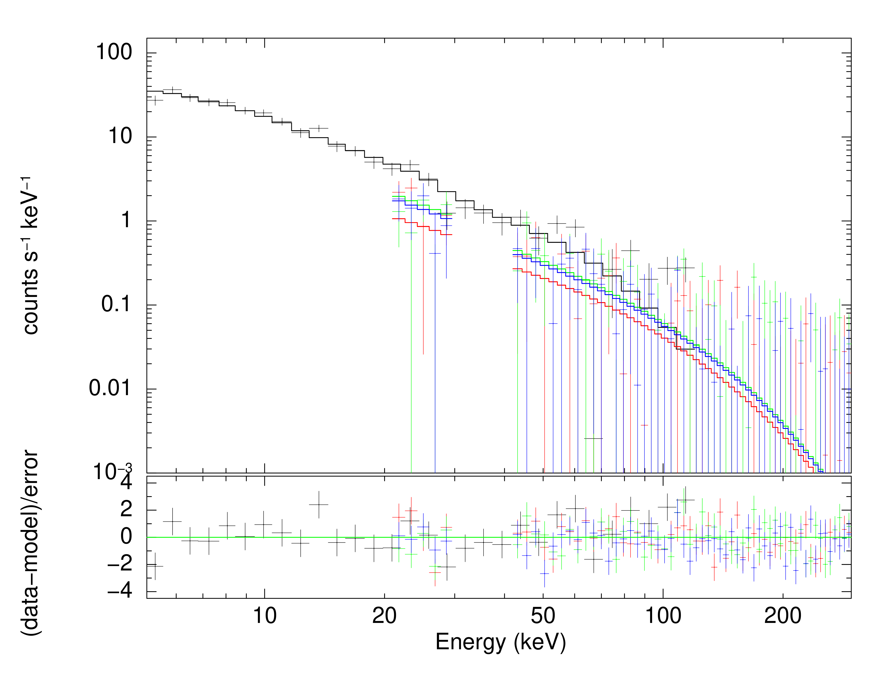<br />
图注：\(\textbf{GRB240821A, a fully characterised short GRB with extended emission: joint ECLAIRs+GRM spectral analysis.}\) Top: spectral analysis of the initial spike. The best fit model is a Band function with photon indices $\alpha_1=-0.68^{+0.07}_{-0.07}$ and $\alpha_2=-1.76^{+0.07}_{-0.08}$, and a break energy $E_\mathrm{b}=109^{+15}_{-19}\, \mathrm{keV}$. As the high-energy photon index is $\alpha_2>-2$, the peak energy cannot be measured but is at higher energy than the detected break. Bottom: spectral analysis of the extended emission. The best fit model is a power-law with an exponential cutoff with a photon index $\alpha=-1.67^{+0.09}_{-0.09}$ and a peak energy $E_\mathrm{p}=25^{+12}_{-9}\, \mathrm{keV}$. Figures adapted from \(\citetalias{svom_paper_240821A_inprep}.\) In both time intervals, the spectral analysis is carried with the ECLAIRs pipeline (ECPI) for ECLAIRs data using a chi-2 statistics (black) and eclgrm-xband for the three GRDs of GRM using \(\textit{pgstat}\) (GRD1: red, GRD2: green, and GRD3: blue) \(\citep\)[see][]{Godet+etal+2026a,Goldwurm+etal+2026,Piron+etal+2026}. The analysis is carried out from 5 keV to 1 MeV for the initial spike, and to 300 keV for the extended emission.<br />
对应解读：对应“建议重点查看的图表”第4、5项，以及“关键图表逐图导读”图5和模型拟合段落中的 prompt 光谱拟合、联合 ECLAIRs+GRM、残差与模型选择。<br />
入选理由：这是候选图中最直接展示 prompt 光谱拟合诊断量的图，包含短暴 GRB240821A 初始尖峰和 extended emission 的联合 ECLAIRs+GRM 光谱分析，明确给出 Band 函数、cutoff power-law、谱指数、break energy、\(E_p\)、统计方法和能段范围，最能支撑日报中关于短暴扩展发射、软谱成分、联合响应和高能端约束的解读。<br />
来源与置信度：\(arxiv_source\)；high；\(arxiv_source\) / main.tex:figure[6]</p>
<p><strong>Fig09</strong><br />
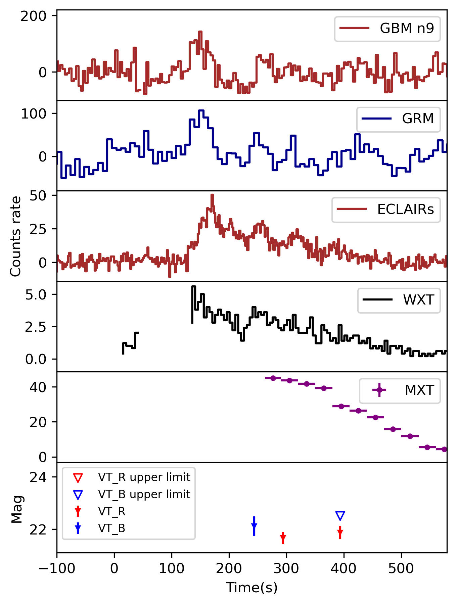<br />
图注：\(\textbf{GRB241217A, a very long GRB with an excellent multi-wavelength coverage from the end of the prompt emission to the afterglow phase: (1) prompt emission.}\) Background-subtracted lightcurve in \(\textit{Fermi}/GBM,\) \(\textit{SVOM}/GRM,\) \(\textit{SVOM}/ECLAIRs\) and \(\textit{EP}/WXT.\) The two last panels show the \(\textit{SVOM}/MXT\) and \(\textit{SVOM}/VT\) lightcurves obtained after the slew of the satellite. See references in Table~\(\ref{tab:bestsample}.\) Figure adapted from \(\citetalias{svom_paper_241217A_inprep}.\)<br />
对应解读：对应“建议重点查看的图表”第4、8项，以及“关键图表逐图导读”图4中多能段 prompt 光变曲线和与其他卫星比较。<br />
入选理由：该图同时给出 Fermi/GBM、SVOM/GRM、SVOM/ECLAIRs、EP/WXT 以及后续 MXT/VT 的光变曲线，是检验不同能段时间结构、prompt 到余辉过渡、外部任务交叉确认和仪器协同能力的核心图，比单一载荷光变更能体现 SVOM 首批观测的多波段价值。<br />
来源与置信度：\(arxiv_source\)；high；\(arxiv_source\) / main.tex:figure[9]</p>
<p><strong>Fig07</strong><br />
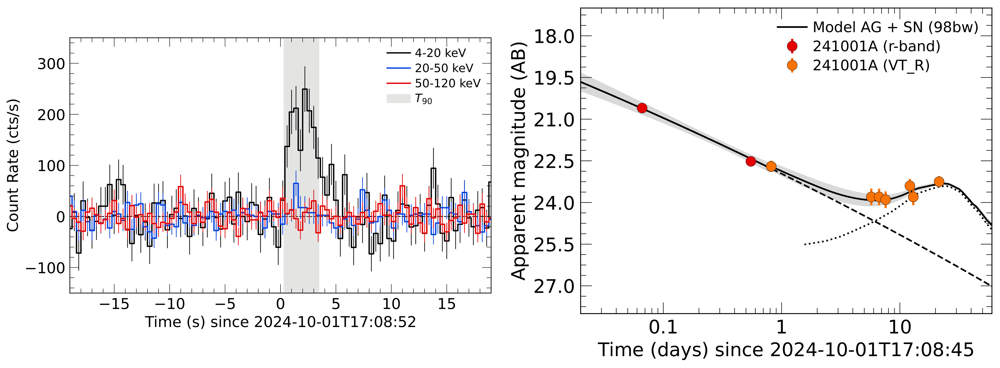<br />
图注：\(\textbf{GRB241001A, a fully characterised X-ray flash.}\) Left: ECLAIRs background subtracted lightcurve using only pixels of the detector plane illuminated by the burst. The burst is well detected in the 4-20 keV energy band (black) and not at higher energy. The shaded region corresponds to the interval of $T_{90} = 3.14 \pm 0.18\, \mathrm{s}$ (4-20 keV). Right: visible afterglow lightcurve, observed by the Las Campanas Observatory (LCO) network, VLT/X-shooter and \(\textit{SVOM}/VT\) (see references in Table~\ref{tab:bestsample}). The lightcurve is modeled by the sum of an afterglow component and a supernova. The afterglow is fit by a powerlaw with a temporal decay index $\alpha = 0.81 \pm 0.06$. The supernova component corresponds to the type-Ic broad line supernova associated to GRB980425 \(\citep{galama:1998},\) shifted to the redshift $z=0.573 $ of this GRB. Figures adapted from \(\citet{svom_paper_241001A}.\)<br />
对应解读：对应“建议重点查看的图表”第3、4、6项，以及“关键图表逐图导读”图4和图6中 X 射线闪、软能段触发、余辉光变和模型线。<br />
入选理由：该图展示 GRB241001A 作为完整刻画的 X-ray flash：左侧 ECLAIRs 仅在4–20 keV显著探测并标出 T90 区间，右侧可见光余辉由 afterglow 加超新星模型拟合，直接支撑日报关于 SVOM 补充软谱/XRF 参数空间以及余辉模型解释陷阱的讨论。<br />
来源与置信度：\(arxiv_source\)；high；\(arxiv_source\) / main.tex:figure[7]</p>
<p><strong>Fig08</strong><br />
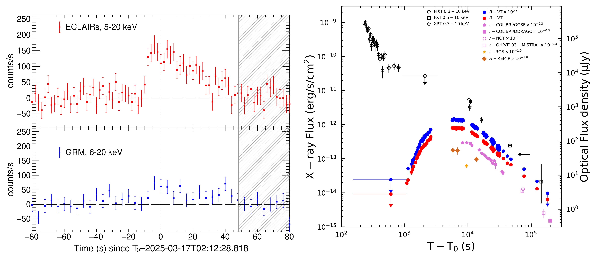<br />
图注：\(\textbf{GRB250317B, an X-ray Flash at large redshift with an unusual early afterglow.}\) Left: background-subtracted lightcurve in ECLAIRs (top) and GRM (bottom). Right: afterglow lightcurve in X-rays (black symbols) and visible (colored symbols). In addition to the references in Table~\(\ref{tab:bestsample},\) the observations by the NOT, the Multi-purpose InSTRument for Astronomy at Low-resolution (MISTRAL) at the T194 telescope of Observatoire de Haute Provence (OHP) and the Rapide Eye Mount telescope (REM, visible imager ROS and infrared imaging camera REMIR) are taken from GCN~\(\citetalias{GCN_NOT_250317B,GCN_OHP_250317B,GCN_REM_250317B}.\) Figures adapted from \(\citetalias{svom_paper_250317B_inprep}.\)<br />
对应解读：对应“建议重点查看的图表”第4、6、7项，以及“关键图表逐图导读”图4、图6和高红移/软谱事件讨论。<br />
入选理由：该图同时包含 GRB250317B 的 ECLAIRs 与 GRM prompt 光变，以及 X 射线和可见光余辉光变，适合检查软谱高红移 X-ray Flash 的 prompt-余辉连接、早期异常余辉和多波段随访完整性，是理解 SVOM 对软弱事件和高红移候选敏感性的关键个例。<br />
来源与置信度：\(arxiv_source\)；high；\(arxiv_source\) / main.tex:figure[8]</p>
<p><strong>Fig04</strong><br />
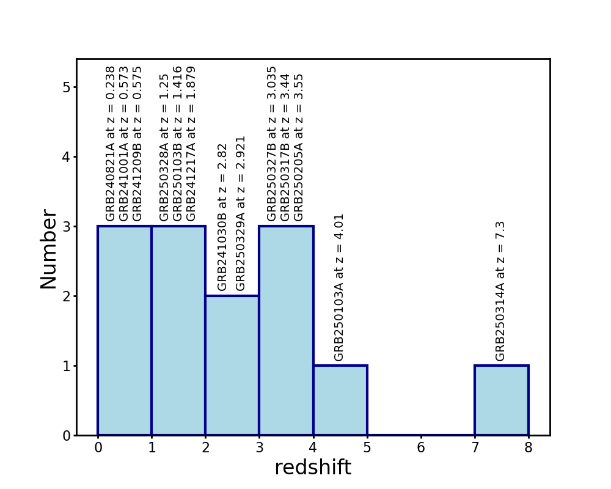<br />
图注：\(\textbf{Redshift distribution of the first 13 ECLAIRs GRBs with a measured redshift}\) (references are provided in Table~\ref{tab:bestsample}).<br />
对应解读：对应“建议重点查看的图表”第7项，以及“关键图表逐图导读”图7中红移或宿主信息。<br />
入选理由：这是候选图中唯一的样本级红移分布图，覆盖首批13个有红移测量的 ECLAIRs GRB，直接支撑日报关于红移完整性、距离表征能力和未来宇宙学应用选择效应的讨论，比单个事件图更适合说明早期样本的距离覆盖。<br />
来源与置信度：\(arxiv_source\)；high；\(arxiv_source\) / main.tex:figure[4]</p>
<p><strong>Fig11</strong><br />
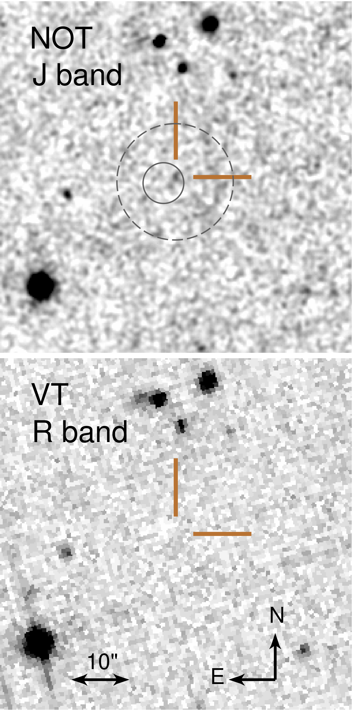<br />
图注：\textbf{GRB250314A, a classical long GRB at high redshift ($z\simeq 7.3$): afterglow detection.} Bottom: VT image in R band, obtained by stacking 23 images from the first \(\textit{SVOM}\) orbit following the trigger. No counterpart is identified, leading to an early deep upper limit in the red filter. Top: NOT image in J band 12.1~h after the trigger. The NIR counterpart is identified by the two copper-colored lines, well within the X-ray error circle of \(\textit{EP}/FXT\) (dashed line) and \(\textit{Swift}/XRT\) (solid line). Both images have an approximate size of $1'\times 1'$. The NOT image was smoothed. The bottom figure is adapted from \(\citet{svom_paper_250314A}.\)<br />
对应解读：对应“建议重点查看的图表”第6、7项，以及“关键图表逐图导读”图6和图7中高红移余辉定位、光学暗暴判断和误差圈检查。<br />
入选理由：该图展示 z≈7.3 的经典长暴 GRB250314A：VT 红波段无对应体给出深上限，NOT J 波段在 EP/FXT 与 Swift/XRT 误差圈内发现近红外对应体。它非常适合说明高红移 Lyman break/光学掉落、快速定位和多设施随访在 SVOM 科学目标中的作用。<br />
来源与置信度：\(arxiv_source\)；high；\(arxiv_source\) / main.tex:figure[11]</p>
<h4 id="_12">强相关工作</h4>
<p>这篇工作属于同类源和同类任务背景下的早期仪器科学论文。最直接的比较对象是 Swift/BAT 对 GRB 快速定位和余辉红移样本的建立、Fermi/GBM 对宽视场 prompt 光谱的长期监测、以及 GECAM 在全天高能瞬变监测中的补充作用。检索关键词可用“SVOM first GRB observations”、“SVOM ECLAIRs GRM MXT VT”、“Swift BAT GRB catalog”、“Fermi GBM GRB catalog”、“GECAM GRB catalog”。</p>
<p>在理论和群体统计方面，应把本文放到 GRB prompt 光谱、余辉标准模型、红移选择效应和 luminosity function 演化研究中理解。SVOM 的软触发能段可能改变高红移 GRB 和 X 射线闪样本的比例，这会与 Swift 时代的红移分布、Amati/Yonetoku 关系、低亮度 GRB 以及暗暴研究发生联系。相反观点或张力主要来自样本选择：不同仪器看到的 GRB 子样本并不相同，因此不能简单把 SVOM 样本与 Fermi 或 Swift 样本逐点合并。</p>
<p>本文不是单一命名事件论文，而是 SVOM 早期 GRB 样本和任务验证论文，因此 \(source_context\) 应理解为同类源目录、同类任务和历史原型。若需要继续追踪，应检索 SVOM 官方任务页、ECLAIRs/GRM/MXT/VT 仪器论文、GCN Circulars 中的 SVOM GRB 通报，以及后续 SVOM GRB catalog。</p>
<p><strong>同一事件 / 同类源线索</strong>：</p>
<ul>
<li><a href="https://arxiv.org/abs/2607.01090">https://arxiv.org/abs/2607.01090</a></li>
<li><a href="https://www.svom.eu/en/">https://www.svom.eu/en/</a></li>
<li><a href="https://swift.gsfc.nasa.gov/">https://swift.gsfc.nasa.gov/</a></li>
<li><a href="https://fermi.gsfc.nasa.gov/ssc/data/access/gbm/">https://fermi.gsfc.nasa.gov/ssc/data/access/gbm/</a></li>
</ul>
<p><strong>相似工作</strong>：</p>
<ul>
<li><a href="https://swift.gsfc.nasa.gov/results/batgrbcat/">https://swift.gsfc.nasa.gov/results/batgrbcat/</a></li>
<li><a href="https://heasarc.gsfc.nasa.gov/W3Browse/fermi/fermigbrst.html">https://heasarc.gsfc.nasa.gov/W3Browse/fermi/fermigbrst.html</a></li>
<li><a href="https://gcn.nasa.gov/">https://gcn.nasa.gov/</a></li>
</ul>
<p><strong>基础理论 / 方法工作</strong>：</p>
<ul>
<li><a href="https://ui.adsabs.harvard.edu/abs/1993ApJ...413..281M/abstract">https://ui.adsabs.harvard.edu/abs/1993ApJ...413..281M/abstract</a></li>
<li><a href="https://ui.adsabs.harvard.edu/abs/2004ApJ...611.1005G/abstract">https://ui.adsabs.harvard.edu/abs/2004ApJ...611.1005G/abstract</a></li>
<li><a href="https://ui.adsabs.harvard.edu/abs/2008ARA%26A..46..567G/abstract">https://ui.adsabs.harvard.edu/abs/2008ARA%26A..46..567G/abstract</a></li>
<li><a href="https://ui.adsabs.harvard.edu/abs/2014ARA%26A..52...43K/abstract">https://ui.adsabs.harvard.edu/abs/2014ARA%26A..52...43K/abstract</a></li>
</ul>
<p><strong>相反观点 / 张力线索</strong>：</p>
<ul>
<li><a href="https://ui.adsabs.harvard.edu/abs/2009ApJ...690.1197A/abstract">https://ui.adsabs.harvard.edu/abs/2009ApJ...690.1197A/abstract</a></li>
<li><a href="https://ui.adsabs.harvard.edu/abs/2012ApJ...756..112S/abstract">https://ui.adsabs.harvard.edu/abs/2012ApJ...756..112S/abstract</a></li>
</ul>
</details>
<h3 id="2-constraining-leptonic-and-hadronic-gamma-ray-emission-from-hess-j1825-137-and-its-environment">2. Constraining leptonic and hadronic gamma-ray emission from HESS J1825-137 and its environment</h3>
<ul>
<li>来源：arXiv / astro-ph.HE</li>
<li>链接：https://arxiv.org/abs/2607.00240v1</li>
<li>作者：Rubens Costa, R. C. Anjos</li>
<li>评分：novelty 8/10，importance 8/10，relevance 10/10，final 9.70/10</li>
<li>推荐理由：HESS J1825-137的GeV–TeV宽带伽马射线建模，结合Fermi-LAT、H.E.S.S.、HAWC、VERITAS，并讨论CTA/LHAASO对强子成分判别；伽马射线、PWN、PeVatron相关度极高。</li>
</ul>
<p><strong>中文题目</strong>：限制 HESS J1825-137 及其环境中的轻子与强子伽马射线辐射</p>
<p><strong>做了什么</strong>：这篇文章把 HESS J1825-137 的伽马射线谱从约 \(0.1\,\mathrm{GeV}\) 延伸到 \(160\,\mathrm{TeV}\)，合并 \(\textit{Fermi}\)-LAT、H.E.S.S.、HAWC、VERITAS 数据，并用 \(\textsc{Naima}\) 对纯轻子、纯强子和轻子—强子混合模型做贝叶斯参数估计。基线 GeV—TeV 数据更偏向纯轻子反康普顿解释；但加入模拟 CTAO 或 LHAASO 超高能点后，模型比较转向需要强子分量。文章的核心信息是：在 \(\gtrsim 10\,\mathrm{TeV}\) 尤其 \(\gtrsim 100\,\mathrm{TeV}\) 区间，反康普顿辐射受 Klein–Nishina 抑制，强子 \(pp\) 辐射更容易显露，因此未来高精度超高能谱形将直接决定这个源的物理解释。</p>
<p><strong>为什么重要</strong>：HESS J1825-137 是研究脉冲星风云、粒子逃逸和银河宇宙线加速的标杆源。它既有明亮、延展、能量依赖的 TeV 辐射，又处在可能含有致密分子气体的复杂环境中，因此轻子反康普顿与强子 \(pp\) 过程长期难以区分。本文重要之处在于把判别重点放到谱形而不是单一能段通量：如果最高能端出现相对硬的超高能尾巴，纯电子模型会越来越吃力。</p>
<p><strong>理论 / 观测 / 仪器方法价值</strong>：对理论而言，文章给出一个可操作的能量预算比较：基线电子能量约 \(W_e=4.25\times10^{48}\,\mathrm{erg}\)，混合模型中质子能量约 \(W_p\simeq2.5\times10^{48}\,\mathrm{erg}\)，都处在脉冲星自转能或局部环境可接受范围内。对观测而言，它明确指出 CTAO 与 LHAASO 在 \(10\)--\(100\,\mathrm{TeV}\) 以上谱形测量的判别力。对方法而言，它展示了用统一辐射框架和 \(\mathrm{BIC}\) 比较多成分模型时，最高能数据点如何改变模型选择。</p>
<p><strong>为什么应该关注</strong>：如果你关心银河系内 PeVatron、脉冲星风云是否能贡献高能宇宙线，或关心 TeV 源的多波段建模，这篇文章值得看。它不是简单宣布“发现强子辐射”，而是说明现有数据更支持轻子模型、未来或新增超高能数据才可能把结论推向强子成分。这种谨慎的证据链对理解下一代 Cherenkov 和广角水切伦科夫观测的科学产出很有参考价值。</p>
<details class="paper-detail">
<summary>展开详细解读：文章讲解、背景、理论、重点章节、图表与相关工作</summary>
<h4 id="_13">文章详细讲解</h4>
<p>科学问题：HESS J1825-137 是一个典型但并不简单的 TeV 脉冲星风云候选体。脉冲星注入的高能电子可以通过同步辐射和反康普顿散射产生从 X 射线到 TeV 的辐射；同时，若周围存在足够致密的分子云或壳层物质，逃逸的高能质子也可以通过 \(pp\) 碰撞产生 \(\pi^0\)，进而衰变成伽马射线。问题在于：宽能段伽马射线谱究竟是否已经要求强子分量，还是纯电子模型仍能解释全部观测？</p>
<p>作者怎么做：文章收集了 \(\textit{Fermi}\)-LAT、H.E.S.S.、HAWC、VERITAS 覆盖约 \(0.1\,\mathrm{GeV}\) 到 \(160\,\mathrm{TeV}\) 的谱能量分布，并用 \(\textsc{Naima}\) 分别计算反康普顿、同步辐射和 \(pp\) 辐射成分。模型分为纯轻子、纯强子和轻子—强子混合三类，参数用 MCMC 采样，模型优劣用贝叶斯信息准则 \(\mathrm{BIC}\) 比较。作者还加入两类“未来或外部约束”情形：模拟 CTAO 精密谱点，以及 LHAASO 超高能 \(E_\gamma\ge100\,\mathrm{TeV}\) 测量。</p>
<p>关键结果：在基线 GeV—TeV 数据下，纯轻子模型最受偏好，得到的电子能量 \(W_e=4.25\times10^{48}\,\mathrm{erg}\) 与既有研究相容。这说明仅凭当前常规 GeV—TeV 谱，并没有必要引入强子成分。但当加入模拟 CTAO 数据后，含强子分量模型相对纯轻子模型的 \(\Delta\mathrm{BIC}=-28.87\)，模型选择显著转向混合解释；加入 LHAASO 超高能点时也得到 \(\Delta\mathrm{BIC}=-7.89\)，表示有实质性但较弱的强子倾向。物理原因是高能电子反康普顿散射在 Klein–Nishina 区域被压低，而 \(pp\) 辐射可在高能端维持更硬尾部。</p>
<p>局限和下一步：这篇文章的强子结论不是对基线数据的直接发现，而依赖于新增或模拟的超高能谱形。其结果对源区气体密度、粒子空间分布、不同仪器通量归一化、扩展源积分区域和系统误差都敏感。下一步关键不是只增加一个最高能点，而是获得空间分辨的 \(10\)--\(100\,\mathrm{TeV}\) 谱图，比较伽马射线形态与分子气体、X 射线电子冷却区、脉冲星运动方向之间的对应关系。</p>
<h4 id="_14">关键结果是怎么做出来的</h4>
<p>本文最重要的证据链从样本构建开始：作者使用的是同一源 HESS J1825-137 的宽能段谱能量分布，而不是重新做每台仪器的事件级分析。数据来自 \(\textit{Fermi}\)-LAT 的 GeV 区间、H.E.S.S. 和 VERITAS 的 TeV 区间、HAWC 的高能 TeV 区间，并扩展到约 \(160\,\mathrm{TeV}\)。这样的合并 SED 能覆盖反康普顿峰及其高能衰减区，是区分电子与质子的必要条件。</p>
<p>模型比较的关键不是简单看哪条曲线穿过更多数据点，而是用 \(\textsc{Naima}\) 对粒子能谱参数做 MCMC 采样，再以 \(\mathrm{BIC}\) 惩罚自由参数个数。纯轻子模型通常参数较少，若能解释谱形，就会因简洁性获得优势；混合模型多了强子分量，必须显著改善拟合才值得接受。因此基线数据偏向纯轻子模型，说明当前谱点并未在统计上迫使引入 \(pp\) 辐射。</p>
<p>决定性变化来自高能端。加入模拟 CTAO 观测后，文章报告含强子模型相对基线轻子模型得到 \(\Delta\mathrm{BIC}=-28.87\)，这是非常强的模型选择证据；加入 LHAASO 超高能测量时得到 \(\Delta\mathrm{BIC}=-7.89\)，也达到通常意义上的正向证据。这里的负号表示新模型的 \(\mathrm{BIC}\) 更低，虽然具体强度取决于作者定义的参照模型，但方向很明确：超高能点越精确，纯轻子模型越容易暴露残差。</p>
<p>支撑结论的图表应主要包括三类：宽能段 SED 上纯轻子、纯强子和混合模型的曲线对比；MCMC 后验或参数置信区间；不同数据组合下的 \(\mathrm{BIC}\) 表。读者应重点看 \(10\)--\(100\,\mathrm{TeV}\) 以上纯轻子曲线是否系统性低于数据，以及这种偏差是否超过仪器能标和通量归一化系统误差。</p>
<p>稳健性方面，主要系统误差来自跨仪器拼接、扩展源积分区域不一致、气体密度假设、目标光子场能量密度、磁场强度和电子截断能之间的退化。文章给出的 \(W_p\simeq2.5\times10^{48}\,\mathrm{erg}\) 在能量上可行，但这并不等同于已证明质子就在同一空间区域辐射。真正强的稳健性检验应包括改变气体密度、距离、背景场和最高能谱点误差后，\(\Delta\mathrm{BIC}\) 是否仍保持同号且足够大。</p>
<details class="paper-subdetail">
<summary>展开背景、理论、公式、模型、章节和图表导读</summary>
<h4 id="_15">背景知识</h4>
<p>HESS J1825-137 是与年轻高能脉冲星及其脉冲星风云相关的明亮 TeV 源，长期被视为研究 PWN 粒子输运的关键对象。它的 TeV 辐射范围很大，并表现出能量依赖形态：低能电子寿命长、扩散或平流得更远，高能电子冷却快、分布更靠近注入区。这类现象让它成为检验电子冷却、脉冲星风历史和环境不均匀性的自然实验室。</p>
<p>历史上，许多 PWN 的 TeV 辐射都可由轻子模型解释：脉冲星风终止激波加速电子和正电子，它们与宇宙微波背景、红外和星光光子反康普顿散射产生伽马射线。但 HESS J1825-137 的环境并非真空泡，邻近分子气体和复杂银河平面背景让强子模型有了物理动机。若高能质子从加速区逃逸并撞击气体，\(pp\) 碰撞也会产生 TeV 到 PeV 能段的伽马射线。</p>
<p>现在重新看这个问题的原因是仪器能力发生了变化。早期 H.E.S.S. 给出了高质量 TeV 图像，\(\textit{Fermi}\)-LAT 补上 GeV 区间，HAWC 和 LHAASO 对几十 TeV 以上的连续监测打开了超高能窗口，CTAO 则有望提供更精细的能谱和形态分辨。正是在 \(10\)--\(100\,\mathrm{TeV}\) 以上，电子反康普顿散射进入 Klein–Nishina 区域，谱形对辐射机制更敏感。</p>
<p>该领域常见误区有三点。第一，看到 \(100\,\mathrm{TeV}\) 伽马射线并不自动等于发现 PeVatron，因为极高能电子在某些条件下也能贡献高能光子。第二，纯轻子和强子模型都能通过调节能谱截断、背景光场和气体密度拟合有限谱点，单靠总 SED 可能不唯一。第三，跨仪器 SED 拼接看似简单，但扩展源的积分孔径、背景扣除和能标差异会直接影响高能尾部判断。</p>
<h4 id="_16">基础理论 / 方法脉络</h4>
<p>基本物理图像是：PWN 中的脉冲星把自转能转化为相对论性电子—正电子风，这些粒子在磁场中产生同步辐射，在背景光子场中产生反康普顿伽马射线。电子能量越高，同步和反康普顿冷却越快，因此谱形高能端包含粒子注入、输运和辐射损失的综合信息。</p>
<p>轻子模型的核心量包括电子能谱归一化、谱指数、截断能、磁场和目标光子场。低能到中能反康普顿散射可近似处在 Thomson 区域，伽马射线能量随电子洛伦兹因子平方增长；但当电子静止系中入射光子能量接近或超过 \(m_ec^2\) 时，散射截面下降，进入 Klein–Nishina 区域。这会自然压低最高能伽马射线通量。</p>
<p>强子模型的基本过程是高能质子与环境气体中的质子碰撞，产生带电和中性介子。中性介子 \(\pi^0\) 很快衰变为两个伽马光子，因此伽马射线谱大致追踪母质子谱，但受碰撞截面和介子产生运动学影响。强子辐射强度与气体数密度、质子总能量和源距离强相关，因此环境气体图像和距离假设是关键系统量。</p>
<p>本文的方法不是从单一波段推断粒子分布，而是用宽能段 SED 同时约束不同辐射通道。\(\textsc{Naima}\) 的优势是给定粒子谱后可以计算同步、反康普顿和 \(pp\) 伽马射线辐射，并用 MCMC 估计参数后验。主要退化包括 \(W_e\) 与背景光子能量密度的退化、\(W_p\) 与气体密度的退化、电子截断能与 Klein–Nishina 软化之间的退化，以及不同仪器通量归一化的系统差异。</p>
<h4 id="_17">公式与推导</h4>
<p>第一步从观测量出发。对距离为 \(d\) 的源，能谱通量与光度谱满足</p>
<div class="math-display">\[F_E=\frac{L_E}{4\pi d^2},\qquad \nu F_\nu=E^2\frac{dN_\gamma}{dE}.\]</div>
<p>这里 \(F_E\) 是单位能量通量，\(L_E\) 是单位能量光度，\(dN_\gamma/dE\) 是光子数谱。SED 图上常画的 \(E^2dN_\gamma/dE\) 直接显示每个对数能段的能量输出。</p>
<p>第二步写粒子谱。轻子或强子母粒子常用带指数截断的幂律表示：</p>
<div class="math-display">\[N_i(E_i)=A_i\left(\frac{E_i}{E_0}\right)^{-p_i}\exp\left[-\left(\frac{E_i}{E_{\mathrm{cut},i}}\right)^{\beta_i}\right],\]</div>
<p>其中 \(i=e,p\)，\(A_i\) 是归一化，\(p_i\) 是谱指数，\(E_{\mathrm{cut},i}\) 是截断能，\(\beta_i\) 控制截断形状。本文的模型选择本质上是在比较只含 \(N_e\)、只含 \(N_p\) 或同时含二者的情形。</p>
<p>第三步给出电子能量预算：</p>
<div class="math-display">\[W_e=\int_{E_{e,\min}}^{E_{e,\max}} E_e N_e(E_e)\,dE_e.\]</div>
<p>同理有 \(W_p=\int E_pN_p(E_p)\,dE_p\)。文章报告基线模型 \(W_e=4.25\times10^{48}\,\mathrm{erg}\)，混合强子解释中 \(W_p\simeq2.5\times10^{48}\,\mathrm{erg}\)。这些积分的下限会影响总能量，因此比较文献时必须确认积分区间。</p>
<p>第四步看反康普顿的能量标度。在 Thomson 极限，电子洛伦兹因子 \(\gamma_e\) 散射能量为 \(\epsilon\) 的背景光子，典型伽马射线能量近似为</p>
<div class="math-display">\[E_\gamma\simeq \frac{4}{3}\gamma_e^2\epsilon.\]</div>
<p>这说明 \(10\,\mathrm{TeV}\) 以上伽马射线需要非常高能电子，且对红外、星光和宇宙微波背景的贡献不同。</p>
<p>第五步判断 Klein–Nishina 抑制。进入 Klein–Nishina 区域的无量纲参数可写为</p>
<div class="math-display">\[b=\frac{4\gamma_e\epsilon}{m_ec^2}.\]</div>
<p>当 \(b\ll1\) 时为 Thomson 散射；当 \(b\gtrsim1\) 时截面下降，反康普顿谱高能端变软。这正是本文强调 \(\gtrsim10\,\mathrm{TeV}\) 谱形有判别力的原因。</p>
<p>第六步写强子 \(pp\) 辐射的近似依赖关系：</p>
<div class="math-display">\[q_\gamma(E_\gamma)\approx n_{\mathrm{H}}c\int N_p(E_p)\frac{d\sigma_{pp\rightarrow\gamma}(E_p,E_\gamma)}{dE_\gamma}\,dE_p.\]</div>
<p>其中 \(q_\gamma\) 是体发射率，\(n_{\mathrm{H}}\) 是靶气体密度，\(d\sigma_{pp\rightarrow\gamma}/dE_\gamma\) 是微分截面。由此可见，\(W_p\) 与 \(n_{\mathrm{H}}\) 强烈反相关：气体越密，需要的质子能量越少。</p>
<p>第七步把模型与数据相连。若第 \(j\) 个谱点为 \(F_j\)，误差为 \(\sigma_j\)，模型为 \(M_j(\boldsymbol{\theta})\)，高斯近似下有</p>
<div class="math-display">\[\ln\mathcal{L}(\boldsymbol{\theta})=-\frac{1}{2}\sum_j\left[\frac{F_j-M_j(\boldsymbol{\theta})}{\sigma_j}\right]^2+\mathrm{const}.\]</div>
<p>这里 \(\boldsymbol{\theta}\) 包含粒子谱参数、归一化和可能的环境量。MCMC 采样给出 \(\boldsymbol{\theta}\) 的后验区域，而不是单一最佳曲线。</p>
<p>第八步是模型比较。贝叶斯信息准则为</p>
<div class="math-display">\[\mathrm{BIC}=k\ln n-2\ln\widehat{\mathcal{L}},\]</div>
<p>其中 \(k\) 是自由参数数目，\(n\) 是数据点数，\(\widehat{\mathcal{L}}\) 是最大似然。两个模型的差值</p>
<div class="math-display">\[\Delta\mathrm{BIC}=\mathrm{BIC}_{\mathrm{complex}}-\mathrm{BIC}_{\mathrm{baseline}}\]</div>
<p>若为负，表示复杂模型在惩罚额外参数后仍更优。本文中加入 CTAO 或 LHAASO 高能约束后得到负的 \(\Delta\mathrm{BIC}\)，说明高能谱形改善足以抵消强子分量带来的参数惩罚。</p>
<h4 id="_18">模型拟合 / 应用方法</h4>
<p>本文的拟合对象是宽能段 SED，而不是逐事件空间—能量联合似然。模型参数包括电子谱或质子谱的归一化、谱指数、截断能、截断形状以及辐射环境参数。纯轻子模型主要拟合反康普顿成分；纯强子模型拟合 \(pp\) 成分；混合模型允许两者叠加，因此在最高能端更有弹性。</p>
<p>似然通常可近似为谱点残差的高斯形式，但这只是对已发表 SED 的二级拟合。真正的事件级分析还会包含仪器响应、背景模型、空间模板和能量迁移矩阵。由于本文合并多台仪器结果，跨仪器系统误差尤其重要：不同孔径对扩展源包含的流量不同，能标偏差会把高能端点沿横轴移动，通量归一化偏差会改变模型比较结果。</p>
<p>参数退化是解读后验的核心。电子能量 \(W_e\) 与目标光子场能量密度近似反相关；磁场影响同步辐射约束，但若未联合拟合 X 射线数据，磁场可能不够受限；质子能量 \(W_p\) 与气体密度 \(n_{\mathrm{H}}\) 反相关；电子截断能提高可以补偿部分高能通量，但 Klein–Nishina 抑制会限制这种补偿。因此高能谱点的误差越小，退化越容易被打破。</p>
<p>残差诊断应重点看高能端是否有系统偏差，而不是全局 \(\chi^2\) 是否看起来可接受。如果纯轻子模型在 \(10\)--\(100\,\mathrm{TeV}\) 以上连续低估数据，且这种低估不能由能标或通量系统误差解释，那么强子分量的统计优势才有物理意义。相反，如果只有单个最高能点拉高 \(\mathrm{BIC}\) 差异，结论就应谨慎。</p>
<p>实际应用上，这类拟合可用于评估未来观测策略。CTAO 的优势在于较好的角分辨率和谱分辨率，适合测量 PWN 内部不同区域的谱软化；LHAASO 的优势在于超高能连续监测和大视场，适合发现 \(\gtrsim100\,\mathrm{TeV}\) 尾部。若两者都支持硬高能尾，并且该尾部空间上与分子气体相关而非与 X 射线 PWN 相关，强子解释会显著增强。</p>
<h4 id="_19">重点章节 / 结果段落怎么读</h4>
<p>数据/样本部分应先看作者如何汇总 \(\textit{Fermi}\)-LAT、H.E.S.S.、HAWC、VERITAS 的 SED。重点不是仪器名称，而是每个数据集的能段、误差、积分区域和是否包含源周围环境。对扩展源 HESS J1825-137，这些选择直接影响通量归一化。</p>
<p>方法部分应重点读 \(\textsc{Naima}\) 建模设置。需要确认电子和质子谱采用何种函数形式，是否固定距离、磁场、气体密度和光子场，MCMC 的先验范围如何设定，以及纯轻子、纯强子、混合模型的自由参数数目是否公平。</p>
<p>主结果部分应集中看基线 GeV—TeV 数据的模型比较。文章结论是基线数据偏向纯轻子模型，因此不要把后续 CTAO 或 LHAASO 情形误读为当前观测已经确定强子辐射。读者应核对 \(W_e\)、最佳拟合谱指数、截断能和残差分布。</p>
<p>扩展结果部分应读加入模拟 CTAO 和 LHAASO 超高能点后的模型选择。这里 \(\Delta\mathrm{BIC}=-28.87\) 和 \(\Delta\mathrm{BIC}=-7.89\) 是全文最关键的统计量，分别代表精密高能谱和超高能观测对强子成分的推动。</p>
<p>讨论和稳健性部分应看作者如何处理环境气体与能量预算。若 \(W_p\simeq2.5\times10^{48}\,\mathrm{erg}\) 是在特定 \(n_{\mathrm{H}}\) 下得到的，那么换一个气体密度会线性改变所需质子能量。读者也应关注作者是否讨论空间形态，因为只有谱拟合不足以完全排除轻子解释。</p>
<h4 id="_20">建议重点查看的图表</h4>
<ol>
<li>
<p>宽能段 SED 总图：检查 \(0.1\,\mathrm{GeV}\) 到 \(160\,\mathrm{TeV}\) 的所有数据点、误差棒和不同仪器之间是否平滑衔接，尤其看 HAWC 或最高能点是否相对 H.E.S.S. 外推偏高。</p>
</li>
<li>
<p>纯轻子、纯强子、混合模型曲线对比图：重点看 \(10\)--\(100\,\mathrm{TeV}\) 以上三类模型的分离程度，而不是 GeV 端是否都能穿过数据点。</p>
</li>
<li>
<p>MCMC 后验角图或参数置信区间：检查电子谱指数、截断能、归一化之间是否强相关；若强子分量存在，检查 \(W_p\) 是否有闭合约束还是只给出很宽范围。</p>
</li>
<li>
<p>\(\mathrm{BIC}\) 或模型比较表：核对每种数据组合的 \(n\)、\(k\)、最佳似然和 \(\Delta\mathrm{BIC}\)，确认强子偏好不是单纯来自参数数目处理不一致。</p>
</li>
<li>
<p>CTAO 模拟数据图：看模拟误差条大小、采样能段和相对于纯轻子曲线的偏离位置。若模拟点本身隐含混合模型假设，应把它理解为前瞻性判别力测试。</p>
</li>
<li>
<p>LHAASO 超高能约束图：重点看 \(E_\gamma\ge100\,\mathrm{TeV}\) 点或上限如何改变高能尾。若只有少数点，需评估能标、背景和源混淆系统误差。</p>
</li>
<li>
<p>能量预算或环境参数表：检查 \(W_e\)、\(W_p\)、\(n_{\mathrm{H}}\)、距离和光子场假设，判断这些数值是否与脉冲星自转能和分子云观测相容。</p>
</li>
</ol>
<h4 id="_21">关键图表逐图导读</h4>
<p>图 1：应是多仪器 SED 汇总图。横轴通常为 \(E_\gamma\)，纵轴为 \(E_\gamma^2dN/dE_\gamma\) 或等价能量通量。读者要看不同颜色或符号代表的 \(\textit{Fermi}\)-LAT、H.E.S.S.、HAWC、VERITAS 数据是否在重叠能段一致。陷阱是扩展源不同积分区域可能制造看似的谱弯曲。</p>
<p>图 2：应展示基线数据下纯轻子、纯强子和混合模型的最佳拟合。模型线若在 GeV—TeV 主体都能通过数据点，真正的区分区域就在最高能端。读者应检查纯轻子线在 \(\gtrsim10\,\mathrm{TeV}\) 是否因 Klein–Nishina 效应变软，以及强子线是否提供更硬尾部。</p>
<p>图 3：若有后验角图或参数分布，横纵轴应为谱指数、截断能、归一化或能量预算等参数。密集斜长椭圆代表退化，例如 \(A_e\) 与 \(E_{\mathrm{cut},e}\) 的相关。读图陷阱是只看最佳值而忽略置信区间是否跨越无强子分量。</p>
<p>图 4：应是加入 CTAO 模拟点后的 SED 或残差图。读者要看模拟点分布在 \(10\)--\(100\,\mathrm{TeV}\) 哪些能段，以及相对于纯轻子预测的偏离是否连续出现。若多点系统性高于纯轻子曲线，\(\Delta\mathrm{BIC}=-28.87\) 才有直观支撑。</p>
<p>图 5：应是加入 LHAASO 超高能测量后的模型比较。横轴高能端可能延伸到 \(\gtrsim100\,\mathrm{TeV}\)，关键是最高能数据点是否需要强子尾部。读者应注意 LHAASO 的角分辨率和银河平面源混淆，因为超高能通量未必完全来自同一 PWN 区域。</p>
<p>图 6 或表 1：模型比较表应列出纯轻子、纯强子和混合模型在不同数据组合下的 \(\mathrm{BIC}\)。读者要确认 \(\Delta\mathrm{BIC}\) 的参照方向；本文报告的负值表示含强子模型更优。不要把 \(\mathrm{BIC}\) 差值误读为“概率”，它是近似模型证据的诊断量。</p>
</details>
<h4 id="_22">论文原图 / 可嵌入图片</h4>
<p><strong>Fig05</strong><br />
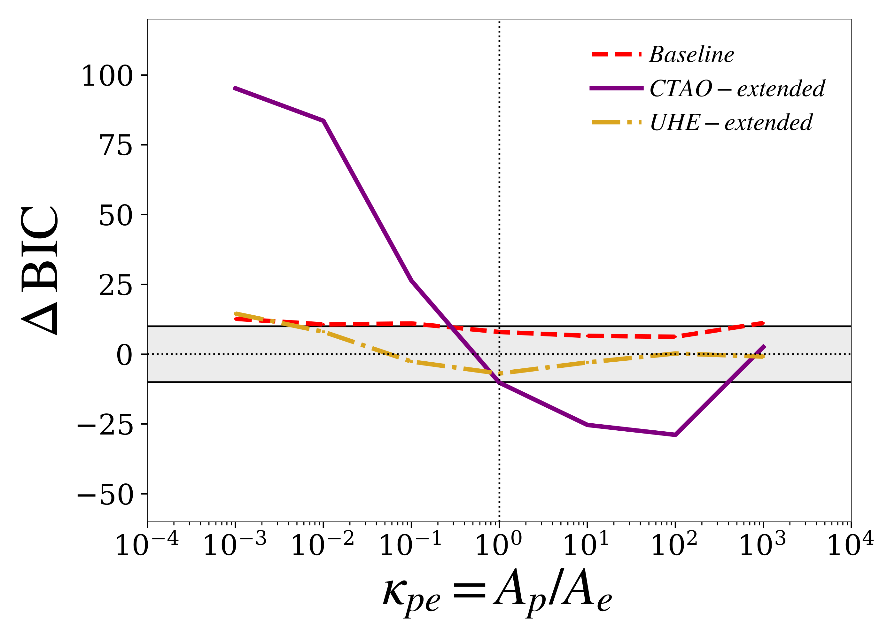<br />
图注：Difference in Bayesian Information Criterion, $\Delta \mathrm{BIC}_m = \mathrm{BIC}_m - \mathrm{BIC}_{\mathrm{IC}}$, where $m$ denotes a given leptohadronic model, as a function of the proton-to-electron normalization ratio $\kappa_{pe} = A_p/A_e$ for leptohadronic models. The dashed, solid, and dash-dotted curves correspond to the \(\emph{Baseline},\) \(\emph{CTAO-extended},\) and \(\emph{UHE-extended}\) datasets, respectively. Negative values of $\Delta \mathrm{BIC}$ indicate a statistical preference for the tested model with respect to the IC-only scenario. The vertical dotted line marks $\kappa_{pe}=1$, corresponding to equal proton and electron normalization. The shaded region corresponds to the interval $-10 < \Delta \mathrm{BIC} < 10$. Values of $|\Delta \mathrm{BIC}| \gtrsim 10$ correspond to strong evidence.<br />
对应解读：“建议重点查看的图表”第4项 BIC 或模型比较表；“关键图表逐图导读”图6或表1；模型拟合段落中关于不同数据组合下 ΔBIC 的解释。<br />
入选理由：这是候选图中唯一直接展示模型选择诊断量的图，横轴为质子/电子归一化比 κpe，纵轴为相对 IC-only 的 ΔBIC，并同时比较 Baseline、CTAO-extended、UHE-extended 三种数据组合。它能直接支撑日报中关于基线数据偏好纯轻子、加入 CTAO 或 LHAASO 后转向含强子模型的核心结论。<br />
来源与置信度：\(arxiv_source\)；high；\(arxiv_source\) / main.tex:figure[5]</p>
<p><strong>Fig03</strong><br />
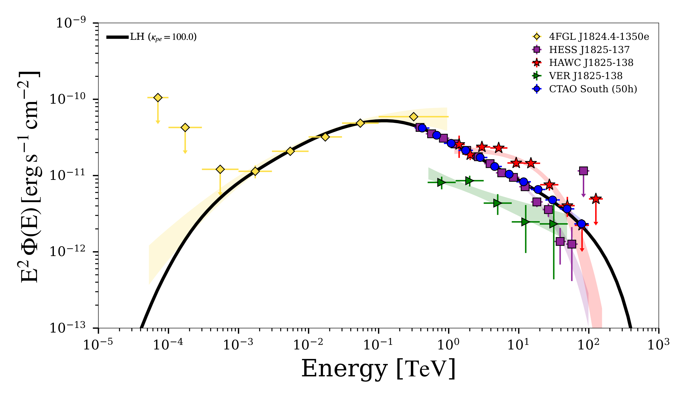<br />
图注：Spectral energy distribution of HESS\,J1825$-$137 together with the best-fit leptohadronic (LH) model with $\kappa_{pe}=100$ (solid curve), obtained from the joint fit of the \(\emph{Baseline}\) dataset (\(\textit{Fermi}-LAT,\) H.E.S.S., HAWC, VERITAS) augmented with the simulated 50\,h CTAO South observation. Gamma-ray data from \(\textit{Fermi}-LAT\) (diamond markers), H.E.S.S. (square markers), HAWC (star markers), VERITAS (triangle markers), and the simulated CTAO South flux points (circular markers) are overlaid. This LH configuration constitutes the BIC-preferred scenario for the \(\emph{CTAO-extended}\) dataset (see Table~\ref{tab:model-ctao-extended}).<br />
对应解读：“建议重点查看的图表”第5项 CTAO 模拟数据图；“关键图表逐图导读”图4；详细解读中关于 CTAO 使 ΔBIC=-28.87、含强子模型显著优于纯轻子的段落。<br />
入选理由：该图展示 Baseline 数据叠加 50 h CTAO South 模拟谱点后的轻子—强子最佳拟合，是 CTAO-extended 数据集中 BIC 偏好的情形。它最能直观看出 10--100 TeV 区间模拟误差条和高能谱形如何增强对强子尾部的判别力。<br />
来源与置信度：\(arxiv_source\)；high；\(arxiv_source\) / main.tex:figure[3]</p>
<p><strong>Fig04</strong><br />
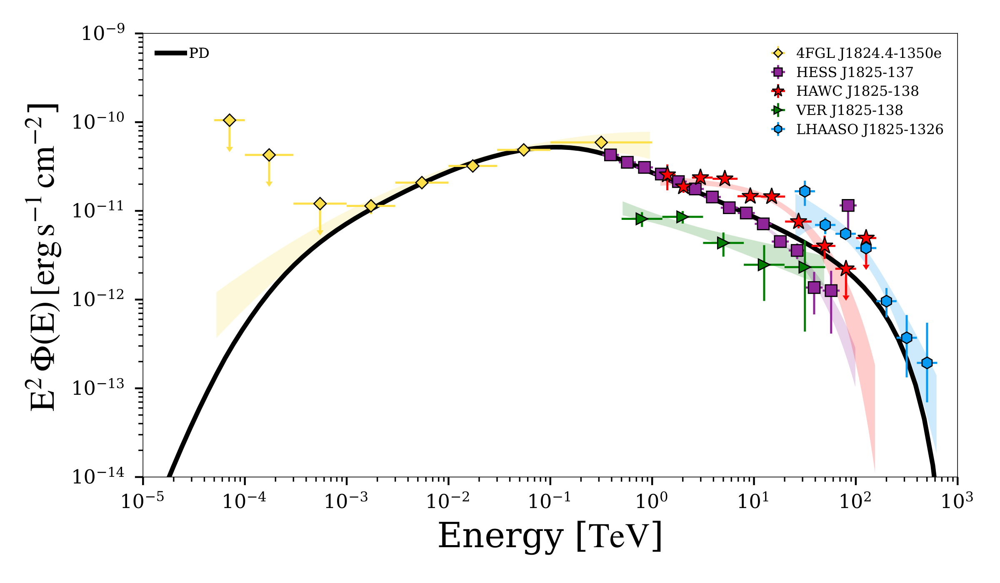<br />
图注：Spectral energy distribution of HESS\,J1825$-$137 together with the best-fit purely hadronic pion-decay (PD) model obtained from the \(\emph{UHE-extended}\) dataset (\(\emph{Baseline}\) + LHAASO). The solid curve shows the $\pi^{0}$-decay gamma-ray emission produced by $pp$ interactions of the relativistic proton population with the dense molecular material of mean density $n_{\rm H}\simeq 6\times 10^{2}\,{\rm cm^{-3}}$ adopted from \(\citet{Voisin2016}.\) Gamma-ray data from \(\textit{Fermi}-LAT\) (yellow diamonds), H.E.S.S. (purple markers), HAWC (orange markers), VERITAS (green markers) and LHAASO\,J1825$-$1326 (hexagon markers, \citealt{Cao2021b}) are overlaid. This PD configuration is the BIC-preferred scenario for the \(\emph{UHE-extended}\) dataset (Table~\ref{tab:model-uhe-extended}).<br />
对应解读：“建议重点查看的图表”第6项 LHAASO 超高能约束图；“关键图表逐图导读”图5；模型拟合段落中关于 UHE-extended 数据和 Eγ≥100 TeV 高能尾的讨论。<br />
入选理由：该图把 LHAASO J1825-1326 超高能点加入宽能段 SED，并给出 UHE-extended 数据下 BIC 偏好的纯强子 pion-decay 模型。它直接对应日报中要求检查 ≥100 TeV 数据点如何改变高能尾、是否需要强子成分的重点。<br />
来源与置信度：\(arxiv_source\)；high；\(arxiv_source\) / main.tex:figure[4]</p>
<p><strong>Fig02</strong><br />
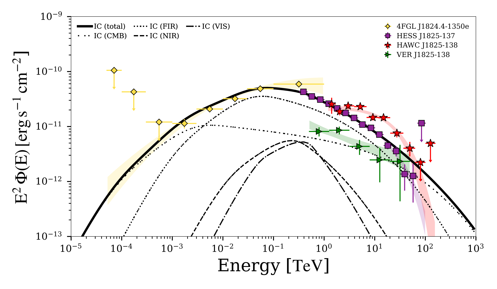<br />
图注：Spectral energy distribution of HESS~J1825--137 together with the best-fit inverse Compton (IC) model obtained from the baseline dataset (\(\textit{Fermi}-LAT,\) H.E.S.S., HAWC, VERITAS). The solid curve shows the total IC emission, while the contributions from the cosmic microwave background (CMB), far-infrared (FIR), near-infrared (NIR), and optical/visible (VIS) photon fields are shown with different line styles. Gamma-ray data from \(\textit{Fermi}-LAT\) (diamond markers), H.E.S.S. (square markers), HAWC (star markers), and VERITAS (triangle markers) are overlaid. The shaded areas represent the statistical uncertainty of the spectral model fit. This IC model is used as the \(\emph{Baseline}\) scenario for comparison with alternative emission models discussed in the text.<br />
对应解读：“建议重点查看的图表”第1项宽能段 SED 总图；“关键图表逐图导读”图1和图2；详细解读中关于基线 GeV--TeV 数据偏好纯轻子模型、We=4.25×10^48 erg 的段落。<br />
入选理由：该图展示 Fermi-LAT、H.E.S.S.、HAWC、VERITAS 从 GeV 到 TeV 的基线 SED，以及 IC-only 最佳拟合和 CMB/FIR/NIR/VIS 各靶光子场贡献。它是理解基线数据为何无需强子分量的基础图，也便于检查不同仪器谱点在重叠能段的衔接和高能端是否偏离纯轻子外推。<br />
来源与置信度：\(arxiv_source\)；high；\(arxiv_source\) / main.tex:figure[2]</p>
<p><strong>Fig01</strong><br />
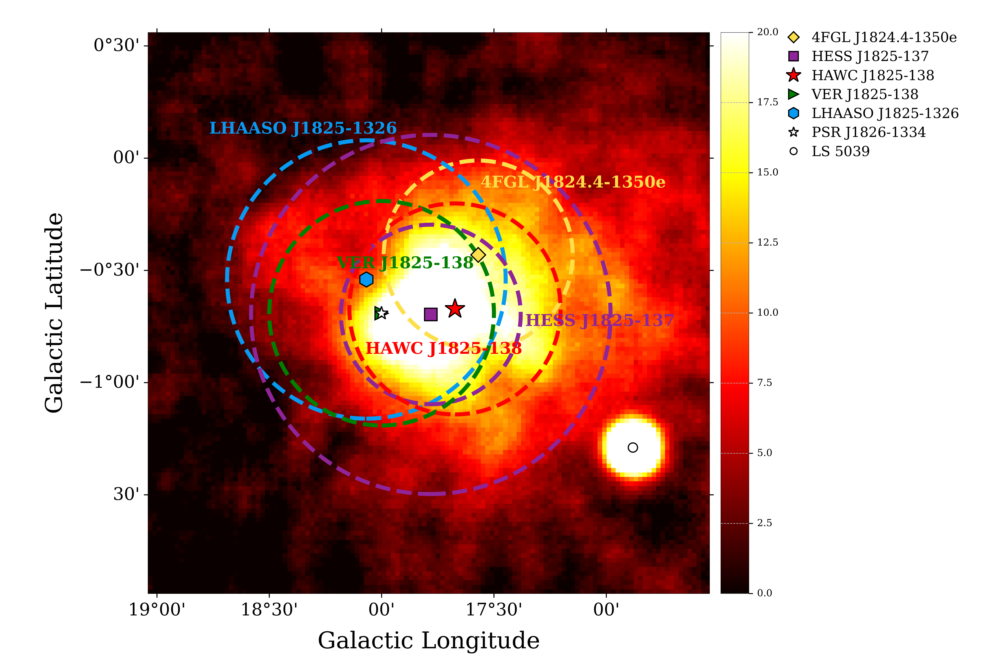<br />
图注：H.E.S.S. significance skymap of the region surrounding HESS~J1825--137, derived from the H.E.S.S. Galactic Plane Survey (HGPS) \(\citep{Abdalla2018},\) shown in Galactic coordinates. The background intensity scale indicates the detection significance in units of standard deviations ($\sigma$). The positions of multi-wavelength counterparts and neighbouring sources are overlaid: HESS~J1825--137~\(\citep{2019A&A...621A.116H},\) 4FGL~J1824.4--1350e~\(\citep{Abdollahi2022,ballet2024},\) HAWC~J1825--138~\(\citep{Albert2021},\) VER~J1825--138~\(\citep{ABEYSEKARA2020102403},\) and LHAASO~J1825--1326~\(\citep{2024ApJS..271...25C}.\) The associated pulsar PSR~J1826--1334 \(\citep{Manchester2005}\) is marked with a star at $(l,b) = (18.00^\circ, -0.69^\circ)$, and the gamma-ray binary LS~5039 \(\citep{Aharonian2006}\) with an open circle at $(l,b) = (16.88^\circ, -1.29^\circ)$. Dashed circles indicate the reported spatial extensions of the different gamma-ray sources. For HESS~J1825--137, two characteristic regions are shown, corresponding to its core emission and its larger-scale nebular extent.<br />
对应解读：“建议重点查看的图表”第6项中关于 LHAASO 源混淆和系统误差的提醒；模型拟合段落中关于扩展源积分区域、空间模板和跨仪器系统误差的讨论。<br />
入选理由：虽然它不是 SED 或模型拟合图，但该 H.E.S.S. 显著性天图标出了 HESS、HAWC、VERITAS、LHAASO 及邻近源和扩展区域，有助于理解不同仪器对扩展源取样区域不一致、银河平面源混淆和 LHAASO 超高能通量归属等系统误差问题。<br />
来源与置信度：\(arxiv_source\)；high；\(arxiv_source\) / main.tex:figure[1]</p>
<h4 id="_23">强相关工作</h4>
<p>这篇工作与 H.E.S.S. 对 HESS J1825-137 的经典研究直接相连，后者确立了该源的大尺度 TeV 形态和能量依赖软化。它也与 HAWC、LHAASO 对银河平面超高能源的研究相关：这些广角阵列更容易发现 \(\gtrsim100\,\mathrm{TeV}\) 尾部，但空间分辨率和源混淆问题更突出。检索关键词可用 “HESS J1825-137 energy dependent morphology”, “HESS J1825-137 HAWC”, “HESS J1825-137 LHAASO”, “PWN hadronic leptonic modeling”。</p>
<p>在理论上，本文属于 PWN 多波段辐射建模和银河 PeVatron 候选体判别的交叉问题。相近工作包括对 Vela X、HESS J1826-130、MGRO J1908+06 等扩展 TeV 源的轻子—强子分解，也包括 \(pp\) 伽马射线参数化和反康普顿 Klein–Nishina 抑制的基础计算。相反观点或张力主要来自：仅用总谱不能唯一证明强子辐射，必须结合空间相关性、气体分布和多波段冷却结构。检索关键词可用 “Klein Nishina inverse Compton PWN”, “hadronic gamma-ray emission molecular cloud”, “Naima radiative modeling gamma rays”。</p>
<p><strong>同一事件 / 同类源线索</strong>：</p>
<ul>
<li><a href="https://arxiv.org/abs/2607.00240">https://arxiv.org/abs/2607.00240</a></li>
<li><a href="https://arxiv.org/pdf/2607.00240">https://arxiv.org/pdf/2607.00240</a></li>
</ul>
<p><strong>相似工作</strong>：</p>
<ul>
<li><a href="https://arxiv.org/abs/astro-ph/0607548">https://arxiv.org/abs/astro-ph/0607548</a></li>
<li><a href="https://arxiv.org/abs/1702.02992">https://arxiv.org/abs/1702.02992</a></li>
</ul>
<p><strong>基础理论 / 方法工作</strong>：</p>
<ul>
<li><a href="https://arxiv.org/abs/astro-ph/0606058">https://arxiv.org/abs/astro-ph/0606058</a></li>
</ul>
<p><strong>相反观点 / 张力线索</strong>：</p>
<p>（未提供）</p>
</details>
<h3 id="3-early-results-from-the-svom-observatory-science-program">3. Early results from the SVOM Observatory Science program</h3>
<ul>
<li>来源：arXiv / astro-ph.HE</li>
<li>链接：https://arxiv.org/abs/2607.01091v1</li>
<li>作者：A. Coleiro, L. Tao, F. Cangemi, X. Han, M. Brunet, N. Dagoneau, A. Foisseau, A. Goldwurm</li>
<li>评分：novelty 7/10，importance 8/10，relevance 9/10，final 9.05/10</li>
<li>推荐理由：SVOM早期观测科学项目和高能时域性能总结，包含XRB、耀变体、磁星和未识别高能源监测；对高能天文仪器和时域观测有直接参考价值。</li>
</ul>
<p><strong>中文题目</strong>：SVOM 天文台科学计划的早期结果</p>
<p><strong>做了什么</strong>：这篇文章总结了 SVOM 在 2024 年 7 月到 2025 年 12 月期间，除伽马暴主任务以外的“天文台科学”运行结果。作者介绍了 General Program 和 Target-of-Opportunity 观测如何排程、ECLAIRs 编码孔径仪器如何做偶然源探测与长期监测，并给出一批早期科学案例：超过一千次指向观测、数百个非伽马暴高能源，主要包括 X 射线双星，也包括耀变体、恒星耀发、磁星和未分类事件。文章的核心结论是，SVOM 不只是伽马暴卫星，它已经表现出稳定的宽视场高能时域监测能力，特别适合追踪 X 射线双星状态变化、耀变体耀发和短时标爆发现象。</p>
<p><strong>为什么重要</strong>：重要性在于它把 SVOM 从“伽马暴专用平台”扩展为一个实际可用的高能时域天文台。对于专业读者，最值得注意的不是某一个单源结果，而是任务运行、触发、指向、编码孔径成像、偶然源检出和多波段随访链条已经形成闭环。这决定了未来几年 SVOM 能否在 MAXI、Swift、Fermi、INTEGRAL、Einstein Probe、HXMT 等设施之间补上独特的时间覆盖和能段覆盖。</p>
<p><strong>理论 / 观测 / 仪器方法价值</strong>：对观测和方法的价值主要体现在三点：第一，给出了早期在轨阶段 General Program 与 ToO 的实际执行效率和科学产出；第二，展示了 ECLAIRs 编码孔径数据用于非伽马暴源监测的工作流，包括成像、源检出、光变曲线和谱态诊断；第三，通过 Cyg X-1、4U 0614+091、Aql X-1、1ES 1959+650、HD 22468 等案例说明 SVOM 可在强源监测、短爆发现象、谱态转变和多信使/多波段触发中发挥作用。</p>
<p><strong>为什么应该关注</strong>：如果你研究高能暂现源、X 射线双星、吸积态转变、耀变体或任务数据分析，这篇文章值得关注，因为它相当于 SVOM 非伽马暴科学的“使用说明书加性能验收报告”。它告诉你哪些源类已经能被稳定监测、哪些诊断量比较可靠、哪些结果还受早期标定和选择效应限制，也提示未来申请 SVOM 观测或联合分析其他时域巡天数据时应该如何设计触发阈值、时间采样和能谱模型。</p>
<details class="paper-detail">
<summary>展开详细解读：文章讲解、背景、理论、重点章节、图表与相关工作</summary>
<h4 id="_24">文章详细讲解</h4>
<p>科学问题：SVOM 的设计重心是伽马射线暴，但它搭载的宽视场和多波段仪器天然适合高能时域天文学。本文要回答的问题是：在实际在轨运行的前一年半里，SVOM 是否已经能作为一个面向社区的高能天文台工作？它对非伽马暴目标的观测效率、源检出能力、监测稳定性和快速响应能力达到什么水平？这些能力能否产出有物理内容的结果，而不仅是工程试运行记录？</p>
<p>作者怎么做：文章汇总了 2024 年 7 月至 2025 年 12 月的 Observatory Science program 数据，覆盖 General Program 指向观测和 Target-of-Opportunity 观测。作者重点说明了观测组织方式、指向执行、触发响应以及 ECLAIRs 编码孔径仪器用于偶然源探测和监测的分析框架。由于 ECLAIRs 是宽视场编码孔径望远镜，源检出不是简单在探测器平面数计数，而是要通过掩膜解码、背景建模、显著性图和源目录交叉识别来建立天空图像和光变曲线。</p>
<p>关键结果：在这一阶段，SVOM 完成了超过一千次指向观测，并检出数百个非伽马暴高能源。源类以 X 射线双星为主，同时包括耀变体、恒星耀发、磁星和若干未识别事件。文章选取了几个代表性案例：Cyg X-1 的微类星体监测展示了强源长期光变和谱态追踪能力；4U 0614+091 中的爆发振荡说明 SVOM 能捕捉短时标相干或准相干信号；Aql X-1 的谱态监测展示了瞬变低质量 X 射线双星的吸积态演化；1ES 1959+650 的 X 射线耀发说明 SVOM 对耀变体高态有响应；HD 22468 的恒星耀发则说明非致密天体的高能活动也会进入 SVOM 的偶然科学样本。</p>
<p>局限和下一步：本文是早期结果综述，重点在能力展示而不是对每个源给出最终物理模型。因此，读者应把其中的单源案例理解为“性能与科学潜力”的标尺，而不是完整的源物理论文。局限包括在轨早期标定仍在迭代、编码孔径成像对背景模型和拥挤场敏感、偶然源样本有明显的指向与曝光选择函数、不同仪器之间的交叉标定仍需长期积累。下一步最关键的是发布更系统的源目录、曝光图、灵敏度曲线和可复现的似然/显著性诊断，并把 SVOM 数据与 Swift、MAXI、Fermi、INTEGRAL、NICER、HXMT、Einstein Probe 等设施联合建模。</p>
<h4 id="_25">关键结果是怎么做出来的</h4>
<p>数据和样本选择方面，本文使用的是 2024 年 7 月到 2025 年 12 月 SVOM Observatory Science program 的在轨数据，而不是只挑选单个亮源做展示。样本包含 General Program 的常规指向观测和 ToO 观测，因而它天然不是全天均匀巡天样本。文章报告了超过一千次指向观测，并在这些观测及 ECLAIRs 宽视场覆盖中检出数百个非伽马暴高能源。对读者来说，理解这个样本的关键是区分“被主动指向的目标”“落入视场的偶然源”和“由事件触发后跟进的暂现源”。</p>
<p>最重要的证据链来自 ECLAIRs 的偶然源探测和监测框架。编码孔径仪器的源检出依赖探测器阴影图样与掩膜响应的相关重建，最后形成天空显著性图、候选源列表和时间分辨光变曲线。文章强调的不是单次曝光中的最高信噪比，而是一个可重复运行的管线：给定指向、曝光、背景和源目录，管线能在大量观测中稳定找出已知 X 射线双星、耀变体、磁星或未识别暂现事件。这一框架决定了后续目录工作的可靠性。</p>
<p>几个案例支撑了“SVOM 可做非伽马暴时域科学”的主结论。Cyg X-1 用于检验强源监测和谱态诊断，因为它亮、变化丰富且历史数据充分；4U 0614+091 的爆发振荡案例检验了短时标计时能力，要求事件时间标定、背景扣除和周期/功率谱显著性处理都足够可靠；Aql X-1 展示了低质量 X 射线双星从硬态到软态或反向演化时，硬度、通量和时间演化能否被 SVOM 跟踪；1ES 1959+650 和 HD 22468 则把源类扩展到河外喷流和恒星磁活动。</p>
<p>显著性和置信度方面，本文作为早期综述通常不会对每个案例都展开完整的贝叶斯模型比较，但专业读者应重点检查其显著性定义是否与编码孔径成像中的试验因子、背景非均匀性和源混淆相容。对于偶然源检出，单像素或单时间窗的信噪比不能直接等同于全样本假警报概率；需要考虑搜索的天空像素数、时间窗数、能段数和候选源数。对于爆发振荡，还要检查功率谱峰值是否经过频率搜索范围和时间窗扫描的校正。</p>
<p>系统误差主要来自四类：仪器响应和能量标定、编码孔径部分编码视场下的响应变化、背景模型随轨道环境变化、以及观测计划导致的样本选择函数。稳健性检验应包括不同能段和时间 bin 的重复检出、与外部监测设施的同时段光变比较、对已知稳定源的残差检查、以及在源拥挤区域进行注入-恢复测试。本文的价值在于已经展示这些科学场景可行；未来单源论文和目录论文需要把这些检验量化。</p>
<details class="paper-subdetail">
<summary>展开背景、理论、公式、模型、章节和图表导读</summary>
<h4 id="_26">背景知识</h4>
<p>SVOM 是中法合作的空间高能天文任务，主目标是伽马射线暴的发现、定位和多波段随访。它的特殊之处在于把宽视场高能探测、X 射线/光学随访和地面后续观测组织在同一任务框架内。虽然伽马暴是任务设计的核心驱动力，但任何宽视场高能仪器都会自然积累大量非伽马暴暂现源和变源数据，这正是本文讨论的 Observatory Science program。</p>
<p>高能时域天文学的历史经验表明，许多重要发现来自“副产品”数据。Uhuru、HEAO、RXTE、BeppoSAX、Swift、INTEGRAL、Fermi、MAXI 等任务都在主科学目标之外产生了大量 X 射线双星、活动星系核、磁星、恒星耀发和未识别暂现源结果。SVOM 的早期数据是否能进入这一传统，取决于它是否能把工程触发和科学管线转化为稳定的源检出、监测和快速随访能力。</p>
<p>为什么现在值得重新看？一方面，2020 年代的时域天文学已经进入多设施联合阶段：引力波、甚高能伽马射线、中微子、快速射电暴、软 X 射线暂现和光学巡天都需要快速高能覆盖。另一方面，SVOM 的运行时间与 Einstein Probe、Fermi、Swift、NICER、HXMT、LHAASO、CTA 先导设施以及大型光学巡天部分重叠，这使得它的宽视场 X 射线/伽马射线监测不仅服务于伽马暴，也能成为多信使触发链的一环。</p>
<p>本文涉及的主要天体类型都有成熟背景。Cyg X-1 是经典黑洞 X 射线双星和微类星体，常用于研究吸积盘-冕-喷流耦合；4U 0614+091 是低质量 X 射线双星，热核 X 射线暴和爆发振荡可约束中子星自转与表面燃烧；Aql X-1 是典型暂现中子星低质量 X 射线双星，常被用来研究吸积态转变；1ES 1959+650 是高频峰 BL Lac 型耀变体，X 射线高态与 TeV 活动相关；HD 22468 代表磁活动恒星的高能耀发。</p>
<p>常见误区有三个。第一，把“宽视场检出”误解为“全天均匀监测”：实际上指向策略、地球遮挡、南大西洋异常区、曝光和部分编码角都会塑造复杂选择函数。第二，把编码孔径显著性图中的局部高峰直接当作物理爆发：源混淆、背景结构和试验因子都可能放大假阳性。第三，把早期结果中的单源案例当成最终物理结论：本文更像仪器与项目能力报告，物理解释还需要源类专题论文、联合多波段数据和更长基线。</p>
<h4 id="_27">基础理论 / 方法脉络</h4>
<p>从物理图像看，SVOM 关心的是高能光子随时间、能量和方向的分布。X 射线双星的高能辐射通常来自吸积盘热辐射、热/非热电子冕的康普顿化以及喷流相关过程；耀变体的 X 射线可来自喷流中相对论电子的同步辐射或逆康普顿辐射；恒星耀发则与磁重联加热等离子体有关。任务的观测问题是把探测器上的计数分布反演成天空源的通量、光变和能谱。</p>
<p>编码孔径成像的核心思想是让天空中不同方向的源在探测器平面投下不同的掩膜阴影。探测器计数不是直接的图像，而是天空强度经过掩膜响应卷积后叠加背景的结果。对 ECLAIRs 这类仪器，源强、位置和显著性的估计依赖响应矩阵、部分编码因子、背景模型和去卷积算法。强源和拥挤场会产生旁瓣或残差结构，因此源检出必须结合已知源目录和残差图检查。</p>
<p>对时域源，关键观测量包括计数率、能段硬度比、积分通量、谱模型参数和功率谱。硬度-强度图可用于判断 X 射线双星谱态；短时标傅里叶功率谱可用于寻找爆发振荡或准周期振荡；多能段光变可区分热成分、康普顿成分和喷流成分。本文中的 Cyg X-1、Aql X-1 和 4U 0614+091 分别对应长期谱态监测、暂现源态转变和短时标计时诊断。</p>
<p>统计上，源检出通常从 Poisson 计数出发，但在高计数近似下常写成信噪比或近似高斯显著性。对全天或宽视场搜索，必须考虑多重试验校正：扫描越多天空像素、时间窗和能段，局部显著性与全局显著性的差别越大。对已知源监测，问题更接近参数估计；对未知暂现搜索，问题则包含模型选择和假警报率控制。</p>
<p>主要退化和系统误差包括通量与背景归一化退化、源位置与部分编码响应退化、谱斜率与吸收/能量响应退化、短时标信号与时间窗选择退化。早期任务尤其需要注意交叉标定，因为同一源在 SVOM、Swift、MAXI、Fermi 或 INTEGRAL 中的能段和响应不同，简单比较计数率可能误导物理解释。</p>
<h4 id="_28">公式与推导</h4>
<p>可以把本文的观测链条从“天空光子通量到探测器计数”写成响应积分。若天空方向为 \(\Omega\)、光子能量为 \(E\)、时间为 \(t\)，源光子通量为 \(F(E,\Omega,t)\)，则第 \(i\) 个探测器通道的期望计数为</p>
<div class="math-display">\[\mu_i=\int_{\Delta t}\int \int R_i(E,\Omega,t)F(E,\Omega,t)\\,dE\\,d\Omega\\,dt+B_i .\]</div>
<p>这里 \(R_i(E,\Omega,t)\) 是包含有效面积、掩膜透过、能量重分布和部分编码的响应，\(B_i\) 是背景期望计数。这是理解 ECLAIRs 源检出的起点。</p>
<p>对编码孔径仪器，探测器平面计数可近似写成天空强度与掩膜投影的线性叠加：</p>
<div class="math-display">\[D_j=\sum_k M_{jk}S_k+B_j+n_j .\]</div>
<p>其中 \(D_j\) 是第 \(j\) 个探测器像素计数，\(M_{jk}\) 是来自天空像素 \(k\) 的掩膜响应，\(S_k\) 是天空像素强度，\(B_j\) 是背景，\(n_j\) 是计数噪声。解码成像本质上是在已知或估计 \(M_{jk}\) 和 \(B_j\) 后求 \(S_k\) 的估计量。</p>
<p>在 Poisson 统计下，给定模型参数 \(\	heta\) 的似然为</p>
<div class="math-display">\[\(\ln\) \mathcal{L}(\	heta)=\sum_i \(\left\)[\(N_i\ln\) \mu_i(\theta)-\mu_i(\theta)-\ln(N_i!)\
ight] .\]</div>
<p>这里 \(N_i\) 是观测计数，\(\mu_i(\	heta)\) 是模型期望计数。源检出、能谱拟合和光变拟合都可以追溯到这个似然，只是参数 \(\	heta\) 的含义不同。</p>
<p>若比较“有源”模型和“无源”模型，可定义似然比检验统计量</p>
<div class="math-display">\[\(TS=2\left\)[\(\ln\) \mathcal{L}(\hat{\	heta}_{\
m src})-\ln \mathcal{L}(\hat{\	heta}_{0})\
ight] .\]</div>
<p>在正则条件近似成立时，局部显著性常近似为 \(Z\simeq \sqrt{TS}\)。但对宽视场盲搜，\(Z\) 需要经过天空位置、时间窗和能段扫描的试验因子修正。</p>
<p>常用的背景扣除信噪比可写成</p>
<div class="math-display">\[S/N=\rac{C_{\
m on}-\alpha C_{\
m off}}{\sqrt{C_{\
m on}+\alpha^2 C_{\
m off}}} .\]</div>
<p>其中 \(C_{\}\)<br />
m on}) 是源区或解码源像素计数，(C_{\<br />
m off}) 是背景控制区或背景模型计数，\(\alpha\) 是曝光或归一化比例。这个公式适合快速估计，但在编码孔径残差复杂时不应替代完整响应似然。</p>
<p>谱态监测常使用硬度比，例如</p>
<div class="math-display">\[H=\rac{C_{\
m hard}}{C_{\
m soft}} .\]</div>
<p>这里 \(C_{\}\)<br />
m hard}) 和 (C_{\<br />
m soft}) 分别是硬能段和软能段计数率。对 Cyg X-1 或 Aql X-1，\(H\) 与总强度一起构成硬度-强度图，可追踪硬态、软态和中间态，但它依赖仪器能段和吸收修正。</p>
<p>若源光谱可用幂律近似，光子谱写作</p>
<div class="math-display">\[N(E)=K\left(\rac{E}{E_0}\
ight)^{-\Gamma} .\]</div>
<p>其中 \(K\) 是在参考能量 \(E_0\) 的归一化，\(\Gamma\) 是光子指数。耀变体和硬态 X 射线双星常用这类近似；当存在热盘或截止能量时，单幂律会在残差中表现为系统弯曲。</p>
<p>对爆发振荡，事件序列 \(x(t)\) 的 Fourier 功率可写成</p>
<div class="math-display">\[P(\
u)=\rac{2}{N}\left|\sum_{m=1}^{N} x_m e^{-2\pi i \
u t_m}\
ight|^2 .\]</div>
<p>这里 \(t_m\) 是事件时间或时间 bin 中心，\(N\) 是总计数。若白噪声近似成立，Leahy 归一化功率在无信号时服从均值为 \(2\) 的 \(\chi^2\) 分布；实际搜索还要校正频率数和时间窗数。</p>
<p>对外部设施交叉验证，若把能谱模型折叠到不同仪器响应中，预测计数率为</p>
<div class="math-display">\[C_a=\int R_a(E)N(E)\\,dE .\]</div>
<p>其中 \(a\) 标记不同仪器或能段。这个式子提醒读者：不同任务之间不能直接比较裸计数率，必须通过响应矩阵和谱模型转换到共同物理通量或共同模型参数空间。</p>
<h4 id="_29">模型拟合 / 应用方法</h4>
<p>本文涉及的拟合不是单一模型，而是一组与 Observatory Science program 相关的分析任务。对偶然源检出，拟合量包括天空位置、源强、背景归一化和可能的能段依赖；对已知源监测，拟合量包括计数率、通量、硬度和简单谱参数；对短时标事件，拟合量还包括爆发起止时间、振荡频率、功率谱峰值和频率漂移。读者应把这些拟合看成同一响应-似然框架在不同时间尺度上的应用。</p>
<p>似然层面，低计数情形应使用 Poisson 或 Cash 统计，高计数情形可近似为 \(\chi^2\) 或高斯残差。编码孔径图像中的“显著性”通常来自重建图像的局部峰值或似然比，而不是普通 CCD 图像中的孔径测光。因此，检查残差图和假源峰分布很重要；如果残差存在空间相关结构，名义 \(5\sigma\) 峰值未必对应标准高斯假警报率。</p>
<p>参数退化主要有几类。背景归一化与弱源通量退化会影响低显著性暂现源；源位置与部分编码响应退化会影响视场边缘的通量估计；谱斜率与仪器有效面积曲线退化会影响宽能段通量外推；时间 bin 选择与短时标振荡显著性退化会影响爆发振荡报告。对 Aql X-1 或 Cyg X-1 这样的谱态诊断，硬度变化既可能是物理谱变，也可能受到响应、吸收或不同能段曝光变化影响。</p>
<p>系统误差应通过外部比较和内部注入测试来控制。外部比较包括与 MAXI、Swift/BAT、Fermi/GBM、INTEGRAL、NICER 或 HXMT 的同期光变和谱态比较；内部测试包括在真实背景中注入模拟源、改变背景时间窗、改变能段和时间 bin、排除部分编码较低的观测、检查已知稳定源的通量稳定性。本文是早期科学展示，因此若要把某个案例发展成定量物理论文，这些检验需要更完整地展开。</p>
<p>实际应用上，SVOM 的这套拟合框架适合三类工作：第一，长期监测亮 X 射线双星并触发深度随访；第二，在宽视场数据中寻找耀变体、磁星或恒星耀发的高态；第三，为多信使事件提供同时段高能约束或上限。模型可能失败的地方也很清楚：拥挤银河面、强背景变化、低部分编码角、谱形复杂但计数不足，以及多任务交叉标定不一致。</p>
<h4 id="_30">重点章节 / 结果段落怎么读</h4>
<p>第一部分应读任务与 Observatory Science program 的组织方式。这里的重点不是任务宣传，而是 General Program 和 ToO 如何分配时间、如何触发、如何执行指向，以及这些选择如何塑造后续样本选择函数。读者应特别留意观测数、时间覆盖、视场覆盖和响应速度。</p>
<p>第二部分应读 ECLAIRs 偶然源探测与监测框架。这里决定了本文“数百个非伽马暴源”的可靠性。重点看编码孔径重建、背景处理、显著性阈值、源目录关联和光变提取方法，尤其要区分已知源监测和未知源搜索。</p>
<p>第三部分应读总产出统计：超过一千次指向观测、数百个非伽马暴高能源以及源类分布。读者应关注这些数字背后的选择效应：银河面源是否占优、X 射线双星为什么最多、耀变体和恒星耀发的检出是否由特定指向或 ToO 触发增强。</p>
<p>第四部分应读代表性科学案例。Cyg X-1、4U 0614+091、Aql X-1、1ES 1959+650 和 HD 22468 覆盖了长期强源监测、短时标计时、暂现源谱态、河外喷流耀发和恒星磁活动。读这些段落时不要只看是否“检出”，而要看每个案例展示了哪一种仪器或管线能力。</p>
<p>第五部分应读讨论和展望。这里应关注作者如何评价 SVOM 在非伽马暴高能时域中的定位，以及未来需要哪些目录、标定和联合观测来提升科学回报。若文章有附录或在线表格，优先检查源列表、曝光信息、阈值定义和稳健性检验。</p>
<h4 id="_31">建议重点查看的图表</h4>
<ol>
<li>
<p>观测执行和时间覆盖图：应检查横轴时间、纵轴观测次数或曝光，确认 2024 年 7 月至 2025 年 12 月期间是否有明显空档、密集 ToO 阶段或运行模式变化。</p>
</li>
<li>
<p>天区覆盖或曝光图：应看 Galactic 坐标下曝光是否集中在银河面、反太阳方向或特定 ToO 区域。这个图直接决定偶然源样本是否可解释为巡天样本。</p>
</li>
<li>
<p>ECLAIRs 源检出显著性图或管线流程图：应检查显著性阈值、背景残差结构、已知源位置和候选源峰值是否一致，注意编码孔径旁瓣和拥挤场假峰。</p>
</li>
<li>
<p>源类统计表或柱状图：应看 X 射线双星、耀变体、恒星耀发、磁星和未识别事件的数量占比，以及分类依据是目录匹配、光变性质还是多波段对应体。</p>
</li>
<li>
<p>Cyg X-1 或 Aql X-1 的光变/硬度-强度图：应看硬度与通量是否呈现典型谱态轨迹，误差条和时间采样是否足以支持态转变判断。</p>
</li>
<li>
<p>4U 0614+091 的爆发振荡功率谱或动态功率谱：应看峰值频率、搜索频段、试验因子校正、背景处理和是否存在频率漂移。</p>
</li>
<li>
<p>1ES 1959+650 或 HD 22468 的耀发光变图：应看 SVOM 检出与外部设施观测是否同步，耀发上升/衰减时间是否由采样限制主导。</p>
</li>
<li>
<p>残差、灵敏度或上限诊断：若文章提供，应检查不同视场角、能段和曝光下的灵敏度曲线，因为这比单个成功案例更能说明未来可用性。</p>
</li>
</ol>
<h4 id="_32">关键图表逐图导读</h4>
<p>图 1：若为 SVOM Observatory Science program 的运行概览图，横轴通常是日期，纵轴可能是观测次数、曝光时间或不同计划类别。读图时要区分 General Program 和 ToO，不要把密集观测时段误读为全天巡天均匀覆盖。关键结论应是任务已经完成大量指向观测，并形成稳定运行节奏；陷阱是忽略早期调试或运行中断对样本的影响。</p>
<p>图 2：若为天区曝光或指向分布图，坐标多半是赤道坐标或 Galactic 坐标，颜色代表累计曝光或观测密度。应检查高曝光区域是否与银河面、已知 X 射线双星密集区或特定 ToO 目标重合。主要结论是偶然源检出能力来自宽视场覆盖，但读图陷阱是把曝光不均匀样本当成均匀源人口统计。</p>
<p>图 3：若为 ECLAIRs 编码孔径检出示例或显著性图，坐标是重建天空位置，颜色为信噪比或显著性，已知源位置可能用标记显示。应看源峰是否与目录位置一致、周围是否有旁瓣结构、背景残差是否平滑。主要结论是管线可以稳定识别非伽马暴源；陷阱是只看最高峰而不看全图噪声分布和试验因子。</p>
<p>图 4：若为 Cyg X-1 监测结果，横轴可能是时间，纵轴为计数率、通量或硬度；也可能给出硬度-强度图。应看硬度变化是否与通量变化同步，以及是否对应历史上已知的硬态/软态行为。主要结论是 SVOM 可做强源长期谱态监测；陷阱是不同能段定义下的硬度不能直接与其他任务的硬度数值比较。</p>
<p>图 5：若为 4U 0614+091 爆发振荡图，可能包含爆发光变、动态功率谱和候选频率峰。横轴为时间或频率，纵轴为计数率或 Fourier 功率，颜色为功率强度。应重点看峰值是否只在爆发期间出现、是否经过频率和时间窗搜索校正。主要结论是 SVOM 具备短时标计时能力；陷阱是把未经全局校正的局部功率峰当成最终显著性。</p>
<p>图 6：若为 Aql X-1 谱态监测，常见形式是多能段光变或硬度-强度图。读者应检查状态转变的时间顺序、误差条、外部设施同时观测是否一致。主要结论是 SVOM 能追踪暂现低质量 X 射线双星的吸积态演化；陷阱是低通量阶段硬度误差会显著放大。</p>
<p>图 7：若为 1ES 1959+650 或 HD 22468 的耀发案例，横轴为时间，纵轴为 X 射线计数率、通量或多波段强度。应检查耀发峰值是否由单个时间 bin 驱动、是否有外部望远镜确认、上升和衰减时间是否受采样限制。主要结论是 SVOM 的非伽马暴科学可覆盖河外喷流和恒星磁活动；陷阱是一次耀发不能代表该类源的总体检出率。</p>
</details>
<h4 id="_33">论文原图 / 可嵌入图片</h4>
<p><strong>Fig06</strong><br />
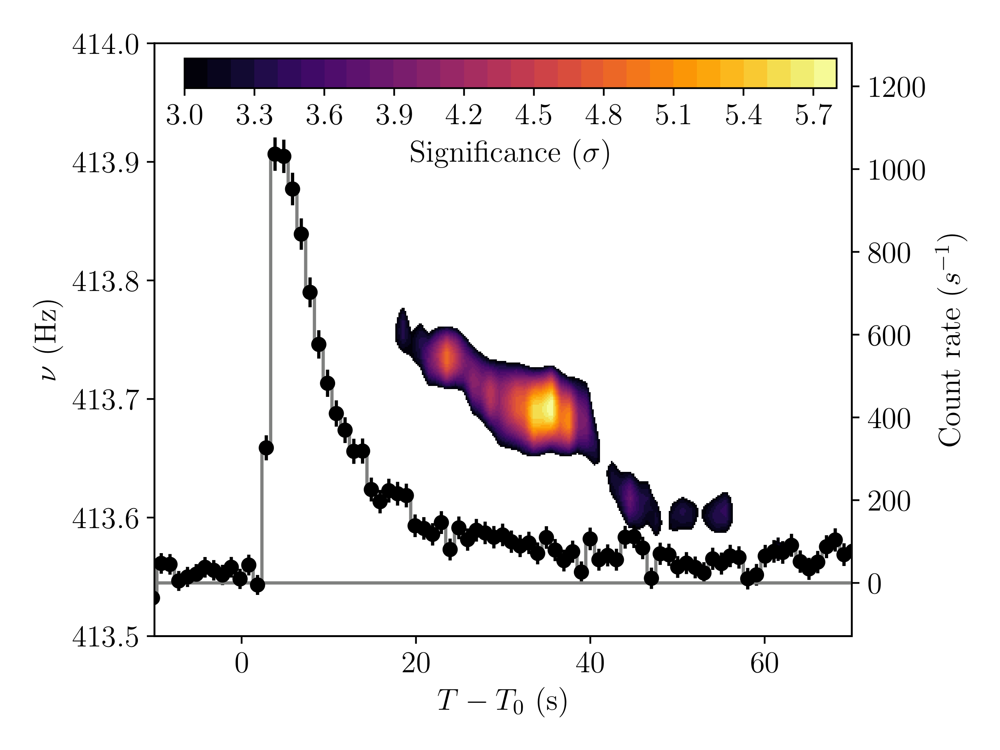<br />
图注：Significance contours of oscillation detections during the Type I X-ray burst of 4U~0614+091 are shown as a function of time and frequency (left-hand axis). These were computed using a $Z_1^2$ test applied in a 20-second sliding window with 1-second steps. The significance levels are represented by a color gradient. The burst light curve, shown on the right-hand axis as the equivalent on-axis count rate in the 4–40 keV energy band, has the persistent emission subtracted and is binned in 1-second intervals. Adapted from \(\citet{LeStum+etal+2026}.\)<br />
对应解读：建议重点查看的图表第6项；关键图表逐图导读图5；模型拟合段落中的短时标事件、振荡频率和功率谱峰值诊断。<br />
入选理由：这是4U 0614+091 Type I X射线暴振荡的核心诊断图，同时给出时间-频率显著性等值线和爆发光变，直接支持日报关于峰值频率、滑动时间窗、搜索校正、爆发期间出现与否以及短时标计时能力的解读，科学信息量高于单纯光变图。<br />
来源与置信度：\(arxiv_source\)；high；\(arxiv_source\) / main.tex:figure[6]</p>
<p><strong>Fig02</strong><br />
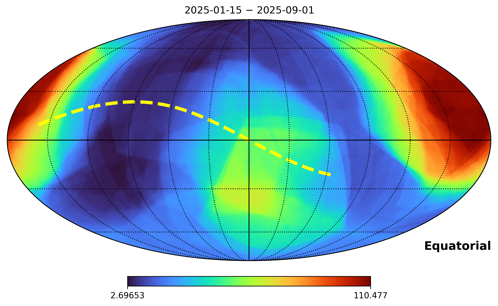<br />
图注：Effective ECLAIRs sky exposure map in days (from January 15th 2025 to September 1st 2025, in equatorial coordinates). The non-uniform efficiency across the ECLAIRs field of view is not taken into account. The yellow dashed line shows the Sun trajectory over the year.<br />
对应解读：建议重点查看的图表第2项；关键图表逐图导读图2；局限和下一步中关于曝光选择函数、非均匀覆盖和未来灵敏度/目录发布的讨论。<br />
入选理由：该图是ECLAIRs有效天区曝光图，直接展示2025年早期运行中的曝光非均匀性和太阳轨迹关系，是判断偶然源样本选择函数、银河面/特定区域偏置以及能否把检出样本视作巡天样本的关键图。<br />
来源与置信度：\(arxiv_source\)；high；\(arxiv_source\) / main.tex:figure[2]</p>
<p><strong>Fig03</strong><br />
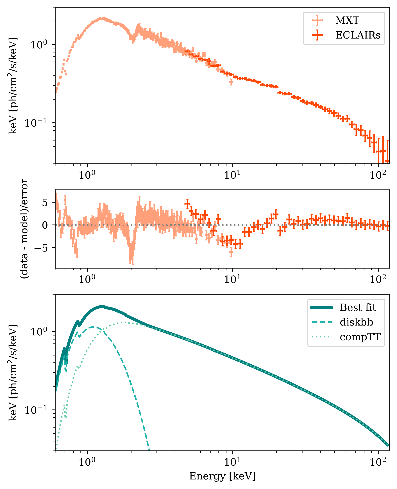<br />
图注：Joint MXT and ECLAIRs spectral fit of Cygnus X-1. The data are fitted with the model \(\textsc{constant*tbabs(diskbb+comptt)}.\) Top: MXT (coral) and ECLAIRs (orange) spectra in units of keV~[ph~cm$^{-2}$~s$^{-1}$~keV$^{-1}$]. Middle: fit residuals. Bottom: best-fit model (solid line), with the \(\textsc{diskbb}\) and \(\textsc{comptt}\) components shown as dashed and dotted lines, respectively.<br />
对应解读：建议重点查看的图表第5项；关键图表逐图导读图4；模型拟合段落中关于联合谱拟合、残差、谱参数和交叉标定的讨论。<br />
入选理由：该图展示Cyg X-1的MXT+ECLAIRs联合谱拟合，包含数据、残差和diskbb/comptt模型分量，最能支撑日报对强源长期监测、谱态诊断、模型残差和多仪器交叉标定的详细解读。<br />
来源与置信度：\(arxiv_source\)；high；\(arxiv_source\) / main.tex:figure[3]</p>
<p><strong>Fig08</strong><br />
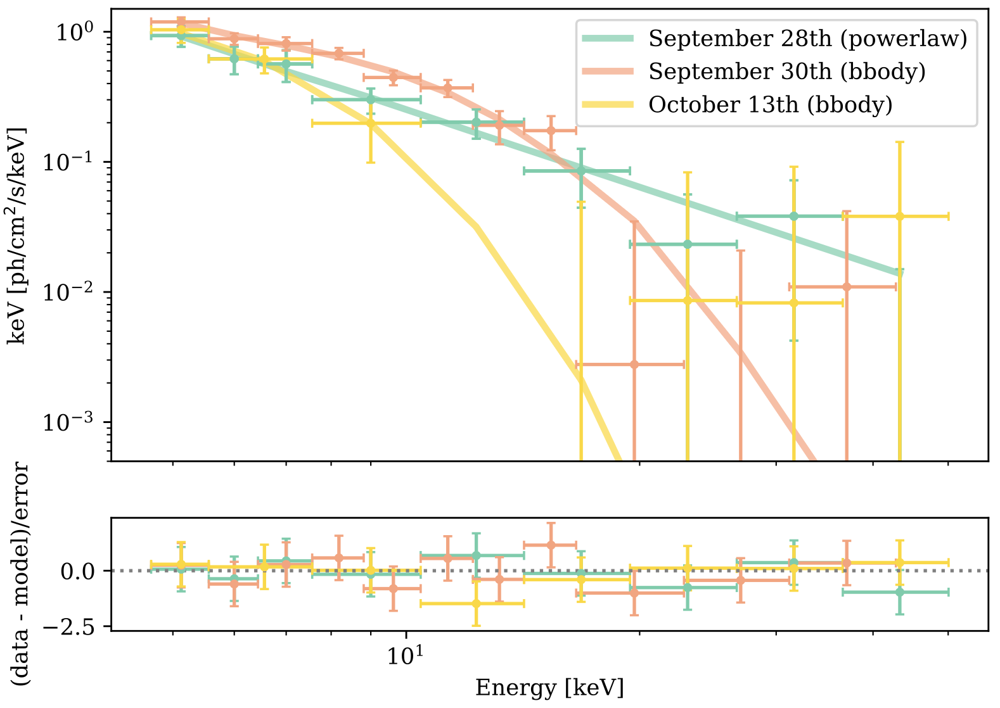<br />
图注：ECLAIRs spectra of Aql~X-1 at three epochs during the spectral state transition monitored by SVOM/ECLAIRs in september-october 2024.<br />
对应解读：建议重点查看的图表第5项；关键图表逐图导读图6；模型拟合段落中关于Aql X-1谱态监测、硬度/通量和能段响应退化的讨论。<br />
入选理由：该图给出Aql X-1在谱态转变期间三个历元的ECLAIRs谱，是展示SVOM追踪瞬变低质量X射线双星吸积态演化的直接证据，比单一源位置图更能体现物理状态变化。<br />
来源与置信度：\(arxiv_source\)；high；\(arxiv_source\) / main.tex:figure[8]</p>
<p><strong>Fig05</strong><br />
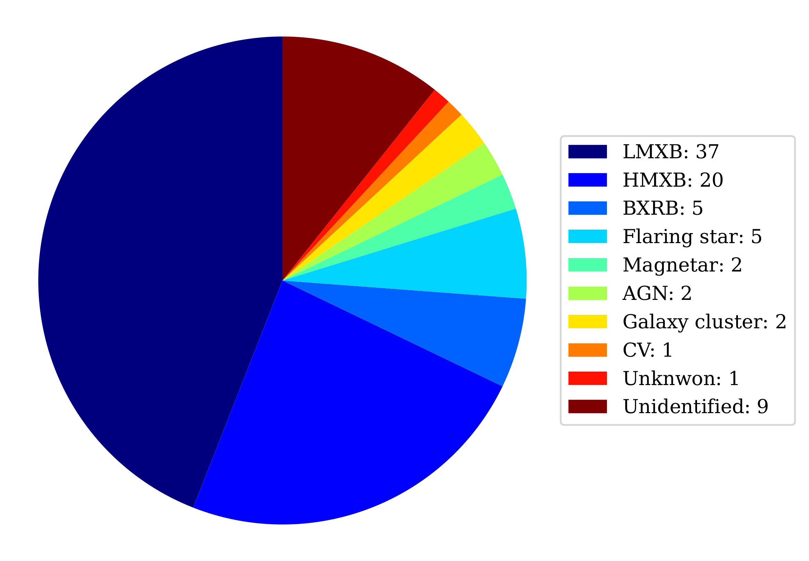<br />
图注：Pie chart of non-GRB sources detected by ECLAIRs, classified by source type.<br />
对应解读：建议重点查看的图表第4项；详细解读中关于数百个非GRB高能源、源类以X射线双星为主并包括耀变体、恒星耀发、磁星和未识别事件的段落。<br />
入选理由：该饼图直接给出ECLAIRs非GRB检出源的类型占比，最适合支撑日报对源类组成、样本性质和分类依据局限的说明，是从个例展示过渡到总体科学产出的关键统计图。<br />
来源与置信度：\(arxiv_source\)；high；\(arxiv_source\) / main.tex:figure[5]</p>
<p><strong>Fig09</strong><br />
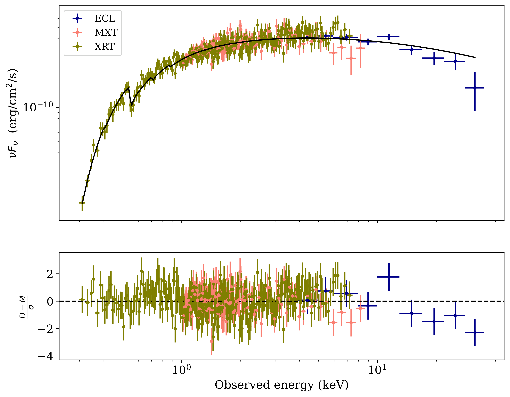<br />
图注：1ES 1959+650 combined Swift/XRT, SVOM/MXT and ECLAIRs spectra obtained on December 16, 2024. The bottom panel shows the residuals, computed as the difference between the observed data ($D$) and the model ($M$), normalized by the error ($\sigma$). Adapted from \(\citet{Foisseau+etal+2026}.\)<br />
对应解读：建议重点查看的图表第7项；关键图表逐图导读图7；模型拟合段落中关于外部设施比较、联合谱拟合和残差检查的讨论。<br />
入选理由：该图展示1ES 1959+650的Swift/XRT、SVOM/MXT和ECLAIRs联合谱及残差，能支撑日报关于耀变体高态、多设施同步验证和残差诊断的讨论；相比单纯耀发光变，它更突出跨仪器一致性和模型拟合质量。<br />
来源与置信度：\(arxiv_source\)；high；\(arxiv_source\) / main.tex:figure[9]</p>
<h4 id="_34">强相关工作</h4>
<p>这篇工作与 SVOM 任务设计论文、Swift 和 INTEGRAL 的非伽马暴科学传统、MAXI 的全天 X 射线监测、Fermi/GBM 的暂现源监测都有直接关系。检索时可用关键词 “SVOM mission ECLAIRs coded mask observatory science program”、“SVOM ECLAIRs non GRB transient monitoring”、“Swift BAT transient monitor”、“INTEGRAL coded mask survey”、“MAXI X-ray binary monitoring”。这些工作共同关心的问题是：宽视场高能仪器如何在主任务之外建立可复现的暂现源发现和长期监测产品。</p>
<p>从源类角度，本文涉及同一源或同类源的大量历史研究。Cyg X-1 有黑洞质量、自旋、吸积态和喷流耦合的长期文献；4U 0614+091 与中子星热核暴和爆发振荡相关；Aql X-1 是研究中子星暂现源谱态转变的原型之一；1ES 1959+650 有 X 射线到 TeV 耀发和“孤立 TeV 耀发”的历史讨论；HD 22468 属于活跃恒星高能耀发背景。建议检索关键词包括 “Cygnus X-1 state transition monitoring”、“4U 0614+091 burst oscillations”、“Aql X-1 spectral state transition”、“1ES 1959+650 X-ray flare TeV orphan flare”、“HD 22468 stellar flare X-ray”。</p>
<p>潜在张力不在于本文反驳某个理论模型，而在于早期仪器结果如何与既有监测设施的通量、硬度和触发显著性保持一致。若 SVOM 与 Swift/BAT、MAXI 或 INTEGRAL 在同一源同一时段给出不同趋势，可能来自能段差异、响应标定、背景处理或真实谱演化。后续论文需要把这种跨仪器比较做成定量交叉标定，而不是只做并列光变展示。</p>
<p><strong>同一事件 / 同类源线索</strong>：</p>
<ul>
<li><a href="https://arxiv.org/abs/2607.01091">https://arxiv.org/abs/2607.01091</a></li>
<li><a href="https://arxiv.org/pdf/2607.01091">https://arxiv.org/pdf/2607.01091</a></li>
</ul>
<p><strong>相似工作</strong>：</p>
<ul>
<li><a href="https://swift.gsfc.nasa.gov/results/transients/">https://swift.gsfc.nasa.gov/results/transients/</a></li>
<li><a href="https://maxi.riken.jp/top/">https://maxi.riken.jp/top/</a></li>
<li><a href="https://www.isdc.unige.ch/integral/">https://www.isdc.unige.ch/integral/</a></li>
</ul>
<p><strong>基础理论 / 方法工作</strong>：</p>
<ul>
<li><a href="https://arxiv.org/abs/1610.06892">https://arxiv.org/abs/1610.06892</a></li>
</ul>
<p><strong>相反观点 / 张力线索</strong>：</p>
<p>（未提供）</p>
</details>
<h3 id="4-anomalous-air-showers-and-what-they-reveal-about-hadronic-interactions-and-cosmic-ray-masses">4. Anomalous Air Showers and What They Reveal About Hadronic Interactions and Cosmic-ray Masses</h3>
<ul>
<li>来源：arXiv / astro-ph.HE</li>
<li>链接：https://arxiv.org/abs/2607.00135v1</li>
<li>作者：Stijn Buitink, Vital De Henau, Sjoerd Bouma, Justin Bray, Arthur Corstanje, Edwin Dickinson, Brian Hare, Andreas Haungs</li>
<li>评分：novelty 7/10，importance 8/10，relevance 9/10，final 9.05/10</li>
<li>推荐理由：讨论SKA-Low用异常/双峰宇宙线空气簇射约束强子相互作用和质量成分，直接关联10^16–10^18 eV宇宙线组成与探测方法；宇宙线仪器和方法方向值得保留。</li>
</ul>
<p><strong>中文题目</strong>：异常空气簇射能告诉我们什么：强子相互作用与宇宙线质量组成</p>
<p><strong>做了什么</strong>：这篇文章讨论用未来的 SKA-Low 低频射电阵列识别宇宙线空气簇射中的“双峰”和其他异常纵向发展结构。核心想法是：若一次高能相互作用后的次级强子携带很大能量并飞行很深才再次相互作用，它会在主簇射之后产生可分辨的子簇射，从而在纵向能量沉积分布中留下第二个峰。作者强调，SKA-Low 在 \(10^{16}\)–\(10^{18}\,\mathrm{eV}\) 能区的高天线密度和宽频带可以比传统荧光、切伦科夫或稀疏射电阵列更细致地重建纵向剖面，因此双峰簇射可同时约束强子相互作用模型和银河系到河外宇宙线过渡区的质量组成。</p>
<p><strong>为什么重要</strong>：宇宙线质量组成的主要观测量是簇射最大深度 \(X_{\max}\)，但 \(X_{\max}\) 的解释强烈依赖高能强子相互作用模型，而这些模型在远超加速器能区时需要外推。本文关心的不是只把 \(X_{\max}\) 当成一个单数，而是利用完整纵向剖面的异常形态来反推相互作用长度、非弹性度、前向粒子能量分配和次级相互作用涨落。这有助于打破“质量组成”和“强子物理不确定性”之间的长期退化。</p>
<p><strong>理论 / 观测 / 仪器方法价值</strong>：对理论而言，双峰簇射提供了比平均 \(X_{\max}\) 和涨落 \(\sigma(X_{\max})\) 更直接的强子相互作用诊断量，尤其敏感于高能次级粒子的前向传播和延迟相互作用。对观测而言，文章说明 SKA-Low 的射电成像不仅能测能量和 \(X_{\max}\)，还可能重建纵向剖面的细结构。对方法而言，它把“异常事件”从需要剔除的离群点转化为有物理信息的样本。</p>
<p><strong>为什么应该关注</strong>：如果你关心膝区以上宇宙线的起源、银河系到河外成分过渡、或高能强子模型在 LHC 之外的检验，这篇文章值得看。它提示未来射电阵列的关键产出可能不只是更小的 \(X_{\max}\) 误差条，而是能把单个簇射的纵向结构当作强子相互作用实验来读。</p>
<details class="paper-detail">
<summary>展开详细解读：文章讲解、背景、理论、重点章节、图表与相关工作</summary>
<h4 id="_35">文章详细讲解</h4>
<p>科学问题：超高能宇宙线进入大气后产生级联簇射，观测者通常用簇射最大深度 \(X_{\max}\) 来推断原初粒子的质量。问题在于，\(X_{\max}\) 同时受原初质量和强子相互作用性质控制：质子通常穿透更深、涨落更大，铁核通常更早发展、涨落更小；但若相互作用长度、非弹性度、前向粒子谱或多重度模型有偏差，同样会移动 \(X_{\max}\) 分布。因此，只靠平均 \(X_{\max}\) 很难干净地区分“宇宙线变重”与“强子模型外推错了”。</p>
<p>作者怎么做：文章把重点放在 SKA-Low 对空气簇射射电信号的高分辨率测量能力上。低频射电信号主要来自地磁辐射和 Askaryan 电荷过剩辐射，其二维足迹和频谱结构携带纵向发展的信息。由于 SKA-Low 天线密度高、频带宽、采样充分，模拟表明它有能力反演比单一 \(X_{\max}\) 更丰富的纵向剖面。作者特别讨论第一相互作用后，某个高能次级粒子若飞行很远才相互作用，会产生可分辨的子簇射，从而在纵向剖面中形成“双峰”。</p>
<p>关键结果：文章的核心论点是，双峰簇射和其他异常纵向剖面不是简单的重建失败或统计离群点，而是对强子相互作用的高灵敏探针。第二峰的位置、强度、与主峰的间隔，分别与次级粒子的相互作用深度、携带能量比例、以及级联发展尺度有关。若在大量事件中统计双峰发生率及其形态分布，就能对高能前向强子产生、非弹性度分布和相互作用长度给出约束，同时改进质量组成反演。</p>
<p>局限和下一步：本文更像一篇面向 SKA-Low 宇宙线科学案例的章节或展望，而不是已经给出真实 SKA-Low 数据结果的观测论文。关键挑战包括：射电反演纵向剖面的系统误差、触发与选样偏差、雷暴和大气电场影响、近地电磁环境、以及强子模型之间差异是否足够大到可被实际数据稳健区分。下一步应是用端到端模拟建立异常簇射分类器，量化双峰检出效率和假阳性率，并在 LOFAR、AERA、Tunka-Rex、GRAND 原型或未来 SKA-Low 数据中寻找可交叉验证的样本。</p>
<h4 id="_36">关键结果是怎么做出来的</h4>
<p>本文最重要的结果不是某个已测得的事件数，而是建立一条证据链：SKA-Low 的天线布局和频带使其可以从射电足迹中恢复空气簇射纵向剖面的细节，而这些细节对高能强子相互作用有额外诊断力。样本范围被设定在 \(10^{16}\)–\(10^{18}\,\mathrm{eV}\)，这是银河宇宙线膝区之后、向河外成分过渡的关键能段，也是地面粒子阵列、荧光望远镜和射电阵列互补最明显的能段。</p>
<p>事件选择的物理核心是“异常纵向发展”：在普通簇射中，能量沉积剖面可近似为一个单峰 Gaisser-Hillas 型轮廓；在双峰簇射中，主级联之后出现一个由高能次级粒子触发的子级联。文章强调，第一相互作用后的次级粒子仍可能携带相当可观的总能量，如果其中一个粒子具有较长自由程，它再次相互作用的位置会比主级联晚很多，于是形成第二个可观测能量沉积峰。</p>
<p>显著性或置信度在这种工作中不会只来自“看起来有两个峰”。合理的检验应比较单峰纵向剖面模型与双峰模型的似然或信息准则，并把射电阵列响应、噪声协方差、天线增益、到达方向误差和大气折射率剖面一起传播到参数后验。本文论述的关键是：SKA-Low 的高采样密度能够让这种模型比较有统计力量，而不是像稀疏阵列那样只得到一个有效的 \(X_{\max}\)。</p>
<p>支撑结论的图表应主要包括三类：一是模拟双峰纵向剖面及其与单峰剖面的残差；二是不同天线密度和频率带宽下对双峰间隔、第二峰强度和 \(X_{\max}\) 的重建精度；三是不同强子模型和原初质量下异常事件发生率的差异。读者应特别关注第二峰能量比例较小时的检出效率，因为这决定了该方法能否从罕见示例变成统计约束。</p>
<p>主要系统误差包括强子模型本身、射电发射模拟、天线方向图与绝对标定、环境噪声、触发阈值、大气折射率和地磁场参数。稳健性检验应包括：用不同强子相互作用模型生成训练与测试样本、改变原初质量混合、注入真实噪声、盲测单峰与双峰分类、以及检查重建算法是否把几何误差或局部噪声误判为纵向双峰。</p>
<details class="paper-subdetail">
<summary>展开背景、理论、公式、模型、章节和图表导读</summary>
<h4 id="_37">背景知识</h4>
<p>研究对象是 \(10^{16}\)–\(10^{18}\,\mathrm{eV}\) 的高能宇宙线空气簇射。这个能段跨越传统意义上的膝区后段、第二膝附近和可能的银河到河外过渡区。宇宙线源和加速机制的判别强烈依赖质量组成：若成分随能量变重，可能意味着银河源接近刚度上限；若出现轻成分回升，则可能暗示河外质子或轻核开始贡献。</p>
<p>历史上，质量组成主要通过 \(X_{\max}\)、缪子数、地面粒子密度、切伦科夫光和荧光光来推断。荧光方法能较直接测量纵向能量沉积，但占空比低且对大气透明度敏感。地面粒子阵列占空比高，却更依赖强子模型。射电方法近年来迅速发展，因为它几乎全天候、能量标定较好，并且射电足迹对簇射几何和纵向发展敏感。</p>
<p>为什么现在值得重新看：LOFAR 已经证明密集低频射电阵列可以给出高精度 \(X_{\max}\) 重建，而 SKA-Low 将把天线数量、空间采样和频带覆盖推到更高水平。这意味着研究目标可以从“能否测到 \(X_{\max}\)”升级为“能否恢复纵向剖面形状”。一旦剖面形状可测，异常事件就携带新的物理信息。</p>
<p>该领域常见误区之一是把 \(X_{\max}\) 当作直接质量标签。事实上，\(X_{\max}\) 是原初质量、第一相互作用深度、后续级联涨落和模型假设共同作用的结果。另一个误区是认为异常簇射只会污染质量组成分析；本文的立场相反：如果异常形态能被可靠识别，它们正是检验强子物理外推的窗口。还有一个误区是认为射电只测横向足迹，不能看纵向结构；密集阵列加宽频信息可以部分打破这个限制。</p>
<h4 id="_38">基础理论 / 方法脉络</h4>
<p>基本物理图像是：高能宇宙线原初粒子与大气核发生第一次强相互作用，产生大量次级强子、电磁粒子和缪子。中性 pion 很快衰变为光子并启动电磁级联，带电 pion 和其他强子继续相互作用或衰变。纵向能量沉积随大气深度先增长后衰减，在最大处定义 \(X_{\max}\)。</p>
<p>射电辐射主要由两种机制贡献。第一是地磁机制：电子和正电子在地磁场中受到相反洛伦兹力，形成随时间变化的横向电流，辐射偏振方向大致沿 \(\mathbf{v}\times\mathbf{B}\)。第二是 Askaryan 机制：簇射前沿积累负电荷过剩，产生径向偏振分量。两者叠加形成地面射电足迹，其幅度、相位、频谱和偏振依赖簇射几何、能量和纵向发展。</p>
<p>本文的关键假设是，SKA-Low 的密集天线采样和宽频带可以把射电足迹中的纵向信息反演出来。普通单峰簇射可用一个平滑纵向剖面描述；若某个高能次级粒子在较深大气层才相互作用，则总剖面近似为主簇射与延迟子簇射的叠加。第二峰的可观测性取决于子簇射能量比例、两个峰的深度间隔、观测噪声和阵列响应。</p>
<p>主要退化关系包括：原初质量与强子相互作用长度的退化，能量标定与剖面归一化的退化，几何重建误差与纵向形态的退化，以及射电发射模型与大气折射率剖面的退化。选择效应也很重要：双峰事件可能更容易在某些天顶角、核心位置和能量范围内被识别，因此观测到的双峰发生率必须经过探测效率修正才能解释为真实强子物理。</p>
<h4 id="_39">公式与推导</h4>
<p>第一步从相互作用深度开始。若原初粒子在大气中以平均相互作用长度 \(\lambda_{\mathrm{int}}\) 传播，第一次相互作用深度 \(X_1\) 的理想分布为</p>
<div class="math-display">\[P(X_1)\,dX_1=\frac{1}{\lambda_{\mathrm{int}}}\exp\left(-\frac{X_1}{\lambda_{\mathrm{int}}}\right)dX_1 .\]</div>
<p>这里 \(X_1\) 是以 \(\mathrm{g\,cm^{-2}}\) 表示的大气深度，\(\lambda_{\mathrm{int}}\) 与空气核反应截面相关。该式说明，\(X_{\max}\) 的涨落首先就受到第一相互作用涨落控制。</p>
<p>第二步把截面与相互作用长度联系起来：</p>
<div class="math-display">\[\lambda_{\mathrm{int}}\simeq \frac{m_{\mathrm{air}}}{\sigma_{\mathrm{p-air}}},\]</div>
<p>其中 \(m_{\mathrm{air}}\) 是按面积柱密度定义的有效空气核质量因子，\(\sigma_{\mathrm{p-air}}\) 是质子-空气非弹性截面。对核原初粒子需要使用超位置近似或核-空气截面模型。若 \(\sigma_{\mathrm{p-air}}\) 外推偏大，簇射会更早发展，从而模仿较重组成。</p>
<p>第三步用 Heitler-Matthews 图像理解质量依赖。对质量数为 \(A\)、总能量为 \(E_0\) 的原初核，可近似看成 \(A\) 个能量为 \(E_0/A\) 的核子：</p>
<div class="math-display">\[\langle X_{\max}\rangle_A \approx \langle X_{\max}\rangle_p(E_0)-D\ln A .\]</div>
<p>这里 \(D=d\langle X_{\max}\rangle/d\ln E\) 是伸长率。该式解释了为什么 \(X_{\max}\) 可用于质量组成，但也显示任何改变 \(D\) 或质子基准的强子模型都会影响质量推断。</p>
<p>第四步写出常用单峰纵向剖面。Gaisser-Hillas 形式为</p>
<div class="math-display">\[N(X)=N_{\max}\left(\frac{X-X_0}{X_{\max}-X_0}\right)^{(X_{\max}-X_0)/\Lambda}\exp\left(\frac{X_{\max}-X}{\Lambda}\right) .\]</div>
<p>这里 \(N(X)\) 可代表带电粒子数或能量沉积率，\(X_0\) 是有效起始深度，\(N_{\max}\) 是峰值归一化，\(\Lambda\) 控制衰减尺度。普通重建往往只提取 \(X_{\max}\) 和总能量，但本文强调完整 \(N(X)\) 形状更有信息量。</p>
<p>第五步把双峰簇射写成两个剖面的叠加：</p>
<div class="math-display">\[N_{\mathrm{tot}}(X)=N_1(X;E_1,X_{\max,1},\Lambda_1)+N_2(X;fE_0,X_{\max,2},\Lambda_2) .\]</div>
<p>其中 \(N_1\) 是主簇射，\(N_2\) 是延迟子簇射，\(f\) 是触发子簇射的次级粒子携带的能量比例，\(X_{\max,2}-X_{\max,1}\) 给出双峰间隔。若 \(f\) 太小或间隔太短，第二峰会被主峰尾部淹没。</p>
<p>第六步连接到射电观测。天线 \(i\) 在频率 \(\nu\) 和时间 \(t\) 测得的电场可写作响应卷积：</p>
<div class="math-display">\[d_i(t,\nu)=\int R_i(t-t',\nu,\hat{\mathbf{n}})\,E_{\mathrm{radio}}(t',\nu;N_{\mathrm{tot}},\Theta)\,dt' + n_i(t,\nu) .\]</div>
<p>这里 \(R_i\) 是天线和电子学响应，\(\hat{\mathbf{n}}\) 是到达方向，\(\Theta\) 包括能量、核心位置、大气和地磁参数，\(n_i\) 是噪声。SKA-Low 的优势正体现在许多 \(i\) 和宽 \(\nu\) 对 \(N_{\mathrm{tot}}(X)\) 的约束。</p>
<p>第七步定义模型比较的似然。若数据向量为 \(\mathbf{d}\)，模型预测为 \(\mathbf{m}(\theta)\)，噪声协方差为 \(\mathbf{C}\)，高斯近似下</p>
<div class="math-display">\[\ln \mathcal{L}(\theta)=-\frac{1}{2}[\mathbf{d}-\mathbf{m}(\theta)]^{\mathrm{T}}\mathbf{C}^{-1}[\mathbf{d}-\mathbf{m}(\theta)]-\frac{1}{2}\ln |\mathbf{C}|+\mathrm{const}.\]</div>
<p>这里 \(\theta\) 是单峰或双峰模型参数。比较单峰与双峰模型时，应把额外参数带来的自由度惩罚纳入证据或信息准则。</p>
<p>第八步给出一个实用诊断量：</p>
<div class="math-display">\[\Delta \chi^2=\chi^2_{\mathrm{single}}-\chi^2_{\mathrm{double}} .\]</div>
<p>若 \(\Delta \chi^2\) 在模拟校准后显著为正，说明双峰模型相对单峰模型改善了残差。由于双峰模型参数可能处在边界，例如 \(f\ge 0\)，不能机械套用简单的 \(\chi^2\) 自由度差分布，最好用端到端模拟或后验预测检验给出显著性。</p>
<p>第九步把观测发生率与物理模型联系起来：</p>
<div class="math-display">\[N_{\mathrm{obs}}=T\int dE\,d\Omega\,\Phi(E,\Omega)\,A_{\mathrm{eff}}(E,\Omega)\,\epsilon_{\mathrm{db}}(E,\Omega,\eta)\,P_{\mathrm{db}}(E,\Omega|M) .\]</div>
<p>其中 \(T\) 是曝光时间，\(\Phi\) 是宇宙线通量，\(A_{\mathrm{eff}}\) 是有效面积，\(\epsilon_{\mathrm{db}}\) 是双峰检出效率，\(\eta\) 表示噪声和重建条件，\(P_{\mathrm{db}}\) 是强子模型 \(M\) 预测的真实双峰概率。该式说明，最终约束强子物理必须同时建模发生率和探测选择函数。</p>
<h4 id="_40">模型拟合 / 应用方法</h4>
<p>这类研究的拟合量通常分为三层。第一层是几何和能量参数，包括到达方向、核心位置、原初能量和整体射电幅度标定。第二层是纵向剖面参数，包括 \(X_{\max}\)、剖面宽度、起始深度和归一化。第三层才是异常结构参数，例如第二峰深度、第二峰能量比例、双峰间隔和子簇射宽度。SKA-Low 的价值在于它能用许多天线的波形、频谱和偏振同时约束这些量。</p>
<p>统计上，单峰模型与双峰模型应通过似然、贝叶斯证据、交叉验证或模拟校准的检验统计量比较。若只看最小 \(\chi^2\)，双峰模型因为参数更多总会更好，因此必须加入复杂度惩罚或用伪实验估计假阳性率。实际应用中还需要把天线噪声、增益误差、相位误差、环境射频干扰和大气参数作为协方差或 nuisance 参数处理。</p>
<p>主要退化关系包括：第二峰能量比例与总能量标定退化，第二峰深度与几何重建误差退化，剖面宽度与两个相近峰的间隔退化，原初质量混合与强子相互作用参数退化。若训练样本完全依赖某一个强子模型，分类器可能学到模型特有的非物理特征，因此必须做跨模型验证，例如用一种模型训练、另一种模型测试。</p>
<p>残差诊断非常关键。可信的双峰事件应在多个天线、多个频段和偏振分量中显示相干的模型改进，而不是只在少数天线局部改善。读者应看残差是否具有空间相关结构：若单峰模型残差在地面足迹上呈现系统性环状、偏振相关或频率相关偏差，而双峰模型消除这些偏差，证据才更强。相反，若改进集中在受射频干扰污染的时间窗或阵列边缘，就应谨慎。</p>
<p>模型可能失败的地方也很明确。射电发射模拟若没有准确处理折射率梯度、近场效应或复杂地形，可能把传播效应误投影为纵向结构。雷暴电场能显著改变空气簇射射电信号，这类事件需要剔除或单独建模。强子模型对前向相互作用的差异也可能与质量组成差异缠在一起，因此最终解释最好联合 \(X_{\max}\)、缪子数、能谱和异常剖面发生率。</p>
<h4 id="_41">重点章节 / 结果段落怎么读</h4>
<p>第一，读数据与仪器动机部分时，应抓住 SKA-Low 相比 LOFAR 和其他射电阵列的两个增量：天线密度更高、带宽更宽。这两点决定了能否从射电足迹恢复纵向细结构，而不是只重建 \(X_{\max}\)。</p>
<p>第二，读空气簇射物理和强子相互作用部分时，应关注作者如何把异常纵向发展与第一相互作用后高能次级粒子的传播联系起来。这里的关键词是相互作用长度、非弹性度、能量分配和前向粒子产生。</p>
<p>第三，读双峰簇射模拟或示意结果时，应重点看双峰间隔、第二峰相对强度以及 SKA-Low 重建误差之间的关系。真正有用的不是肉眼漂亮的个例，而是参数空间中哪些双峰可被稳健检出。</p>
<p>第四，读质量组成讨论时，应注意作者是否把异常事件纳入组成反演，而不是简单剔除。异常剖面的频率和形态分布可以作为强子模型的先验或约束，从而降低质量组成推断的系统误差。</p>
<p>第五，读展望和局限部分时，应检查是否讨论端到端模拟、真实噪声、触发效率、雷暴电场、天线标定和跨模型稳健性。这些因素决定该方法能否从概念验证走向实际观测。</p>
<h4 id="_42">建议重点查看的图表</h4>
<ol>
<li>
<p>SKA-Low 阵列布局和天线密度示意：看核心区域采样是否足以覆盖典型射电足迹，以及事件核心落在不同位置时重建能力如何变化。</p>
</li>
<li>
<p>单峰与双峰纵向剖面对比图：看横轴大气深度 \(X\)，纵轴粒子数或能量沉积率，重点检查第二峰相对主峰的高度和间隔。</p>
</li>
<li>
<p>射电足迹或波形残差图：看单峰模型残差是否呈现系统结构，双峰模型是否在多天线、多频段上同时改善。</p>
</li>
<li>
<p>双峰检出效率图：看检出效率如何随原初能量、天顶角、第二峰能量比例 \(f\) 和峰间距变化。</p>
</li>
<li>
<p>不同强子模型预测比较：看异常剖面发生率和 \(X_{\max}\) 分布是否在模型间可区分，尤其注意模型差异是否大于预期系统误差。</p>
</li>
<li>
<p>质量组成反演影响图：看加入异常剖面信息后，轻核和重核比例的后验是否收缩，以及强子模型 nuisance 参数是否被约束。</p>
</li>
<li>
<p>稳健性或系统误差表：看天线标定、噪声、大气、地磁场和触发选择对双峰判定的影响量级。</p>
</li>
</ol>
<h4 id="_43">关键图表逐图导读</h4>
<p>图 1：通常应是 SKA-Low 或类似密集射电阵列的布局、频带或事件几何示意。读图时看天线间距与射电足迹尺度的关系，而不只是天线总数。陷阱是把“天线很多”直接等同于“纵向剖面一定可重建”；真正关键是核心区域覆盖、信噪比和频率响应。</p>
<p>图 2：若给出普通簇射和异常簇射的纵向剖面，横轴应为大气深度 \(X\)，纵轴为能量沉积或粒子数。模型线若有单峰和双峰两类，应看第二峰的峰位、宽度和面积，而不只看 \(X_{\max}\)。陷阱是第二峰可能改变全局 \(X_{\max}\)，也可能只表现为主峰尾部的小凸起，二者物理解释不同。</p>
<p>图 3：若展示射电足迹、频谱或波形，横轴可能是天线位置、时间或频率，纵轴是电场幅度或功率。应检查双峰模型是否同时改善幅度、相位和偏振，而不是只拟合总功率。读图陷阱是局部射频干扰也可能制造异常残差，因此空间相干性很重要。</p>
<p>图 4：若展示重建精度或检出效率，横轴可能是能量、天顶角、峰间距或第二峰能量比例，纵轴是 \(X_{\max}\) 分辨率、双峰识别率或假阳性率。关键是找出方法的有效参数空间：例如小 \(f\) 或小峰间距时效率是否急剧下降。</p>
<p>图 5：若比较强子模型或质量组成，常见坐标是 \(\langle X_{\max}\rangle\)、\(\sigma(X_{\max})\)、双峰发生率或异常剖面参数。读者应看模型带宽是否与观测误差带分离。陷阱是不同模型曲线分离并不自动意味着可观测分离，因为还要乘以探测效率和选择函数。</p>
<p>图 6：若有系统误差预算或稳健性检验，应看每个系统项对 \(X_{\max}\)、第二峰深度和发生率的影响。尤其要关注雷暴电场、天线增益、相位标定和大气折射率，因为它们可能直接改变射电足迹形态。</p>
</details>
<h4 id="_44">论文原图 / 可嵌入图片</h4>
<p><strong>Fig01</strong><br />
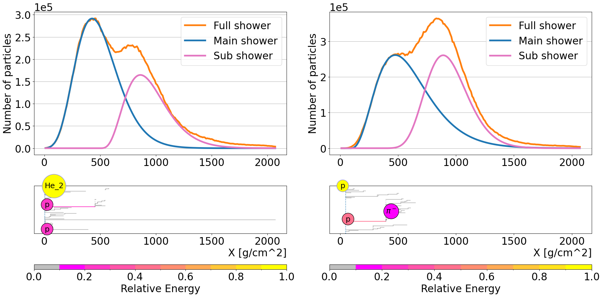<br />
图注：Two examples of double bump showers. The top panels show the number of particles as a function of atmospheric depth. The evolution of the full shower is fitted by a superposition of two Gaisser-Hillas profiles. The bottom panels show the underlying structure of the shower. Lines indicate the trajectories of the most energetic shower particles and labels indicate the particle type. Colors of the tracks and labels indicate the fraction of the primary cosmic-ray energy carried by the particle. The left (right) shower is produced by a 1 PeV Helium (proton) shower.<br />
对应解读：对应“建议重点查看的图表”第2项和“关键图表逐图导读”图2：单峰/双峰纵向剖面对比，以及模型拟合段落中的第二峰深度、能量比例和峰间距参数。<br />
入选理由：这是论文核心物理图，直接展示双峰簇射的纵向粒子数随大气深度变化，并用两个 Gaisser-Hillas 剖面叠加拟合完整簇射；下方面板还给出导致第二峰的高能次级粒子轨迹和能量占比，最能支撑日报关于异常纵向发展、子簇射来源和强子相互作用诊断的解读。<br />
来源与置信度：\(arxiv_source\)；high；\(arxiv_source\) / \(aaskaii_template.tex\):figure[1]</p>
<p><strong>Fig02</strong><br />
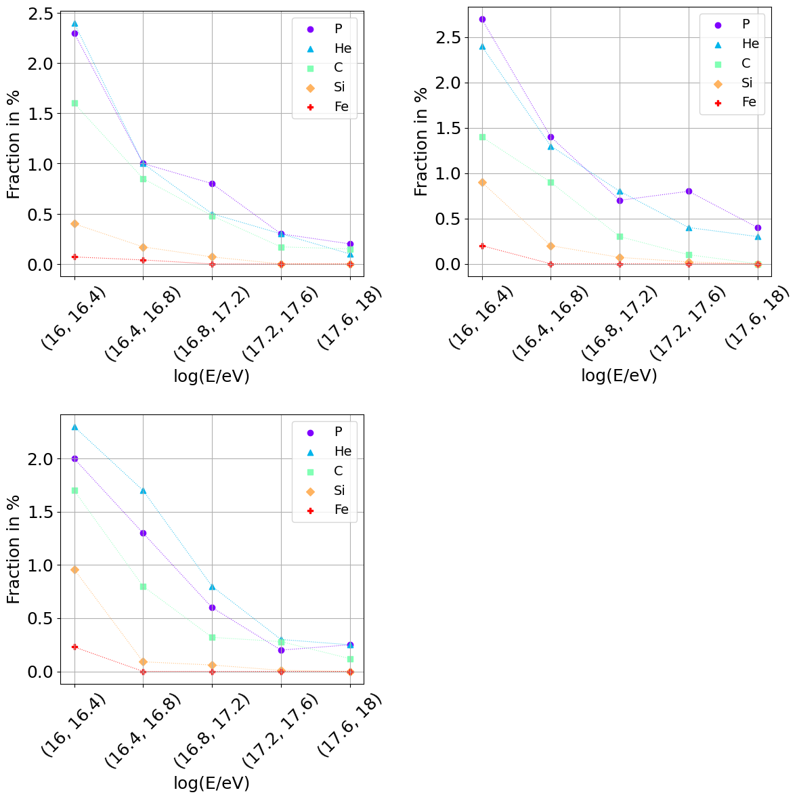<br />
图注：Fraction of showers that feature a double-bump structure as a function of energy for different primary particles and different hadronic interaction models: EPOS-LHC (left), Sibyll-2.3d (middle), and QGSJETII-04 (right). Each energy bin is based on 4000 simulated showers, so a fraction of 1\% corresponds to 40 double bump showers. Statistical fluctuations corresponding to these low quantities are visible in the plot.<br />
对应解读：对应“建议重点查看的图表”第4、5项和“关键图表逐图导读”图4、图5：双峰发生率随能量、原初粒子和强子模型变化。<br />
入选理由：该图量化双峰结构在不同能量、不同原初质量和 EPOS-LHC、Sibyll-2.3d、QGSJETII-04 三种强子模型中的发生比例，是判断异常剖面是否能区分强子模型和质量组成的关键统计图，比单个事件示意更能支撑总体科学结论。<br />
来源与置信度：\(arxiv_source\)；high；\(arxiv_source\) / \(aaskaii_template.tex\):figure[2]</p>
<p><strong>Fig08</strong><br />
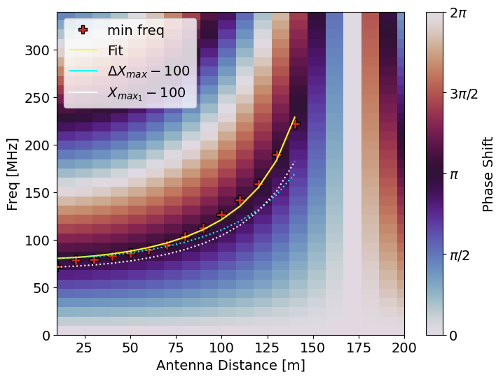<br />
图注：Double-bump reconstruction plot. The background colors indicate the relative phase of the radio signals from the two sub-showers based on the point-source model for different observer positions and frequencies. The red crosses are the first interference minima found in the spectra of fully simulated waveforms. The yellow line is a fit of the data to the point-source model. Two additional model lines are shown for reference.<br />
对应解读：对应“建议重点查看的图表”第3项和模型拟合段落中的多频段相干诊断、双峰重建、模型线比较。<br />
入选理由：该图展示用点源模型解释两个子簇射射电信号的相对相位，并把全模拟波形频谱中的第一干涉极小与模型拟合线对比，直接体现 SKA-Low 如何从频率和观测位置依赖的干涉结构反演双峰几何，是最接近日报中“模型线、残差诊断、频段相干改进”讨论的候选图。<br />
来源与置信度：\(arxiv_source\)；high；\(arxiv_source\) / \(aaskaii_template.tex\):figure[8]</p>
<p><strong>Fig07</strong><br />
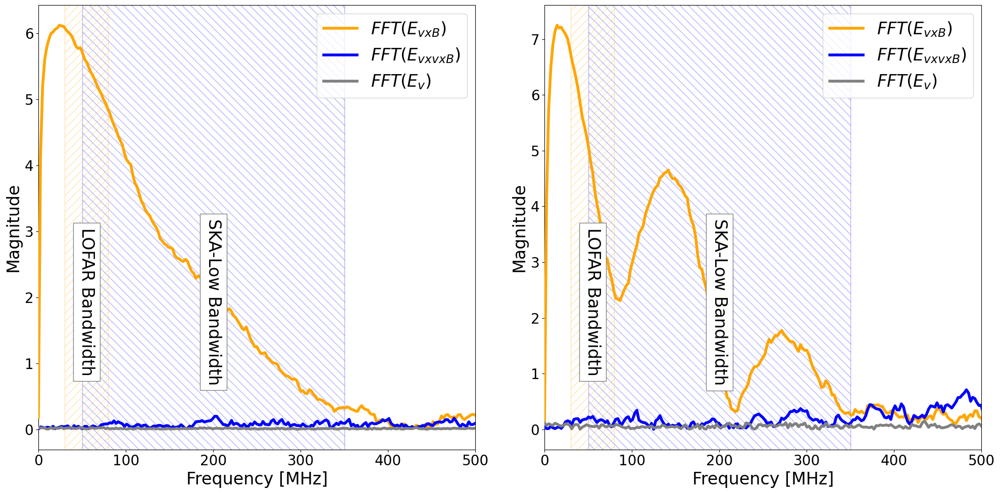<br />
图注：Frequency spectra of a radio pulse from a regular shower (left) and a double-bump shower (right). The interference maxima of the double peak spectra usually fall outside of the LOFAR band but inside the SKA-Low band.<br />
对应解读：对应“建议重点查看的图表”第3项和“关键图表逐图导读”图3：普通簇射与双峰簇射的射电脉冲频谱差异，以及 SKA-Low 宽频带优势。<br />
入选理由：该图直接比较常规簇射和双峰簇射的射电脉冲频谱，显示双峰产生的干涉极大通常落在 SKA-Low 频段而非 LOFAR 频段内，清楚支撑日报关于宽带频谱信息可识别异常纵向结构的论点。<br />
来源与置信度：\(arxiv_source\)；high；\(arxiv_source\) / \(aaskaii_template.tex\):figure[7]</p>
<p><strong>Fig10</strong><br />
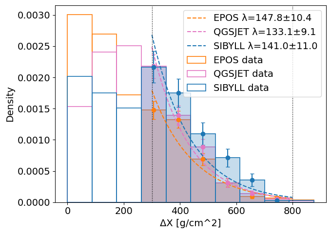<br />
图注：Distribution of the peak separation $\Delta X$ for a set of 10 PeV double-bump showers for different hadronic interaction models. For each model, an exponential fit is performed including only values $\Delta X > 300$~g/cm$^2$<br />
对应解读：对应“建议重点查看的图表”第5项和模型拟合段落中的第二峰深度、峰间距、强子相互作用长度约束。<br />
入选理由：该图给出 10 PeV 双峰簇射的峰间距 \(\Delta X\) 分布，并按不同强子相互作用模型比较且进行指数拟合；它直接连接第二峰间隔与高能次级粒子传播/相互作用长度，是把双峰形态转化为强子物理约束的关键图。<br />
来源与置信度：\(arxiv_source\)；high；\(arxiv_source\) / \(aaskaii_template.tex\):figure[10]</p>
<p><strong>Fig11</strong><br />
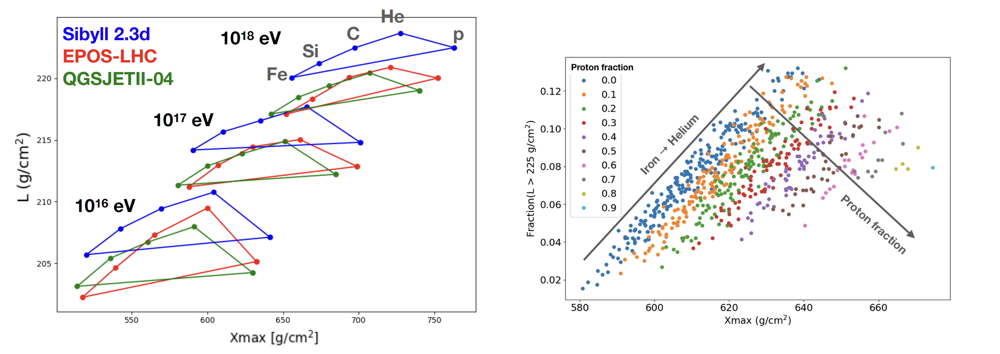<br />
图注：Left: average \(\Xmax\) and $L$ for showers of different energies, primary masses, and simulated with different hadronic interaction models. The dots represent samples of pure composition. Right: a strategy to separate protons from other particles. Each dot represents a unique mixed composition of 10$^{17}$ eV showers simulated with EPOS-LHC. Mixtures separate into diagonal bands according to their proton fraction.<br />
对应解读：对应“建议重点查看的图表”第5、6项和“关键图表逐图导读”图5：\(X_{\max}\)、拉伸量 \(L\)、质量组成和强子模型联合判别。<br />
入选理由：该图把平均 \(X_{\max}\) 与纵向剖面拉伸量 \(L\) 联合展示，并给出不同能量、原初质量、强子模型以及混合组成下的分布趋势，最能支撑日报中关于异常剖面信息如何帮助质量组成反演、区分质子比例和缓解强子模型退化的讨论。<br />
来源与置信度：\(arxiv_source\)；high；\(arxiv_source\) / \(aaskaii_template.tex\):figure[11]</p>
<h4 id="_45">强相关工作</h4>
<p>这篇工作与 LOFAR 的宇宙线射电重建、Pierre Auger Observatory 的 \(X_{\max}\) 组成测量、以及 KASCADE-Grande 在膝区到踝区之间的能谱和组成研究属于同一科学链条。相似工作应检索关键词：SKA cosmic rays radio detection、LOFAR \(X_{\max}\) cosmic rays、radio detection air showers、Gaisser-Hillas profile、hadronic interaction models air showers、Sibyll EPOS QGSJet composition。</p>
<p>它也与强子相互作用模型的长期张力有关，尤其是地面阵列常见的“缪子亏缺”问题：许多模型在解释超高能空气簇射缪子数时存在偏差。本文讨论的双峰纵向剖面不是缪子问题本身，但同样指向前向强子产生、非弹性度和多重度外推的不确定性。相反观点可能认为异常剖面太罕见、重建系统误差太大，难以形成强约束；因此未来关键是用端到端模拟和真实数据证明低假阳性率。</p>
<p>这不是某个命名瞬变或单一天体源事件的论文，而是同类源和同类观测方法的科学案例。相关源背景应放在“同类观测”和“历史原型”层面：LOFAR 是密集射电阵列重建 \(X_{\max}\) 的重要原型，Auger 是超高能宇宙线组成和强子模型检验的基准实验，SKA-Low 则是下一代低频射电阵列。</p>
<p><strong>同一事件 / 同类源线索</strong>：</p>
<ul>
<li><a href="https://arxiv.org/abs/2607.00135">https://arxiv.org/abs/2607.00135</a></li>
<li><a href="https://www.skatelescope.org/">https://www.skatelescope.org/</a></li>
<li><a href="https://www.auger.org/">https://www.auger.org/</a></li>
</ul>
<p><strong>相似工作</strong>：</p>
<ul>
<li><a href="https://arxiv.org/abs/1408.7001">https://arxiv.org/abs/1408.7001</a></li>
</ul>
<p><strong>基础理论 / 方法工作</strong>：</p>
<ul>
<li><a href="https://doi.org/10.1016/j.astropartphys.2004.09.003">https://doi.org/10.1016/j.astropartphys.2004.09.003</a></li>
<li><a href="https://doi.org/10.1146/annurev.nucl.57.090506.123116">https://doi.org/10.1146/annurev.nucl.57.090506.123116</a></li>
</ul>
<p><strong>相反观点 / 张力线索</strong>：</p>
<ul>
<li><a href="https://www.auger.org/science/scientific-highlights/311-muons-in-air-showers">https://www.auger.org/science/scientific-highlights/311-muons-in-air-showers</a></li>
</ul>
</details>
<h3 id="5-beta-particle-transport-and-thermalization-in-kilonova-ejecta-with-detailed-atomic-microphysics">5. Beta-Particle Transport and Thermalization in Kilonova Ejecta with Detailed Atomic Microphysics</h3>
<ul>
<li>来源：arXiv / astro-ph.HE</li>
<li>链接：https://arxiv.org/abs/2607.01228v1</li>
<li>作者：Zachary L. Andalman, Christopher L. Fryer, Christopher J. Fontes, Matthew R. Mumpower, Ryan T. Wollaeger</li>
<li>评分：novelty 8/10，importance 8/10，relevance 8/10，final 9.00/10</li>
<li>推荐理由：千新星β粒子输运和热化的详细微观物理建模，给出可用于光变曲线的解析处方；与中子星并合、多信使和r过程相关，虽非伽马射线主线但对KN模型有实用价值。</li>
</ul>
<p><strong>中文题目</strong>：千新星抛射物中的 β 粒子输运与热化：引入细致原子微物理</p>
<p><strong>做了什么</strong>：这篇论文研究双中子星并合千新星抛射物中放射性衰变产生的 \(\beta\) 粒子如何输运、散射、逃逸并把能量沉积为热和电离。作者把评估原子物理数据用于逐元素估计能量损失、库仑散射和电子碰撞电离，并建立了球对称、同胚膨胀抛射物中的全相对论带电粒子输运框架，比较两类极限磁场几何。主要结论是：非局域沉积和逃逸会降低热化效率，尤其影响最内层和最外层抛射物；库仑散射在中等时标能部分限制粒子逃逸；次级电子显著提高电离率。论文还给出可嵌入未来光变模型的空间依赖热化效率解析处方。</p>
<p><strong>为什么重要</strong>：千新星光变和光谱被用来反推 \(r\) 过程核合成、抛射质量、速度结构和并合后残余物性质。过去很多模型已经认真处理 \(\gamma\) 射线输运和稀土元素不透明度，但对 \(\beta\) 粒子常采用局域沉积或简单热化效率公式。本文指出这种简化会系统性改变温度、电离态和晚期加热分布，从而影响从观测反推出的物理参数。</p>
<p><strong>理论 / 观测 / 仪器方法价值</strong>：它的价值主要在方法层面：一是把可追溯的原子数据引入 \(\beta\) 热化、电离和散射计算，减少经验参数；二是给出相对论带电粒子在同胚膨胀介质中的非局域输运形式；三是把复杂输运结果压缩成可供辐射转移和光变代码使用的解析处方。这对下一代千新星模型、晚期近红外光变解释和抛射物电离结构计算都有直接用处。</p>
<p><strong>为什么应该关注</strong>：如果你用千新星亮度估计 \(r\) 过程产额，或用颜色演化区分蓝/红抛射物，那么加热项并不是一个无害细节。\(\beta\) 粒子是否局域沉积会改变不同半径处的温度和电离率，进而影响不透明度、谱线形成和光变衰减率。本文提醒我们：即使总放射性功率相同，能量沉积在哪里、以热还是电离形式沉积，也会改变可观测信号。</p>
<details class="paper-detail">
<summary>展开详细解读：文章讲解、背景、理论、重点章节、图表与相关工作</summary>
<h4 id="_46">文章详细讲解</h4>
<p>科学问题：双中子星并合后抛射物含有大量中子丰度高的重核，这些核经 \(r\) 过程衰变释放 \(\gamma\) 射线、\(\alpha\) 粒子、\(\beta\) 粒子、裂变碎片和中微子。除中微子大多逃逸外，其余衰变产物的能量沉积决定千新星的加热率。问题在于，很多千新星模型把 \(\beta\) 粒子近似为局域沉积，或者只用全局热化效率随时间衰减的经验公式，而没有认真处理它们在膨胀、低密度、复杂电离介质中的非局域输运。本文要回答的是：\(\beta\) 粒子在真实重元素抛射物中究竟把多少能量沉积到本地热池、多少用于电离、多少被输运到别处或逃逸？</p>
<p>作者怎么做：论文首先用评估原子物理数据构建逐原子种的微物理表，包括电子能量损失、散射贡献和电子碰撞电离截面或等效率。这一点很关键，因为千新星抛射物不是氢氦等离子体，而是由镧系、锕系和其他重元素构成，束缚电子和电离势结构会显著影响低能电子沉积。随后作者建立球对称、同胚膨胀抛射物中的全相对论带电粒子输运框架，追踪 \(\beta\) 粒子的能量、方向、路径长度和沉积位置。磁场方面，他们不试图预测真实磁拓扑，而是比较两种极限情形，用来包络可能的粒子约束程度。</p>
<p>关键结果：非局域输运会降低热化效率，影响并非只是全局归一化，而是强烈依赖半径。外层密度低，\(\beta\) 粒子更容易逃逸；内层也会因为粒子向外输运而损失局域沉积；中间区域在某些时标可因外来粒子而获得额外沉积。库仑散射不是单纯的小修正，它在中等时间能把部分带电粒子困在抛射物内，从而抵消自由流逃逸造成的热化下降。另一个重要结果是次级电子电离显著提高总电离率，这会反馈到不透明度和谱形成，尤其是在晚期温度较低、局域热平衡更差的时候。</p>
<p>局限和下一步：本文采用球对称和同胚膨胀背景，这对建立清晰输运框架很合理，但真实并合抛射物有强烈角向结构、成分分层和可能的喷流/盘风耦合。磁场几何也只取极限情形；真实磁场随湍动、冻结、重联和膨胀的演化可能介于两者之间。另一个限制是热化、电离和辐射转移之间的完全耦合仍需在多维时变代码中完成。下一步应把本文给出的空间依赖热化处方嵌入千新星光变与谱合成模型，并用多波段晚期观测检验非局域 \(\beta\) 沉积是否能解释颜色、衰减率和电离诊断的偏差。</p>
<h4 id="_47">关键结果是怎么做出来的</h4>
<p>本文最重要的证据链从微物理输入开始。作者没有只采用一个经验热化函数，而是为千新星常见重元素组分收集和整理评估原子数据，用于计算 \(\beta\) 电子或正电子在不同离子、不同能量下的能量沉积、散射和电离贡献。样本不是观测事件样本，而是模型物理空间：元素/离子种、粒子能量、半径、时间、速度坐标和磁场极限几何构成了参数网格。读者应把这篇文章理解为物理建模和数值实验，而不是某个单一千新星事件的拟合论文。</p>
<p>输运计算的核心比较是局域沉积模型与非局域带电粒子输运模型。局域模型相当于假设 \(\beta\) 粒子在产生处立即把可沉积能量交给介质；非局域模型则允许粒子在同胚膨胀流中运动、因碰撞损失能量、被散射改变方向，甚至越过外边界逃逸。显著性在这里不是观测统计显著性，而是模型间系统差异：作者通过不同半径和时间上的热化效率、温度、电离率差异来量化这种偏差。支撑结论的关键图表应包括热化效率随时间/半径的二维分布、局域与非局域模型的比值图、不同磁场几何下的沉积剖面，以及电离率分解图。</p>
<p>主要结论之一是热化效率下降具有空间选择性。外层抛射物因密度低、柱密度小，粒子逃逸更有效；内层产生的粒子也可能被输运到外层，使内层局域加热低于简单模型预期。中间层的行为更微妙，因为它既可能损失本地粒子，也可能接收从内层来的粒子。作者用库仑散射项显示，中等时标上散射会增加粒子驻留时间，从而提高沉积概率，部分抵消自由流近似给出的逃逸。</p>
<p>另一个关键结果是次级电子对电离率的放大。\(\beta\) 粒子初级能量损失不仅直接转为热，还能产生低能次级电子，这些次级电子继续碰撞电离。若只计算直接沉积或只把能量分成热化效率，会低估电离通道的作用。论文把逐物种电离贡献拆开，有助于判断哪些元素、哪些壳层结构对总电离率最敏感。这个结果对光谱建模尤其重要，因为千新星谱的可见特征高度依赖离子态，而离子态并不只由温度决定。</p>
<p>稳健性方面，作者用两种极限磁场几何来包络不确定性，并给出解析处方供后续代码使用。需要注意的是，这类稳健性不是说真实系统一定落在某一条曲线上，而是说在合理极限之间，非局域效应的方向和量级都不可忽略。主要系统误差包括核衰变 \(\beta\) 能谱、成分分布、密度剖面、磁场拓扑、原子数据完备性和热化-电离-辐射转移的耦合方式。</p>
<details class="paper-subdetail">
<summary>展开背景、理论、公式、模型、章节和图表导读</summary>
<h4 id="_48">背景知识</h4>
<p>千新星是致密双星并合后由富中子抛射物放射性衰变驱动的热瞬变。GW170817/AT2017gfo 之后，千新星不再只是理论预言，而成为研究 \(r\) 过程元素起源、引力波源环境和并合后残余物的核心观测对象。其光变峰值、颜色演化和晚期衰减都依赖放射性加热率以及加热能否有效热化。</p>
<p>历史上，千新星建模最受关注的是不透明度问题。镧系和锕系元素的复杂开壳层导致高线不透明度，使富镧系抛射物呈红色、峰值更晚。随着原子线表和辐射转移模型进步，人们逐渐发现另一个同样基础的问题：衰变能量并不自动等于热能。\(\gamma\) 射线可能逃逸，\(\alpha\) 粒子、\(\beta\) 粒子和裂变碎片的停止距离也随时间增长而变得不可忽略。</p>
<p>\(\beta\) 粒子之所以值得单独研究，是因为它们在 \(r\) 过程衰变链中非常普遍，能量通常为亚相对论到相对论电子/正电子量级，并且与介质相互作用通道复杂：库仑碰撞、束缚电子激发、电离、散射、磁场约束都会影响路径和沉积位置。相比 \(\gamma\) 射线，带电粒子更容易受磁场和库仑散射影响；相比重的 \(\alpha\) 粒子和裂变碎片，\(\beta\) 粒子速度高、射程长、非局域性更强。</p>
<p>现在重新看这个问题有两个原因。第一，多信使天文学进入样本积累阶段，未来引力波运行期和大视场光学/红外巡天会提供更多千新星候选体，模型系统误差会直接限制参数反演。第二，晚期观测对热化效率更敏感，因为抛射物密度随时间迅速下降，粒子平均自由程增大，简单局域沉积近似最容易失效。</p>
<p>常见误区之一是把放射性加热率 \(\dot{q}\) 与实际热沉积率混为一谈。核衰变释放的能量有一部分给中微子，几乎直接逃逸；其余能量也可能以非局域方式沉积或逃逸。另一个误区是认为只要有一个全局热化效率 \(f(t)\) 就足够。本文强调空间依赖 \(f(r,t)\) 很重要，因为温度、电离态和不透明度都是局域量，光变和光谱对不同半径层的权重并不相同。</p>
<h4 id="_49">基础理论 / 方法脉络</h4>
<p>基本物理图像可以从一个膨胀的放射性云团开始。抛射物以近似同胚方式膨胀，速度与半径成正比，密度随时间大致按 \(t^{-3}\) 稀释。每个质量元中重核持续 \(\beta\) 衰变，产生电子或正电子、中微子和子核。中微子逃逸，带电 \(\beta\) 粒子在介质中通过电磁相互作用损失动能，能量最终进入热电子、激发态、电离能和辐射场。</p>
<p>局域沉积近似隐含粒子停止长度远小于系统尺度。早期高密度时这可能成立，但随着半径 \(R\sim vt\) 增大、密度 \(\rho\sim t^{-3}\) 下降，柱密度 \(\rho R\sim t^{-2}\) 快速减小，带电粒子越来越容易跨越多个速度壳层。于是热化效率不再只是时间函数，还依赖产生位置、方向分布、能量谱和磁场约束。</p>
<p>本文的模型假设包括球对称、同胚膨胀、给定成分和密度剖面，以及两种极限磁场几何。带电粒子输运需要处理相对论运动学，因为 \(\beta\) 粒子动能可达到 \(m_e c^2\) 附近或更高。粒子能量损失率可写成连续减速项，散射改变传播方向，边界条件允许逃逸。若磁场强且缠绕，粒子会沿场线或被有效困束；若磁场径向或约束弱，非局域逃逸更强。</p>
<p>观测上，热化模型进入千新星光变的方式通常是把核加热率乘以热化效率得到可用热功率，再由辐射扩散和不透明度决定光度。对光谱而言，还要知道能量沉积造成的电离和激发。本文的关键量包括空间依赖热化效率 \(f_\beta(r,t)\)、能量沉积率、逃逸分数、库仑散射导致的有效路径增长、以及由初级和次级电子共同产生的电离率。</p>
<p>主要退化关系在于，较低热化效率可能被较大抛射质量、不同不透明度、不同核加热率或不同距离/灭光部分补偿。电离态也同时受温度、密度、非热电离和复合率控制。若只拟合宽带光变，\(\beta\) 输运误差可能伪装成质量或速度误差；若有晚期光谱或颜色演化，才更有机会分辨沉积空间分布和电离结构的影响。</p>
<h4 id="_50">公式与推导</h4>
<p>第一步是同胚膨胀的密度标度。若速度坐标为 \(v=r/t\)，总质量守恒给出</p>
<div class="math-display">\[\rho(v,t)=\rho_0(v)\left(\frac{t}{t_0}\right)^{-3}.\]</div>
<p>这里 \(\rho(v,t)\) 是速度壳层密度，\(t_0\) 为参考时刻，\(\rho_0(v)\) 是该时刻的密度剖面。它说明粒子停止问题会随时间迅速变难，因为碰撞靶粒子数密度持续降低。</p>
<p>第二步是核衰变功率到可沉积功率的分解。单位质量放射性功率可写为</p>
<div class="math-display">\[\dot{q}_{\rm nuc}(t)=\sum_i \(Y_i(t)\lambda_i\) \(Q_i,\)\]</div>
<p>其中 \(Y_i\) 是核素 \(i\) 的丰度，\(\lambda_i\) 是衰变常数，\(Q_i\) 是每次衰变释放能量。对 \(\beta\) 通道，需要扣除中微子平均带走能量，得到注入到带电粒子的功率 \(\dot{q}_\beta(t)\)。</p>
<p>第三步定义空间依赖热化效率。若 \(\dot{e}_{\beta,\rm inj}(r,t)\) 是局域 \(\beta\) 注入能量率密度，\(\dot{e}_{\beta,\rm dep}(r,t)\) 是实际沉积率密度，则</p>
<div class="math-display">\[f_\beta(r,t)=\frac{\dot{e}_{\beta,\rm dep}(r,t)}{\dot{e}_{\beta,\rm inj}(r,t)}\]</div>
<p>在非局域输运中这个比值可小于、等于甚至在某些壳层有效大于局域直觉，因为沉积能来自别的半径。严格说，若分母只取本地注入，外来粒子会使局部比值的解释变得更复杂，因此更稳妥的是同时看沉积剖面和注入剖面。</p>
<p>第四步是相对论 \(\beta\) 粒子的运动学。粒子总能量和动量满足</p>
<div class="math-display">\[\(E=\gamma\) \(m_e\) \(c^2,\qquad\) \(p=\gamma\) \(m_e\) \(v_\beta,\)\]</div>
<p>其中 \(m_e\) 是电子质量，\(v_\beta\) 是粒子速度，\(\gamma=(1-v_\beta^2/c^2)^{-1/2}\)。动能为 \(K=(\gamma-1)m_e c^2\)，决定碰撞电离和库仑损失截面的能量区间。</p>
<p>第五步是连续减速近似。沿路径长度 \(s\) 的能量损失可写为</p>
<div class="math-display">\[\(\frac{dK}{ds}=-\sum_j\) \(n_j(r,t)\) \(S_j(K),\)\]</div>
<p>其中 \(n_j\) 是物种 \(j\) 的数密度，\(S_j(K)\) 是对该物种的停止本领或能量损失函数。本文强调用评估原子数据来计算 \(S_j\)，而不是把重元素介质简化成单一平均电荷背景。</p>
<p>第六步是散射对路径和逃逸的影响。若用传输平均自由程表示方向随机化，则</p>
<div class="math-display">\[\lambda_{\rm tr}^{-1}(K,r,t)=\sum_j n_j(r,t)\sigma_{{\rm tr},j}(K),\]</div>
<p>其中 \(\sigma_{{\rm tr},j}\) 是输运散射截面。较小的 \(\lambda_{\rm tr}\) 会增加粒子在抛射物内的驻留时间和实际路径长度，从而提高沉积概率；较大的 \(\lambda_{\rm tr}\) 则接近自由流。</p>
<p>第七步是逃逸与柱密度的近似判据。粒子从半径 \(r\) 沿方向 \(\mu\) 到边界经历的柱密度可写作</p>
<div class="math-display">\[\Sigma(r,\mu,t)=\int_0^{s_{\rm esc}}\(\rho\)[r(s),t]\,ds.\]</div>
<p>若粒子的有效停止柱密度 \(\Sigma_{\rm stop}(K)\) 大于 \(\Sigma(r,\mu,t)\)，则逃逸概率增大。由于 \(\Sigma\propto t^{-2}\) 近似下降，晚期非局域效应自然增强。</p>
<p>第八步是电离率。若能量为 \(K\) 的初级电子对物种 \(j\) 的碰撞电离截面为 \(\sigma_{{\rm ion},j}(K)\)，则单位体积初级电离率可写为</p>
<div class="math-display">\[\Gamma_{{\rm ion},j}^{(1)}(r,t)=n_j(r,t)\int F_\beta(K,r,t)\sigma_{{\rm ion},j}(K)\,dK,\]</div>
<p>其中 \(F_\beta\) 是 \(\beta\) 粒子微分通量。次级电子会增加总电离率，可形式化写成 \(\Gamma_{{\rm ion},j}=\Gamma_{{\rm ion},j}^{(1)}+\Gamma_{{\rm ion},j}^{(2)}\)。</p>
<p>第九步连接到光变可观测量。总热沉积功率为</p>
<div class="math-display">\[\(L_{\rm heat}(t)=\int\) 4\pi \(r^2\) \dot{e}_{\beta,\rm dep}(r,t)\,dr+L_{\gamma,\rm dep}(t)+L_{\alpha,\rm dep}(t)+\(\cdots\) .\]</div>
<p>辐射转移模型再把 \(L_{\rm heat}\) 与扩散、温度和不透明度耦合起来。本文的贡献是让第一项不再只是 \(M_{\rm ej}\dot{q}_\beta f_\beta(t)\)，而是具有半径、时间和微物理依赖的沉积源项。</p>
<h4 id="_51">模型拟合 / 应用方法</h4>
<p>本文本身更像输运与微物理建模论文，而不是对某个观测千新星进行参数拟合。但它直接改变未来拟合中应使用的源项。传统光变拟合常把抛射质量 \(M_{\rm ej}\)、特征速度 \(v_{\rm ej}\)、不透明度 \(\kappa\)、加热率归一化和热化效率作为参数或半解析函数；本文提示热化效率应扩展为 \(f_\beta(r,t)\)，并且可能还依赖成分、电离态和磁场约束。</p>
<p>若把本文处方用于光变拟合，似然通常来自多波段测光残差，例如比较观测光度或星等与辐射转移模型输出。拟合量不仅包括总光度，还包括颜色温度、峰值时间、晚期衰减斜率和可能的谱特征。残差诊断应特别关注晚期红外点和颜色演化，因为这些阶段密度低、\(\beta\) 逃逸和非局域沉积最容易显现。</p>
<p>参数退化很强。降低 \(f_\beta\) 会使模型变暗或变冷，但增加 \(M_{\rm ej}\)、改变核加热率、降低不透明度或调整距离模数都可能产生部分相似效果。电离率升高又会改变离子态和线不透明度，可能以非线性方式影响颜色，而不只是改变总能量。磁场几何也是隐含退化参数：强约束场可让 \(\beta\) 粒子更接近局域沉积，弱约束或径向场则增强逃逸。</p>
<p>系统误差主要来自四类。第一是核物理输入，包括 \(r\) 过程丰度、衰变链和 \(\beta\) 能谱。第二是原子数据，尤其重元素低电离态的截面、能级和碰撞数据不完备。第三是几何，真实抛射物至少有动力学赤道富镧系分量和极向盘风分量，球对称会平均掉角向沉积分布。第四是磁场，带电粒子输运对磁拓扑敏感，但并合抛射物磁场演化很难直接观测。</p>
<p>实际应用中，比较稳妥的做法是把本文解析处方作为模型族而非固定真值：在辐射转移中测试局域沉积、非局域弱约束、非局域强散射等情形，并把差异纳入系统误差预算。对未来高信噪比事件，若同时有早期蓝光、近红外峰和晚期光谱，就可以尝试把 \(\beta\) 热化模型与 \(M_{\rm ej}\)、\(v_{\rm ej}\)、\(\kappa\) 的退化拆开。</p>
<h4 id="_52">重点章节 / 结果段落怎么读</h4>
<p>数据和微物理输入部分应首先阅读。这里说明作者如何选择评估原子数据、怎样把不同元素或离子的能量沉积、散射和电子碰撞电离贡献整理成可用于输运的表。读者应关注这些数据覆盖了哪些能量范围和物种，以及对缺失数据采用了什么近似。</p>
<p>输运框架部分是论文核心。需要看清楚球对称同胚膨胀坐标如何定义、粒子能量和方向如何演化、能量损失与散射如何耦合，以及边界逃逸如何处理。特别要注意两种磁场几何不是对真实磁场的完整模拟，而是用于给出可能输运行为的上下限或代表性极限。</p>
<p>结果部分建议按时间和半径两个维度读。不要只看全局平均热化效率，而要看 \(f_\beta(r,t)\) 或沉积率剖面如何相对局域模型变化。重点是最内层、最外层和中间层的差异，因为这决定温度、电离态和辐射形成区域的改变。</p>
<p>电离和次级电子部分应单独关注。这里的结论不是简单说温度升降，而是指出非热电子会显著改变电离率。对做光谱或不透明度计算的读者，这部分比总光度变化更重要，因为离子态决定哪些线群参与吸收和发射。</p>
<p>解析处方和讨论部分应作为后续应用入口。作者给出的空间依赖热化效率公式可被嵌入光变或辐射转移代码。读者应检查处方的适用范围，包括时间范围、密度/速度结构、成分假设和磁场情形，避免把它无条件外推到所有并合模型。</p>
<h4 id="_53">建议重点查看的图表</h4>
<ol>
<li>
<p>微物理表或能量损失函数图：检查不同元素/离子对 \(\beta\) 粒子停止本领、散射和电离的贡献是否差异很大，尤其看低能端是否由束缚电子过程主导。</p>
</li>
<li>
<p>抛射物密度、速度和成分剖面图：确认输运结果对应什么样的背景模型。若密度外层很陡或成分强分层，热化效率的空间结构会受直接影响。</p>
</li>
<li>
<p>热化效率随时间的全局曲线：比较局域沉积、非局域输运和不同磁场几何。重点看晚期下降速度和中等时标库仑散射是否提高沉积。</p>
</li>
<li>
<p>\(f_\beta(r,t)\) 或沉积率二维图：这是本文最关键的诊断。看内层是否欠沉积、外层是否逃逸增强、中间层是否获得外来粒子沉积。</p>
</li>
<li>
<p>逃逸分数或粒子路径长度分布：检查非局域效应是否由少数高能粒子主导，还是整个能谱都参与。若有能量分组图，应看高能尾部的贡献。</p>
</li>
<li>
<p>电离率分解图：区分初级 \(\beta\) 电离和次级电子电离，看次级电子把总电离率提高多少，以及这种提高在哪些时间和半径最强。</p>
</li>
<li>
<p>温度和电离态对比图：比较局域与非局域模型对热状态的影响。重点读残差或比值，而不是只看绝对曲线。</p>
</li>
<li>
<p>解析处方与数值输运结果的拟合残差图：检查公式在哪些半径和时间失效，残差是否在外层、晚期或特定磁场几何下系统偏离。</p>
</li>
</ol>
<h4 id="_54">关键图表逐图导读</h4>
<p>图 1：若论文开头给出抛射物模型，应把横轴理解为速度坐标或半径坐标，纵轴可能是密度、质量分布或成分丰度。数据线不是观测点，而是输运计算背景。读图时要确认质量主要集中在哪些速度层，因为后续 \(\beta\) 粒子沉积的半径权重由这里决定。陷阱是把速度壳层等同于固定空间半径；在同胚膨胀中，同一速度壳层的物理半径随时间增长。</p>
<p>图 2：微物理图通常会展示停止本领、散射截面或电离截面随 \(\beta\) 粒子动能变化。横轴多为能量，纵轴为截面、能量损失率或相对贡献。应看低能与高能区间的斜率变化，以及不同原子种之间的离散程度。读图陷阱是只看平均元素；重元素壳层结构可能使某些能量段贡献异常突出。</p>
<p>图 3：全局热化效率随时间图通常横轴为爆后时间，纵轴为 \(f_\beta\) 或沉积分数，包含局域近似、非局域输运和不同磁场几何模型线。主要结论应是非局域输运降低晚期热化效率，但库仑散射在中等时标可让曲线高于自由逃逸预期。读图时不要只比较某一时刻的数值，还要看斜率，因为光变衰减率对斜率敏感。</p>
<p>图 4：空间依赖沉积或热化效率图可能采用速度坐标为横轴、时间为纵轴、颜色表示 \(f_\beta(r,t)\) 或沉积/注入比。应重点看内外边界附近的颜色变化。若外层颜色显示低热化，说明逃逸显著；若中间层局部增强，说明非局域粒子从其他壳层输运而来。陷阱是把局部比值大于一误解为能量不守恒，它只是说明局部沉积可超过局部产生。</p>
<p>图 5：电离率图应区分热电离、初级非热电离和次级电子电离。横轴可能为时间或速度坐标，纵轴为电离率或单位质量电离数。关键是看次级电子曲线是否在较宽时间范围内超过或接近初级项。若论文给出不同元素分解，应关注镧系/锕系与较轻 \(r\) 过程元素的差异。</p>
<p>图 6：温度、电离态或辐射转移输入源项的对比图通常用于展示物理后果。横轴可能为速度或时间，纵轴为温度、平均电离度或加热率。应看局域与非局域模型的残差是否集中在光球附近，因为那比深层差异更直接影响观测。陷阱是把温度降低简单解释为总能量减少；有时只是能量重新分布到其他半径或电离通道。</p>
<p>图 7：若有解析处方拟合图，应比较数值输运点和解析曲线。横轴多为时间、归一化柱密度或速度坐标，纵轴为热化效率。重点看置信带或残差面，判断处方能否用于你关心的参数范围。若残差在晚期外层系统偏大，使用该处方预测晚期近红外光变时应额外加入系统误差。</p>
</details>
<h4 id="_55">论文原图 / 可嵌入图片</h4>
<p><strong>Fig09</strong><br />
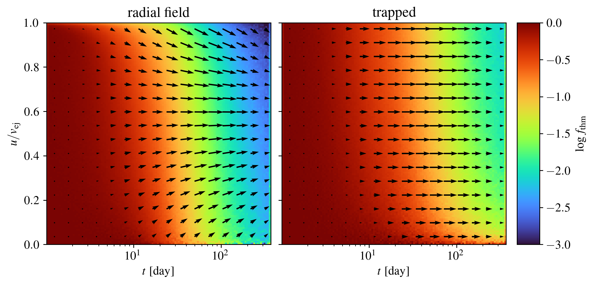<br />
图注：The thermalization efficiency at each bin in velocity coordinate and time in our fiducial ejecta model in the radial magnetic field (left panel) and trapped (right panel) limits. The arrows show the average time and velocity-coordinate displacement between where energy is injected (arrow base) and where it thermalizes. Arrow lengths are re-normalized for visual clarity. Initially, the dense ejecta promotes local thermalization in space and time for both transport scenarios. In the trapped limit, the thermalization efficiency decreases independently at each velocity coordinate, with a more rapid decrease in the diffuse outer ejecta. In the radial field limit, particles injected at small velocity coordinates move outwards before depositing their energy, and particles injected at large velocity coordinates either escape or move inwards before depositing their energy. These effects lower the thermalization efficiency and make it more uniform across velocity coordinates in the radial field scenario.<br />
对应解读：对应“建议重点查看的图表”第4项以及“关键图表逐图导读”图4：空间依赖的热化效率/沉积率二维诊断。<br />
入选理由：这是最直接支撑本文核心结论的图：在速度坐标和时间二维平面上比较径向磁场与束缚极限下的热化效率，并用箭头显示能量注入位置到热化位置的非局域位移。它能清楚展示内层向外输运、外层逃逸或回流、中间层非局域沉积增强等日报重点解读的空间结构，比单纯全局曲线更能说明非局域输运为何改变千新星源项。<br />
来源与置信度：\(arxiv_source\)；high；\(arxiv_source\) / main.tex:figure[9]</p>
<p><strong>Fig10</strong><br />
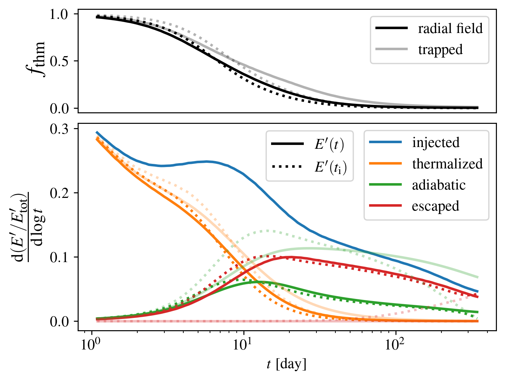<br />
图注：Thermalization efficiency (top panel), injected decay energy (bottom panel, blue lines), and energy losses (bottom panel) due to thermalization (orange lines), adiabatic losses (green lines), and escape (red lines) as a function of time in our fiducial ejecta model in the radial magnetic field (dark lines) and trapped (light lines) limits. Solid lines show quantities as a function of the time at which energy is deposited or lost, while dotted lines show quantities as a function of the time at which the particles carrying that energy were originally injected. At a given time, the injected energy is equal to the sum of the injection-time energy losses. The thermalization efficiency decreases over time as the ejecta becomes more diffuse. In the trapped limit, this decrease is driven by adiabatic losses. In the radial field limit, this decrease is mostly driven by particle escape, although there are still significant adiabatic losses.<br />
对应解读：对应“建议重点查看的图表”第3项和第5项：全局热化效率随时间、不同磁场几何、逃逸与绝热损失分解。<br />
入选理由：该图给出热化效率随时间的全局演化，并同时分解注入能量、热化损失、绝热损失和逃逸损失，直接支持日报中关于晚期热化效率下降、径向场中逃逸主导、束缚极限中绝热损失主导的解读。它也是连接微观输运与光变加热源项的关键图。<br />
来源与置信度：\(arxiv_source\)；high；\(arxiv_source\) / main.tex:figure[10]</p>
<p><strong>Fig05</strong><br />
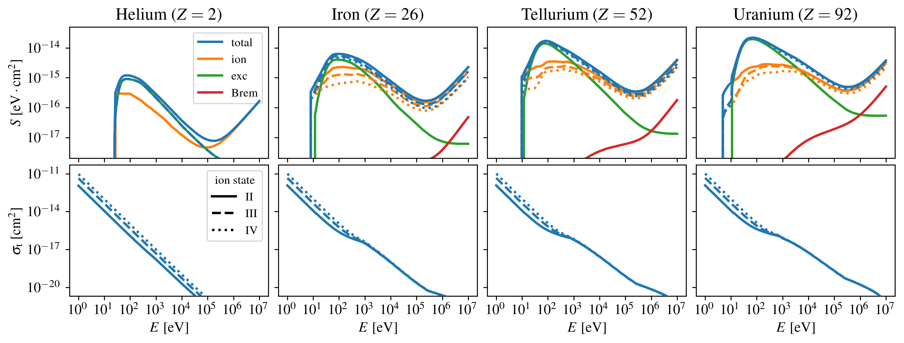<br />
图注：stopping cross section (top row) and transport cross section (bottom row) for Helium ($Z=2$) (first column), Iron ($Z=26$) (second column), Tellurium ($Z=52$) (third column), and Uranium ($Z=92$) (fourth column) as a function of electron energy. The stopping cross section is partitioned into contributions from EII (orange), EIE (green), and bremsstrahlung (red). Each target ionization stage is shown in a different linestyle indicated by the legend. Energy loss is driven by EII at MeV energies, but EIE dominates at lower energies $\lesssim 1~{\rm keV}$. Bremsstrahlung does not contribute significantly to the stopping cross section at MeV energies, although it dominates at GeV energies beyond the limit of the plot. At low energies $\lesssim 1~{\rm keV}$, the transport cross section is dominated by the small-angle Mott contribution, so it scales as $E^{-2}$ and is sensitive to the target ionization stage. At higher energies, the transport cross section is augmented by the large-angle Mott contribution, so it is insensitive to the target ionization stage. Heavier species have higher transport cross sections, higher stopping cross sections, and greater relative contributions from EIE and bremsstrahlung.<br />
对应解读：对应“建议重点查看的图表”第1项以及“关键图表逐图导读”图2：不同元素/离子的停止本领、输运截面与低能端主导过程。<br />
入选理由：该图逐元素比较 He、Fe、Te、U 的停止截面和输运截面，并分解 EII、EIE、轫致辐射及不同电离态影响，正好用于说明重元素微物理与低能束缚电子过程的重要性。它比只给混合丰度平均的图更适合展示元素差异和重元素壳层/电离态导致的系统不确定性。<br />
来源与置信度：\(arxiv_source\)；high；\(arxiv_source\) / main.tex:figure[5]</p>
<p><strong>Fig07</strong><br />
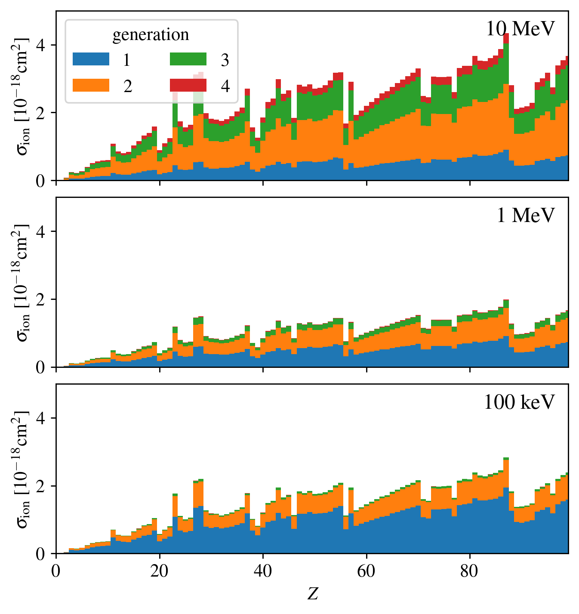<br />
图注：Per-element electron impact ionization (EII) cross sections for three incident electron energies: 10~MeV (top panel), 1~MeV (middle panel), bottom panel (100~keV). Cross sections are partitioned into contributions from each generation of the ionization cascade (Sec.~\ref{sec:cascade}): primaries (blue), secondaries (orange), tertiaries (green), and quaternaries (red). The cascade (secondaries and beyond) contributes significantly to the EII cross section across all elements. The cascade contribution increases with incident electron energy, becoming similar to the primary contribution at $1~{\rm MeV}$.<br />
对应解读：对应“建议重点查看的图表”第6项和“关键图表逐图导读”图5：初级与次级电子电离贡献分解。<br />
入选理由：该图按入射电子能量和元素分解电子碰撞电离截面，并明确区分 primary、secondary、tertiary、quaternary 电离级联贡献。它直接支撑日报中“次级电子显著提高总电离率”的重点结论，尤其适合解释为什么非热电离不能只看初级 beta 粒子。<br />
来源与置信度：\(arxiv_source\)；high；\(arxiv_source\) / main.tex:figure[7]</p>
<p><strong>Fig12</strong><br />
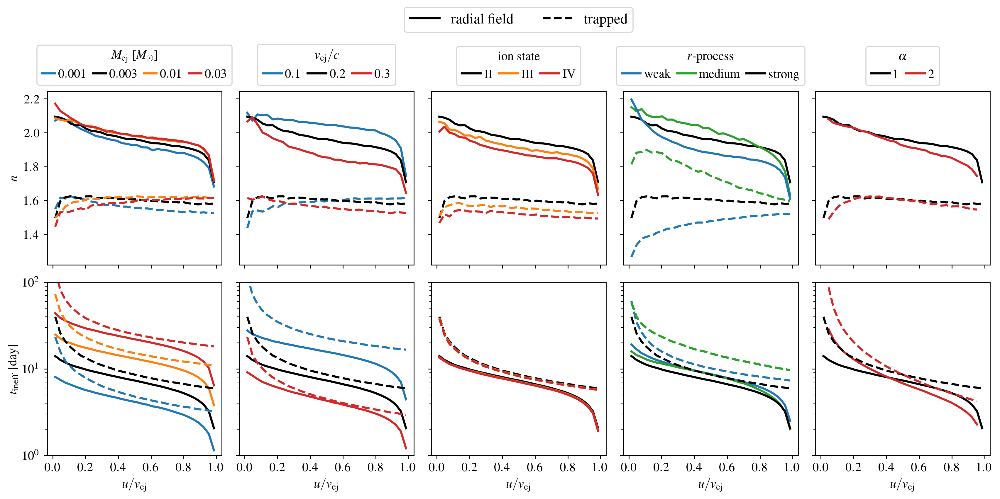<br />
图注：The inefficiency time (bottom panels) and asymptotic slope (top panels) as a function of velocity coordinate, derived by fitting Equation~\(\ref{eq:anal_fit}\) to the thermalization efficiency at each velocity coordinate. In each column, we vary a different ejecta model parameter---ejecta mass (first column), velocity (second column), ionization state (third column), $r$-process abundance pattern (fourth column), and density profile power-law exponent (fifth column). Each curve is colored by its parameter value in the color bar above the column, with the fiducial ejecta model in black. We show curves in radial magnetic field (solid lines) and trapped (dashed lines) limits. In the trapped limit, the inefficiency time scales with velocity coordinate as $t_{\rm ineff} \propto u^{-1/2}$, as expected from Equation~\(\ref{eq:teff}\) with $\alpha=1$. In the radial field limit, the inefficiency time is shorter at all velocity coordinates, especially in the innermost and outermost ejecta due to particle transport and escape.<br />
对应解读：对应“建议重点查看的图表”第8项以及“模型拟合”段落：解析热化处方与数值输运拟合参数的适用范围。<br />
入选理由：该图展示用解析式拟合空间依赖热化效率得到的 inefficiency time 和 asymptotic slope，并系统扫描抛射质量、速度、电离态、丰度和密度剖面参数。虽然不是残差图，但它是候选图中最贴近日报所说“把本文处方用于未来光变拟合、评估系统误差和参数退化”的图。<br />
来源与置信度：\(arxiv_source\)；high；\(arxiv_source\) / main.tex:figure[12]</p>
<p><strong>Fig08</strong><br />
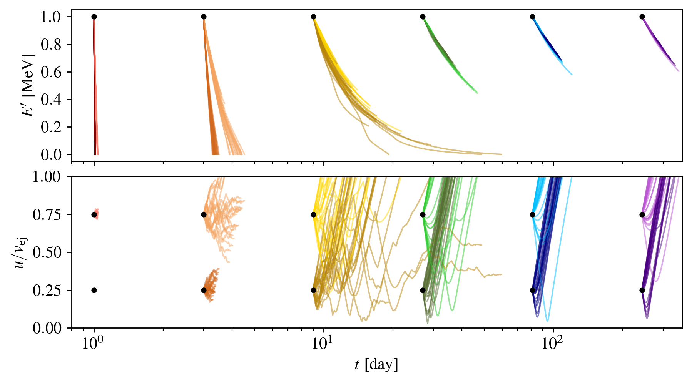<br />
图注：Velocity coordinate (bottom panel) and comoving energy (top panel) as a function of time in our fiducial ejecta model with a radial magnetic for 1-MeV particles injected by-hand at times 1 (red lines), 3 (orange lines), 9 (yellow lines), 27 (green lines), 81 (blue lines), and 243 (purple lines) days and velocity coordinates $0.05c$ (dark lines) and $0.15c$ (light lines). We inject 24 particles at each injection site (black dots). Initially, particles thermalize locally in space and time (red lines). At intermediate times, particles persist in the ejecta and thermalize non-locally in space and time (orange and yellow lines). Some particles escape before they completely thermalize, while others are trapped by scattering, especially those injected at small velocity coordinates where the density is higher. At late times, particles escape before most of their energy thermalizes (green, blue, and purple lines).<br />
对应解读：对应“建议重点查看的图表”第5项：粒子路径、逃逸与非局域热化过程的物理示意。<br />
入选理由：该图追踪手动注入的 1 MeV beta 粒子在速度坐标和能量上的时间演化，直观展示早期局域热化、中期散射俘获与非局域沉积、晚期逃逸。它能帮助读者理解 Fig09 和 Fig10 中热化效率降低及逃逸项增长的微观来源。<br />
来源与置信度：\(arxiv_source\)；high；\(arxiv_source\) / main.tex:figure[8]</p>
<h4 id="_56">强相关工作</h4>
<p>这篇工作与千新星热化效率经典研究直接相连，尤其是 Barnes、Kasen、Hotokezaka 等关于放射性衰变产物热化、\(\gamma\) 射线逃逸和千新星光变的半解析/辐射转移模型。它的推进点在于把 \(\beta\) 粒子的微物理和非局域输运做得更细，而不是只给出随时间变化的全局热化因子。建议检索关键词包括 “kilonova beta particle thermalization”, “r-process radioactive heating thermalization”, “kilonova non-local energy deposition”, “charged particle transport kilonova ejecta”。</p>
<p>同类背景还包括 GW170817/AT2017gfo 的观测和建模论文、镧系不透明度计算、\(r\) 过程核加热率不确定性研究，以及晚期千新星光变的能量沉积解释。潜在张力在于，不同研究可能把晚期衰减归因于核加热率、抛射物多组分结构、尘埃/分子形成、不透明度演化或热化效率下降；本文为其中“热化和电离微物理”这一解释提供了更强物理基础。若要找相反或竞争解释，可检索 “AT2017gfo late time light curve opacity”, “kilonova heating rate nuclear physics uncertainty”, “lanthanide opacity kilonova spectra”。</p>
<p><strong>同一事件 / 同类源线索</strong>：</p>
<ul>
<li><a href="https://arxiv.org/abs/2607.01228">https://arxiv.org/abs/2607.01228</a></li>
<li><a href="https://arxiv.org/pdf/2607.01228">https://arxiv.org/pdf/2607.01228</a></li>
<li><a href="https://arxiv.org/abs/1710.05435">https://arxiv.org/abs/1710.05435</a></li>
<li><a href="https://arxiv.org/abs/1710.05832">https://arxiv.org/abs/1710.05832</a></li>
<li><a href="https://arxiv.org/abs/1710.05833">https://arxiv.org/abs/1710.05833</a></li>
</ul>
<p><strong>相似工作</strong>：</p>
<ul>
<li><a href="https://arxiv.org/abs/1605.07218">https://arxiv.org/abs/1605.07218</a></li>
<li><a href="https://arxiv.org/abs/1806.10501">https://arxiv.org/abs/1806.10501</a></li>
<li><a href="https://arxiv.org/abs/1904.04296">https://arxiv.org/abs/1904.04296</a></li>
</ul>
<p><strong>基础理论 / 方法工作</strong>：</p>
<ul>
<li><a href="https://arxiv.org/abs/1302.0911">https://arxiv.org/abs/1302.0911</a></li>
<li><a href="https://arxiv.org/abs/1302.3415">https://arxiv.org/abs/1302.3415</a></li>
<li><a href="https://arxiv.org/abs/1001.5029">https://arxiv.org/abs/1001.5029</a></li>
</ul>
<p><strong>相反观点 / 张力线索</strong>：</p>
<ul>
<li><a href="https://arxiv.org/abs/1710.11576">https://arxiv.org/abs/1710.11576</a></li>
<li><a href="https://arxiv.org/abs/1805.09371">https://arxiv.org/abs/1805.09371</a></li>
</ul>
</details>
<h3 id="6-smoking-gun-evidence-for-hierarchical-black-hole-mergers">6. Smoking-gun evidence for hierarchical black-hole mergers</h3>
<ul>
<li>来源：arXiv / astro-ph.HE</li>
<li>链接：https://arxiv.org/abs/2607.01121v1</li>
<li>作者：Yin-Jie Li, Yuan-Zhu Wang, Shao-Peng Tang, Yi-Zhong Fan</li>
<li>评分：novelty 8/10，importance 9/10，relevance 7/10，final 9.00/10</li>
<li>推荐理由：基于GWTC-5黑洞并合总体统计提出分级并合的强证据，并联系恒星演化核反应率；致密天体/GW方向重要，但与伽马射线或宇宙线关联较弱。</li>
</ul>
<p><strong>中文题目</strong>：层级黑洞并合的“冒烟枪”证据</p>
<p><strong>做了什么</strong>：这篇论文用 &nbsp;GWTC-5&nbsp; 中 &nbsp;259&nbsp; 个双黑洞并合事件做总体族群分析，把观测到的恒星级黑洞分成低自旋、恒星坍缩起源子族群和高自旋子族群。作者发现：高自旋子族群的质量分布峰形几乎逐峰对应低自旋子族群并合后的遗迹质量分布，Bhattacharyya 重叠系数可达 \(\sim0.95\)。这正是“低自旋第一代黑洞先并合，产物再参与下一次并合”的层级并合图像所预言的形态学特征。论文还利用低自旋子族群的高质量截断 \(m_{\rm max,1}=54.2^{+7.7}_{-7.2}\,M_\odot\) 反推 \(^{12}{\rm C}(\alpha,\gamma)^{16}{\rm O}\) 反应的天体物理 \(S\)-因子，得到 \(S_{300}=151^{+30}_{-26}\,{\rm keV\,b}\)。</p>
<p><strong>为什么重要</strong>：双黑洞族群里高质量、高自旋黑洞究竟是层级并合产物，还是孤立演化中靠吸积或特殊恒星演化形成，一直是引力波天体物理的核心争议。本文的重要点不只是说“有一些事件像二代黑洞”，而是声称在总体质量函数层面看到了第一代并合遗迹和高自旋黑洞质量函数之间的峰形对应。如果这个形态学匹配经受住后续目录和选择效应检验，它会比单个离群事件更接近层级并合的群体级证据。</p>
<p><strong>理论 / 观测 / 仪器方法价值</strong>：对理论而言，论文给出了一种把恒星坍缩黑洞、并合遗迹、核反应率和致密星团动力学放在同一族群模型中检验的框架。对观测而言，它强调不能只看单个事件的质量或自旋异常，而要比较完整质量函数和选择函数校正后的形状。对方法而言，Bhattacharyya 系数等分布形态相似性诊断为引力波族群分析提供了一个直观但可量化的模型比较指标。</p>
<p><strong>为什么应该关注</strong>：如果你关心第三代探测器时代能否用引力波做“黑洞族谱学”，这篇文章值得看：它尝试把一代黑洞和二代黑洞的质量峰直接配对。如果你关心大质量恒星演化，它也值得看，因为低自旋子族群的最大质量被用来约束 \(^{12}{\rm C}(\alpha,\gamma)^{16}{\rm O}\) 反应率。即使你对“冒烟枪”这个说法保持怀疑，论文也提供了一个很好的案例，展示族群建模、选择效应、自旋分类和核天体物理约束如何彼此纠缠。</p>
<details class="paper-detail">
<summary>展开详细解读：文章讲解、背景、理论、重点章节、图表与相关工作</summary>
<h4 id="_57">文章详细讲解</h4>
<p>科学问题：恒星级黑洞在形成后是否会继续通过并合“长大”，是当前引力波天体物理的核心问题之一。单个双黑洞事件的质量很高或自旋很高，并不能自动说明它是层级并合产物，因为孤立双星演化、低金属丰度恒星、吸积、自旋测量误差和选择效应都可能制造相似表象。本文试图寻找更强的证据：如果高自旋黑洞真是早先双黑洞并合的遗迹，那么它们的质量函数不应是任意形状，而应当与低自旋、第一代恒星坍缩黑洞两两并合后的遗迹质量分布在峰位和形态上相互对应。</p>
<p>作者怎么做：论文使用 &nbsp;GWTC-5&nbsp; 中 &nbsp;259&nbsp; 个双黑洞并合事件，构造一个灵活的混合族群模型。模型把观测到的黑洞分成低自旋子族群和高自旋子族群；低自旋子族群被解释为主要来自恒星坍缩的第一代黑洞，高自旋子族群则允许是早期并合遗迹。作者先从低自旋子族群重建其质量函数，再通过黑洞并合遗迹公式把这一质量函数映射成预期的遗迹质量分布；随后比较这个预期遗迹分布与高自旋子族群的观测质量函数是否形态一致。比较不只看均值或截断，而是使用 Bhattacharyya 系数衡量两个归一化分布的整体重叠。</p>
<p>关键结果：作者报告高自旋子族群的质量函数可以“逐峰”追踪低自旋子族群预期并合遗迹质量分布，直到 \(\sim80\,M_\odot\) 左右，分布重叠系数最高约为 \(0.95\)。在层级并合图像下，这种峰形对应是自然结果：两个第一代黑洞并合后损失少量质量给引力波，遗迹质量约为初始总质量的 \(\sim0.95\)，遗迹自旋也自然落在中等到较高值。相反，若用孤立吸积或其他特殊通道解释高自旋子族群，则不仅要产生高自旋，还要把质量峰精细调到恰好等于第一代并合遗迹峰位，这就是作者称其为“冒烟枪”的理由。</p>
<p>论文还利用低自旋子族群的高质量截断 \(m_{\rm max,1}=54.2^{+7.7}_{-7.2}\,M_\odot\) 推断恒星演化中的成对不稳定质量边界，并进一步约束 \(^{12}{\rm C}(\alpha,\gamma)^{16}{\rm O}\) 反应在 \(300\,{\rm keV}\) 附近的天体物理 \(S\)-因子。得到的 \(S_{300}=151^{+30}_{-26}\,{\rm keV\,b}\) 与常用理论基准值相容。这部分把引力波质量函数和核反应率联系起来：第一代黑洞最大质量不仅是族群参数，也携带大质量恒星氦燃烧阶段核反应物理的信息。</p>
<p>局限和下一步：最关键的不确定性来自族群模型选择、自旋分类、选择函数、事件参数后验和混合子族群之间的退化。高自旋子族群的识别依赖有效自旋、自旋幅度或预cession 信息，而这些量在多数双黑洞事件中并不精确；质量峰的形态也可能受探测选择效应和参数化先验影响。下一步需要用独立目录、不同波形模型、不同质量函数基底、显式动力学星团模型和注入回收检验来重复这一形态匹配。第三代探测器如果能把低信噪比事件和高红移事件纳入，将显著提高对峰形对应和层级代际结构的检验力。</p>
<h4 id="_58">关键结果是怎么做出来的</h4>
<p>本文的证据链从样本选择开始：作者使用 &nbsp;GWTC-5&nbsp; 的 &nbsp;259&nbsp; 个双黑洞并合事件，而不是挑选少数著名高质量事件。这样做的目的在于把问题从“某个事件是否异常”转化为“总体质量函数是否显示代际映射”。读者应注意样本中每个事件并不是一个精确点，而是质量、自旋、红移等参数的后验分布；族群分析必须把单事件后验、探测选择函数和天体物理超参数联合起来处理。</p>
<p>核心分类是低自旋子族群和高自旋子族群。低自旋子族群被视为第一代恒星坍缩黑洞的近似代表，高自旋子族群则是潜在的并合遗迹候选。这里的关键不是高自旋事件数本身，而是高自旋子族群的质量概率密度形状。作者通过灵活混合模型重建两个子族群的质量函数，避免强行用单一幂律或单一高斯峰描述复杂结构；但这种灵活性也意味着需要特别检查是否存在过拟合或先验驱动的峰。</p>
<p>最重要的统计诊断是把低自旋质量函数经过并合遗迹映射后，与高自旋质量函数比较。若两个归一化分布分别记为 \(p(m)\) 和 \(q(m)\)，Bhattacharyya 系数 \({\rm BC}=\int {\rm d}m\sqrt{p(m)q(m)}\) 衡量它们的形态重叠。作者报告 \({\rm BC}\sim0.95\)，这意味着在其模型和后验样本下，两个分布几乎重合。应重点查看论文中展示低自旋质量函数、遗迹质量预测、高自旋质量函数三者叠加的图，以及给出 \({\rm BC}\) 后验或模型比较的表。</p>
<p>显著性或置信度的理解不能只看 \({\rm BC}\) 的最大值。严格来说，要看该系数在后验中的分布、与替代模型的比较、以及选择效应校正后是否仍保持高重叠。替代模型至少包括：高自旋子族群独立于低自旋遗迹分布的自由质量函数、吸积增重模型、以及允许一部分高自旋来自孤立通道的混合模型。如果论文给出了 Bayes 因子、信息准则或后验预测检验，应把这些指标与 \({\rm BC}\) 一起读，而不要把单一重叠系数当作完整显著性。</p>
<p>系统误差主要来自四类。第一是引力波波形系统误差，特别是质量比、自旋进动和高阶模对质量自旋后验的影响。第二是探测选择效应：高质量双黑洞在更大体积内可见，而极高质量系统又可能因频带内周期数少而参数不稳。第三是族群参数化：灵活混合模型可能把噪声起伏解释为峰。第四是物理映射：并合遗迹质量和自旋依赖初始质量比与自旋，不能只用固定比例近似。稳健性检验应包括更换质量函数基底、移除高影响事件、改变自旋阈值或混合先验、以及用注入样本验证峰形恢复能力。</p>
<p>低自旋高质量截断与 \(S_{300}\) 的推断是第二条证据链。作者从低自旋第一代子族群得到 \(m_{\rm max,1}=54.2^{+7.7}_{-7.2}\,M_\odot\)，再通过恒星演化模型把这一截断映射到 \(^{12}{\rm C}(\alpha,\gamma)^{16}{\rm O}\) 反应率。读者需要检查这一步是否充分边缘化了金属丰度、恒星风质量损失、旋转、对流超调和成对不稳定模型差异；这些系统误差可能不完全包含在统计误差条中。</p>
<details class="paper-subdetail">
<summary>展开背景、理论、公式、模型、章节和图表导读</summary>
<h4 id="_59">背景知识</h4>
<p>研究对象是 LIGO、Virgo、KAGRA 探测到的恒星级双黑洞并合。双黑洞并合给出两个分量黑洞的质量、自旋和红移信息，其中质量谱的形状记录了恒星演化、动力学装配和宇宙金属丰度史；自旋则记录了黑洞形成和后续演化通道。第一代黑洞通常指直接来自恒星坍缩的黑洞，第二代或更高代黑洞则指至少经历过一次黑洞并合的遗迹。</p>
<p>历史问题来自两个观测事实。第一，引力波目录中存在质量较高的黑洞，有些接近或进入传统成对不稳定超新星理论预期的质量缺口。第二，一部分事件显示较高自旋或自旋取向与轨道角动量不对齐，这更容易出现在致密星团、核星团或活动星系核盘等动力学环境中。单独看这两个事实都不决定起源，因为恒星模型、金属丰度、双星相互作用、吸积和测量误差都能改变解释。</p>
<p>层级并合的经典预言很直接：一次黑洞并合的遗迹会保留大部分总质量，并获得典型无量纲自旋 \(\chi\sim0.7\) 左右，除非初始质量比或自旋很极端。因此，如果一个黑洞是并合遗迹，它往往比普通第一代黑洞更重、也更自旋。致密环境还能通过逃逸速度筛选遗迹：引力波反冲速度低于宿主系统逃逸速度的遗迹才会留下并参与下一次并合。</p>
<p>为什么现在值得重新看？早期引力波目录事件数少，族群峰、截断和子族群结构高度依赖先验。随着事件数增至数百量级，质量函数中的局部结构和自旋相关分层开始可检验。本文利用 &nbsp;259&nbsp; 个双黑洞事件尝试做“形态学匹配”：不是只问高自旋黑洞是否重，而是问高自旋黑洞的质量函数是否等于低自旋黑洞并合后的遗迹质量函数。</p>
<p>常见误区之一是把“高质量”直接等同于“二代黑洞”。实际上低金属丰度恒星可形成较大质量黑洞，而成对不稳定边界也有理论不确定性。另一个误区是把有效自旋 \(\chi_{\rm eff}\) 的小值等同于所有分量自旋都小；若自旋取向反向或进动强，\(\chi_{\rm eff}\) 可能接近零。还有一个误区是忽略探测选择效应：质量更高的系统可在更大距离被看到，未校正选择函数的观测质量分布不是天体物理质量分布。</p>
<h4 id="_60">基础理论 / 方法脉络</h4>
<p>基础物理图像是：两个黑洞以引力波辐射损失能量和角动量，轨道逐渐收缩，最终形成一个 Kerr 黑洞。遗迹质量 \(M_{\rm f}\) 小于初始总质量 \(m_1+m_2\)，差值以引力波能量辐射出去；遗迹无量纲自旋 \(\chi_{\rm f}\) 由初始轨道角动量、分量自旋和辐射角动量共同决定。对于低自旋且质量比不太极端的并合，\(M_{\rm f}\) 通常约为初始总质量的 \(\sim0.95\)，\(\chi_{\rm f}\) 常落在 \(\sim0.7\) 附近。</p>
<p>本文的关键假设是低自旋子族群主要代表第一代恒星坍缩黑洞。这个假设并非绝对正确，但它给出一个可检验映射：如果从低自旋质量函数 \(p_1(m)\) 随机抽取两个黑洞并合，并用数值相对论校准公式计算遗迹质量，那么得到的遗迹质量函数 \(p_{\rm rem}(m)\) 应该近似等于高自旋子族群的质量函数 \(p_{\rm high}(m)\)。这比单独比较平均质量更强，因为峰位、峰宽和截断都参与检验。</p>
<p>观测上，引力波事件给出的是探测器数据 \(d_i\) 对源参数 \(\theta_i\) 的后验 \(p(\theta_i|d_i)\)，其中 \(\theta_i\) 包括分量质量、红移、自旋、天区位置和取向。族群分析要反推控制总体分布的超参数 \(\Lambda\)，并除以探测概率或灵敏体积带来的选择偏差。若不做这一步，高质量峰可能被误判，因为探测器对不同质量和自旋的系统敏感度不同。</p>
<p>自旋分类有内在退化。有效自旋 \(\chi_{\rm eff}\) 是质量加权的自旋沿轨道角动量投影，对波形相位影响强；进动自旋参数对面外自旋敏感，但通常测量较弱。质量比和自旋也会在波形中互相补偿，尤其是低信噪比事件。因此，把事件分到高自旋或低自旋子族群时，最好采用概率混合而不是硬阈值。</p>
<p>本文还把低自旋质量截断和恒星演化相连。大质量恒星的氦核演化受 \(^{12}{\rm C}(\alpha,\gamma)^{16}{\rm O}\) 反应率影响，该反应改变碳氧核组成、后续燃烧和成对不稳定质量损失。因而第一代黑洞最大质量 \(m_{\rm max,1}\) 可以作为核反应率的间接探针。不过这个映射依赖金属丰度、恒星风、对流和爆炸模型，不能理解为纯粹实验室核物理测量。</p>
<h4 id="_61">公式与推导</h4>
<p>第一步是并合的能量账本。两个黑洞初始源系质量为 \(m_1\) 和 \(m_2\)，并合后遗迹质量为 \(M_{\rm f}\)，辐射的引力波能量为 \(E_{\rm rad}\)，则</p>
<div class="math-display">\[M_{\rm f}=m_1+m_2-\frac{E_{\rm rad}}{c^2}\, .\]</div>
<p>这里 \(c\) 是光速。对低自旋、质量比不极端的双黑洞，常有 \(E_{\rm rad}/[(m_1+m_2)c^2]\sim0.03-0.07\)，所以遗迹质量峰会相对初始总质量峰略向低质量移动。</p>
<p>第二步引入质量比和总质量。定义</p>
<div class="math-display">\[q=\frac{m_2}{m_1}\leq1,\qquad M=m_1+m_2,\qquad \eta=\frac{m_1m_2}{M^2}=\frac{q}{(1+q)^2}\, .\]</div>
<p>其中 \(\eta\) 是对称质量比。数值相对论校准的遗迹公式通常可写成 \(M_{\rm f}=M[1-\epsilon(\eta,\boldsymbol{\chi}_1,\boldsymbol{\chi}_2)]\)，\(\epsilon\) 是辐射效率，\(\boldsymbol{\chi}_1\) 和 \(\boldsymbol{\chi}_2\) 是两个分量的无量纲自旋向量。</p>
<p>第三步是把第一代质量函数映射到遗迹质量函数。若低自旋第一代黑洞的质量分布为 \(p_1(m|\Lambda_1)\)，配对函数为 \(\pi(m_1,m_2|\Lambda_{\rm pair})\)，则</p>
<div class="math-display">\[p_{\rm rem}(M_{\rm f}|\Lambda)=\int {\rm d}m_1{\rm d}m_2\,p_1(m_1|\Lambda_1)p_1(m_2|\Lambda_1)\pi(m_1,m_2|\Lambda_{\rm pair})\delta\left[M_{\rm f}-f_{\rm rem}(m_1,m_2,\boldsymbol{\chi}_1,\boldsymbol{\chi}_2)\right]\, .\]</div>
<p>这里 \(f_{\rm rem}\) 是遗迹质量公式，\(\delta\) 函数保证只统计能产生给定 \(M_{\rm f}\) 的初始组合。</p>
<p>第四步是自旋可观测量。引力波相位最容易测到的自旋组合之一是有效自旋</p>
<div class="math-display">\[\chi_{\rm eff}=\frac{m_1\boldsymbol{\chi}_1+m_2\boldsymbol{\chi}_2}{m_1+m_2}\cdot\hat{\boldsymbol{L}}\, ,\]</div>
<p>其中 \(\hat{\boldsymbol{L}}\) 是轨道角动量方向。低 \(\chi_{\rm eff}\) 不必然意味着低自旋，但在总体模型中，\(\chi_{\rm eff}\)、进动信息和质量分布共同帮助区分低自旋与高自旋子族群。</p>
<p>第五步是事件级似然进入族群分析。给定超参数 \(\Lambda\)，\(N\) 个事件的数据 \(\{d_i\}\) 的选择效应校正层级似然可写为</p>
<div class="math-display">\[\mathcal{L}(\Lambda)\propto e^{-\mu(\Lambda)}\prod_{i=1}^{N}\int {\rm d}\theta_i\,\mathcal{L}(d_i|\theta_i)p(\theta_i|\Lambda)\, .\]</div>
<p>这里 \(\theta_i\) 是单事件源参数，\(\mathcal{L}(d_i|\theta_i)\) 是引力波数据似然，\(p(\theta_i|\Lambda)\) 是族群分布，\(\mu(\Lambda)\) 是给定探测选择函数后期望探测数。</p>
<p>第六步写出选择项。若宇宙并合率密度和参数分布合并记为 \(R(\theta|\Lambda)\)，探测概率为 \(p_{\rm det}(	heta)\)，观测时间为 \(T\)，则</p>
<div class="math-display">\[\mu(\Lambda)=T\int {\rm d}\theta\,R(\theta|\Lambda)p_{\rm det}(	heta)\, .\]</div>
<p>这项防止把“更容易被看见”的高质量系统误当成天体物理上更常见的系统。</p>
<p>第七步是本文核心形态诊断。两个归一化质量分布 \(p_{\rm rem}(m)\) 和 \(p_{\rm high}(m)\) 的 Bhattacharyya 系数为</p>
<div class="math-display">\[{
m BC}=\int {\rm d}m\,\sqrt{p_{\rm rem}(m)p_{\rm high}(m)}\, ,\qquad 0\leq {\rm BC}\leq1\, .\]</div>
<p>当 \({\rm BC}=1\) 时两个分布完全相同；当 \({\rm BC}\) 接近 \(0\) 时重叠很小。本文报告 \({\rm BC}\sim0.95\)，即遗迹预测和高自旋质量函数高度重叠。</p>
<p>第八步是把第一代最大质量连接到核反应率。可把恒星演化模型给出的映射抽象写成</p>
<div class="math-display">\[m_{\rm max,1}=g(S_{300},Z,\boldsymbol{\psi}_{\star})\, ,\]</div>
<p>其中 \(S_{300}\) 是 \(^{12}{\rm C}(\alpha,\gamma)^{16}{\rm O}\) 反应在 \(300\,{\rm keV}\) 的天体物理 \(S\)-因子，\(Z\) 是金属丰度，\(\boldsymbol{\psi}_{\star}\) 表示恒星风、对流、旋转和爆炸处方等恒星模型参数。观测到 \(m_{\rm max,1}\) 后，就可通过该映射反推 \(S_{300}\) 的后验。</p>
<p>第九步给出核反应截面的常用定义。带电粒子反应截面常写为</p>
<div class="math-display">\[\sigma(E)=\frac{S(E)}{E}\exp[-2\pi\eta_{\rm C}(E)]\, ,\]</div>
<p>其中 \(E\) 是质心能量，\(S(E)\) 是去掉库仑穿透主导能量依赖后的天体物理 \(S\)-因子，\(\eta_{\rm C}(E)\) 是 Sommerfeld 参数。本文的 \(S_{300}\) 是 \(S(E)\) 在 \(E=300\,{\rm keV}\) 附近的值，用来表征大质量恒星氦燃烧阶段的重要反应率。</p>
<h4 id="_62">模型拟合 / 应用方法</h4>
<p>这类分析的拟合对象不是单个事件的最佳拟合质量，而是控制总体分布的超参数 \(\Lambda\)。本文中关键拟合量包括低自旋子族群质量函数、高自旋子族群质量函数、子族群混合比例、质量截断 \(m_{\rm max,1}\)、自旋分布参数、红移演化或并合率参数，以及可能的配对偏好参数。每个事件通过其单事件后验样本进入层级推断，通常需要对原始采样先验重新加权。</p>
<p>似然必须包含选择效应。探测概率依赖红移质量、自旋、取向、天区位置和噪声曲线；高质量系统在一定范围内有更大可探测体积，但总质量过高时信号可能在低频端进入探测器，参数测量反而变差。若选择函数估计不准，质量函数的峰和截断都会偏移。实际应用中通常用注入回收或半解析灵敏度模型估计 \(p_{\rm det}(\theta)\)。</p>
<p>参数退化非常重要。质量函数峰宽与测量误差卷积退化，混合比例与自旋分类退化，第一代最大质量与高质量尾部的参数化形式退化，红移演化与质量分布也可能退化。高自旋子族群如果事件数不多，灵活模型可能把几个高权重事件塑造成峰；因此需要后验预测检验和 leave-one-out 类稳健性检验来判断峰是否由单个事件主导。</p>
<p>模型比较应关注两个层面。第一是层级并合模型相对于“高自旋质量函数自由变化”模型是否真的有更高证据；如果自由模型也能轻易产生相同峰形，则“冒烟枪”的力度下降。第二是相对于吸积或孤立演化替代模型，是否存在需要精细调参才能匹配的证据。Bhattacharyya 系数给出形态重叠，但它本身不是完整 Bayes 因子；读者应同时查看边际似然、后验预测残差和系统误差预算。</p>
<p>残差诊断可以这样看：把观测的高自旋质量函数减去低自旋遗迹预测，检查残差是否在某些质量段系统偏正或偏负。若 \(50\,M_\odot\) 到 \(80\,M_\odot\) 的峰能匹配，但低质量端或最高质量端不匹配，可能意味着只有一部分高自旋黑洞来自层级并合，或存在多种动力学环境。若残差随红移变化，还可能提示形成通道随宇宙时间变化。</p>
<p>该模型也可能失败。若未来目录显示高自旋质量峰与第一代遗迹峰不再同步，或不同波形模型下自旋子族群消失，那么当前结论会被削弱。若发现大量低自旋但处在质量缺口深处的黑洞，则简单“低自旋等于第一代”假设也会受到挑战。最有力的下一步是把质量函数匹配、自旋分布、反冲保留概率和宿主环境模型联合拟合，而不是只做一维质量形态比较。</p>
<h4 id="_63">重点章节 / 结果段落怎么读</h4>
<ol>
<li>
<p>数据和样本部分：读者应先确认 &nbsp;GWTC-5&nbsp; 的 &nbsp;259&nbsp; 个双黑洞事件如何筛选，是否包含边缘候选，单事件后验来自哪些波形模型，质量和自旋采用源系还是探测器系。这里决定了后面所有族群结论的基础。</p>
</li>
<li>
<p>混合族群模型部分：重点看低自旋和高自旋子族群如何定义，是通过显式自旋分布混合、有效自旋阈值，还是联合质量自旋模型自动分群。还要看质量函数用什么灵活基底表示，例如样条、高斯混合、分段幂律或非参数模型，因为峰形证据高度依赖这一选择。</p>
</li>
<li>
<p>遗迹质量映射部分：这是全文核心方法段。读者应检查作者如何从低自旋质量函数生成并合遗迹分布，是否考虑质量比、自旋、配对函数和引力波辐射损失，而不是简单把质量乘一个常数。若该段使用数值相对论拟合公式，应注意其适用范围。</p>
</li>
<li>
<p>形态匹配和统计检验部分：重点读展示 \(p_{\rm rem}(m)\) 与 \(p_{\rm high}(m)\) 重叠的图表，以及 Bhattacharyya 系数后验。要区分最大后验曲线的视觉重合与完整后验不确定性下的重合。</p>
</li>
<li>
<p>第一代最大质量与 \(S_{300}\) 推断部分：这部分把引力波族群结果转化为核天体物理约束。读者应检查恒星演化模型网格、金属丰度边缘化和系统误差处理，而不要只读最终 \(S_{300}\) 数值。</p>
</li>
<li>
<p>稳健性检验和讨论部分：应优先看更换自旋分类、质量函数参数化、事件子样本和选择函数后的结果是否保持。若附录给出注入回收、后验预测或替代模型比较，这些内容对判断“冒烟枪”强度比摘要更重要。</p>
</li>
</ol>
<h4 id="_64">建议重点查看的图表</h4>
<ol>
<li>
<p>低自旋与高自旋子族群的质量函数图：看横轴源系质量 \(m\)，纵轴概率密度或并合率密度；重点检查峰位、峰宽和高质量截断是否由后验可信区间支持。</p>
</li>
<li>
<p>低自旋并合遗迹预测与高自旋质量函数叠加图：这是核心图。看遗迹预测曲线是否逐峰对应高自旋曲线，以及 \(\sim80\,M_\odot\) 以上是否出现偏离。</p>
</li>
<li>
<p>Bhattacharyya 系数或分布重叠诊断图：看 \({\rm BC}\) 的后验宽度，而非只看 \(\sim0.95\) 的代表值。若有替代模型对照，应比较各模型的 \({\rm BC}\) 分布。</p>
</li>
<li>
<p>质量-自旋二维分布图：看高自旋事件是否集中在遗迹质量预期区域，低自旋事件是否定义出清晰的第一代截断。注意单事件后验椭圆是否很宽。</p>
</li>
<li>
<p>选择函数或探测效率图：检查不同质量和红移下的探测概率，确认高质量峰不是由灵敏度窗口造成。</p>
</li>
<li>
<p>\(m_{\rm max,1}\) 与 \(S_{300}\) 的映射或后验图：看 \(m_{\rm max,1}\) 的可信区间如何传递到 \(S_{300}\)，以及恒星演化系统误差是否与统计误差同量级。</p>
</li>
<li>
<p>稳健性检验表：查看更换质量函数模型、自旋先验、波形后验和事件筛选后，\({\rm BC}\)、\(m_{\rm max,1}\) 和 \(S_{300}\) 是否稳定。</p>
</li>
</ol>
<h4 id="_65">关键图表逐图导读</h4>
<p>图 1：建议首先读样本或二维族群概览图。横轴通常应是源系主质量或分量质量 \(m\)，纵轴可能是有效自旋 \(\chi_{\rm eff}\)、自旋幅度或事件概率密度。数据点若带误差条或后验云，应注意多数事件的自旋约束很宽，不能把点估计当作真实分类。此图的作用是说明高质量和高自旋事件在样本中是否形成可见子结构。</p>
<p>图 2：核心质量函数图。横轴为黑洞质量 \(m\)，纵轴为归一化概率密度或微分并合率。低自旋子族群曲线给出第一代质量函数，高自旋子族群曲线给出候选层级产物质量函数。读图时要看阴影可信区间是否在峰位处足够窄；如果峰只在最大后验线上明显、但可信区间很宽，则证据力度较弱。</p>
<p>图 3：遗迹质量预测叠加图。这里应有由低自旋子族群生成的 \(p_{\rm rem}(m)\) 曲线，以及观测高自旋子族群 \(p_{\rm high}(m)\) 曲线。若论文结论成立，两条曲线的峰位和相对峰高应在不确定性内一致。读图陷阱是只看视觉重合而忽视归一化方式；必须确认两条曲线是在相同质量范围、相同选择校正和相同源系质量定义下比较。</p>
<p>图 4：Bhattacharyya 系数或模型比较图。横轴可能是 \({\rm BC}\)、Bayes 因子或模型编号，纵轴为后验密度或证据差。关键是看 \({\rm BC}\sim0.95\) 是否代表后验整体，而不是尾部最大值；还要看替代模型是否也能得到高 \({\rm BC}\)。若替代模型的证据差很小，“冒烟枪”说法就需要更谨慎。</p>
<p>图 5：第一代最大质量截断图。横轴为 \(m_{\rm max,1}\) 或质量 \(m\)，纵轴为后验密度或累计分布。重点看 \(54.2^{+7.7}_{-7.2}\,M_\odot\) 是否来自低自旋子族群的清晰截断，而不是由高质量少数事件和先验共同决定。</p>
<p>图 6：\(S_{300}\) 推断图。横轴为 \(S_{300}\)，纵轴为后验概率密度，可能还会叠加核物理基准值或其他实验/理论约束。读图时要区分统计可信区间和恒星模型系统误差；如果图中不同恒星演化处方给出不同曲线，应把这些差异视为主要不确定性来源之一。</p>
</details>
<h4 id="_66">论文原图 / 可嵌入图片</h4>
<p><strong>Fig01</strong><br />
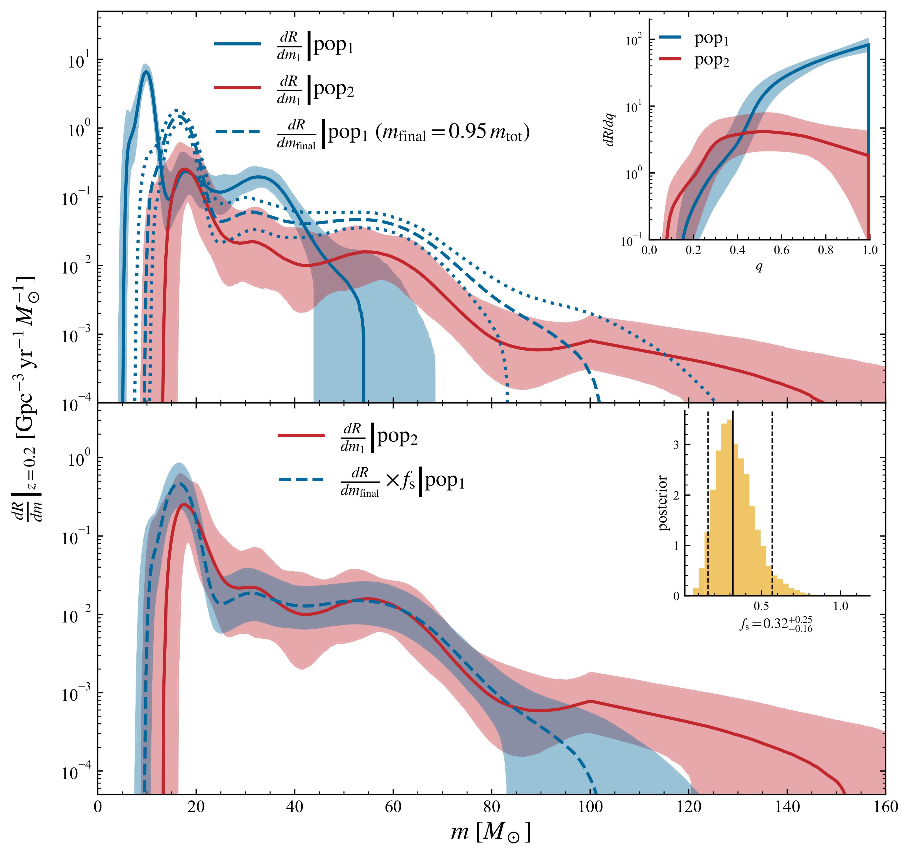<br />
图注：The reconstructed mass distributions of the black hole groups. The solid curves are for the medians and the regions represent the 90\% credible intervals. Top: the low and high spin subpopulations are marked in blue and red, and the dashed lines represent the reconstructed mass distribution of remnant black holes formed in the mergers of the low-spin subpopulation objects (i.e., the remnant group, whose mass has been approximated as $0.95(m_1+m_2)$). Bottom: the comparison of the reconstructed mass distribution of the second subpopulation (in red) with that of the remnant population but scaled by a factor of $\sim 0.32^{+0.25}_{-0.16}$ (90\%C.L.).<br />
对应解读：对应“建议重点查看的图表”第1、2项，以及“关键图表逐图导读”图2和图3：低/高自旋子族群质量函数、低自旋并合遗迹预测与高自旋质量函数叠加。<br />
入选理由：这是论文核心证据图，直接同时展示低自旋和高自旋子族群的质量分布、90%可信区间，以及由低自旋子族群并合得到的遗迹质量分布虚线；下方面板还给出高自旋质量函数与按比例缩放后的遗迹分布比较，最能支撑“逐峰对应”和约80太阳质量以下形态匹配的主结论。<br />
来源与置信度：\(arxiv_source\)；high；\(arxiv_source\) / BHGrowth.tex:figure[1]</p>
<p><strong>Fig02</strong><br />
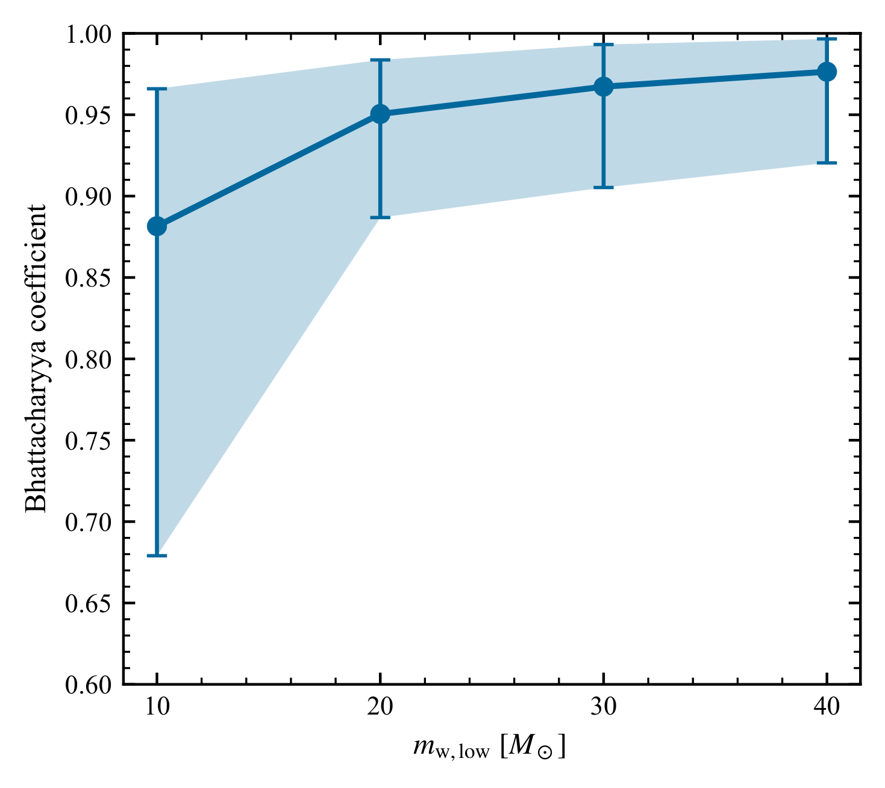<br />
图注：The Bhattacharyya coefficient as a function of the lower edge of the mass window ($m_{\rm w,low}$, $80~M_\odot$). This coefficient \(\cite{Bhattacharyya1943}\) describes the shape similarity among ${\frac{d\mathcal{R}}{dm_{1}}|_{\rm pop_2}}$ and ${\frac{d\mathcal{R}}{dm_{\rm final}}|_{\rm pop_1}}$. The shaded regions represent the medians and $90\%$ credible intervals.<br />
对应解读：对应“建议重点查看的图表”第3项和“关键图表逐图导读”图4：Bhattacharyya 系数或分布重叠诊断图。<br />
入选理由：该图直接给出Bhattacharyya coefficient随质量窗口下边界变化的后验中位数和90%可信区间，是检验文中BC约0.95是否具有整体后验支持、而非只凭视觉重合的关键诊断图。<br />
来源与置信度：\(arxiv_source\)；high；\(arxiv_source\) / BHGrowth.tex:figure[2]</p>
<p><strong>Fig04</strong><br />
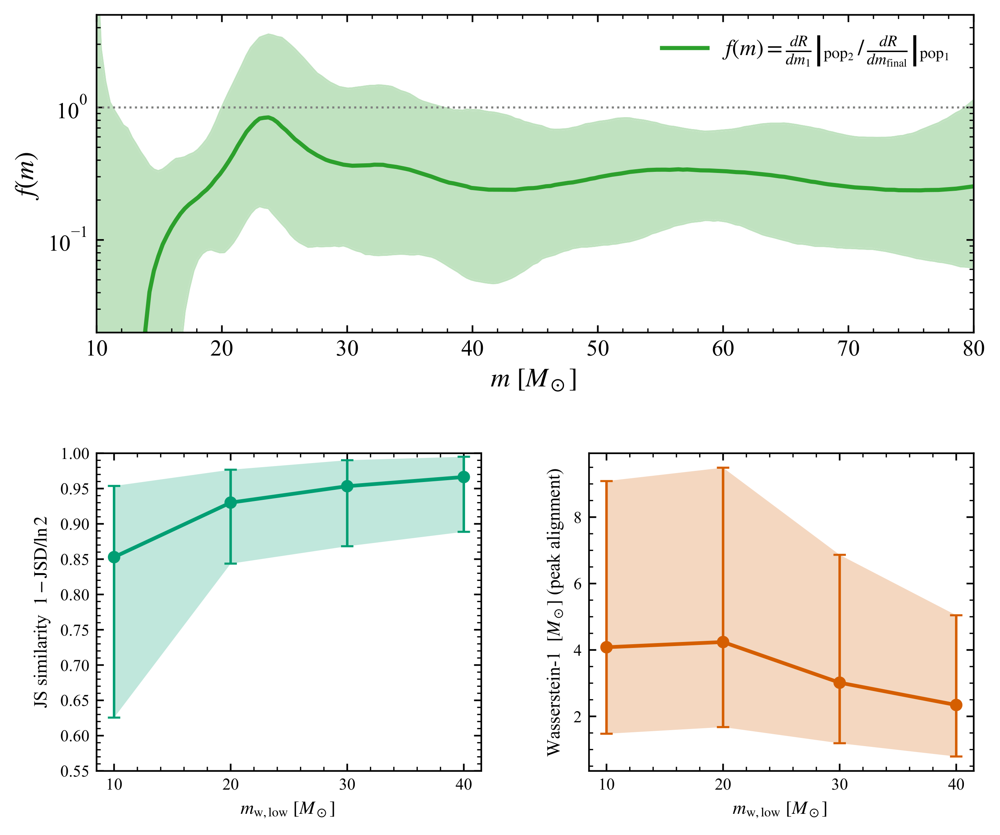<br />
图注：Top: Ratio between pop$_2$ $m_1$ and pop$_1$ $m_{\rm final}$, as a function of mass, the solid lines and shaded bands are for median and 90\% credible intervals. Bottom: Shape similarity between the \(\textit{pop1}\) final-mass and \(\textit{pop2}\) primary-mass ($m_1$) distributions as a function of the lower window edge (upper edge fixed at $80~M_\odot$). Bottom panels show the Jensen--Shannon similarity (left), and the peak-aligned Wasserstein-1 distance (right); arrows indicate better agreement, markers denote posterior medians, and shaded bands show the $90\%$ credible intervals.<br />
对应解读：对应“模型拟合”中关于残差诊断、形态相似性和系统偏离的讨论，也补充“建议重点查看的图表”第2、3项。<br />
入选理由：该图不仅给出pop2主质量与pop1遗迹质量的质量依赖比值，还用Jensen--Shannon相似度和峰对齐Wasserstein距离提供独立形态匹配诊断；相比单一BC图，它更适合检查在哪些质量段存在系统偏离或残差。<br />
来源与置信度：\(arxiv_source\)；high；\(arxiv_source\) / BHGrowth.tex:figure[4]</p>
<p><strong>Fig03</strong><br />
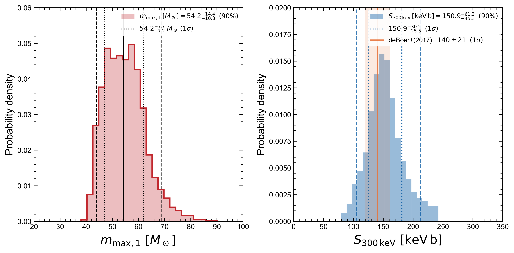<br />
图注：{\(\bf\) The inferred $S_{\rm 300keV}$.} The evaluated $S$ factor of $^{12}{\rm C}(\alpha,\gamma)^{16}{\rm O}$ reaction at 300 keV assuming that $m_{\rm max,1}$ represents the lower edge of the PISN mass gap. The value of $S_{\rm 300keV}$ recommended by ref.~\(\cite{2017RvMP...89c5007D}\) (1$\sigma$ region including the model uncertainty) is also plotted for comparison.<br />
对应解读：对应“建议重点查看的图表”第6项和“关键图表逐图导读”图6：由m_max,1推断S300的后验图。<br />
入选理由：该图直接展示由第一代最大质量截断映射得到的12C(alpha,gamma)16O反应S因子，并与文献推荐值及模型不确定性比较，是支撑论文核天体物理外推结论的主要图表。<br />
来源与置信度：\(arxiv_source\)；high；\(arxiv_source\) / BHGrowth.tex:figure[3]</p>
<p><strong>Fig11</strong><br />
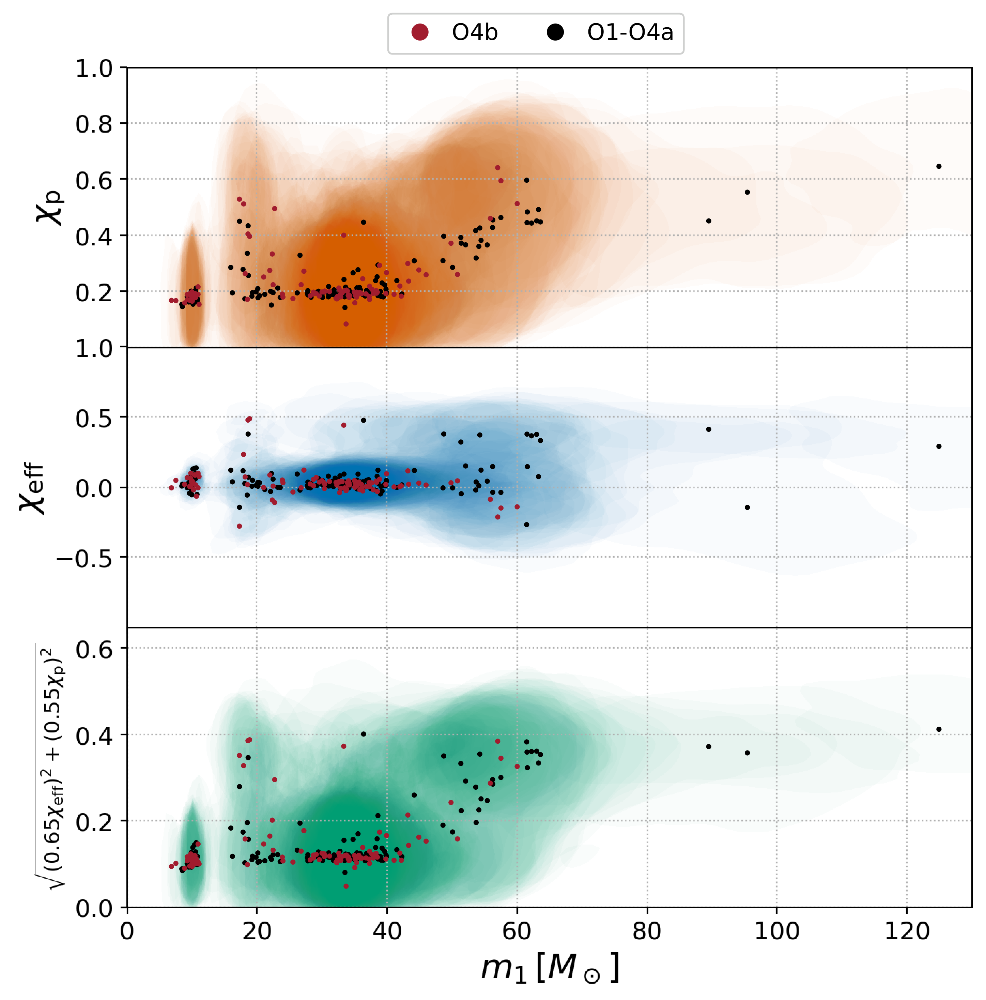<br />
图注：Population-informed posterior of primary mass, effective spin, effective precession, and combined spin for GWTC-5 events. Note the stars are for the median informed samples showing the approximate distribution tendency. The darkness of the contours indicates the density distribution.<br />
对应解读：对应“建议重点查看的图表”第4项和“关键图表逐图导读”图1：质量-自旋二维分布和事件后验概览。<br />
入选理由：该图展示GWTC-5事件在主质量、有效自旋、进动自旋和组合自旋空间中的population-informed posterior，有助于判断高质量高自旋事件是否形成可见子结构，并提醒读者单事件自旋后验可能较宽。<br />
来源与置信度：\(arxiv_source\)；high；\(arxiv_source\) / BHGrowth.tex:figure[11]</p>
<p><strong>Fig06</strong><br />
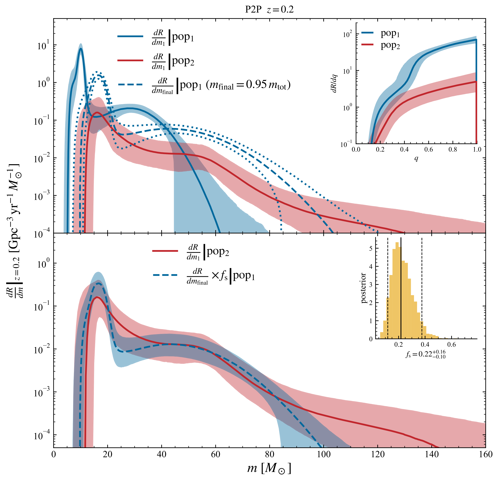<br />
图注：Similar to Figure~\(\ref{fig:m1_mf},\) but for the parametric mass function (\textsc{PowerLaw+2Peak}).<br />
对应解读：对应“建议重点查看的图表”第7项和“模型拟合”中关于更换质量函数模型后的稳健性检验。<br />
入选理由：该图使用PowerLaw+2Peak参数化质量函数重复类似Fig01的质量函数与遗迹分布比较，可检验核心形态匹配是否依赖非参数样条模型；作为稳健性图，其科学价值高于较为重复的单纯缩放对比图。<br />
来源与置信度：\(arxiv_source\)；high；\(arxiv_source\) / BHGrowth.tex:figure[6]</p>
<h4 id="_67">强相关工作</h4>
<p>这篇工作处在三个文献脉络交叉处。第一是 LIGO/Virgo/KAGRA 的双黑洞族群目录分析，关键词包括 “GWTC population properties binary black holes mass spin distribution”。这些工作给出质量谱中峰、截断、自旋分布和红移演化的基准结果。第二是层级并合理论和动力学形成通道，关键词包括 “hierarchical black hole mergers globular clusters nuclear star clusters gravitational recoil second-generation black holes”。这些研究关注并合遗迹能否被宿主环境保留，以及二代黑洞的质量、自旋和倾角分布。</p>
<p>第三是成对不稳定质量缺口和核反应率约束，关键词包括 “pair-instability mass gap carbon alpha oxygen reaction rate black hole maximum mass”。本文把低自旋第一代黑洞最大质量用于推断 \(S_{300}\)，与大质量恒星演化和核天体物理文献相连。相反观点或需要对照的工作包括：用孤立双星演化解释高质量黑洞的模型、用气体吸积提高自旋和质量的模型、以及认为当前自旋测量尚不足以可靠分群的族群分析。建议检索 “accretion spin-up stellar-mass black holes gravitational-wave population” 和 “spin measurement uncertainty hierarchical mergers”。</p>
<p><strong>同一事件 / 同类源线索</strong>：</p>
<ul>
<li><a href="https://arxiv.org/abs/2607.01121">https://arxiv.org/abs/2607.01121</a></li>
<li><a href="https://arxiv.org/pdf/2607.01121">https://arxiv.org/pdf/2607.01121</a></li>
<li><a href="https://www.gw-openscience.org/">https://www.gw-openscience.org/</a></li>
</ul>
<p><strong>相似工作</strong>：</p>
<ul>
<li><a href="https://arxiv.org/abs/2111.03634">https://arxiv.org/abs/2111.03634</a></li>
<li><a href="https://arxiv.org/abs/2010.14533">https://arxiv.org/abs/2010.14533</a></li>
<li><a href="https://arxiv.org/abs/2105.06384">https://arxiv.org/abs/2105.06384</a></li>
</ul>
<p><strong>基础理论 / 方法工作</strong>：</p>
<ul>
<li><a href="https://arxiv.org/abs/1602.03840">https://arxiv.org/abs/1602.03840</a></li>
<li><a href="https://arxiv.org/abs/1608.01940">https://arxiv.org/abs/1608.01940</a></li>
<li><a href="https://arxiv.org/abs/1805.10270">https://arxiv.org/abs/1805.10270</a></li>
</ul>
<p><strong>相反观点 / 张力线索</strong>：</p>
<ul>
<li><a href="https://arxiv.org/abs/2006.12611">https://arxiv.org/abs/2006.12611</a></li>
<li><a href="https://arxiv.org/abs/2009.01190">https://arxiv.org/abs/2009.01190</a></li>
</ul>
</details>
<h3 id="7-heavy-element-dust-explains-the-late-time-spectra-of-kilonovae">7. Heavy element dust explains the late-time spectra of kilonovae</h3>
<ul>
<li>来源：arXiv / astro-ph.HE</li>
<li>链接：https://arxiv.org/abs/2607.00433v1</li>
<li>作者：Nanae Domoto, Kenta Hotokezaka, Daniel Kasen</li>
<li>评分：novelty 8/10，importance 8/10，relevance 8/10，final 9.00/10</li>
<li>推荐理由：提出重r过程元素尘埃可解释千新星晚期红外谱，并应用于AT2017gfo和GRB 230307A相关千新星；对中子星并合和多信使KN解释有重要意义。</li>
</ul>
<p><strong>中文题目</strong>：重元素尘埃解释千新星晚期光谱</p>
<p><strong>做了什么</strong>：这篇论文研究中子星并合千新星在晚期出现的低温红外辐射，核心对象包括与 GW170817 相关的 AT2017gfo 和与 GRB 230307A 相关的 AT2023vfi。作者提出：当喷出物膨胀冷却到低于约 \(1000\,{\rm K}\) 时，部分耐火 \(r\)-过程元素如 \({\rm Zr}\)、\({\rm W}\)、\({\rm Os}\) 可以形成尘埃颗粒；这些重元素尘埃的热辐射能够自然增强中红外/近红外晚期发射。论文用钨的反应速率作为代表，做了动力学成尘计算，并把成尘结果接入辐射转移模拟，说明晚期红外光谱不一定只靠原子线和连续吸收来解释。主要结论是：慢速、高质量、成分合适的喷出物中，\(r\)-过程尘埃可以高效形成，并成为诊断中子星并合重元素产额的新工具。</p>
<p><strong>为什么重要</strong>：千新星是少数可以直接追踪 \(r\)-过程核合成的天体实验室。早期光变主要约束喷出物质量、速度和不透明度，晚期红外光谱则可能直接接触重元素冷却、离子化和凝聚过程。如果晚期低温红外发射来自重元素尘埃，而不是纯粹的原子辐射，那么我们对 AT2017gfo、AT2023vfi 这类事件的质量、组成和热化效率推断都要重新审视。</p>
<p><strong>理论 / 观测 / 仪器方法价值</strong>：这项工作的价值在于把“千新星晚期红外 excess”从经验拟合问题推进到一个可计算的物理过程：\(r\)-过程耐火元素的动力学成尘和尘埃辐射转移。它对理论的价值是给出成尘效率对喷出物质量、速度和组成的敏感依赖；对观测的价值是提示 JWST、ELT 和未来红外任务可以用晚期光谱形状约束重元素尘埃；对方法的价值是指出经典成核框架可能低估千新星环境中的成尘。</p>
<p><strong>为什么应该关注</strong>：如果你关心中子星并合是否真能解释银河系重元素来源，这篇文章值得看，因为它提供了一个新的可观测窗口：不是只看早期蓝/红千新星颜色，而是看数十到数百天后的冷尘埃红外辐射。如果你做辐射转移、核合成或 JWST 瞬变观测，这篇文章也很关键，因为它说明晚期红外连续谱可能携带喷出物速度结构和耐火 \(r\)-过程元素丰度的信息。</p>
<details class="paper-detail">
<summary>展开详细解读：文章讲解、背景、理论、重点章节、图表与相关工作</summary>
<h4 id="_68">文章详细讲解</h4>
<p>科学问题：中子星并合喷出富中子物质，通过快速中子俘获形成重元素，并由放射性衰变供能产生千新星。AT2017gfo 和 AT2023vfi 的早期数据已经证明千新星可以用来测量 \(r\)-过程喷出物质量和不透明度，但晚期红外发射仍有明显难点：观测到的光谱颜色温度低于约 \(1000\,{\rm K}\)，红外发射强，而单靠原子吸收、发射和常规气体冷却很难自然得到这样冷而亮的谱能量分布。本文要回答的问题是：这些晚期红外光子是否来自新形成的重元素尘埃，而不是只来自气相原子。</p>
<p>作者怎么做：论文首先分析千新星喷出物的密度、温度和组成是否满足成尘条件。与传统经典成核理论不同，作者采用动力学反应网络来计算尘埃形成，使用 \({\rm W}\) 的反应速率系数作为耐火 \(r\)-过程元素的代理，并讨论 \({\rm Zr}\)、\({\rm W}\)、\({\rm Os}\) 等元素的凝聚可能性。这个选择很重要，因为千新星喷出物不是稳态恒星风，膨胀时间短、密度快速下降、化学路径受非平衡反应控制，经典成核公式可能不适用。</p>
<p>关键结果：他们发现慢速喷出物中成尘尤其有效。物理原因很直接：在同一喷出质量下，较低速度意味着给定时间的体积更小、密度更高，碰撞和聚合反应更容易在膨胀稀释前完成。作者随后把成尘结果输入辐射转移模拟，计算含 \(r\)-过程尘埃的光谱和光变，显示尘埃吸收放射性衰变能量或再处理短波辐射后，会在低温红外波段辐射，从而解释 AT2017gfo 和 AT2023vfi 晚期的强红外发射。</p>
<p>局限和下一步：这篇文章的一个核心不确定性是反应速率和光学常数。作者用 \({\rm W}\) 作为代理是合理的第一步，但真实 \(r\)-过程混合物包含许多元素和化合物，凝聚温度、表面张力、键能、吸收系数都不一定相同。另一个限制是喷出物的多维结构和混合程度：实际并合喷出物有赤道潮汐尾、盘风、喷流相关外流等成分，尘埃形成可能高度各向异性。下一步需要更完整的实验或量子化学输入、更高维辐射转移，以及对更多晚期 JWST 光谱的系统比较。</p>
<h4 id="_69">关键结果是怎么做出来的</h4>
<p>本文最重要的证据链从两个观测事实开始：AT2017gfo 和 AT2023vfi 在晚期都显示强红外发射，并且对应的颜色温度低于约 \(1000\,{\rm K}\)。样本量不是一个大巡天统计样本，而是少数高质量千新星个例；因此论文的统计力度不来自事件数量，而来自物理模型能否同时解释温度、红外光度和光谱形状。读者应注意，作者的目标不是给出“所有千新星都会成尘”的普适断言，而是证明在合理喷出物条件下，成尘是可行且观测上重要的。</p>
<p>数据/模型选择方面，作者以 AT2017gfo 和 AT2023vfi 的晚期光谱能量分布为标尺，构造不同喷出物质量、速度和组成的模型。关键控制量包括喷出物质量 \(M_{\rm ej}\)、特征速度 \(v_{\rm ej}\)、温度演化 \(T(t)\)、可凝聚元素丰度以及尘埃吸收效率。慢速分量是模型的重点，因为它提高密度并延长反应有效时间，使重元素原子或小团簇能在自由膨胀稀释前增长为尘埃颗粒。</p>
<p>显著性或可信度在这类工作中通常不是用单一的 \(p\)-值表达，而是通过模型比较体现：无尘模型是否需要不自然的低温或额外红外不透明度，有尘模型是否能在相同放射性供能下重现晚期红外通量和颜色。论文的图表应主要支撑三件事：动力学成尘效率随速度和质量变化的趋势；含尘辐射转移光谱相对于无尘模型在红外端的提升；模型参数变化对 AT2017gfo/AT2023vfi 数据点的覆盖范围。</p>
<p>系统误差主要来自四类输入：第一，\({\rm W}\) 代理反应速率能否代表真实 \({\rm Zr}\)、\({\rm Os}\) 或混合 \(r\)-过程凝聚物；第二，重元素尘埃的光学常数和粒径分布是否准确；第三，放射性加热率和热化效率在晚期的取值；第四，观测端的背景扣除、宿主污染和光谱绝对定标。稳健性检验应包括改变 \(M_{\rm ej}\)、\(v_{\rm ej}\)、成分、粒径和尘埃质量后，晚期红外谱形是否仍保持。</p>
<p>读者在评估结论时，应把“尘埃解释是自然的”与“尘埃解释是唯一的”区分开。本文强点是给出了一个物理上可行且能解释低温红外发射的机制；但由于晚期千新星样本仍少，原子数据也不完整，未来还需要用更多事件的多历元中红外光谱来区分尘埃连续谱、密集原子线森林和非局域热化效应。</p>
<details class="paper-subdetail">
<summary>展开背景、理论、公式、模型、章节和图表导读</summary>
<h4 id="_70">背景知识</h4>
<p>研究对象是千新星，即双中子星或中子星—黑洞并合后喷出的富中子物质在放射性衰变供能下产生的光学/红外瞬变。其核心物理是 \(r\)-过程核合成：在高中子密度环境中，种子核快速俘获中子，形成从第一峰到锕系的重元素。由于镧系和锕系元素拥有复杂的 \(f\)-壳层能级，喷出物不透明度很高，光变会向红外移动。</p>
<p>历史上，千新星理论由 Li 和 Paczyński 的放射性暂现源图像开始，随后 Metzger、Kasen 等人的工作把 \(r\)-过程加热、不透明度和辐射转移结合起来。GW170817/AT2017gfo 是转折点：它第一次把引力波、短伽马暴和千新星观测联系起来，并使人们可以用实际光变和光谱约束喷出物分量。此后，GRB 230307A/AT2023vfi 又提供了一个长时标伽马暴相关但具有千新星特征的例子，特别是晚期红外光谱。</p>
<p>为什么现在值得重新看？因为 JWST 让千新星晚期红外观测真正可行。早期光学数据主要告诉我们热辐射峰如何从蓝到红移动；晚期红外数据则更接近低温、低电离、非平衡化学和尘埃形成的阶段。这个阶段可能携带喷出物内层、慢速分量和耐火元素的信息，而这些信息在早期光变中容易被速度较快、温度较高的外层掩盖。</p>
<p>该领域常见误区之一是把千新星晚期红外发射简单等同于“镧系高不透明度导致的红色光变”。镧系不透明度确实解释早期红化，但低于约 \(1000\,{\rm K}\) 的强红外连续谱可能需要额外物理，例如尘埃再处理。另一个误区是认为成尘只属于超新星或 AGB 星风；事实上，只要密度、温度、冷却时间和耐火元素丰度合适，快速膨胀的并合喷出物也可能形成尘埃。</p>
<p>还有一个容易混淆的问题是“经典成核理论给出低成尘效率”是否就能排除千新星成尘。经典成核通常假设接近平衡的过饱和蒸气和宏观表面能描述，但千新星喷出物是稀薄、膨胀、放射性加热、强非平衡的环境。本文强调动力学反应路径可能比平衡成核公式更合适，因此过去的负面结论不一定稳固。</p>
<h4 id="_71">基础理论 / 方法脉络</h4>
<p>最基础的物理图像是自由膨胀喷出物中的放射性加热与辐射冷却竞争。并合后喷出物以速度 \(v_{\rm ej}\) 展开，密度大致随时间按 \(t^{-3}\) 下降；\(r\)-过程不稳定核衰变持续注入热量，使物质在早期保持高温。随着膨胀和辐射冷却，温度下降到耐火元素的凝聚区间，原子和小团簇可能通过碰撞和化学反应长大为尘埃。</p>
<p>尘埃形成的关键不是单看温度是否低于某个凝聚温度，而是比较反应时间和膨胀时间。如果团簇增长时间短于 \(t\)，尘埃能形成；若密度下降太快，即使热力学上有利，也来不及凝聚。慢速喷出物更容易成尘，原因是同一质量在同一时间占据体积更小，粒子数密度更高，碰撞频率更大。</p>
<p>本文的模型假设包括：用 \({\rm W}\) 的动力学反应速率代表一类耐火 \(r\)-过程元素；考虑 \({\rm Zr}\)、\({\rm W}\)、\({\rm Os}\) 等具有高凝聚温度的元素；将形成的尘埃作为额外吸收和发射成分加入辐射转移。观测上的关键量是晚期红外通量、颜色温度、谱能量分布峰值位置，以及有无宽连续谱或线森林残差。</p>
<p>辐射转移层面，尘埃的作用可以理解为再处理器：它吸收局部放射性热化能量或较短波长光子，再以近似热辐射形式在红外释放。尘埃光学深度取决于尘埃质量、粒径、吸收效率和空间分布。若光学深度较小，红外光度近似正比于尘埃吸收的能量；若光学深度较大，谱形更接近由有效光球控制的低温黑体。</p>
<p>常见退化包括尘埃质量与温度的退化、粒径与吸收效率的退化、喷出物质量与速度的退化，以及放射性加热率与红外再处理效率的退化。观测系统误差也不可忽视：晚期源很暗，宿主背景、绝对定标、滤光片转换、非同步多波段数据都会影响颜色温度和红外 excess 的判断。</p>
<h4 id="_72">公式与推导</h4>
<p>第一步，从同质自由膨胀喷出物的密度标度出发。若喷出物质量为 \(M_{\rm ej}\)，特征速度为 \(v_{\rm ej}\)，时间为 \(t\)，半径近似为 \(R(t)=v_{\rm ej}t\)，则平均密度可写为</p>
<div class="math-display">\[\
ho(t)\simeq \rac{3M_{\rm ej}}{4\pi (v_{\rm ej}t)^3}.\]</div>
<p>这里假设球对称、单速度壳层和均匀密度。它说明低 \(v_{\rm ej}\) 或高 \(M_{\rm ej}\) 会显著提高密度，因此提高成尘碰撞率。</p>
<p>第二步，把某个可凝聚重元素 \(i\) 的数密度写成</p>
<div class="math-display">\[\nn_i(t)=\rac{X_i\
ho(t)}{A_i m_{\rm u}},\]</div>
<p>其中 \(X_i\) 是质量分数，\(A_i\) 是质量数，\(m_{\rm u}\) 是原子质量单位。这个式子把核合成组成和化学成尘直接联系起来：即使温度合适，若 \(X_i\) 太低，尘埃产额也会受限。</p>
<p>第三步，动力学成尘可以用团簇数密度的反应方程表示。对一个简化增长反应 \(C_N+i\\)<br />
ightarrow \(C_{N+1}\))，有</p>
<div class="math-display">\[\rac{dn_N}{dt}=k_{N-1}n_{N-1}n_i-k_N n_N n_i-\rac{3n_N}{t},\]</div>
<p>其中 \(n_N\) 是含 \(N\) 个单体的团簇数密度，\(k_N\) 是反应速率系数，最后一项表示自由膨胀稀释。本文采用类似的非平衡动力学思想，而不是只用平衡经典成核率。</p>
<p>第四步，成尘是否有效可由增长时间与膨胀时间比较判断：</p>
<div class="math-display">\[\nt_{\
m grow}\sim \rac{1}{k n_i},\qquad t_{\
m exp}\sim t.\]</div>
<p>当 \(t_{\}\)<br />
m grow}<t_{\
m exp}\) 时，碰撞增长能追上膨胀稀释，尘埃形成有效；当 \(t_{\
m grow}>t_{\<br />
m exp}) 时，物质在形成大颗粒前已被稀释。</p>
<p>第五步，形成尘埃后，其质量可用凝聚效率 \(f_{\}\)<br />
m cond}) 表示为</p>
<div class="math-display">\[\nM_{\
m d}=f_{\
m cond}X_iM_{\rm ej},\]</div>
<p>其中 \(M_{\}\)<br />
m d}) 是尘埃质量。这个式子虽然简单，却体现了本文结论的敏感性：(M_{\<br />
m d}) 同时受喷出物质量、元素丰度和动力学凝聚效率控制。</p>
<p>第六步，尘埃对辐射的影响由光学深度控制。若尘埃吸收不透明度为 \(\kappa_{\}\)<br />
m d}(\lambda))，则</p>
<div class="math-display">\[\	au_{\
m d}(\lambda,t)\simeq \rac{3\kappa_{\
m d}(\lambda)M_{\
m d}}{4\pi R(t)^2}
=\rac{3\kappa_{\
m d}(\lambda)M_{\
m d}}{4\pi v_{\
m ej}^2t^2}.\]</div>
<p>这说明晚期尘埃光学深度随 \(t^{-2}\) 下降，但低速度和高尘埃质量会增强红外再处理。</p>
<p>第七步，放射性加热率常用幂律近似描述：</p>
<div class="math-display">\[\nL_{\
m heat}(t)=M_{\
m ej}\\,\dot{q}_0\left(\rac{t}{t_0}\
ight)^{-\alpha_{\
m h}}f_{\
m th}(t),\]</div>
<p>其中 \(\dot{q}_0\) 是参考时刻 \(t_0\) 的单位质量加热率，\(\alpha_{\}\)<br />
m h}) 是衰减指数，(f_{\<br />
m th}) 是热化效率。晚期红外光度不可能超过可热化的放射性功率太多，因此这是检验尘埃模型能量预算的基本式。</p>
<p>第八步，在光学薄近似下，尘埃红外谱 luminosity 可写成</p>
<div class="math-display">\[\nL_\lambda^{\
m d}\simeq 4\pi M_{\
m d}\kappa_{\
m d}(\lambda)B_\lambda(T_{\
m d}),\]</div>
<p>其中 \(B_\lambda(T_{\})\)<br />
m d})) 是普朗克函数，(T_{\<br />
m d}) 是尘埃温度。这个式子解释为什么低温尘埃会把谱能量分布推向红外，并且为什么 (\kappa_{\<br />
m d}(\lambda)) 的未知性会直接影响质量估计。</p>
<p>第九步，尘埃温度可由吸收和发射平衡估算：</p>
<div class="math-display">\[\int \kappa_{\
m d}(\lambda)J_\lambda\\,d\lambda + \rac{L_{\
m heat}}{4\pi M_{\
m d}}\simeq \int \kappa_{\
m d}(\lambda)B_\lambda(T_{\
m d})\\,d\lambda,\]</div>
<p>其中 \(J_\lambda\) 是局部平均辐射场。真实辐射转移比这个式子复杂，但它给出读者理解模型的核心：尘埃温度由吸收、放射性沉积和红外冷却共同决定。</p>
<p>第十步，模型与观测比较通常通过似然或 \(\chi^2\) 统计量完成：</p>
<div class="math-display">\[\chi^2(\oldsymbol{\	heta})=\sum_j \rac{\left[F_{\lambda,j}^{\
m obs}-F_{\lambda,j}^{\
m mod}(\oldsymbol{\	heta})\
ight]^2}{\sigma_j^2},\]</div>
<p>其中 \(\boldsymbol{\	heta}\) 包括 \(M_{\}\)<br />
m ej})、(v_{\<br />
m ej})、\(X_i\)、(M_{\<br />
m d})、粒径和光学常数等参数，(F_{\lambda,j}^{\<br />
m obs}) 是观测通量，\(\sigma_j\) 是误差。这个诊断可用来判断含尘模型是否比无尘模型更好地解释晚期红外谱形。</p>
<h4 id="_73">模型拟合 / 应用方法</h4>
<p>本文这类模型拟合的核心参数包括喷出物质量 \(M_{\rm ej}\)、速度 \(v_{\rm ej}\)、元素质量分数 \(X_i\)、凝聚效率 \(f_{\rm cond}\)、尘埃质量 \(M_{\rm d}\)、粒径分布、尘埃温度 \(T_{\rm d}\) 和尘埃吸收不透明度 \(\kappa_{\rm d}(\lambda)\)。其中 \(M_{\rm ej}\) 和 \(v_{\rm ej}\) 不只影响光变扩散时间，也通过密度演化控制成尘效率；这使早期光变拟合和晚期红外拟合可以相互约束。</p>
<p>似然层面，若有多波段光度和光谱，可以对每个历元的通量点构造高斯似然，比较含尘与无尘模型的残差。关键不是只看总 \(\chi^2\)，还要看残差是否系统性集中在红外波段：如果无尘模型在 \(1\)--\(5\,\mu{\rm m}\) 一直低估通量，而含尘模型能同时保持光学端不超出上限，这才是有力证据。</p>
<p>参数退化很强。较大的 \(M_{\rm d}\) 和较低的 \(T_{\rm d}\) 可以产生与较小 \(M_{\rm d}\)、较高 \(\kappa_{\rm d}\) 类似的红外通量；较慢的 \(v_{\rm ej}\) 既提高成尘效率，又提高光学深度，因此会与 \(M_{\rm ej}\) 退化；放射性加热率和热化效率的不确定性会影响能量预算，从而改变所需尘埃质量。实际拟合中应尽量联合早期光变、晚期谱形和物理成尘约束，而不是把尘埃温度当作任意黑体参数。</p>
<p>系统误差方面，最大问题是 \(r\)-过程尘埃的材料物性。普通天体尘埃常用硅酸盐、碳质尘埃或铁尘埃的光学常数，但 \({\rm Zr}\)、\({\rm W}\)、\({\rm Os}\) 或其化合物在千新星条件下的光学性质并不完善。若 \(\kappa_{\rm d}(\lambda)\) 的波长依赖不同，推断出的 \(M_{\rm d}\) 和 \(T_{\rm d}\) 会明显改变。</p>
<p>模型可能失败的地方也清楚：如果未来高信噪比中红外光谱显示红外 excess 由一组可识别的窄/宽原子线主导，而非平滑连续谱，纯尘埃解释就需要修正；如果晚期光度超过合理放射性加热预算，也需要额外能源；如果多历元颜色温度演化与尘埃冷却规律不符，则说明成尘时刻、空间分布或材料假设有问题。</p>
<h4 id="_74">重点章节 / 结果段落怎么读</h4>
<p>数据与动机部分应先读：重点看作者如何概括 AT2017gfo 和 AT2023vfi 的晚期红外问题，尤其是低于约 \(1000\,{\rm K}\) 的颜色温度、红外光度以及无尘原子模型的困难。这里决定了全文要解释的观测量是什么。</p>
<p>成尘物理与反应网络部分是论文核心。读者应关注作者为什么选 \({\rm W}\) 作为代理、采用哪些反应速率、如何处理膨胀稀释，以及与经典成核理论的差别。这里不要只看最终尘埃质量，还要看形成时间和对速度的依赖。</p>
<p>辐射转移模型部分要检查尘埃如何进入计算：是作为吸收/发射不透明度，还是还包括散射；采用何种粒径、材料密度和光学常数；放射性加热和热化效率如何处理。这个部分决定模型光谱是否可以与观测直接比较。</p>
<p>主结果部分应读成参数敏感性图：哪些 \(M_{\rm ej}\)、\(v_{\rm ej}\)、组成条件能成尘，哪些不能；含尘模型相对于无尘模型在红外波段改善多少；模型是否能同时解释 AT2017gfo 与 AT2023vfi，还是只对其中一个事件更自然。</p>
<p>讨论和局限部分要重点看作者如何评价不确定性，包括反应速率、经典成核与动力学成尘差异、真实 \(r\)-过程混合物、喷出物多维结构和未来观测检验。这里往往比结论段更能告诉读者这项结果的可靠边界。</p>
<h4 id="_75">建议重点查看的图表</h4>
<ol>
<li>
<p>成尘效率随时间的图：看不同 \(v_{\rm ej}\)、\(M_{\rm ej}\) 或组成模型中，凝聚效率 \(f_{\rm cond}\) 何时上升，是否在密度过低前完成。</p>
</li>
<li>
<p>温度与密度演化图：检查喷出物轨迹是否穿过耐火元素凝聚区间，以及慢速模型和快速模型的差别是否足够大。</p>
</li>
<li>
<p>含尘与无尘光谱对比图：重点看红外端通量、谱峰位置和连续谱形状，无尘模型是否系统性低估晚期红外。</p>
</li>
<li>
<p>AT2017gfo 数据比较图：看模型是否同时匹配晚期红外点和光学上限，避免只用红外点拟合而在短波端过亮。</p>
</li>
<li>
<p>AT2023vfi 数据比较图：看其更晚期或更红的谱形是否需要更高尘埃质量、更低速度分量或不同组成。</p>
</li>
<li>
<p>参数扫描或相图：检查 \(M_{\rm ej}\)-\(v_{\rm ej}\)-组成空间中成尘区域的位置，这直接关系到结论是否只适用于极端参数。</p>
</li>
<li>
<p>残差或模型比较表：若论文给出，重点看含尘模型改善是否集中在物理相关波段，而不是由少数误差条较大的点驱动。</p>
</li>
</ol>
<h4 id="_76">关键图表逐图导读</h4>
<p>图 1：通常应是观测动机或晚期谱能量分布。横轴可能是波长或频率，纵轴是通量密度或 luminosity。读者要看 AT2017gfo、AT2023vfi 的红外数据点是否明显高于无尘原子模型，并注意误差条、上限和不同历元是否被混合绘制。读图陷阱是把非同步多波段数据直接当作单一黑体谱。</p>
<p>图 2：应关注温度、密度或成尘条件的时间演化。横轴通常为并合后时间，纵轴为 \(T\)、\(\rho\)、\(n_i\) 或相关成尘判据。主要结论应是慢速、高密度喷出物更容易进入有效成尘区。陷阱是只看温度低于凝聚温度，而忽略反应时间是否短于膨胀时间。</p>
<p>图 3：若展示动力学成尘结果，横轴可能是时间，纵轴是凝聚效率、团簇丰度或尘埃质量。模型线代表不同 \(v_{\rm ej}\)、\(M_{\rm ej}\) 或 \(X_i\)。应看凝聚效率是否陡增、最终值是否对速度极敏感，以及快速模型是否几乎不成尘。陷阱是把 \({\rm W}\) 代理结果直接等同所有 \(r\)-过程元素。</p>
<p>图 4：辐射转移光谱对比图最关键。横轴是波长，纵轴是 luminosity 或通量；有尘模型线应在红外端增强，并可能呈现较冷的连续谱。读者要检查模型是否只匹配谱峰，还是也匹配谱宽和短波端衰减。陷阱是黑体式连续谱拟合可能掩盖原子线森林贡献。</p>
<p>图 5：若有参数空间图或相图，横轴和纵轴可能为 \(M_{\rm ej}\) 与 \(v_{\rm ej}\)，颜色表示 \(M_{\rm d}\) 或 \(f_{\rm cond}\)。这类图用于判断结论是否需要不寻常的大质量或极低速度。读者应特别看观测推断的千新星参数是否落在成尘区域内。</p>
<p>图 6：若论文提供对 AT2017gfo/AT2023vfi 的逐事件拟合，读者应比较两者所需参数是否一致。若一个事件需要明显不同的 \(M_{\rm d}\)、组成或速度结构，这可能提示千新星成尘有事件多样性，而不是单一模板。</p>
</details>
<h4 id="_77">论文原图 / 可嵌入图片</h4>
<p><strong>Fig04</strong><br />
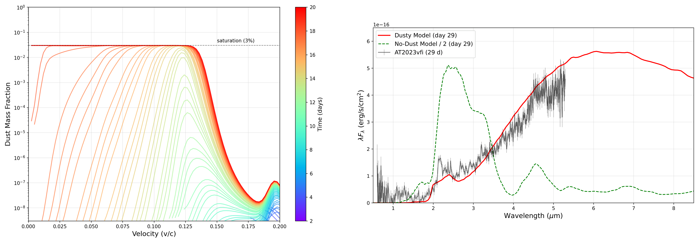<br />
图注：Left: dust mass fraction as a function of ejecta velocity for $\Mej=0.1\,\Msun$ in the radiative transfer calculation. Different colors indicate the temporal evolution. The dust mass fraction saturates at 3\%, corresponding to the assumed mass fraction of condensable refractory elements. Right: comparison of the model spectrum of a dusty kilonova (red solid curve) with the observed spectrum of AT2023vfi at 29\,days \(\citep{Gillanders2025}.\) The dashed curve shows the same model but without dust (see also Figure \ref{fig:spectrum_dust_nodust}).<br />
对应解读：对应“含尘与无尘光谱对比图”和“AT2023vfi 数据比较图”，也直接支撑关键图表导读中图4/图6关于辐射转移光谱和逐事件拟合的讨论。<br />
入选理由：这张图同时给出尘埃质量分数随速度的演化，以及含尘/无尘模型与 AT2023vfi 29 天观测谱的直接比较，是论文核心结论“重元素尘埃解释晚期红外发射”的最直接证据。右图能检查无尘模型是否低估红外、含尘模型是否改善谱形；左图则把这种改善与喷出物速度和成尘效率联系起来，科学价值最高。<br />
来源与置信度：\(arxiv_source\)；high；\(arxiv_source\) / \(kn_dust.tex\):figure[4]</p>
<p><strong>Fig03</strong><br />
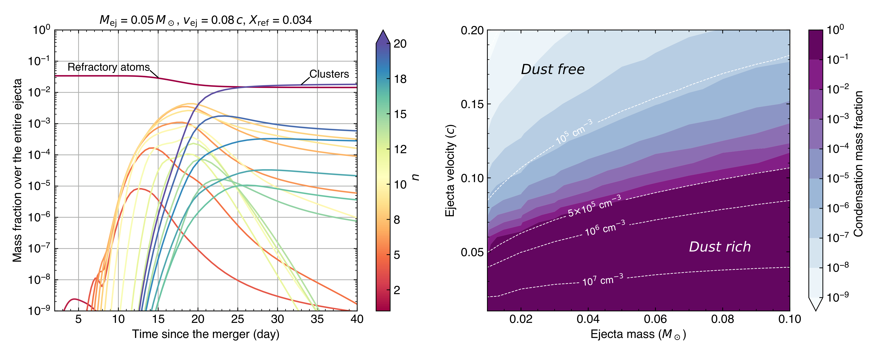<br />
图注：Left: evolution of the mass fraction of clusters in the ejecta for $\Mej=0.05\,\Msun$ and $\vej=0.08\,c$, with the condensable refractory-element mass fraction of $X_{\rm ref}\approx 3$\%. Different colors indicate clusters of different sizes as shown in the color bar. Right: condensation mass fraction, defined as the ratio of the dust mass $\Md$ to the total mass of refractory elements $M_{\rm ref}$, as a function of ejecta mass and velocity. The condensable refractory-element mass fraction is $\approx3$\%, such that $M_{\rm ref}\approx0.03\times\Mej$. The temperature evolution is assumed to be identical for all ejecta models. The dashed contours show the number density of the refractory elements in uniform-density ejecta at $\approx9.6\,$days when the ejecta temperature drops to 2000~K.<br />
对应解读：对应“成尘效率随时间的图”和“参数扫描或相图”，也对应关键图表导读中图3、图5关于凝聚效率和 (M_{\<br />
m ej})-(v_{\<br />
m ej}) 参数空间的讨论。<br />
入选理由：左图展示团簇质量分数随时间增长，右图展示凝聚质量分数在喷出物质量和速度空间中的分布，正好回答成尘是否能在膨胀稀释前完成、哪些 (M_{\<br />
m ej}) 和 (v_{\<br />
m ej}) 条件下有效成尘。它比单一模型曲线更能检验结论是否只依赖极端参数。<br />
来源与置信度：\(arxiv_source\)；high；\(arxiv_source\) / \(kn_dust.tex\):figure[3]</p>
<p><strong>Fig05</strong><br />
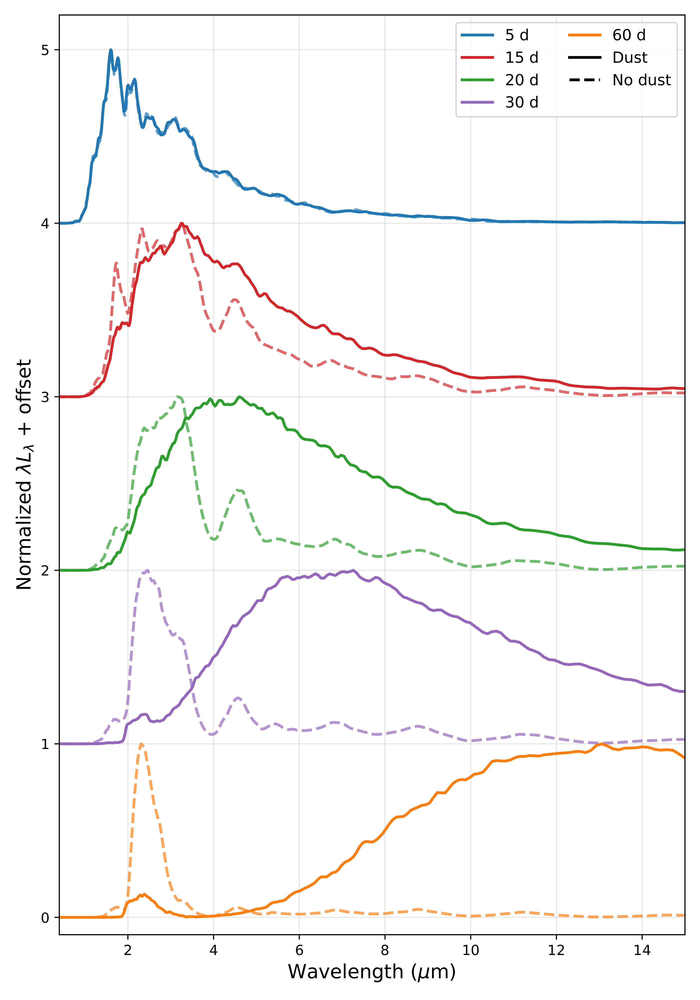<br />
图注：Synthetic spectra from the kilonova radiative transfer calculations with and without the inclusion of dust. When no dust is included, the ejecta at later times ($\gtrsim 20$\,day) is optically thin and the luminosity emerges from complexes of line emission, most prominently those near $2\,\mu$m. When dust is included, the dusty inner ejecta produce optically thick blackbody emission, while the dust-free outer layers produce a smaller component of optically thin emission visible as the peak near $2\,\mu$m.<br />
对应解读：对应“含尘与无尘光谱对比图”和模型拟合段落中关于红外残差、谱峰位置、连续谱形状以及短波端不过亮的讨论。<br />
入选理由：该图系统比较有尘和无尘辐射转移合成光谱，清楚展示无尘情况下晚期发射主要来自线复合体，而含尘后出现较冷的光学厚连续谱。它非常适合解释为什么尘埃模型不是简单提高总光度，而是改变红外连续谱形状和近红外光学深度。<br />
来源与置信度：\(arxiv_source\)；high；\(arxiv_source\) / \(kn_dust.tex\):figure[5]</p>
<p><strong>Fig02</strong><br />
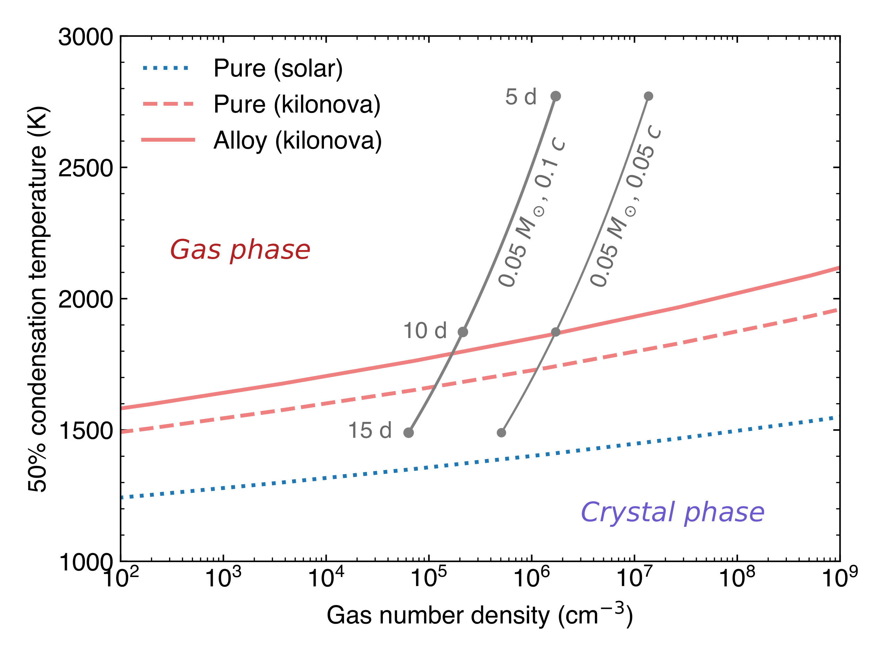<br />
图注：50\% condensation temperatures of W as a function of gas number density. The blue-dotted and red-dashed curves show pure W assuming the solar abundance \(\citep{Lodders2009}\) and the solar $r$-residuals \(\citep{Prantzos2020}\) in kilonova ejecta, respectively, while the red-solid curve shows an alloy of the third $r$-process peak elements with the solar $r$-residuals in kilonova ejecta. The gray curves indicate the evolutionary tracks of the ejecta with $\Mej=0.05\,\Msun$ and $\vej=0.1\,c$ (thick) and $0.05\,c$ (thin), assuming a condensable-element mass fraction of $\approx3$\% (see Section \ref{sec:kn_model}). The ejecta temperature, assuming a single power-law evolution, drops below the condensation temperatures at $\sim10$\,days after the merger.<br />
对应解读：对应“温度与密度演化图”，也对应关键图表导读中图2关于喷出物轨迹是否穿过凝聚区间、慢速和快速模型差别的讨论。<br />
入选理由：该图把 W 或第三峰合金的 50% 凝聚温度与气体数密度关系、以及不同速度喷出物演化轨迹画在同一坐标中，直接检验千新星喷出物是否进入耐火元素凝聚条件。它能避免只凭温度低于凝聚温度就判断成尘，而忽略密度和膨胀时间尺度。<br />
来源与置信度：\(arxiv_source\)；high；\(arxiv_source\) / \(kn_dust.tex\):figure[2]</p>
<p><strong>Fig06</strong><br />
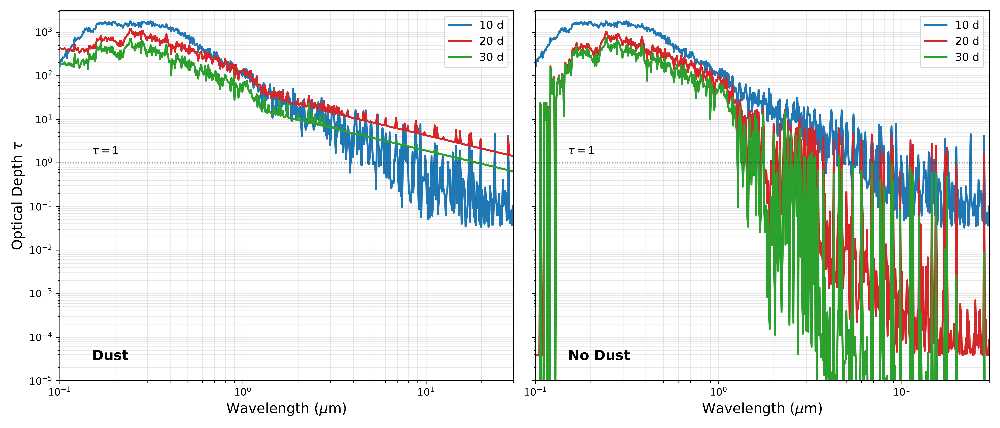<br />
图注：Radially optical depth of the ejecta as a function of wavelength for a radiative transfer model including dust (left panel) and not including dust (right panel). When dust is not included, the opacity is provided by blended line transitions, and falls off sharply at longer wavelengths. By 20 days, the dust free ejecta is extremely optically thin in the near infrared ($\sim 5\,\mu$m). When dust is included, the grains provide a smooth continuum opacity which keeps the ejecta optically thick through the near infrared for over 2 months.<br />
对应解读：对应模型拟合段落中关于尘埃不透明度 (\kappa_{\<br />
m d}(\lambda))、红外光学深度和含尘/无尘模型物理差异的讨论。<br />
入选理由：这张图显示有尘模型和无尘模型的径向光学深度随波长和时间的差异，说明尘埃如何在近红外维持连续不透明度，而无尘原子线不透明度在长波端迅速下降。它为光谱差异提供物理机制解释，支撑对系统误差和材料光学常数的讨论。<br />
来源与置信度：\(arxiv_source\)；high；\(arxiv_source\) / \(kn_dust.tex\):figure[6]</p>
<p><strong>Fig01</strong><br />
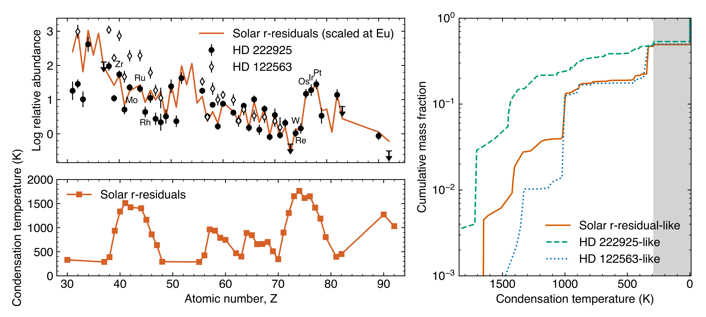<br />
图注：Top left: relative abundances of the solar $r$-residuals \(\citep{Prantzos2020}\) and of metal-poor $r$-process-enhanced stars HD~222925 \(\citep{Roederer2022}\) and HD~122563 \(\citep{Cowan2005, Honda2006, Roederer2012}.\) The relative abundances are scaled at Eu ($Z=63$). Bottom left: condensation temperatures of heavy elements assuming the solar $r$-residual pattern under kilonova conditions at 10\,days (see also Figure~\(\ref{fig:cond}\) for W). Right: cumulative mass fractions as a function of condensation temperature for different abundance models. The models are constructed to reproduce abundance patterns similar to the solar $r$-residuals or those of metal-poor $r$-process-enhanced stars (Figure~\(\ref{fig:elem-model}\) in Appendix \ref{sec:abun}). The gray shading indicates the fraction of elements for which condensation temperatures cannot be calculated owing to the lack of relevant data \(\citep{Alcock1984}.\) These elements are expected to lie at the low-temperature end \(\citep{Lodders2003, Wood2019}.\)<br />
对应解读：对应“温度与密度演化图”之前的组成与凝聚物理背景，也支撑详细解读中关于 Zr、W、Os 等耐火 \(r\)-过程元素是否具备成尘条件的说明。<br />
入选理由：该图展示不同 \(r\)-过程丰度模型、重元素凝聚温度和高凝聚温度元素的累计质量分数，能够说明为什么论文关注耐火重元素尘埃，以及可凝聚元素质量分数约几个百分点的来源。它不是观测拟合图，但对理解尘埃材料和组成不确定性很关键。<br />
来源与置信度：\(arxiv_source\)；high；\(arxiv_source\) / \(kn_dust.tex\):figure[1]</p>
<h4 id="_78">强相关工作</h4>
<p>这篇工作直接连接两类文献：一类是千新星基础模型和 GW170817/AT2017gfo 的多信使观测，另一类是晚期红外光谱中重元素识别与冷却机制研究。与早期千新星模型相比，本文把注意力从镧系不透明度主导的早期光变，推进到耐火 \(r\)-过程元素在低温非平衡环境下的凝聚。建议检索关键词包括 “kilonova dust formation”、 “r-process dust”、 “AT2017gfo late-time infrared”、 “AT2023vfi JWST kilonova”、 “GRB 230307A kilonova”。</p>
<p>它也与此前认为千新星成尘效率较低的经典成核研究形成对照。本文的关键分歧在方法：经典成核把成尘视为接近平衡的成核势垒问题，而本文强调动力学反应速率和膨胀时间竞争。读者如果要判断谁更可信，应比较两类模型对反应路径、表面能、过饱和度、低密度非平衡条件的假设。相反观点或张力可用关键词 “classical nucleation kilonova dust”、 “dust formation neutron star merger ejecta” 检索。</p>
<p><strong>同一事件 / 同类源线索</strong>：</p>
<ul>
<li><a href="https://arxiv.org/abs/2607.00433">https://arxiv.org/abs/2607.00433</a></li>
<li><a href="https://arxiv.org/abs/1710.05832">https://arxiv.org/abs/1710.05832</a></li>
<li><a href="https://arxiv.org/abs/1710.05435">https://arxiv.org/abs/1710.05435</a></li>
</ul>
<p><strong>相似工作</strong>：</p>
<ul>
<li><a href="https://arxiv.org/abs/1710.05832">https://arxiv.org/abs/1710.05832</a></li>
<li><a href="https://arxiv.org/abs/1710.05435">https://arxiv.org/abs/1710.05435</a></li>
</ul>
<p><strong>基础理论 / 方法工作</strong>：</p>
<ul>
<li><a href="https://arxiv.org/abs/astro-ph/9807272">https://arxiv.org/abs/astro-ph/9807272</a></li>
<li><a href="https://arxiv.org/abs/1001.5029">https://arxiv.org/abs/1001.5029</a></li>
<li><a href="https://arxiv.org/abs/1303.5788">https://arxiv.org/abs/1303.5788</a></li>
</ul>
<p><strong>相反观点 / 张力线索</strong>：</p>
<p>（未提供）</p>
</details>
<h3 id="8-distinct-spin-properties-and-astrophysical-origin-of-low-mass-binary-black-holes-in-gravitational-wave-data">8. Distinct spin properties and astrophysical origin of low mass binary black holes in gravitational wave data</h3>
<ul>
<li>来源：arXiv / astro-ph.HE</li>
<li>链接：https://arxiv.org/abs/2607.00565v1</li>
<li>作者：Elizabeth Flanagan, Jakob Stegmann, Isobel Romero-Shaw, Thomas Callister, Aleksandra Olejak, Fabio Antonini</li>
<li>评分：novelty 7/10，importance 8/10，relevance 8/10，final 8.70/10</li>
<li>推荐理由：GWTC-5中低质量双黑洞自旋分布转变的层级贝叶斯分析，对黑洞形成通道有较强约束；致密天体/GW方向重要，值得保留。</li>
</ul>
<p><strong>中文题目</strong>：引力波数据中低质量双黑洞的自旋性质与天体物理起源不同</p>
<p><strong>做了什么</strong>：这篇论文用层级贝叶斯方法重新分析了 \(GWTC\text{-}5.0\) 中双黑洞并合的有效自旋 \(\chi_{\rm eff}\) 分布，重点问一个具体问题：黑洞主星质量不同的系统，是否来自同一个自旋总体。作者把总体建模为两个自旋成分的混合，并让数据自己推断质量转折点。结果显示，在 \(\tilde m=15.2^{+4.3}_{-3.6}\,M_\odot\) 附近存在明显转折：低于该质量的双黑洞 \(\chi_{\rm eff}\) 分布较窄、峰值略偏正，但仍有显著负 \(\chi_{\rm eff}\) 支持；高于该质量的总体更宽，峰值接近 \(0\)，正负支持更对称。作者进一步用 mock catalog 说明这种质量相关转折不太可能只是有限样本涨落，并将低质量总体与场中多星系统、三体动力学、以及带大 natal kick 的孤立双星演化进行比较。</p>
<p><strong>为什么重要</strong>：双黑洞形成通道的关键判据之一是自旋方向是否与轨道角动量对齐。若低质量 \(\sim10\,M_\odot\) 双黑洞确实有区别于高质量系统的 \(\chi_{\rm eff}\) 分布，就意味着当前引力波样本已经开始分辨不同形成通道，而不仅是在测量一个统一的质量函数和自旋函数。这个结论直接影响我们如何解释低质量黑洞的诞生踢、共同包层演化、多星动力学和层级三体诱导并合。</p>
<p><strong>理论 / 观测 / 仪器方法价值</strong>：方法上的价值在于，作者不是预设一个固定质量分界，而是在层级总体模型中同时推断质量转折和两侧的 \(\chi_{\rm eff}\) 分布，并通过模拟星表检验伪转折概率。理论上的价值在于，它把观测到的低质量负 \(\chi_{\rm eff}\) 支持直接转化为对形成通道的限制：标准 fallback kick 的孤立双星模型较难解释，而强 natal kick 或层级三体动力学更自然。</p>
<p><strong>为什么应该关注</strong>：如果你关心双黑洞起源，这篇文章提供了一个清晰、可检验的说法：\(15\,M_\odot\) 以下的主星质量区间可能不是高质量双黑洞总体的低质量尾巴，而是另一种天体物理产物。未来 \(O5\) 及之后的事件数增加后，这个质量转折是否稳定、是否随红移或质量比变化，将成为区分孤立双星、多星系统和动力学通道的重要观测检验。</p>
<details class="paper-detail">
<summary>展开详细解读：文章讲解、背景、理论、重点章节、图表与相关工作</summary>
<h4 id="_79">文章详细讲解</h4>
<p>科学问题：双黑洞并合的有效自旋 \(\chi_{\rm eff}\) 是形成通道诊断中最直接的量之一，因为它同时编码了两个黑洞自旋大小和自旋与轨道角动量的夹角。孤立双星演化通常倾向于产生一定程度的自旋—轨道对齐，除非 natal kick 足够大或后续演化显著扰动轨道；动力学形成则更容易给出近似各向同性的自旋方向，从而产生正负更对称的 \(\chi_{\rm eff}\)。本文的核心问题不是简单问总体是否有负自旋，而是问 \(\chi_{\rm eff}\) 分布是否随黑洞主星质量 \(m_1\) 出现可统计识别的结构。</p>
<p>作者怎么做：论文使用 \(GWTC\text{-}5.0\) 双黑洞样本，对总体进行层级贝叶斯推断。关键建模思想是把总体写成两个自旋成分，并引入一个从数据中推断的转折质量 \(\tilde m\)。在 \(m_1<\tilde m\) 和 \(m_1>\tilde m\) 的系统中，\(\chi_{\rm eff}\) 的总体分布允许有不同宽度、不同峰位和不同负自旋支持。这样可以避免把整个样本强行压缩成一个质量无关的自旋总体，也避免人为指定 \(10\,M_\odot\)、\(20\,M_\odot\) 之类的分界。</p>
<p>关键结果：作者报告在 \(\tilde m=15.2^{+4.3}_{-3.6}\,M_\odot\) 附近有强证据支持自旋分布转折。低质量端的 \(\chi_{\rm eff}\) 分布较窄，峰值在小的正值，但负 \(\chi_{\rm eff}\) 区域仍有显著概率密度；高质量端分布更宽，峰值与 \(\chi_{\rm eff}\simeq0\) 相容，正负两侧支持大致相近。mock catalog 分析显示，如果真实总体的 \(\chi_{\rm eff}\) 与质量无关，有限样本涨落不容易产生如此清晰的转折。因此，低质量 \(\sim10\,M_\odot\) 双黑洞很可能是一个独立或至少占优的子总体。</p>
<p>物理解释：作者把低质量总体与场中 massive stellar multiples 的形成情景联系起来。若采用孤立双星演化，只有在低质量黑洞 natal kick 普遍很大、量级达到 \(\gtrsim100\,\rm km\,s^{-1}\) 时，才较容易把自旋轴和轨道角动量扰乱到产生明显负 \(\chi_{\rm eff}\) 支持。标准 fallback kick 模型由于对较大 fallback 的黑洞给出较小 kick，通常保留较强对齐，因而难以解释低质量端的负 \(\chi_{\rm eff}\)。另一种自然解释是层级三体动力学，通过 Kozai--Lidov 型轨道激发和多体相互作用改变轨道取向，产生混合的自旋投影。</p>
<p>局限和下一步：结论仍依赖事件选择、波形系统误差、总体模型的参数化、质量—自旋退化以及选择效应校正。尤其在低质量端，单个事件的 \(\chi_{\rm eff}\) 后验可能较宽，层级结论主要来自整体分布而非某一事件。下一步需要用 \(O5\) 和更远期目录检验转折质量是否稳定，检查其是否随质量比 \(q\)、红移 \(z\)、有效进动参数 \(\chi_p\) 或金属丰度相关模型变化，并与完整的种群合成和三体动力学模拟做联合模型比较。</p>
<h4 id="_80">关键结果是怎么做出来的</h4>
<p>数据和样本选择方面，论文以 \(GWTC\text{-}5.0\) 中的双黑洞并合为基础，分析对象是每个事件的参数估计后验，而不是把每个事件压缩成一个最佳拟合点。对这类工作来说，关键是同时处理探测选择效应和单事件测量不确定性：低质量系统的探测体积较小，高质量系统更容易被探测，而 \(m_1\)、质量比 \(q\)、距离和 \(\chi_{\rm eff}\) 在波形相位中也存在相关性。作者的层级推断把事件后验重新加权到总体模型下，从而估计真实天体物理总体，而不是观测到的触发总体。</p>
<p>最重要的统计量是转折质量 \(\tilde m\) 及转折两侧 \(\chi_{\rm eff}\) 后验预测分布的差异。作者没有固定分界，而是在模型中让 \(\tilde m\) 作为超参数被数据约束，得到 \(15.2^{+4.3}_{-3.6}\,M_\odot\)。读者应重点检查显示 \(\tilde m\) 后验的图，以及低质量和高质量子总体 \(\chi_{\rm eff}\) posterior predictive distribution 的对比图。若两侧分布的可信区间在峰位、宽度和负自旋积分概率上明显分离，这才是文章结论的主体证据。</p>
<p>显著性和模型比较方面，论文用 mock catalog 分析来回答一个常见质疑：在当前事件数有限、单事件后验较宽的情况下，是否可能从一个质量无关的 \(\chi_{\rm eff}\) 总体中偶然抽出一个看似有质量转折的样本。作者生成或使用模拟目录，在无真实质量依赖的前提下重复层级分析，比较所得转折强度和真实数据中转折的相对位置。结论是，真实数据所显示的结构不太像有限样本涨落。这一部分的关键不是某个单独事件，而是总体模型在真实目录与 mock 目录上的行为差异。</p>
<p>支撑结论的图表应包括：质量—\(\chi_{\rm eff}\) 平面上的事件后验或总体密度、\(\tilde m\) 的边缘后验、转折两侧 \(\chi_{\rm eff}\) 的 posterior predictive distribution、以及 mock catalog 中伪转折分布与真实数据结果的比较。若论文给出 Bayes factor、posterior odds、信息准则或 posterior predictive \(p\)-value，读者应核对它们是否来自包含选择效应的完整似然，而不是仅基于观测事件的经验分布。</p>
<p>系统误差主要来自四类。第一是波形系统误差，尤其自旋进动、偏心率或高阶模处理不足时可能影响 \(\chi_{\rm eff}\) 后验。第二是总体模型参数化，双成分模型可能把连续变化误识别为突变。第三是选择效应，探测概率对质量、自旋和距离均有依赖。第四是事件分类和低信噪比事件处理，边缘事件的纳入或剔除可能改变低质量端权重。稳健性检验应查看改变事件阈值、改变自旋分布族、改变质量模型和改变选择函数估计后，\(\tilde m\) 与两侧 \(\chi_{\rm eff}\) 差异是否仍存在。</p>
<details class="paper-subdetail">
<summary>展开背景、理论、公式、模型、章节和图表导读</summary>
<h4 id="_81">背景知识</h4>
<p>双黑洞并合的质量分布和自旋分布是引力波天体物理的两个核心观测量。质量告诉我们恒星演化、金属丰度、超新星爆发、pair-instability 物理和动力学交换的结果；自旋则更直接地记录了形成前后的角动量历史。特别是有效自旋 \(\chi_{\rm eff}\)，由于在引力波相位中测得相对稳健，已经成为区分形成通道的常用指标。</p>
<p>历史上，LIGO--Virgo--KAGRA 早期目录显示多数双黑洞的 \(\chi_{\rm eff}\) 接近 \(0\)，这既可以解释为黑洞自旋本身较小，也可以解释为自旋方向近似各向同性，还可以是两者混合。随着事件数增加，研究重点从“总体自旋是否非零”转向“不同质量、红移或质量比的子总体是否有不同自旋”。本文正是在这个转变背景下提出：低主星质量系统可能具有独立的自旋分布。</p>
<p>为什么现在值得重新看？因为 \(GWTC\text{-}5.0\) 级别的样本已经足以支撑比单一总体更复杂的层级模型。早期目录中，事件数少、选择效应强、个别事件权重大，很难可靠讨论质量相关的自旋结构。现在可以把 \(m_1\) 作为连续变量或分段变量纳入总体模型，并通过 posterior predictive check 与 mock catalog 评估是否过拟合。</p>
<p>这个领域的常见误区之一是把单事件的负 \(\chi_{\rm eff}\) 后验直接等同于动力学形成。事实上，低信噪比事件的 \(\chi_{\rm eff}\) 后验可受先验、质量比退化和选择效应影响；真正有意义的是总体层级推断后的负自旋支持是否显著。另一个误区是认为孤立双星必然只给正 \(\chi_{\rm eff}\)，动力学通道必然只给对称的 \(\chi_{\rm eff}\)。实际情况取决于 natal kick、潮汐同步、共同包层、恒星风、三体扰动和星团环境等多个因素。</p>
<p>低质量黑洞尤其有趣，因为它们与银河系 X 射线双星黑洞质量范围相邻，也更接近普通大质量恒星坍缩产物。若低质量双黑洞显示出负 \(\chi_{\rm eff}\) 支持，那么要么这些黑洞出生时受到较大 kick，要么其轨道角动量在形成后被动力学过程显著重定向。这使低质量端成为检验超新星引擎、fallback、三体动力学和多星比例的敏感窗口。</p>
<h4 id="_82">基础理论 / 方法脉络</h4>
<p>有效自旋 \(\chi_{\rm eff}\) 是双黑洞两个自旋沿轨道角动量方向的质量加权投影。它之所以重要，是因为在准圆轨道、缓慢进动近似下，\(\chi_{\rm eff}\) 对 inspiral 相位的主导自旋修正最明显，通常比单个自旋大小或面内自旋参数更容易测量。正 \(\chi_{\rm eff}\) 表示总投影大致与轨道角动量同向，负值表示至少有一个较大自旋分量反向。</p>
<p>从形成通道看，孤立双星演化中两颗恒星从共同轨道中形成黑洞，若超新星 kick 不强、共同包层和潮汐过程没有剧烈倾斜轨道，则黑洞自旋倾向于与轨道角动量对齐，产生偏正的 \(\chi_{\rm eff}\)。如果 natal kick 大到足以改变轨道平面，或者形成前后经历多星系统的长期 secular 扰动，则自旋—轨道夹角可以变大，甚至产生负 \(\chi_{\rm eff}\)。动力学形成，如星团交换或层级三体诱导并合，则通常更容易给出接近各向同性的自旋方向。</p>
<p>本文采用的模型思想是总体层级建模。每个事件 \(i\) 有数据 \(d_i\) 和源参数 \(\theta_i\)，其中包括 \(m_1\)、\(m_2\)、\(\chi_{\rm eff}\)、红移等。总体由超参数 \(\Lambda\) 描述，例如质量分布、自旋分布和转折质量 \(\tilde m\)。层级推断的目标不是重新测每个事件，而是通过所有事件的后验样本和探测效率，反推出真实宇宙中的总体分布。</p>
<p>关键观测系统误差包括质量—自旋退化、选择效应和波形模型。质量—自旋退化来自 inspiral 相位中质量比和自旋项的相关贡献；选择效应来自正 \(\chi_{\rm eff}\) 系统在某些质量范围内可延长 inspiral、改变探测距离；波形系统误差则来自进动、高阶模、偏心率和校准误差。层级模型必须通过选择函数 \(\alpha(\Lambda)\) 校正探测概率，否则观测到的 \(\chi_{\rm eff}\) 分布不等于天体物理总体。</p>
<p>本文的具体假设可理解为：自旋总体不是单一的质量无关函数，而在 \(m_1\) 经过 \(\tilde m\) 时由一个成分过渡到另一个成分。这里的“转折”不必被解释为自然界中严格阶跃的物理边界，它也可能是多种形成通道混合比例随质量变化的有效描述。读者应把 \(\tilde m\) 看成总体模型中的可观测诊断量，而不是某个单颗恒星演化阈值的直接测量。</p>
<h4 id="_83">公式与推导</h4>
<p>第一步是定义双黑洞的有效自旋。对质量 \(m_1\)、\(m_2\)，无量纲自旋 \(\boldsymbol{\chi}_1\)、\(\boldsymbol{\chi}_2\)，轨道角动量方向 \(\hat{\mathbf L}\)，有</p>
<div class="math-display">\[\chi_{\rm eff}=\frac{m_1\boldsymbol{\chi}_1\cdot\hat{\mathbf L}+m_2\boldsymbol{\chi}_2\cdot\hat{\mathbf L}}{m_1+m_2}\,.\]</div>
<p>这里 \(\chi_{\rm eff}\) 是 \([-1,1]\) 内的质量加权投影；若自旋与轨道角动量整体同向，它偏正，若存在反向投影，它可为负。</p>
<p>第二步把单事件参数估计写成贝叶斯问题。给定事件数据 \(d_i\)、源参数 \(\theta_i\) 和单事件先验 \(\pi_0(\theta_i)\)，后验满足</p>
<div class="math-display">\[p(\theta_i|d_i)=\frac{\mathcal L(d_i|\theta_i)\pi_0(\theta_i)}{Z_i}\,.\]</div>
<p>其中 \(\mathcal L(d_i|\theta_i)\) 是波形似然，\(Z_i\) 是单事件证据。层级推断通常用公开后验样本，通过重加权把 \(\pi_0\) 替换为总体分布。</p>
<p>第三步定义总体分布。若总体超参数为 \(\Lambda\)，源参数概率密度可写成</p>
<div class="math-display">\[p(\theta|\Lambda)=p(m_1,m_2,z|\Lambda_m)\,p(\chi_{\rm eff}|m_1,\Lambda_\chi)\,p(\mathrm{other}|\Lambda)\,.\]</div>
<p>这里 \(\Lambda_m\) 控制质量和红移分布，\(\Lambda_\chi\) 控制自旋分布。本文的关键是允许 \(p(\chi_{\rm eff}|m_1,\Lambda_\chi)\) 随主星质量改变。</p>
<p>第四步可用一个分段或混合函数表达质量转折。理想化写法为</p>
<div class="math-display">\[p(\chi_{\rm eff}|m_1,\Lambda_\chi)=H(\tilde m-m_1)p_{\rm low}(\chi_{\rm eff}|\lambda_{\rm low})+H(m_1-\tilde m)p_{\rm high}(\chi_{\rm eff}|\lambda_{\rm high})\,.\]</div>
<p>其中 \(H\) 是阶跃函数，\(\tilde m\) 是转折质量，\(p_{\rm low}\) 和 \(p_{\rm high}\) 分别描述低质量和高质量自旋总体。实际论文可能采用平滑混合或更灵活的分布族，但物理含义相同：让数据决定两侧是否不同。</p>
<p>第五步加入探测选择效应。给定探测概率 \(p_{\rm det}(\theta)\)，总体的选择因子为</p>
<div class="math-display">\[\alpha(\Lambda)=\int p_{\rm det}(\theta)p(\theta|\Lambda)\,d\theta\,.\]</div>
<p>它表示来自总体 \(\Lambda\) 的源被目录收录的平均概率。若忽略 \(\alpha(\Lambda)\)，高质量和特定自旋系统会因更易探测而被误认为在宇宙中更常见。</p>
<p>第六步写出固定事件数条件下的层级似然。对 \(N\) 个事件，有</p>
<div class="math-display">\[\mathcal L(\{d_i\}|\Lambda)\propto\prod_{i=1}^{N}\frac{\int \mathcal L(d_i|\theta)p(\theta|\Lambda)\,d\theta}{\alpha(\Lambda)}\,.\]</div>
<p>若同时拟合并合率，还需包含泊松项；但用于形状推断时，上式展示了核心结构：每个事件贡献一个总体加权积分，整个目录再除以选择效应。</p>
<p>第七步用后验样本近似事件积分。若事件 \(i\) 有 \(S_i\) 个后验样本 \(\theta_{ij}\)，则</p>
<div class="math-display">\[\int \mathcal L(d_i|\theta)p(\theta|\Lambda)d\theta\approx \frac{Z_i}{S_i}\sum_{j=1}^{S_i}\frac{p(\theta_{ij}|\Lambda)}{\pi_0(\theta_{ij})}\,.\]</div>
<p>这说明层级分析实质上是在问：哪些总体模型能更高效地解释每个事件后验样本，同时不被探测选择偏置惩罚。</p>
<p>第八步比较有无质量转折的模型。若 \(M_1\) 为带转折模型、\(M_0\) 为质量无关自旋模型，Bayes 因子可写为</p>
<div class="math-display">\[\mathcal B_{10}=\frac{\int \mathcal L(\{d_i\}|\Lambda_1,M_1)\pi(\Lambda_1|M_1)d\Lambda_1}{\int \mathcal L(\{d_i\}|\Lambda_0,M_0)\pi(\Lambda_0|M_0)d\Lambda_0}\,.\]</div>
<p>若 \(\mathcal B_{10}\) 明显大于 \(1\)，数据更支持质量相关自旋模型；但解释时还要检查先验体积和模型灵活度。</p>
<p>第九步定义负自旋支持这一可解释诊断量。对低质量总体，有</p>
<div class="math-display">\[P_{\rm low}^{-}=\int_{-1}^{0}p_{\rm low}(\chi_{\rm eff}|\lambda_{\rm low})\,d\chi_{\rm eff}\,.\]</div>
<p>类似可定义 \(P_{\rm high}^{-}\)。本文所谓低质量端有显著负 \(\chi_{\rm eff}\) 支持，最终可转化为这类积分概率及其可信区间，而不仅是某些事件的最佳拟合值小于 \(0\)。</p>
<h4 id="_84">模型拟合 / 应用方法</h4>
<p>这类分析拟合的不是单个事件的 \(m_1\) 或 \(\chi_{\rm eff}\) 点估计，而是总体超参数。本文的核心拟合量包括转折质量 \(\tilde m\)、低质量端自旋分布参数 \(\lambda_{\rm low}\)、高质量端自旋分布参数 \(\lambda_{\rm high}\)，以及必要的质量分布、质量比和红移分布参数。实际推断要对所有事件后验样本做重加权，并把选择效应 \(\alpha(\Lambda)\) 纳入似然。</p>
<p>先验选择很重要。若 \(\tilde m\) 的先验范围过宽或过窄，会影响转折证据和边缘后验；若自旋分布族过于灵活，可能把噪声拟合为结构；若过于刚性，又可能把真实的连续变化误读为单一转折。读者应检查作者是否比较了不同自旋分布参数化、不同质量模型和不同事件选择阈值，以及 \(\tilde m\) 后验是否由数据集中约束而非贴着先验边界。</p>
<p>残差诊断应围绕 posterior predictive distribution 展开。一个合格的模型不仅要给出高似然，还应能重现观测目录中 \(m_1\) 与 \(\chi_{\rm eff}\) 的联合结构。例如，从拟合总体抽样并经过探测选择后，模拟目录中的低质量 \(\chi_{\rm eff}\) 分布是否类似真实目录？高质量端是否过宽或过窄？负自旋事件数量、质量分布峰、以及 \(\chi_{\rm eff}\) 的不确定度分布是否被同时解释？这些比只看转折质量数值更重要。</p>
<p>主要退化关系包括 \(\chi_{\rm eff}\) 与质量比 \(q\) 的波形退化、质量分布与自旋选择效应的退化、以及多通道混合比例与单通道自旋宽度之间的退化。一个更宽的高质量 \(\chi_{\rm eff}\) 分布可以解释为动力学贡献增加，也可能解释为高质量黑洞自旋大小分布更宽；低质量端的负支持可以来自轨道倾斜，也可以来自少数高权重事件。需要通过 \(\chi_p\)、偏心率、宿主环境或红移演化进一步打破这些退化。</p>
<p>模型可能失败的场景也很清楚。如果真实总体是多个形成通道随质量平滑变化，分段模型给出的 \(\tilde m\) 只是有效描述，而非物理阈值。如果存在未建模的波形偏差，特别是低质量长 inspiral 信号中校准或自旋进动处理偏差，\(\chi_{\rm eff}\) 分布可能被系统性拉宽。若未来目录显示转折位置随事件选择剧烈变化，或 low-mass posterior predictive check 无法复现新增事件，那么当前解释就需要被修正。</p>
<h4 id="_85">重点章节 / 结果段落怎么读</h4>
<p>数据与样本部分应先读。重点看作者如何定义 \(GWTC\text{-}5.0\) 双黑洞样本，是否包含边缘候选体，采用哪些事件后验和波形版本，以及如何处理探测选择效应。这里决定了后续所有总体结论的输入。</p>
<p>总体模型部分是全文技术核心。读者应关注 \(\chi_{\rm eff}\) 分布如何参数化，低质量和高质量成分如何连接，\(\tilde m\) 的先验如何设定，质量分布是否与自旋分布联合拟合。尤其要判断模型是否允许足够灵活的质量—自旋相关性，还是只测试了一个特定的二分结构。</p>
<p>主结果部分应围绕 \(\tilde m=15.2^{+4.3}_{-3.6}\,M_\odot\) 和两侧 \(\chi_{\rm eff}\) posterior predictive distribution 来读。不要只看转折质量的中位数，还要看可信区间、与先验的相对收缩、低高质量分布之间的重叠程度，以及负 \(\chi_{\rm eff}\) 积分概率。</p>
<p>模拟目录或稳健性检验部分用于判断结论是否过拟合。这里应检查在质量无关自旋总体下，mock catalog 多大概率会恢复类似强度的转折；改变样本、先验、质量模型、自旋模型后结果是否稳定。若这些检验充分，文章的统计说服力会明显增强。</p>
<p>天体物理解释部分要和前面的统计结论分开读。统计上看到低质量自旋分布不同，并不自动等于某一具体通道。作者比较了孤立双星强 kick、标准 fallback kick 和层级三体动力学等解释；读者应关注哪些模型被排除、哪些只是“ broadly consistent ”，以及这些比较是否来自定量种群合成还是定性物理判断。</p>
<h4 id="_86">建议重点查看的图表</h4>
<ol>
<li>
<p>质量—\(\chi_{\rm eff}\) 联合分布图：看低质量事件是否系统性集中在窄的略正 \(\chi_{\rm eff}\) 区域，同时是否确有负 \(\chi_{\rm eff}\) 后验支持；注意单事件误差条或后验云而非点估计。</p>
</li>
<li>
<p>转折质量 \(\tilde m\) 后验图：看后验是否在 \(15\,M_\odot\) 左右形成清晰峰，是否远离先验边界，以及 \(68\%\) 和 \(90\%\) 可信区间有多宽。</p>
</li>
<li>
<p>低质量与高质量 \(\chi_{\rm eff}\) posterior predictive distribution 对比图：看两侧峰值、宽度、负自旋面积和可信带是否真正分离。</p>
</li>
<li>
<p>mock catalog 检验图：看无质量依赖模型生成的模拟目录中，恢复出类似转折的频率；真实数据结果应位于模拟分布的尾部才有说服力。</p>
</li>
<li>
<p>模型比较或 Bayes factor 表：看带转折模型相对于质量无关模型的证据增益，也要看是否惩罚了额外自由度。</p>
</li>
<li>
<p>稳健性检验表或附录图：看改变事件样本、波形、先验、质量分布参数化或自旋分布族后，\(\tilde m\) 和低质量负自旋支持是否稳定。</p>
</li>
<li>
<p>形成通道比较图：若有种群合成或三体模拟结果，应看模型预测的 \(\chi_{\rm eff}\) 分布是否经过同样选择效应处理后再与数据比较。</p>
</li>
</ol>
<h4 id="_87">关键图表逐图导读</h4>
<p>图 1：若论文首先给出 \(m_1\) 与 \(\chi_{\rm eff}\) 的事件分布，横轴通常是主星质量 \(m_1\)，纵轴是有效自旋 \(\chi_{\rm eff}\)。数据点或后验云表示单事件测量，背景阴影可能表示总体预测密度。读图时不要把每个事件的中位数当成真实值；应看低质量区整体是否偏向窄分布，以及负 \(\chi_{\rm eff}\) 区域是否由多个事件的后验共同支撑。</p>
<p>图 2：转折质量 \(\tilde m\) 的边缘后验图通常是本文最关键图之一。横轴是 \(\tilde m\)，纵轴是后验概率密度，可能叠加先验。主要结论是后验在 \(15.2\,M_\odot\) 附近收缩并形成峰。陷阱是：如果先验也在该区间有强结构，或后验靠近允许范围边界，证据会弱得多；因此要同时比较先验和后验。</p>
<p>图 3：低质量与高质量 \(\chi_{\rm eff}\) posterior predictive distribution 对比图应显示两条或两组可信带。横轴是 \(\chi_{\rm eff}\)，纵轴是概率密度。低质量曲线应较窄、峰值略正但跨入负值，高质量曲线更宽且峰值接近 \(0\)。读图时应看面积而非峰高，因为分布宽度不同会改变峰值高度。</p>
<p>图 4：mock catalog 检验图可能展示在质量无关自旋总体下恢复的“伪转折强度”分布，并用竖线标出真实数据。横轴可能是某种检验统计量、Bayes factor、\(\tilde m\) 约束强度或两侧分布距离，纵轴是模拟目录频数。若真实数据竖线位于模拟分布尾部，说明有限样本涨落解释不充分。陷阱是 mock catalog 必须与真实目录有类似探测选择和事件数，否则比较会失真。</p>
<p>图 5：模型比较或稳健性图可能把不同先验、不同质量模型、不同事件选择下的 \(\tilde m\) 和负自旋概率画成误差条。横轴是模型设定，纵轴是超参数估计。真正稳健的结论应表现为多数设定下转折质量和两侧自旋差异一致，而不是只在某一特定设定下出现。</p>
<p>图 6：形成通道解释图若存在，可能比较观测推断的 \(\chi_{\rm eff}\) 分布与孤立双星标准 fallback kick、强 natal kick、层级三体模型的预测。读者应检查这些模型线是否经过探测选择和测量误差卷积；未经卷积的理论本征分布与观测 posterior predictive distribution 直接比较，容易夸大差异。</p>
</details>
<h4 id="_88">论文原图 / 可嵌入图片</h4>
<p><strong>Fig01</strong><br />
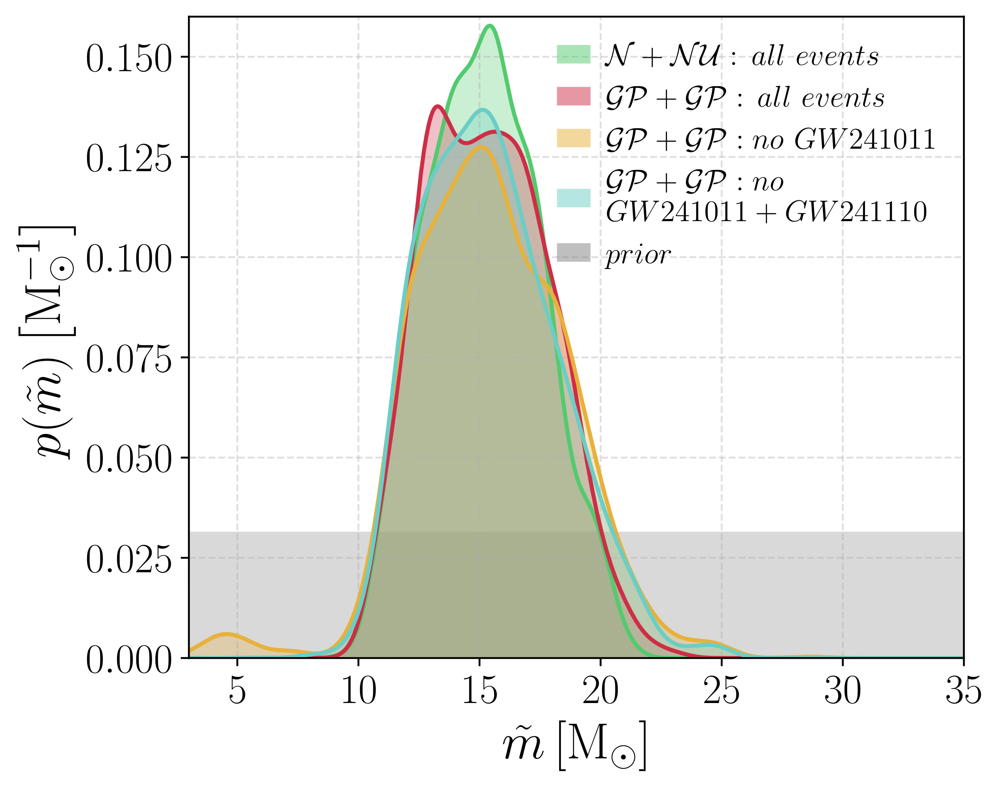<br />
图注：Mass transition posteriors inferred using the $\mathcal{N} + \mathcal{NU}$ model and the $\mathcal{GP} + \mathcal{GP}$. Also shown is the mass transition inferred when using the $\mathcal{GP} + \mathcal{GP}$ model and removing both GW241011 and GW241110.<br />
对应解读：“建议重点查看的图表”第2项转折质量 \(\	ilde m\) 后验图；“关键图表逐图导读”图2；模型拟合段落关于 \(\	ilde m\) 是否由数据约束而非贴近先验边界。<br />
入选理由：这是全文核心证据图，直接展示质量转折 \(\	ilde m\) 的后验，并比较 \(\mathcal{N}+\mathcal{NU}\) 与 \(\mathcal{GP}+\mathcal{GP}\) 两种自旋模型，还包含移除 GW241011 和 GW241110 后的结果，可同时支撑转折质量、模型依赖性和稳健性讨论。<br />
来源与置信度：\(arxiv_source\)；high；\(arxiv_source\) / main.tex:figure[1]</p>
<p><strong>Fig02</strong><br />
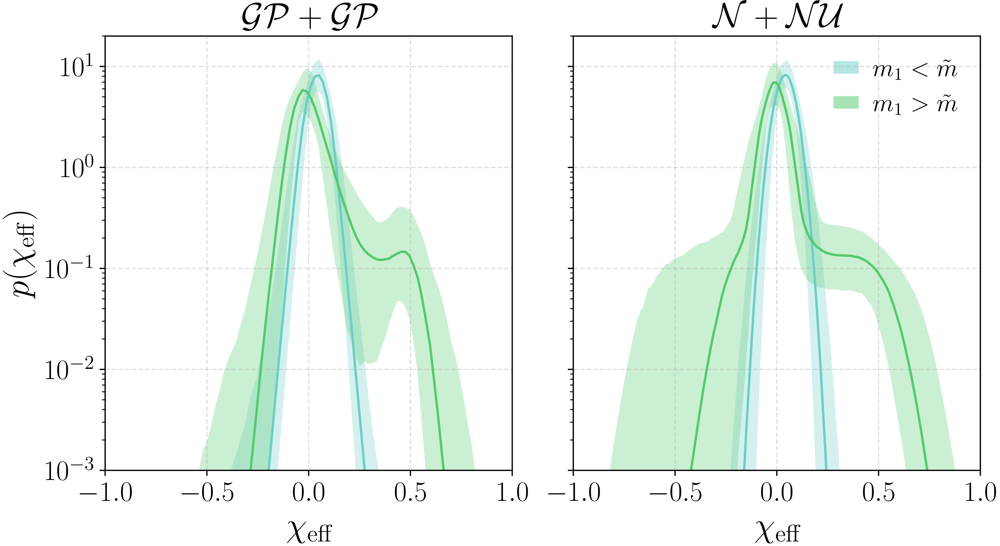<br />
图注：The effective spin posteriors for both the non-parametric $\mathcal{GP} + \mathcal{GP}$ (left) and parametric $\mathcal{N} + \mathcal{NU}$ (right) models. For the effective spin posteriors, the shaded area represents the $90 \%$ confidence interval and the solid lines are the recovered median of the distribution.<br />
对应解读：“建议重点查看的图表”第3项低质量与高质量 (\chi_{\<br />
m eff}) posterior predictive distribution 对比图；“关键图表逐图导读”图3；模型拟合段落关于 posterior predictive distribution 的残差诊断。<br />
入选理由：该图直接给出 \(\mathcal{GP}+\mathcal{GP}\) 与 \(\mathcal{N}+\mathcal{NU}\) 模型下的有效自旋分布后验，含90%置信区间和中位数曲线，是判断低质量与高质量 (\chi_{\<br />
m eff}) 分布峰位、宽度和负自旋支持是否分离的最关键图。<br />
来源与置信度：\(arxiv_source\)；high；\(arxiv_source\) / main.tex:figure[2]</p>
<p><strong>Fig07</strong><br />
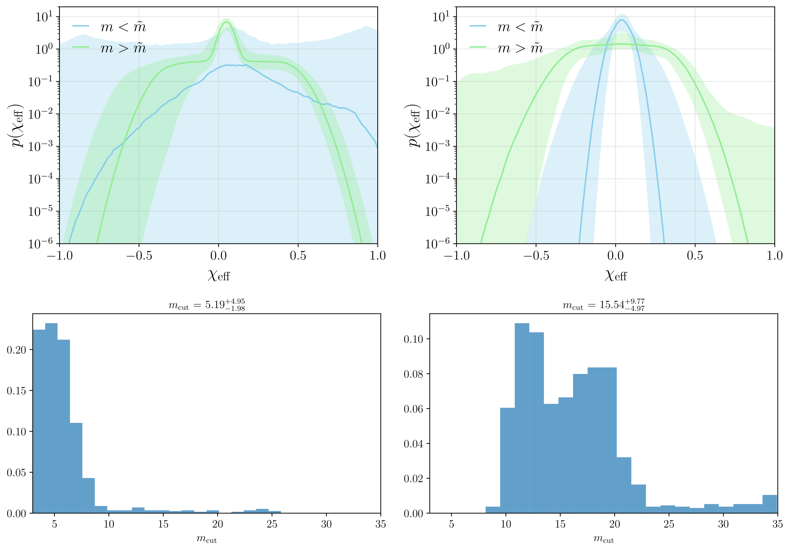<br />
图注：Top row: Inferred $\chi_\mathrm{eff}$ distribution on two mock populations using the $\mathcal{NU}+\mathcal{U}$ model. Bottom row: Inferred $\tilde{m}$ distribution for the same two mock populations. On the left we show a typical case where the posterior of $\tilde{m}$ rails against the lower boundary of the prior, and on the right we show a case with a recovered transition-like feature.<br />
对应解读：“建议重点查看的图表”第4项 mock catalog 检验图；“关键图表逐图导读”图4；详细解读中关于有限样本涨落难以产生清晰转折的论证。<br />
入选理由：该图展示 mock populations 中恢复的 (\chi_{\<br />
m eff}) 分布和 \(\	ilde m\) 后验，包含典型无显著转折和偶然恢复转折特征的对照，是检验真实数据转折是否可能由质量无关总体的有限样本涨落造成的核心证据。<br />
来源与置信度：\(arxiv_source\)；high；\(arxiv_source\) / main.tex:figure[7]</p>
<p><strong>Fig03</strong><br />
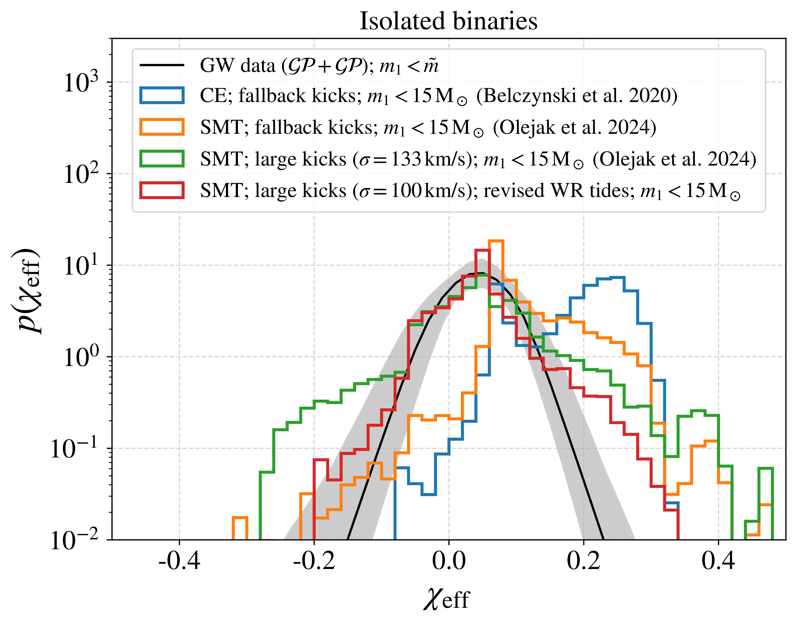<br />
图注：Comparison between the $\chi_{\rm eff}$ distribution inferred for the low-mass subpopulation ($m_1 < \tilde{m}$) using the non-parametric $\mathcal{GP}+\mathcal{GP}$ model and predictions from isolated binary evolution models. The blue curve shows model M30.B from \(\cite{Belczynski2020b},\) in which BBH mergers form through common-envelope evolution, and BHs receive fallback-modulated natal kicks. The orange curve corresponds to the standard stable mass-transfer model from \(\cite{Olejak2024},\) which also adopts fallback-modulated natal kicks. The green curve shows a variant of the stable mass-transfer model from ~\(\cite{Olejak2024}\) but with high natal kicks drawn from a Maxwellian distribution with dispersion $\sigma = 133\,\mathrm{km\,s^{-1}}$ and no fallback reduction. The red curve shows a new model with high natal kicks drawn from a Maxwellian distribution with dispersion $\sigma = 100\,\mathrm{km\,s^{-1}}$, also without fallback reduction, with reduced tidal spin-up in BH - helium core binaries. For each model, only BBH mergers with primary masses $m_1 < 15\,M_\odot$ are included.<br />
对应解读：“建议重点查看的图表”第7项形成通道比较图；“关键图表逐图导读”图6；物理解释段关于标准 fallback kick、强 natal kick 与低质量负 (\chi_{\<br />
m eff}) 支持的比较。<br />
入选理由：该图把低质量子总体的观测推断 (\chi_{\<br />
m eff}) 分布与多种孤立双星演化模型直接比较，尤其区分 fallback-modulated natal kicks 与高 natal kick 模型，最能支撑论文关于标准孤立双星模型难以解释低质量负自旋支持的结论。<br />
来源与置信度：\(arxiv_source\)；high；\(arxiv_source\) / main.tex:figure[3]</p>
<p><strong>Fig04</strong><br />
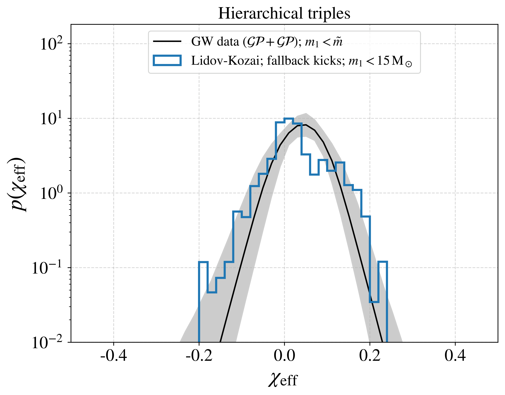<br />
图注：Comparison between the $\chi_{\rm eff}$ distribution inferred for the low-mass subpopulation ($m_1<\tilde{m}$) in the non-parametric $\mathcal{GP} + \mathcal{GP}$ analysis and the expected distribution from BBH mergers that form in hierarchical triples. For the latter, we show the simulation outcomes of a triple population synthesis study that assumes the standard fallback model for natal kicks at BH formation. The BH component spin magnitudes are independently drawn from a truncated normal distribution between $\chi_{\rm min}=0$ and $\chi_{\rm max}=1$ with $\mu=0.15$ and $\sigma=0.05$. We only show the subset of mergers with $m_1<15\,\rm M_\odot$<br />
对应解读：“建议重点查看的图表”第7项形成通道比较图；“关键图表逐图导读”图6；物理解释段关于层级三体动力学形成通道的讨论。<br />
入选理由：该图将低质量 (\chi_{\<br />
m eff}) 推断结果与 hierarchical triples 种群合成预测比较，直接对应论文提出的另一种低质量双黑洞起源解释，可与 Fig03 共同展示不同形成通道对负 (\chi_{\<br />
m eff}) 支持的解释能力。<br />
来源与置信度：\(arxiv_source\)；high；\(arxiv_source\) / main.tex:figure[4]</p>
<p><strong>Fig06</strong><br />
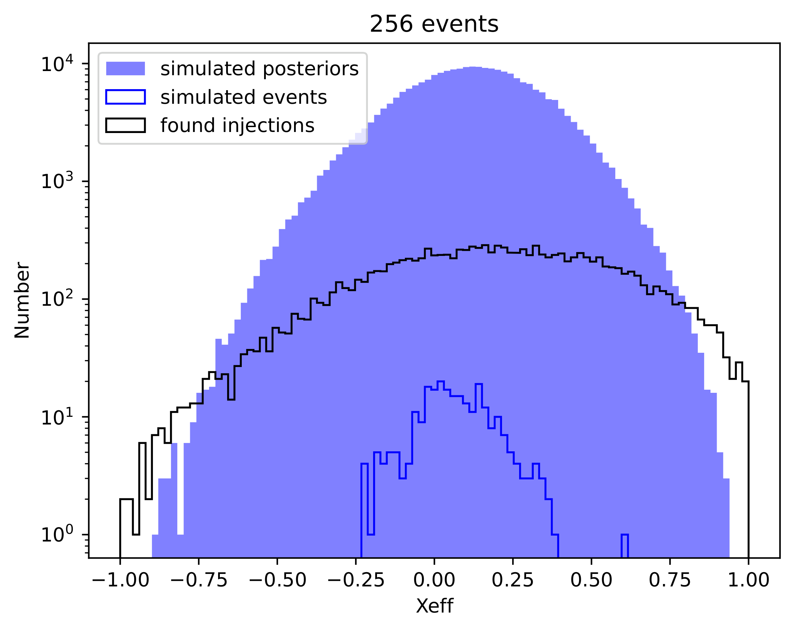<br />
图注：Simulated dataset including 256 mock events (blue line histogram), their simulated posterior samples (filled blue histogram), and found injections (black line histogram). The simulated dataset shown is mock population $7$ (see text).<br />
对应解读：“建议重点查看的图表”第4项 mock catalog 检验图的辅助材料；模型拟合段关于模拟目录、后验样本和探测选择效应的检查。<br />
入选理由：该图展示一个包含256个 mock events 的模拟数据集、模拟后验样本和 found injections，虽然不如 Fig07 直接给出转折恢复统计，但有助于说明 mock catalog 检验所用模拟目录和选择效应处理的基础。<br />
来源与置信度：\(arxiv_source\)；high；\(arxiv_source\) / main.tex:figure[6]</p>
<h4 id="_89">强相关工作</h4>
<p>这篇工作处在几个相互交叉的文献脉络中。第一类是 LIGO--Virgo--KAGRA 的双黑洞目录和总体性质论文，尤其是 \(GWTC\text{-}2\)、\(GWTC\text{-}3\) 以及后续目录中关于质量函数、自旋分布和并合率演化的分析。检索关键词可用 “GWTC binary black hole population effective spin mass dependence hierarchical Bayesian inference”。这些工作提供了样本、选择函数和标准总体模型背景。</p>
<p>第二类是形成通道理论，包括孤立双星演化、共同包层、超新星 natal kick、fallback kick、星团动力学、以及层级三体 Kozai--Lidov 诱导并合。本文与标准 fallback kick 孤立双星模型存在张力，因为标准模型往往难以产生足够的负 \(\chi_{\rm eff}\) 支持；与强 natal kick 或多星动力学模型更相容。检索关键词可用 “black hole natal kick fallback binary black hole spin tilt”, “hierarchical triples binary black hole mergers effective spin”, “isolated binary evolution \(chi_eff\) negative”。</p>
<p>第三类是关于自旋分布是否存在子总体或质量相关性的研究。有些论文主张双黑洞自旋总体总体接近低自旋或各向同性，有些则指出质量、质量比或红移相关结构。本文的特别之处在于把转折质量作为超参数由数据推断，并强调低质量 \(\sim10\,M_\odot\) 人群的独特性。若要找相反观点，应检索 “mass independent \(chi_eff\) population”, “binary black hole spin distribution no mass dependence”, “population model selection gravitational wave spins”。</p>
<p><strong>同一事件 / 同类源线索</strong>：</p>
<ul>
<li><a href="https://arxiv.org/abs/2607.00565">https://arxiv.org/abs/2607.00565</a></li>
<li><a href="https://arxiv.org/pdf/2607.00565">https://arxiv.org/pdf/2607.00565</a></li>
<li><a href="https://gwosc.org/gwtc/">https://gwosc.org/gwtc/</a></li>
</ul>
<p><strong>相似工作</strong>：</p>
<ul>
<li><a href="https://arxiv.org/abs/2111.03634">https://arxiv.org/abs/2111.03634</a></li>
<li><a href="https://arxiv.org/abs/2111.03606">https://arxiv.org/abs/2111.03606</a></li>
<li><a href="https://arxiv.org/abs/2010.14533">https://arxiv.org/abs/2010.14533</a></li>
</ul>
<p><strong>基础理论 / 方法工作</strong>：</p>
<ul>
<li><a href="https://arxiv.org/abs/1602.03840">https://arxiv.org/abs/1602.03840</a></li>
<li><a href="https://arxiv.org/abs/1602.03841">https://arxiv.org/abs/1602.03841</a></li>
<li><a href="https://arxiv.org/abs/1805.06442">https://arxiv.org/abs/1805.06442</a></li>
</ul>
<p><strong>相反观点 / 张力线索</strong>：</p>
<p>（未提供）</p>
</details>
<h3 id="9-a-new-model-for-long-term-forecasting-of-galactic-cosmic-rays">9. A new model for long-term forecasting of Galactic cosmic rays</h3>
<ul>
<li>来源：arXiv / astro-ph.HE</li>
<li>链接：https://arxiv.org/abs/2606.31433v1</li>
<li>作者：David Pelosi, Fernando Barão, Bruna Bertucci, Emanuele Fiandrini, Miguel Orcinha, Nicola Tomassetti</li>
<li>评分：novelty 7/10，importance 7/10，relevance 9/10，final 8.70/10</li>
<li>推荐理由：面向长期银河宇宙线调制预报，结合Parker输运、太阳代理量和PAMELA/AMS-02/ACE多粒子数据验证；宇宙线相关性很高且对空间辐射环境与CR输运建模有实用价值。</li>
</ul>
<p><strong>中文题目</strong>：一种用于银河宇宙线长期预报的新模型</p>
<p><strong>做了什么</strong>：这篇文章提出了一个面向近地银河宇宙线通量长期预报的数值框架。作者从一维球对称的 Parker 输运方程出发，把扩散、太阳风对流和绝热能量损失纳入同一模型，并用 PAMELA、AMS-02 和 ACE 的多粒子种类、多刚度通量数据进行验证。方法上的关键点是：先用 Hilbert-Huang 变换从太阳活动代理量和宇宙线数据中提取长期变化，再通过滞后互相关把太阳代理量与模型有效参数连接起来。结果显示，一个带电荷符号和刚度依赖的扩散-对流参数化，可以在不同太阳活动阶段较好重建质子、氦核和低能粒子通量，从而为十年尺度的空间辐射环境预报提供可操作方案。</p>
<p><strong>为什么重要</strong>：银河宇宙线在日球层内的调制直接决定近地空间和深空任务的慢变辐射本底。传统力场近似很方便，但对不同粒子种类、不同刚度、太阳活动滞后和电荷符号效应的描述有限。本文试图在可预报性和物理可解释性之间折中：不做完整三维日球层数值模拟，而是把 Parker 输运方程压缩为可用太阳代理量驱动的长期预报模型。</p>
<p><strong>理论 / 观测 / 仪器方法价值</strong>：对理论而言，它提供了一个从太阳活动代理量反推有效扩散和对流参数的半物理框架；对观测而言，它把 PAMELA、AMS-02 和 ACE 的长期通量数据放在统一校准链条里；对方法和应用而言，它可与太阳代理量预报模型耦合，用于航天任务辐射剂量评估、探测器背景预估和日球层输运模型的快速测试。</p>
<p><strong>为什么应该关注</strong>：如果你关心宇宙线调制、太阳活动周期、空间天气或载人深空任务辐射风险，这篇文章值得看。它不是只拟合过去的宇宙线曲线，而是把太阳代理量的可预报信息转化为未来宇宙线通量，重点在“长期可用的预报模型”而不是单次事件解释。</p>
<details class="paper-detail">
<summary>展开详细解读：文章讲解、背景、理论、重点章节、图表与相关工作</summary>
<h4 id="_90">文章详细讲解</h4>
<p>科学问题：银河宇宙线在进入内日球层时，会受到太阳风、日球层磁场和磁场湍动的调制。近地观测到的通量不是局域星际谱的直接投影，而是随太阳活动周期显著变化。对于空间任务，真正需要的不是事后解释某一时期的通量，而是在未来几年到十几年尺度上预估不同粒子、不同刚度的辐射本底。难点在于太阳活动本身有滞后、非平稳和周期相位依赖，而宇宙线输运参数不能简单看作固定常数。</p>
<p>作者怎么做：论文建立了一个一维球对称 Parker 输运模型，包含径向扩散、太阳风对流和绝热能量损失。作者没有直接使用高度复杂的三维漂移模型，而是用有效参数描述扩散-对流过程，并允许这些参数随刚度、粒子电荷符号和太阳活动代理量变化。太阳代理量经过 Hilbert-Huang 变换滤波，以保留长期调制分量、抑制短时噪声；随后通过滞后互相关寻找太阳代理量变化与宇宙线调制参数变化之间的时间延迟。</p>
<p>关键结果：模型用 PAMELA、AMS-02 和 ACE 的多通道通量数据进行验证，覆盖不同能区、粒子种类和太阳活动阶段。作者报告的核心结论是：这种带刚度和电荷符号依赖的参数化，能够在总体上重建观测通量，并给出可量化的重建不确定度。特别重要的是，它不是只对某一个实验或某一个能段有效，而是在空间实验的多源数据之间保持相当一致的表现，说明该框架有潜力用于运行化预报。</p>
<p>局限和下一步：一维球对称模型牺牲了纬度结构、日球层电流片、漂移项的空间细节和局地瞬变扰动，因此不应被理解为完整日球层动力学模型。Hilbert-Huang 过滤和互相关滞后虽然实用，但也可能把太阳代理量中的非线性响应压缩成有限个有效参数。下一步应重点检验模型在太阳极性反转期、异常太阳活动周期、低刚度粒子和极端空间天气背景下的外推能力，并与更高维 Parker 输运模型、漂移模型和任务剂量模型交叉验证。</p>
<h4 id="_91">关键结果是怎么做出来的</h4>
<p>本文证据链的第一步是样本和数据选择。作者使用了来自 PAMELA、AMS-02 和 ACE 的宇宙线通量数据，这些数据覆盖不同仪器、不同能量或刚度范围以及不同太阳活动阶段。PAMELA 和 AMS-02 对近地高精度带电宇宙线谱尤其重要，ACE 则提供较低能区和长期监测信息。这样做的好处是，模型不能只在某一台仪器或某一个刚度区间“看起来有效”，而必须同时解释多个实验通道的时间变化。</p>
<p>第二步是把观测通量转化为 Parker 输运模型中的有效参数约束。论文的做法不是对每一个时间点独立自由拟合，而是先用数值输运方程构建通量响应，再用太阳活动代理量解释参数的慢变。Hilbert-Huang 变换用于处理太阳代理量和宇宙线时间序列的非平稳性；互相关分析用于确定太阳活动变化传播到宇宙线调制响应中的延迟。这个滞后是物理上合理的，因为日球层条件从内太阳系传播到较外层需要时间，宇宙线强度响应也不是瞬时的。</p>
<p>第三步是模型比较和重建质量评估。虽然摘要没有给出具体事件数或显著性数值，但可以判断作者关注的是多通道通量重建残差、重建不确定度以及跨数据集稳健性，而不是单一检验统计量。读者应重点看论文中观测通量与模型重建曲线的比较图、不同粒子种类的残差图、太阳代理量与有效参数之间的滞后相关图，以及给出参数随时间或刚度变化的表格。若这些图中残差没有随太阳周期相位出现系统偏移，才说明预报框架具有真实泛化能力。</p>
<p>第四步是系统误差和稳健性。多实验数据合并时，仪器能标、几何因子、粒子选择效率、时间 binning、刚度 binning 和低能粒子的太阳调制敏感性都会影响拟合。本文的稳健性主要体现在用不同粒子种类、不同能段、不同太阳活动阶段交叉检验同一参数化形式。读者应警惕一种可能：模型在平均意义上拟合良好，但在太阳极性反转、活动极大期或短时 Forbush decrease 附近失效；这些失效不一定否定长期预报用途，但会限制它在短期空间天气预警中的使用。</p>
<p>第五步是预报闭环。论文声称当模型与太阳代理量预报耦合时，可以进行十年尺度银河宇宙线通量预测。因此最关键的检验不是训练期内拟合，而是留出时段、跨太阳周期或跨实验的后验预测。如果论文中有 hindcast 或 out-of-sample reconstruction，读者应优先检查这些结果：预测区间是否覆盖观测，偏差是否随刚度或粒子种类单调变化，以及太阳活动代理量预报误差是否被传递到最终宇宙线通量不确定度。</p>
<details class="paper-subdetail">
<summary>展开背景、理论、公式、模型、章节和图表导读</summary>
<h4 id="_92">背景知识</h4>
<p>银河宇宙线主要来自太阳系外的高能带电粒子，包括质子、氦核、重核和电子/正电子等。它们在穿过日球层时受到太阳风和日球层磁场影响，近地通量随约 11 年太阳活动周期变化。低刚度粒子受影响最强，高刚度粒子受影响较弱，因此宇宙线谱的时间变化本身就是日球层输运过程的诊断工具。</p>
<p>历史上，太阳调制常用 force-field approximation 描述，即用一个调制势把局域星际谱映射到近地谱。这个近似在很多场景下非常好用，特别适合快速估计和比较不同太阳活动阶段的整体调制强度。但它把复杂输运压缩成一个标量参数，难以描述电荷符号效应、漂移、刚度依赖扩散、太阳极性变化以及多代理量滞后响应。</p>
<p>近年来，PAMELA、AMS-02 和 ACE 等空间实验提供了高精度、长时间跨度的宇宙线通量测量，使得仅仅拟合某一时期平均能谱已经不够。现在可以检验模型是否在太阳活动下降期、上升期、极大期和极小期都有效，也可以比较质子和氦核等不同粒子通道的调制差异。这种数据条件推动了从“解释过去谱形”到“预报未来通量”的方法转变。</p>
<p>这个问题现在值得重新看，还有一个应用层面的原因：深空探测和载人任务需要长期辐射环境评估。银河宇宙线与太阳高能粒子事件不同，它构成持续背景剂量，并且在太阳活动极小期通常更强。任务设计需要估计未来发射窗口、巡航阶段和月球/火星表面任务期间的慢变辐射风险。</p>
<p>该领域常见误区之一是把太阳黑子数或某个太阳代理量直接当作宇宙线通量的即时预测器。实际上，宇宙线调制对日球层整体状态敏感，存在传播滞后、能量依赖和周期相位差异。另一个误区是认为一维模型必然“太简单而无用”。对于短期、三维、漂移主导问题，一维模型确实不足；但对于长期平均通量预报，一个校准良好的有效一维模型可能更稳定、更容易与工程辐射模型连接。</p>
<h4 id="_93">基础理论 / 方法脉络</h4>
<p>基本物理图像是带电粒子在日球层磁场湍动中扩散，同时被向外流动的太阳风对流携带，并因太阳风膨胀发生绝热能量损失。粒子分布函数的时间演化由 Parker 输运方程描述，其中扩散项反映磁湍流散射，对流项反映太阳风速度场，能量损失项反映粒子在膨胀等离子体中的冷却。</p>
<p>在完整情形下，宇宙线输运是三维、时间依赖、各向异性且包含漂移的。本文选择一维球对称版本，等价于关注径向平均的长期调制。这个近似把空间坐标压缩为日心距离 \(r\)，把复杂磁场几何和漂移效应部分吸收到有效扩散系数和参数化项中。这样做牺牲了细节，但使模型可与长期太阳代理量预报耦合。</p>
<p>关键量包括粒子刚度 \(R\)、动能 \(T\)、电荷数 \(Z\)、质量数 \(A\)、径向扩散系数 \(K(r,R,t)\)、太阳风速度 (V_{\<br />
m sw})、相空间分布函数 \(f(r,p,t)\) 和微分通量 \(J(T,t)\)。刚度比动能更自然，因为带电粒子在磁场中的轨道和散射主要由动量与电荷之比决定。低 \(R\) 粒子受太阳调制强，高 \(R\) 粒子更接近局域星际谱。</p>
<p>本文方法上的重要假设是，长期太阳活动对输运参数的影响可以通过太阳代理量及其时间滞后来描述。Hilbert-Huang 变换适合处理非平稳时间序列，它不像固定基函数的 Fourier 分解那样假设全局平稳周期。互相关则用于估计太阳代理量变化与宇宙线调制参数之间的延迟，从而把观测到的太阳活动历史映射为模型参数历史。</p>
<p>主要退化关系包括局域星际谱与调制强度的退化、扩散系数归一化与太阳风对流强度的退化、低刚度能标系统误差与真实调制变化的退化，以及不同太阳代理量之间的共线性。实际读论文时，应区分“模型能重建通量”与“模型唯一确定了物理扩散系数”这两件事；后者通常需要更强的理论先验或更多独立观测约束。</p>
<h4 id="_94">公式与推导</h4>
<p>第一步从各向同性相空间分布函数 \(f(r,p,t)\) 出发。微分强度 \(J\) 与 \(f\) 的关系可写为</p>
<div class="math-display">\[\(\nJ(T,t)=p^2\) f(r_\oplus,p,t),\]</div>
<p>其中 \(p\) 是粒子动量，\(T\) 是动能，\(r_\oplus\) 表示近地位置。这个关系说明观测到的通量曲线可以被看作输运方程在 \(r_\oplus\) 处的边界输出。</p>
<p>第二步写出一维球对称 Parker 输运方程的常用形式：</p>
<div class="math-display">\[\rac{\partial f}{\partial t}=\rac{1}{r^2}\rac{\partial}{\partial r}\left(r^2 K(r,R,t)\rac{\partial f}{\partial r}\
ight)-V_{\
m sw}\rac{\partial f}{\partial r}+\rac{1}{3r^2}\rac{\partial}{\partial r}\left(r^2 V_{\
m sw}\
ight)p\rac{\partial f}{\partial p}.\]</div>
<p>这里 \(K\) 是径向扩散系数，\(V_{\}\)<br />
m sw}) 是太阳风速度。三项分别代表扩散、对流和绝热能量变化；本文模型正是围绕这些项建立长期预报。</p>
<p>第三步引入刚度，</p>
<div class="math-display">\[\nR=\rac{pc}{|Z|e},\]</div>
<p>其中 \(Z\) 是电荷数，\(e\) 是元电荷，\(c\) 是光速。刚度决定粒子对磁场散射和调制的敏感性，因此本文的扩散-对流参数化必须显式依赖 \(R\)，并可进一步依赖电荷符号 ({\<br />
m sign}(Z))。</p>
<p>第四步可以把有效扩散系数写成示意性参数化：</p>
<div class="math-display">\[\nK(R,t,q)=K_0(t,q)\\,\eta\left(\rac{R}{R_0}\
ight)^{\delta(t,q)},\]</div>
<p>其中 \(q={\}\)<br />
m sign}(Z))，\(\eta=v/c\)，\(R_0\) 是参考刚度，\(K_0\) 和 \(\delta\) 是随时间和电荷符号变化的有效参数。这个式子不是唯一形式，但体现了论文所强调的刚度依赖和电荷符号依赖。</p>
<p>第五步，在准稳态和 force-field 极限下，局域星际谱 \(J_{\}\)<br />
m LIS}) 与近地谱 \(J_\oplus\) 的关系常写为</p>
<div class="math-display">\[\nJ_\oplus(T)=\rac{p^2(T)}{p^2(T+\Phi)}J_{\
m LIS}(T+\Phi),\]</div>
<p>其中 \(\Phi=|Z|e\phi/A\)，\(\phi\) 是调制势，\(A\) 是质量数。本文并不止步于单一 \(\phi\)，但这个极限有助于理解：更强太阳调制相当于把低能粒子谱向更高入射能量映射。</p>
<p>第六步，太阳代理量 \(S(t)\) 与有效参数 \(\	heta(t)\) 的滞后关系可用互相关诊断：</p>
<div class="math-display">\[\nC_{S\	heta}(\	au)=\rac{\(\langle\) [S(t-\	au)-\ar S][\	heta(t)-\ar\	heta]\
angle}{\sigma_S\sigma_\	heta}.\]</div>
<p>其中 \(\	au\) 是滞后时间，\(\ar S\) 和 \(\ar\	heta\) 是均值，\(\sigma_S\) 和 \(\sigma_\	heta\) 是标准差。最大相关位置给出太阳代理量变化到宇宙线调制响应的有效延迟。</p>
<p>第七步，给定模型预测通量 \(J_{i}^{\}\)<br />
m mod}(\oldsymbol\ heta)) 和观测通量 (J_i^{\<br />
m obs})，常用高斯近似似然或 \(\chi^2\) 统计量为</p>
<div class="math-display">\[\chi^2(\oldsymbol\	heta)=\sum_i \rac{\left[J_i^{\
m obs}-J_i^{\
m mod}(\oldsymbol\	heta)\
ight]^2}{\sigma_{i,\
m stat}^2+\sigma_{i,\
m sys}^2}.\]</div>
<p>这里 \(i\) 遍历时间、刚度和粒子通道，\(\sigma_{i,\}\)<br />
m stat}) 与 (\sigma_{i,\<br />
m sys}) 分别代表统计和系统误差。这个量可用于评估重建质量和比较不同参数化。</p>
<p>第八步，若要把模型用于预报，需要把太阳代理量预报误差传播到通量误差。线性近似下有</p>
<div class="math-display">\[\sigma_J^2\simeq \
abla_{\oldsymbol\	heta}J^{\
m T}\\,\mathbf{C}_\	heta\\,\
abla_{\oldsymbol\	heta}J+\sigma_{\
m data}^2,\]</div>
<p>其中 \(\mathbf{C}_\	heta\) 是参数协方差矩阵，(\<br />
\(abla_{\oldsymbol\	heta}J\)) 是通量对参数的灵敏度，(\sigma_{\<br />
m data}) 包括观测和校准误差。这个公式说明，长期预报的不确定度不仅来自宇宙线数据，也来自太阳代理量预测和参数映射。</p>
<h4 id="_95">模型拟合 / 应用方法</h4>
<p>这类模型拟合的直接对象是随时间和刚度变化的粒子通量。对每个实验、粒子种类和刚度 bin，模型给出 (J^{\<br />
m mod}(R,t))，观测给出 (J^{\<br />
m obs}(R,t)) 及误差。拟合参数可以包括扩散系数归一化、刚度斜率、对流相关参数、太阳代理量到输运参数的映射系数以及滞后时间。由于论文强调长期预报，参数不应对每个时间点任意漂移，而应由太阳代理量驱动。</p>
<p>似然构造通常可从多通道 \(\chi^2\) 或高斯似然开始，但实际误差并不完全独立。AMS-02、PAMELA 和 ACE 的系统误差可能在相邻刚度 bin 或相邻时间 bin 中相关；若把所有误差都当作独立，会高估模型约束精度。更严格的做法是使用协方差矩阵，或至少通过重标定、分实验拟合和留一验证评估系统偏差。</p>
<p>残差诊断非常关键。一个合格的长期调制模型，不仅应让总 \(\chi^2\) 可接受，还应避免残差随 \(R\)、时间、太阳周期相位或粒子种类出现连续结构。如果低刚度残差在太阳活动极大期系统偏正，可能说明扩散系数时间响应不足；如果正负电荷粒子残差方向相反，可能说明漂移或电荷符号项过弱；如果不同实验之间出现固定偏移，则可能是能标或归一化系统误差。</p>
<p>主要退化包括 \(K_0\) 与 (V_{\<br />
m sw}) 的退化、局域星际谱与调制参数的退化、太阳代理量滞后 \(\	au\) 与响应幅度的退化，以及刚度斜率 \(\delta\) 与低能系统误差的退化。本文用多粒子、多实验、多太阳活动阶段数据来缓解这些退化，但不能完全消除。读者应看作者是否固定了某些外部量，例如边界处的局域星际谱或太阳风速度，固定方式会影响参数的物理解释。</p>
<p>实际应用时，这个模型可作为空间辐射环境预报器：输入未来太阳代理量，输出不同粒子和刚度范围的银河宇宙线通量，再进一步转换为剂量或探测器背景。不过应用边界要明确：它适合长期慢变背景，不适合直接预测短时太阳高能粒子事件，也不适合解析某次 Forbush decrease 的小时至日尺度演化。</p>
<h4 id="_96">重点章节 / 结果段落怎么读</h4>
<p>数据和样本部分应首先阅读。重点看作者使用了哪些 PAMELA、AMS-02 和 ACE 数据产品，时间覆盖如何，粒子种类和刚度范围如何统一，是否对不同实验的能量定义、刚度 bin 和时间 bin 做了重采样或插值。这里决定了后续所有拟合的可信度。</p>
<p>模型方法部分是全文核心。读者应关注一维 Parker 方程如何离散求解，边界条件如何设定，局域星际谱如何处理，扩散系数和对流项如何参数化，以及电荷符号和刚度依赖具体进入哪些参数。若论文给出不同模型版本，应比较这些版本对应的物理假设。<br />
Hilbert-Huang 过滤和互相关部分需要细读。这里不是普通的数据平滑，而是把太阳代理量与调制参数联系起来的桥梁。应检查作者选择哪些太阳代理量、如何定义长期分量、如何估计滞后时间，以及滞后是否随粒子种类或刚度改变。</p>
<p>主结果部分应围绕重建图、残差图和参数时间演化图阅读。重点不是单条曲线是否贴合，而是模型是否能同时解释不同数据集和太阳周期阶段。若有表格列出重建不确定度或拟合优度，应将其与图中残差结构结合理解。</p>
<p>讨论和预报部分要看模型外推。作者声称可做十年尺度预报，因此应关注太阳代理量预报模型如何接入、预报区间如何给出、对未来太阳周期不确定性的敏感性如何，以及作者是否明确区分长期银河宇宙线背景与短期空间天气事件。</p>
<h4 id="_97">建议重点查看的图表</h4>
<ol>
<li>
<p>观测通量与模型重建的时间序列图：看不同刚度和粒子种类中，模型是否能跟随太阳周期起伏，尤其是太阳活动极大期和极小期。</p>
</li>
<li>
<p>通量残差或相对误差图：看残差是否围绕零随机分布，是否在低刚度、极性反转期或某一实验数据中出现系统偏移。</p>
</li>
<li>
<p>太阳代理量经过 Hilbert-Huang 过滤前后的比较图：看过滤是否去除了短时噪声但保留 11 年尺度结构，避免过度平滑导致虚假相关。</p>
</li>
<li>
<p>太阳代理量与模型有效参数的互相关图：看相关峰位置、峰宽和置信区间，判断滞后时间是否稳健。</p>
</li>
<li>
<p>扩散或调制参数随时间变化图：看参数是否与太阳活动反相关，是否在周期转换处平滑，是否出现无物理意义的尖峰。</p>
</li>
<li>
<p>不同实验或不同粒子通道的交叉验证图：看同一模型参数化能否同时适配 PAMELA、AMS-02 和 ACE，而不是只对一个数据集优化。</p>
</li>
<li>
<p>预报示例图：看未来通量预测带是否合理扩张，是否把太阳代理量预报不确定性传递到宇宙线通量不确定性。</p>
</li>
</ol>
<h4 id="_98">关键图表逐图导读</h4>
<p>图 1：通常应是数据覆盖或通量时间序列概览。横轴多半是时间，纵轴是某一能量或刚度范围的微分通量，也可能按粒子种类分 panel。读者应看数据是否覆盖太阳活动上升、极大、下降和极小阶段；若某些时期只有一台仪器提供数据，模型验证强度就会降低。读图陷阱是不同实验的能区和时间 bin 不完全相同，不能只按视觉连续性判断一致性。</p>
<p>图 2：若论文展示 Parker 模型重建与观测比较，横轴可能是时间或刚度，纵轴是通量或通量比。模型线和阴影带分别代表最佳重建与不确定度。关键是看阴影带是否覆盖观测点，以及偏差是否随刚度单调变化。若高刚度拟合很好而低刚度偏差大，说明调制模型或低能系统误差仍是主要限制。</p>
<p>图 3：Hilbert-Huang 过滤结果图应显示原始太阳代理量、分解后的长期模态或重构长期分量。横轴为时间，纵轴为太阳代理量强度。主要结论应是长期分量保留太阳周期结构，并减少短期扰动对参数映射的污染。读图陷阱是过滤方法可能引入端点效应，因此序列最前端和最后端的趋势尤其需要谨慎。</p>
<p>图 4：互相关图的横轴应为滞后 \(\	au\)，纵轴为相关系数 \(C_{S\	heta}\)。峰值位置给出太阳代理量到宇宙线调制响应的延迟。应检查峰是否尖锐、是否有多个相近峰、置信区间是否排除零滞后。若峰很宽，说明滞后时间只是有效平均量，不能过度解释为单一物理传播时间。</p>
<p>图 5：参数时间演化图通常展示 \(K_0\)、\(\delta\) 或等效调制强度随时间变化。横轴为时间，纵轴为模型参数。好的结果应与太阳活动呈合理反相关或相位滞后关系，并且不同粒子通道给出相容趋势。若参数变化过于剧烈，可能表明模型在用参数吸收数据系统误差。</p>
<p>图 6：预报或后验检验图应把训练期、验证期和未来预测区分开。横轴为时间，纵轴为预测通量，阴影表示预测区间。读者应重点看验证期观测是否落在预测带内，以及预测带是否随预报时间自然变宽。若未来预测带过窄，往往意味着太阳代理量预报误差或模型结构误差没有充分传播。</p>
</details>
<h4 id="_99">论文原图 / 可嵌入图片</h4>
<p><strong>Fig03</strong><br />
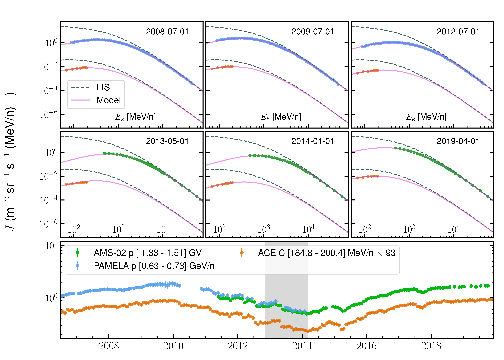<br />
图注：Modulated energy spectra for protons measured by PAMELA (light blue) and AMS-02 (green), and for carbon measured by ACE (orange), shown for six selected BRs. The magenta lines indicate the best-fit fluxes, while the gray dashed lines represent the local interstellar spectra (LIS) for protons and carbon adopted in this work \(\cite{LIS_Boschini_2020}\) as inputs to the model. The model shows good agreement with the data across all epochs considered. The bottom panel displays the temporal evolution of the proton and carbon fluxes measured by PAMELA, AMS-02, and ACE (scaled for visualization purposes) at selected reference energy bins. The gray shaded band marks the polarity-reversal phase, following the description of \(\citet{Sun_reversal_2013}.\)<br />
对应解读：对应“观测通量与模型重建的时间序列图”、关键图表导读中的图1/图2，以及模型拟合段落中对多实验、多粒子通量拟合对象的说明。<br />
入选理由：该图同时展示 PAMELA、AMS-02 质子和 ACE 碳的调制能谱、最佳拟合模型线、LIS 参考谱，以及底部随时间演化的通量序列，并标出太阳磁场极性反转期。它最直接支撑论文核心结论：模型能在不同实验、不同粒子和多个太阳活动阶段重建观测通量。<br />
来源与置信度：\(arxiv_source\)；high；\(arxiv_source\) / arxiv.tex:figure[3]</p>
<p><strong>Fig04</strong><br />
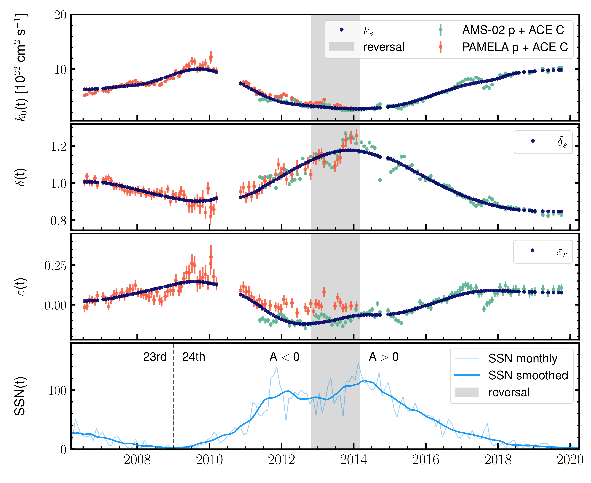<br />
图注：Best-fit results for the model parameters $k_0$, $\delta$, and $\varepsilon$ obtained from the fitting procedure described in Sec.~\(\ref{sec:calib},\) using proton measurements from PAMELA and AMS--02 combined with monthly carbon data from ACE. The dark blue points show the same parameters after smoothing with the HHT filtering algorithm described in Sec.~\(\ref{sec:EMD}.\) The bottom panel displays the temporal evolution of the monthly and smoothed sunspot number (SSN), highlighting its correlation with the modulation parameters. The shaded band marks the polarity-reversal phase, following the description of \(\citet{Sun_reversal_2013}.\)<br />
对应解读：对应“扩散或调制参数随时间变化图”、关键图表导读中的图5，以及详细解读中关于输运参数由太阳代理量驱动的段落。<br />
入选理由：该图给出关键模型参数 k0、delta、epsilon 的最佳拟合时间演化，并叠加 HHT 平滑结果和月平均/平滑太阳黑子数。它能直接检验参数是否与太阳活动相关、在极性反转期是否平滑，以及是否存在无物理意义的尖峰。<br />
来源与置信度：\(arxiv_source\)；high；\(arxiv_source\) / arxiv.tex:figure[4]</p>
<p><strong>Fig06</strong><br />
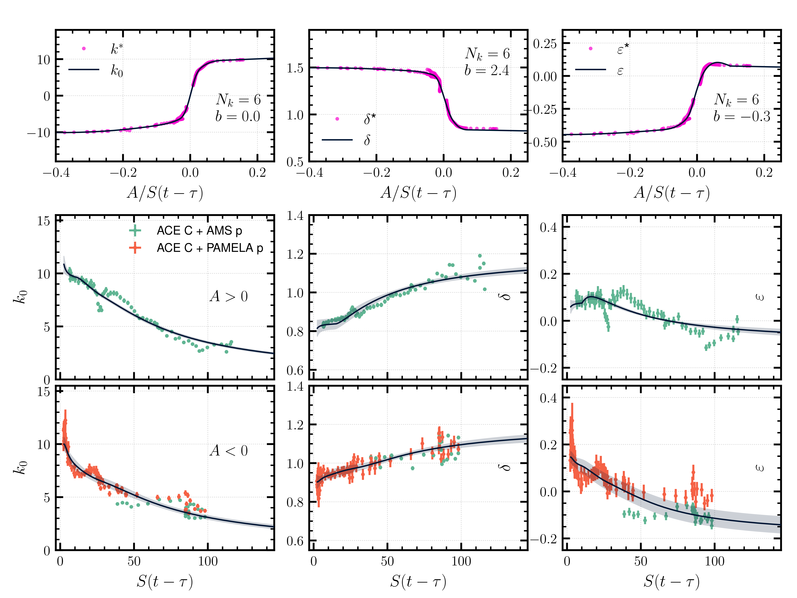<br />
图注：\(\textbf{Top row}\): Cross-correlation functions $\vec{f}$ for each model parameter, obtained by minimizing the loss function defined in Eq.\,\(\ref{eq:loss_score}.\) The magenta points correspond to the transformed parameters $\vec{q}^{\,*}$ defined in Eq.\,\(\ref{eqnarray:bias_trasform},\) plotted against the proxy $\mathcal{\text{A}}/S(t-\tau)$. The fitted values of $N_{\text{knots}}$ and $b$ for each parameter are indicated in the respective panels. \(\textbf{Bottom rows}\): The same functions $\vec{f}$ are plotted against $S(t-\tau)$ for the negative and positive polarity phases, and are shown together with the original, non-smoothed parameter values $\vec{q}$ for reference. These results demonstrate that the long-term evolution of the model parameters is effectively captured by the derived cross-correlation functions. The gray shaded band indicates the 68\% C.L. uncertainty band of each function, obtained using the bootstrap technique described in Sec.\,\(\ref{sec:uncertainty}.\)<br />
对应解读：对应“太阳代理量与模型有效参数的互相关图”和关键图表导读中的图4，同时也支撑模型拟合段落中滞后时间、响应幅度和参数退化的讨论。<br />
入选理由：该图展示太阳代理量与变换后模型参数之间的经验映射/相关函数，并给出正负极性阶段下的函数关系和 68% C.L. bootstrap 不确定带。虽然不是简单的相关系数-滞后坐标图，但它最接近日报中要求检查的太阳代理量到输运参数映射、置信区间和极性依赖。<br />
来源与置信度：\(arxiv_source\)；high；\(arxiv_source\) / arxiv.tex:figure[6]</p>
<p><strong>Fig08</strong><br />
<br />
图注：\(\textbf{Top}\): PgLis predictions spanning several solar cycles at $\sim 440\,\text{MeV}$ for protons, compared with long-term measurements from SOHO/EPHIN and BESS as validation datasets, and with PAMELA \(\cite{PAMELA_2013_protons,PAMELA_2018_protons}\) and AMS--02 \(\cite{AMS_PRL2021}\) data used for calibration. \(\textbf{Middle}\): Same long-term prediction for multichannel proton fluxes at $\sim 1.3\,\text{GeV}$. \(\textbf{Bottom}\): PgLis predictions compared with helium fluxes from PAMELA \(\cite{PAMELA_2020_Helium,PAMELA_2022_Helium}\) (multiplied by a factor of 0.35 for visual clarity) and AMS-02 \(\cite{AMS_nuclei},\) which serve as independent validation datasets. Shaded bands represent the 68\% C.L. model uncertainty. The average relative reconstruction errors for each validation dataset are reported in Table\,\(\ref{tab:PgLis_uncertainties}.\)<br />
对应解读：对应“不同实验或不同粒子通道的交叉验证图”和“预报示例图”，也对应关键图表导读中的图6。<br />
入选理由：该图展示 PgLis 对多个太阳周期的质子预测，并与 SOHO/EPHIN、BESS、PAMELA、AMS-02 数据比较；底部还给出氦通量的独立验证。它包含 68% C.L. 模型不确定带，是评估长期重建、跨实验验证和不确定度覆盖情况的关键图。<br />
来源与置信度：\(arxiv_source\)；high；\(arxiv_source\) / arxiv.tex:figure[8]</p>
<p><strong>Fig05</strong><br />
<br />
图注：Hilbert spectra of the model parameters, showing the frequency content of both the original time series $\vec{q}$ (left) and their smoothed reconstructions $\vec{q}_s$ (right), obtained using the HHT-based algorithm described in Sec.\,\(\ref{sec:EMD}.\) For both cases, the long-term trend has been removed. The hatched region indicates the data gap in the PAMELA dataset. The smoothing procedure effectively suppresses high-frequency fluctuations, isolating the long-term trends associated with solar-cycle variability of $\simeq 11$\,years, indicated by the dashed red line. On the right side of each panel, the corresponding frequency content and spread of each spectrum are reported.<br />
对应解读：对应“太阳代理量经过 Hilbert-Huang 过滤前后的比较图”和关键图表导读中的图3，尤其是关于 HHT 过滤是否保留 11 年尺度结构的说明。<br />
入选理由：该图用 Hilbert 频谱比较原始参数序列与 HHT 平滑重构后的频率内容，明确显示高频扰动被抑制、约 11 年太阳周期成分被保留。它能支撑日报中关于过滤不过度平滑、减少短时噪声污染的诊断。<br />
来源与置信度：\(arxiv_source\)；high；\(arxiv_source\) / arxiv.tex:figure[5]</p>
<p><strong>Fig10</strong><br />
<br />
图注：PgLis predictions compared with monthly AMS-02 \(\cite{AMS_nuclei}\) fluxes for carbon, oxygen, nitrogen, and lithium, shown at selected energy bins, from May 2011 to November 2022. These measurements serve as validation datasets. The model, coupled with the SSN forecasts from \(\cite{Asikainen2023},\) provides a prediction for the full 25th solar cycle. The shaded bands represent the 68\% C.L. model uncertainty. The average relative reconstruction errors for each validation dataset are reported in Table~\(\ref{tab:PgLis_uncertainties}.\)<br />
对应解读：对应“预报示例图”和详细解读中关于耦合太阳代理量预报实现第25太阳周期预测的段落。<br />
入选理由：该图将 PgLis 与 AMS-02 多种核素月度通量比较，并结合 SSN 预报给出完整第25太阳周期预测，带有 68% C.L. 不确定带。它最能体现论文面向未来长期宇宙线通量预报的应用价值。<br />
来源与置信度：\(arxiv_source\)；high；\(arxiv_source\) / arxiv.tex:figure[10]</p>
<h4 id="_100">强相关工作</h4>
<p>这篇工作属于银河宇宙线太阳调制和空间辐射环境预报的交叉方向。最直接的同类工作包括基于 force-field approximation 的长期调制势重建、基于 Parker 方程的数值日球层输运模型、以及使用 neutron monitor、太阳黑子数、日球层磁场强度等代理量进行宇宙线预报的研究。建议检索关键词包括 “Galactic cosmic ray solar modulation forecasting”、“Parker transport equation cosmic rays”、“force-field approximation modulation potential”、“AMS-02 time dependent proton flux”、“PAMELA solar modulation cosmic rays”。</p>
<p>与更完整的三维漂移模型相比，本文的优势是运行简洁、容易同太阳代理量预报耦合，适合长期工程应用；弱点是对纬度效应、日球层电流片和极性反转期细节的解释能力较弱。相反观点或张力通常来自两方面：一是认为一维有效模型不足以解释电荷符号依赖调制；二是认为太阳代理量经验映射可能在异常太阳周期中失效。读者可把本文与 Parker 原始输运理论、Gleeson-Axford 力场近似、以及 AMS-02 时间依赖通量测量论文一起阅读。</p>
<p><strong>同一事件 / 同类源线索</strong>：</p>
<ul>
<li><a href="https://arxiv.org/abs/2606.31433">https://arxiv.org/abs/2606.31433</a></li>
<li><a href="https://arxiv.org/pdf/2606.31433">https://arxiv.org/pdf/2606.31433</a></li>
<li><a href="https://ams02.space/">https://ams02.space/</a></li>
<li><a href="https://pamela.roma2.infn.it/">https://pamela.roma2.infn.it/</a></li>
<li><a href="https://www.srl.caltech.edu/ACE/">https://www.srl.caltech.edu/ACE/</a></li>
</ul>
<p><strong>相似工作</strong>：</p>
<ul>
<li><a href="https://ams02.space/publications">https://ams02.space/publications</a></li>
<li><a href="https://pamela.roma2.infn.it/index.php/publications">https://pamela.roma2.infn.it/index.php/publications</a></li>
<li><a href="https://cdaweb.gsfc.nasa.gov/">https://cdaweb.gsfc.nasa.gov/</a></li>
</ul>
<p><strong>基础理论 / 方法工作</strong>：</p>
<ul>
<li><a href="https://ui.adsabs.harvard.edu/abs/1965P%26SS...13....9P/abstract">https://ui.adsabs.harvard.edu/abs/1965P%26SS...13....9P/abstract</a></li>
<li><a href="https://ui.adsabs.harvard.edu/abs/1968ApJ...154.1011G/abstract">https://ui.adsabs.harvard.edu/abs/1968ApJ...154.1011G/abstract</a></li>
</ul>
<p><strong>相反观点 / 张力线索</strong>：</p>
<p>（未提供）</p>
</details>
<h3 id="10-frb20250613a-a-remarkable-repeating-frb-with-apparent-millisecond-timescale-scattering-variations">10. FRB20250613A: a remarkable repeating FRB with apparent millisecond-timescale scattering variations</h3>
<ul>
<li>来源：arXiv / astro-ph.HE</li>
<li>链接：https://arxiv.org/abs/2607.00505v1</li>
<li>作者：T. Dial, A. T. Deller, Alexa C. Gordon, P. A. Uttarkar, R. M. Shannon, Ziteng Wang, M. Caleb, Wen-fai Fong</li>
<li>评分：novelty 8/10，importance 8/10，relevance 7/10，final 8.65/10</li>
<li>推荐理由：重复FRB的定位、多望远镜爆发分析、毫秒尺度散射变化和磁化湍流环境证据较新颖；FRB属于高能瞬变相关方向，虽非伽马射线核心但值得阅读。</li>
</ul>
<p><strong>中文题目</strong>：FRB20250613A：一个重复快速射电暴及其毫秒尺度散射变化</p>
<p><strong>做了什么</strong>：这篇论文系统分析了重复快速射电暴 FRB20250613A 的 ASKAP、MeerKAT 和 Murriyang Parkes 多望远镜观测。该源位于红移 \(z=0.0987\pm0.0001\) 的低金属丰度矮星系中，爆发显示出分钟到小时尺度上表观散射时间的强烈变化、天到月尺度上约 \(300\ {\rm rad\ m^{-2}}\) 的旋转量变化、频谱退偏振，以及多成分爆发中约 \(6.8\pm0.8\ {\rm ms}\) 的优选成分间隔。作者认为这些传播效应要求一个离源很近、湍动、磁化且电离的屏幕；部分毫秒内相邻成分传播性质不同，甚至可能需要考虑 FRB 强电磁场在近源等离子体中诱发的非线性效应。论文提出一个自然图像：FRB 源可能处在 Be 星双星伴星的致密恒星风中。</p>
<p><strong>为什么重要</strong>：FRB 领域最难的问题之一，是把爆发机制本身的结构同传播介质造成的滤波、散射、法拉第旋转和退偏振分开。FRB20250613A 的特别之处在于，多个传播诊断量都在很短时间上变化，甚至在同一爆发的毫秒间隔成分之间变化。这比通常的星系际介质或宿主星系整体贡献更局域、更极端，直接把约束推向 FRB 发射区附近的磁化等离子体。</p>
<p><strong>理论 / 观测 / 仪器方法价值</strong>：对理论而言，这篇文章给出了一个近源湍动屏幕的强约束案例，并把 Be 星双星风环境作为可检验的 FRB 前身星环境方案。对观测而言，它展示了宽带、高时间分辨率、全偏振多望远镜监测怎样同时利用散射、旋转量、退偏振和子爆发时间结构。对方法而言，它提醒我们：把单个爆发拟合成固定散射尾或固定 \({\rm RM}\) 的做法，在这类源上可能会把介质变化误读成内禀辐射变化，或反过来。</p>
<p><strong>为什么应该关注</strong>：如果你关心 FRB 起源，这个源提供了一个比“是否重复”更细的诊断：近源等离子体是否足够致密、磁化和湍动，能在分钟、天甚至毫秒尺度上留下可测痕迹。如果你做射电瞬变数据分析，这篇文章也值得看，因为它讨论了多成分爆发、散射尾、偏振频率结构和 \({\rm RM}\) 变化之间的耦合，正是下一代 FRB 样本中会越来越常见、也越来越容易误判的问题。</p>
<details class="paper-detail">
<summary>展开详细解读：文章讲解、背景、理论、重点章节、图表与相关工作</summary>
<h4 id="_101">文章详细讲解</h4>
<p>科学问题：FRB20250613A 是一个重复 FRB，已被定位到红移 \(z=0.0987\pm0.0001\) 的低金属丰度矮星系。论文关注的不是单纯确认它重复，而是问：这些爆发的时间结构、散射尾、偏振和法拉第旋转变化，到底有多少来自发射机制本身，有多少来自源附近的等离子体传播？通常，银河系、星系际介质和宿主星系大尺度介质在分钟到小时尺度上不会剧烈改变，因此如果观测到传播量快速变化，就会强烈指向近源环境。</p>
<p>作者怎么做：作者汇总 ASKAP、MeerKAT 与 Murriyang Parkes 对该源的爆发观测，对单个爆发和多成分爆发进行高时间分辨率轮廓拟合，测量散射时间、成分间隔、频谱结构、偏振分数与旋转量 \({\rm RM}\)。MeerKAT 阶段的爆发特别关键，因为同一观测阶段内出现了分钟到小时尺度的表观散射差异。全样本偏振分析则用于追踪频谱退偏振和 \({\rm RM}\) 随时间的变化。</p>
<p>关键结果：论文报告了三个相互支持的信号。第一，MeerKAT epoch 中散射时间在短时标上表现出大幅方差，难以用稳定远距离屏幕解释。第二，全样本显示频谱退偏振，并且 \({\rm RM}\) 在天到月尺度上变化约 \(300\ {\rm rad\ m^{-2}}\)，指向强湍动磁化电离环境。第三，多成分爆发的成分间隔显著偏好 \(6.8\pm0.8\ {\rm ms}\)，作者倾向认为这是发射机制的内禀时间尺度，而不是普通传播多径造成的固定回声。</p>
<p>更极端的是，作者指出一部分爆发中，彼此只相隔毫秒的成分也显示出传播效应差异。若用几何视线变化解释，发射区或散射屏幕需要在毫秒内产生足够大的横向变化，这很难自然实现。因此论文提出，FRB 极高亮温和强电磁场可能在近源等离子体中触发非线性传播效应，使相邻成分经历不同的等离子体响应。</p>
<p>局限和下一步：目前的解释仍依赖对散射屏幕位置、湍流谱、局部电子密度和磁场结构的模型化假设。Be 星双星风是一个物理上有吸引力的场景，因为低金属丰度低质量星系中这类系统并不罕见，且 Be 星盘风可提供高密度、非球对称、时间变化的磁化等离子体；但该场景还需要后续通过长期 \({\rm RM}\)、\({\rm DM}\)、散射周期性或准周期性、宿主星系恒星族群以及可能的轨道调制来检验。</p>
<h4 id="_102">关键结果是怎么做出来的</h4>
<p>样本和数据链条首先来自三个射电设施：ASKAP 负责发现和定位，MeerKAT 提供关键重复爆发时期的高灵敏度观测，Murriyang Parkes 补充独立频段和时间覆盖。论文的证据不是来自单一特别亮的爆发，而是来自跨设备爆发样本中多个可重复测量量的一致异常：散射时间、偏振频谱、\({\rm RM}\) 和多成分时间间隔。</p>
<p>最重要的结果之一是 MeerKAT epoch 中表观散射时间的快速变化。作者对爆发轮廓拟合时需要区分内禀脉冲宽度和单边指数散射尾；若散射屏幕稳定，短时间内同一源、近似同一频段的散射时间不应大幅跳变。论文称这些变化发生在分钟到小时尺度，说明变化介质很可能靠近源区，或者散射并非简单线性薄屏模型下的静态多径传播。</p>
<p>第二条证据来自偏振。作者对全样本做偏振定标和 \({\rm RM}\) 搜索，发现频谱退偏振以及 \({\rm RM}\) 在天到月尺度变化约 \(300\ {\rm rad\ m^{-2}}\)。这里的统计重点在于：退偏振不能只看积分线偏振分数，还要看频率分辨后 Stokes 参量的相位是否被未解析 \({\rm RM}\) 结构、多路径法拉第旋转或带内平均抹平。\({\rm RM}\) 的显著变化若超过定标误差、电离层修正误差和仪器偏振泄漏，就要求源附近 \(n_e B_\parallel\) 的积分随时间改变。</p>
<p>第三条证据是多成分爆发的成分间隔分布。论文报告对多成分 burst 的 separation 进行统计后，出现 \(6.8\pm0.8\ {\rm ms}\) 的显著偏好。这个结果的判断通常要和随机成分分布、探测阈值、时间分辨率、去色散误差以及成分分解算法比较；若峰值稳健，说明发射机制可能存在一个特征时标，例如磁层振荡、旋转相位窗口、等离子体团块或周期性触发，而不是完全随机的 shot-noise 过程。</p>
<p>最具挑战性的证据是同一爆发内毫秒相邻成分的传播差异。作者强调，这类差异难以用“不同爆发穿过不同视线”解释，因为相邻成分时间太近，源、屏幕和观测者的相对运动在毫秒内产生的横向位移极小。若差异真实，统计上要排除低信噪比轮廓拟合偏差、频率结构造成的假散射、成分重叠和偏振定标残差。论文将其解释为近源等离子体在强 FRB 场作用下的非线性响应，是一个大胆但有物理动机的方向。</p>
<p>稳健性方面，读者应重点检查作者是否在不同望远镜、不同频段、不同爆发信噪比和不同轮廓模型下得到一致结论。尤其要看散射时间是否与信噪比、频率覆盖、成分数量或拟合初值相关；\({\rm RM}\) 变化是否可能来自未解析频谱结构；\(6.8\ {\rm ms}\) 间隔峰是否在剔除复杂或低信噪比事件后仍存在。</p>
<details class="paper-subdetail">
<summary>展开背景、理论、公式、模型、章节和图表导读</summary>
<h4 id="_103">背景知识</h4>
<p>快速射电暴是毫秒尺度的宇宙射电瞬变，具有高亮温、高色散量和复杂时间频率结构。重复 FRB 特别重要，因为重复爆发允许长期监测同一物理系统，而不是只用一次事件推断环境。对重复源而言，\({\rm DM}\)、\({\rm RM}\)、散射、偏振和爆发等待时间分布共同构成了近源环境与发射机制的诊断工具。</p>
<p>历史上，FRB121102 首先展示了重复 FRB 可位于低金属丰度矮星系，并拥有极高且变化的 \({\rm RM}\)，这使“年轻磁星加致密星云”成为主流图像之一。后来 FRB20180916B 的周期性活动窗口又提示双星轨道、进动或环境调制可能重要。银河系磁星 SGR1935+2154 的射电暴与高能活动关联进一步证明磁星能产生 FRB 样射电爆发，但并没有解决所有重复 FRB 的环境差异问题。</p>
<p>FRB20250613A 的背景吸引力在于它同时具备低金属丰度矮星系宿主和高度可变传播特征。低金属丰度环境有利于形成某些大质量恒星演化产物，也与长伽马暴、超亮超新星、年轻磁星形成通道常被联系起来。若该源确实处在 Be 星双星风中，则 FRB 环境研究会从单纯“年轻磁星星云”扩展到“致密星与大质量伴星风相互作用”的更广类别。</p>
<p>为什么现在值得重新看？因为 FRB 仪器能力已经从发现单个事件转向高时间分辨率定位、宽带全偏振监测和多望远镜复访。以前很多爆发只够测一个 \({\rm DM}\) 和粗略 fluence，现在可以比较同一源在不同天、不同小时甚至同一爆发内不同成分的传播差异。FRB20250613A 正是这种新数据质量下暴露出来的复杂系统。</p>
<p>常见误区之一是把所有毫秒结构都看成发射源本身的时间结构，或反过来把所有指数尾都机械解释成远处散射屏幕。实际上，内禀包络、频谱漂移、多径传播、等离子体透镜和有限信噪比拟合会互相混淆。另一个误区是把 \({\rm RM}\) 当作单一稳定数值；在近源强湍动环境中，\({\rm RM}\) 可能随时间、频率甚至不同爆发成分改变，积分偏振量会隐藏这些结构。</p>
<h4 id="_104">基础理论 / 方法脉络</h4>
<p>从基础物理图像看，FRB 发出的窄时标相干射电脉冲在传播途中会经历冷等离子体色散、湍流密度涨落造成的多径散射、磁化等离子体中的法拉第旋转，以及仪器带宽和时间分辨率造成的卷积。观测到的脉冲轮廓不是源函数本身，而是内禀发射、传播响应和仪器响应的叠加卷积。</p>
<p>冷等离子体色散由自由电子柱密度决定，主要表现为低频信号延迟更大；去色散后若 \({\rm DM}\) 选错，会在频率方向留下残余斜率并展宽脉冲。散射则来自电子密度小尺度涨落，常用薄屏近似下的单边指数尾描述，散射时间 \(\tau_{\rm sc}\) 一般随频率降低而快速增加。论文中所谓“表观散射变化”必须理解为模型拟合得到的 \(\tau_{\rm sc}\) 变化，它可能混合了真实散射、未解析多成分和频谱结构。</p>
<p>偏振部分的基本量是 Stokes 参量 \(I,Q,U,V\)。线偏振角在磁化等离子体中按 \(\lambda^2\) 旋转，斜率就是 \({\rm RM}\)。如果同一频率通道内存在多个 \({\rm RM}\) 成分，或不同散射路径拥有不同法拉第深度，那么频率积分后线偏振会下降，即频谱退偏振。FRB20250613A 中 \({\rm RM}\) 的天到月变化和退偏振共同指向近源磁化介质的复杂结构。</p>
<p>多成分爆发的时间间隔提供另一类信息。如果一组 burst components 的间隔集中在 \(6.8\pm0.8\ {\rm ms}\)，可能对应发射引擎的特征时标，也可能是传播回声、等离子体透镜多像或选择效应造成。区分这几类解释要看间隔是否随频率变化、是否伴随相同散射尾、不同成分是否有相同 \({\rm RM}\) 和偏振角，以及间隔分布相对于随机模型的显著性。</p>
<p>这篇论文特别强调的近源屏幕，要求屏幕离 FRB 足够近，使局部湍流、恒星风密度结构或爆发本身的强场作用能在短时间尺度上改变传播响应。常见退化包括：\(\tau_{\rm sc}\) 与内禀宽度退化，\({\rm DM}\) 与频率漂移退化，\({\rm RM}\) 与偏振定标误差退化，以及多成分拟合中成分数选择与间隔统计的退化。</p>
<h4 id="_105">公式与推导</h4>
<p>第一步，把观测轮廓写成内禀发射、传播和仪器响应的卷积：</p>
<div class="math-display">\[I_{\rm obs}(t,\nu)=\left[I_{\rm int}(t,\nu)\ast h_{\rm disp}(t,\nu)\ast h_{\rm sc}(t,\nu)\ast h_{\rm inst}(t,\nu)\right]+n(t,\nu).\]</div>
<p>这里 \(I_{\rm obs}\) 是观测强度，\(I_{\rm int}\) 是内禀强度，\(h_{\rm disp}\)、\(h_{\rm sc}\)、\(h_{\rm inst}\) 分别表示色散、散射和仪器响应，\(n\) 是噪声。这说明论文测得的散射时间和成分宽度本质上是一个反卷积或前向建模问题。</p>
<p>冷等离子体色散延迟由电子柱密度给出：</p>
<div class="math-display">\[\Delta t_{\rm DM}=K_{\rm DM}\,{\rm DM}\left(\nu_1^{-2}-\nu_2^{-2}\right),\]</div>
<p>其中 \(K_{\rm DM}\simeq4.149\ {\rm ms\ GHz^2\ pc^{-1}\ cm^3}\)，\({\rm DM}=\int n_e\,dl\)，\(n_e\) 是电子数密度，\(dl\) 是路径元。若 \({\rm DM}\) 或爆发频率漂移处理不当，残余展宽会污染 \(\tau_{\rm sc}\) 的估计。</p>
<p>薄屏散射常用单边指数响应近似：</p>
<div class="math-display">\[h_{\rm sc}(t,\nu)=H(t)\,{1\over \tau_{\rm sc}(\nu)}\exp\left[-{t\over \tau_{\rm sc}(\nu)}\right],\]</div>
<p>其中 \(H(t)\) 是阶跃函数，\(\tau_{\rm sc}\) 是散射时间。对 Kolmogorov 型湍流，常见标度为</p>
<div class="math-display">\[\tau_{\rm sc}(\nu)=\tau_0\left({\nu\over \nu_0}\right)^{-\alpha_{\rm sc}},\]</div>
<p>其中 \(\alpha_{\rm sc}\) 在理想均匀 Kolmogorov 情形接近 \(4\) 到 \(4.4\)，但近源非均匀屏幕、多成分重叠和有限带宽会改变表观指数。</p>
<p>法拉第旋转把偏振角写成</p>
<div class="math-display">\[\psi(\lambda)=\psi_0+{\rm RM}\,\lambda^2,\]</div>
<p>其中 \(\psi\) 是线偏振角，\(\lambda\) 是波长，\(\psi_0\) 是本征偏振角。旋转量为</p>
<div class="math-display">\[{\rm RM}=0.812\int n_e(l)\,B_\parallel(l)\,dl\quad {\rm rad\ m^{-2}},\]</div>
<p>其中 \(n_e\) 以 \({\rm cm^{-3}}\) 计，\(B_\parallel\) 以 \(\mu{\rm G}\) 计，\(dl\) 以 \({\rm pc}\) 计。论文报告 \({\rm RM}\) 在天到月尺度变化约 \(300\ {\rm rad\ m^{-2}}\)，意味着积分量 \(n_e B_\parallel\) 或有效路径在变。</p>
<p>频谱退偏振可用复线偏振表示：</p>
<div class="math-display">\[P(\lambda^2)=Q+iU=p_0 I\int F(\phi)\exp\left(2i\phi\lambda^2\right)d\phi,\]</div>
<p>其中 \(P\) 是复偏振，\(p_0\) 是本征线偏振分数，\(F(\phi)\) 是法拉第深度 \(\phi\) 的分布。如果 \(F(\phi)\) 不是单一尖峰，频率平均后 \(|P|/I\) 会下降，这正是解释频谱退偏振时需要检查的机制。</p>
<p>多成分爆发可用若干高斯成分加散射尾建模：</p>
<div class="math-display">\[I_{\rm int}(t)=\sum_{j=1}^{N_c} A_j\exp\left[-{(t-t_j)^2\over 2\sigma_j^2}\right],\]</div>
<p>其中 \(N_c\) 是成分数，\(A_j\)、\(t_j\)、\(\sigma_j\) 分别是第 \(j\) 个成分的振幅、到达时间和宽度。成分间隔为 \(\Delta t_{ij}=t_j-t_i\)，论文发现其分布偏好 \(\Delta t\simeq6.8\pm0.8\ {\rm ms}\)。</p>
<p>拟合通常通过高斯噪声似然或等价的 \(\chi^2\) 实现：</p>
<div class="math-display">\[\ln {\cal L}=-{1\over2}\sum_k \left[{d_k-m_k(\boldsymbol{\theta})\over \sigma_k}\right]^2-{1\over2}\sum_k\ln(2\pi\sigma_k^2),\]</div>
<p>其中 \(d_k\) 是动态谱或轮廓数据点，\(m_k\) 是参数 \(\boldsymbol{\theta}\) 下的模型，\(\sigma_k\) 是噪声。比较“固定散射”与“可变散射”、或“随机间隔”与“优选间隔”时，可使用</p>
<div class="math-display">\[\Delta {\rm BIC}=\Delta \left[k\ln N-2\ln {\cal L}_{\rm max}\right],\]</div>
<p>其中 \(k\) 是参数数目，\(N\) 是数据点数。若加入额外自由度后 \({\rm BIC}\) 明显下降，才说明复杂模型受到数据支持。</p>
<p>若把 \({\rm RM}\) 变化归因于局部屏幕的横向运动，变化时间尺度满足近似关系</p>
<div class="math-display">\[t_{\rm var}\sim {\ell_\perp\over v_\perp},\]</div>
<p>其中 \(\ell_\perp\) 是屏幕横向结构尺度，\(v_\perp\) 是有效横向速度。分钟到小时或毫秒尺度变化会要求极小的 \(\ell_\perp\) 或非几何机制，因此论文才转向近源湍流和强场非线性等离子体响应。</p>
<h4 id="_106">模型拟合 / 应用方法</h4>
<p>这类分析的第一层拟合是动态谱去色散与时间轮廓建模。待拟合量通常包括 \({\rm DM}\)、到达时间、成分数 \(N_c\)、每个成分的振幅、宽度、频谱包络、频率漂移，以及散射时间 \(\tau_{\rm sc}\)。若数据带宽足够，还会拟合 \(\tau_{\rm sc}\) 的频率指数。FRB20250613A 的核心困难在于，多个成分和散射尾相互重叠，导致内禀宽度与散射时间存在强退化。</p>
<p>第二层是偏振拟合。作者需要从 Stokes \(Q\) 和 \(U\) 的频率依赖中寻找最佳 \({\rm RM}\)，并评估线偏振分数如何随频率或时间变化。实际应用中，\({\rm RM}\) 拟合会受电离层修正、绝对偏振角定标、通道带宽去偏振、泄漏校正和低信噪比偏振偏差影响。若频谱退偏振来自多个法拉第成分，单一 \({\rm RM}\) 模型可能给出看似精确但物理上过度简化的值。</p>
<p>第三层是成分间隔统计。要证明 \(6.8\pm0.8\ {\rm ms}\) 的偏好不是偶然，需要构造合理的零假设，例如成分到达时间在 burst window 内随机分布、由等待时间分布抽样，或由探测算法的最小分辨间隔决定。模型比较可采用似然比、信息准则、置换检验或 bootstrap。关键是选择函数：太近的成分无法分辨，太弱的成分会漏检，这些都会在人为间隔分布中制造峰或谷。</p>
<p>系统误差方面，散射变化可能被频率覆盖差异、信噪比差异、成分分解方式和基线处理影响。MeerKAT、ASKAP 与 Parkes 的接收系统、频段、时间分辨率和灵敏度不同，跨望远镜比较时应避免把仪器响应差异当作天体物理差异。论文的结论之所以有力，是因为多个诊断量共同指向近源介质；但每个单独诊断量都仍有可替代解释。</p>
<p>模型可能失败的地方也很明确。单薄屏指数散射模型可能不适用于强各向异性、等离子体透镜或多屏传播；单一 \({\rm RM}\) 模型可能掩盖法拉第复杂度；Be 星风模型若没有给出可观测的轨道调制或密度结构预测，也可能停留在解释性图像。后续最有价值的拟合会是联合模型：同时拟合 \({\rm DM}\)、\({\rm RM}\)、\(\tau_{\rm sc}\)、偏振分数和爆发相位，并检验它们是否共享同一个环境参数集。</p>
<h4 id="_107">重点章节 / 结果段落怎么读</h4>
<p>数据与样本部分应优先读。这里要弄清 ASKAP、MeerKAT 和 Murriyang Parkes 各自贡献了哪些爆发，观测频段、时间分辨率、偏振定标和灵敏度如何不同。由于论文的关键结论涉及跨时间和跨设备变化，样本定义和选择函数直接决定后续结论的可信度。</p>
<p>爆发轮廓与散射分析部分是第二个重点。读者应关注作者如何定义 burst component，如何处理多成分重叠，采用何种散射核，是否允许 \(\tau_{\rm sc}\) 随频率变化，以及 MeerKAT epoch 中所谓大幅散射方差是否在不同拟合假设下仍保留。</p>
<p>偏振与 \({\rm RM}\) 部分是第三个重点。这里要看 \({\rm RM}\) 搜索范围、频率通道处理、去偏振诊断、仪器偏振校正和误差估计。论文报告的 \(\sim300\ {\rm rad\ m^{-2}}\) 变化是近源磁化环境的重要证据，必须确认其显著性超过系统误差。</p>
<p>多成分间隔统计部分值得单独阅读。\(6.8\pm0.8\ {\rm ms}\) 的优选间隔若稳健，就更接近发射机制信息，而不是纯传播信息。读者应看作者怎样构造间隔样本、怎样处理同一 burst 内多个 pair 的非独立性、怎样估计随机出现峰值的概率。</p>
<p>讨论部分集中在物理解释：近源湍流屏幕、非线性等离子体传播，以及 Be 星双星风环境。读者应把这些解释当成可检验模型，而不只是故事：它们应预言 \({\rm RM}\)、散射、\({\rm DM}\) 或活动率随时间出现某种关联、周期性或统计结构。</p>
<h4 id="_108">建议重点查看的图表</h4>
<ol>
<li>
<p>爆发动态谱与去色散时间序列：检查每个 burst 的频率覆盖、信噪比、是否多成分、是否有明显频率漂移或窄带结构；这些会影响散射和成分间隔拟合。</p>
</li>
<li>
<p>MeerKAT epoch 的散射时间随观测时间变化图：重点看 \(\tau_{\rm sc}\) 的误差条、上限、频率归一化方式，以及变化是否集中在低信噪比 burst。</p>
</li>
<li>
<p>单个 burst 的轮廓拟合残差图：检查指数散射尾是否真正改善残差，还是被未建模的后续成分吸收；特别要看毫秒相邻成分的残差结构。</p>
</li>
<li>
<p>\({\rm RM}\) 随日期变化图：关注不同望远镜测量是否一致、误差条是否包含电离层和定标系统误差、约 \(300\ {\rm rad\ m^{-2}}\) 的变化是否由少数点驱动。</p>
</li>
<li>
<p>线偏振分数或 Stokes \(Q,U\) 随频率变化图：检查退偏振是否平滑、是否与频率通道边缘或 RFI flagging 相关，是否需要多法拉第深度成分。</p>
</li>
<li>
<p>多成分间隔分布或周期性检验图：重点看 \(6.8\ {\rm ms}\) 峰值相对随机模拟、bootstrap 或 null model 的显著性，以及剔除复杂 burst 后是否仍存在。</p>
</li>
<li>
<p>近源环境示意或参数约束图：若论文给出 Be 星风密度、屏幕距离或磁场约束，应检查这些参数是否同时满足 \({\rm RM}\)、散射和时间变化尺度。</p>
</li>
</ol>
<h4 id="_109">关键图表逐图导读</h4>
<p>图 1：通常应是发现、定位或宿主星系相关图。若图中横纵轴为空间坐标，应看 FRB 定位误差椭圆与宿主矮星系的相对位置；若包含光谱红移，应确认 \(z=0.0987\pm0.0001\) 的来源。读图陷阱是不要把低金属丰度宿主本身当作近源高密度环境的直接证明，它只提供形成通道背景。</p>
<p>图 2：若展示多个 burst 的动态谱，横轴一般是到达时间，纵轴是频率，颜色为强度。应看 burst 是否窄带、是否有向低频延迟的残余、是否多成分，以及不同成分是否共享相同频谱包络。读图陷阱是：动态谱中的频率结构可能来自 scintillation、RFI excision 或本征谱，而不一定是散射。</p>
<p>图 3：若展示轮廓拟合，横轴为相对时间，纵轴为强度，模型线可能包括高斯成分、散射卷积模型和残差。关键是看指数尾是否在主峰之后系统性存在，以及残差是否随机。若残差在后沿有结构，单一散射尾可能是在吸收未解析成分。</p>
<p>图 4：若展示散射时间随时间变化，横轴可能是 MJD 或观测内时间，纵轴是归一到某参考频率的 \(\tau_{\rm sc}\)。主要结论应是 MeerKAT epoch 中 \(\tau_{\rm sc}\) 在分钟到小时尺度上变化。读图陷阱是要确认所有点都换算到同一频率，且误差条不是只包含统计误差。</p>
<p>图 5：若展示偏振或 \({\rm RM}\) 结果，横轴可能为 \(\lambda^2\)、频率或日期，纵轴为偏振角、线偏振分数或 \({\rm RM}\)。应看偏振角是否符合 \(\lambda^2\) 线性关系，是否有频率段偏离，以及不同 epoch 的 \({\rm RM}\) 是否显著分离。读图陷阱是带内退偏振会降低线偏振信噪比，从而偏置 \({\rm RM}\) 搜索。</p>
<p>图 6：若展示多成分间隔统计，横轴是 \(\Delta t\)，纵轴是 pair counts、概率密度或相对似然。应看 \(6.8\pm0.8\ {\rm ms}\) 峰是否超过随机模拟置信带。读图陷阱是同一复杂 burst 可贡献多个非独立 pair，因此显著性不能简单按 pair 数当独立样本计算。</p>
<p>图 7：若展示物理解释示意或环境参数，重点看近源屏幕距离、湍流尺度、磁场和电子密度是否能同时解释 \({\rm RM}\) 变化、散射变化和毫秒成分差异。若 Be 星双星风模型被画出，应关注是否给出可观测的轨道调制预测，而不仅是定性类比。</p>
</details>
<h4 id="_110">论文原图 / 可嵌入图片</h4>
<p><strong>Fig03</strong><br />
<br />
图注：Top panel: DM evolution of FRB20250613. The Square, circle and diamond points show the ASKAP, MeerKAT and Parkes bursts respectively. The `red' points represent the discovery burst A1. Middle panel: burst $\tau$ at 1.0 GHz reference frequency assuming $\alpha = -4.0$. Bottom Panel: Burst RM. RM uncertainties are significantly smaller than the absolute RM values, making it difficult to see them. Each panel is separated by $x$-axis breaks into three parts. The middle part shows a zoom-in on the sample of MeerKAT bursts discovered on 24 June 2025. Time on the x axis is relative to the burst time of the first ASKAP burst, A1.<br />
对应解读：建议重点查看的图表第2、4项；关键图表逐图导读中关于散射时间随时间变化和RM随日期变化的部分；模型拟合中关于DM、τ_sc、RM联合诊断的段落。<br />
入选理由：该图同时给出DM演化、归一到1 GHz且假设α=-4的散射时间τ，以及RM随时间变化，并特别放大了2025年6月24日MeerKAT爆发样本，是支撑“分钟到小时尺度散射变化”和“天到月尺度约300 rad m^-2 RM变化”两个核心结论的最关键图。相比单个爆发图，它直接展示跨望远镜、跨epoch的传播量演化。<br />
来源与置信度：\(arxiv_source\)；high；\(arxiv_source\) / main.tex:figure[3]</p>
<p><strong>Fig01</strong><br />
<br />
图注：Multi-component bursts from FRB20250613. The letter in front of the burst number represents the telescope which detected the burst i.e. <code>A' for ASKAP,</code>M' for MeerKAT and `P' for Parkes (Murriyang). Top panel: Frequency-scrunched time series. The shaded grey band shows the off-pulse sample noise. The red region shows the on-pulse width. The burst reference time is set to the centroid of the burst. Bottom panel: Dynamic spectrum. Flagged channels are denoted by the orange markings.<br />
对应解读：建议重点查看的图表第1项；关键图表逐图导读中关于多个burst动态谱、频率覆盖、多成分结构和窄带特征的部分。<br />
入选理由：该图展示多成分爆发的频率压缩时间序列和动态谱，并标出on-pulse区域、噪声区和被flag的频率通道，可用于判断成分数、频率覆盖、窄带结构和潜在RFI影响，是理解后续散射拟合和成分间隔统计的基础。<br />
来源与置信度：\(arxiv_source\)；high；\(arxiv_source\) / main.tex:figure[1]</p>
<p><strong>Fig11</strong><br />
<br />
图注：Distribution of component separation for multi-component burst sample. The <code>blue' histogram shows the distribution of the full sample whereas the</code>red' histogram only includes bursts with two components.<br />
对应解读：建议重点查看的图表第6项；关键图表逐图导读中关于多成分间隔分布和6.8±0.8 ms偏好峰的部分；模型拟合中关于成分间隔统计零假设的段落。<br />
入选理由：该图直接给出多成分burst样本的成分间隔分布，并区分全样本与仅双成分burst，是检验论文声称的约6.8 ms特征间隔是否由复杂burst或非独立pair驱动的核心证据。<br />
来源与置信度：\(arxiv_source\)；high；\(arxiv_source\) / main.tex:figure[11]</p>
<p><strong>Fig06</strong><br />
<br />
图注：Results of $\alpha$ fitting. Left: Burst M11. The top panel shows the time-series with the on-pulse region highlighted in red. The middle panel shows the dynamic spectrum. Channels that are flagged are highlighted in the orange patches on the left side of the spectrum. The panel to the right of the dynamic spectrum shows the sub-banded scattering index fit of $\alpha$ = -6.5 $\pm$ 1.7. The red line is the least squares fit whilst the blue and green lines show what a -4.0 and 0.0 value for $\alpha$ would look like. The error bars along the y-axis indicate the bandwidth extent for each sub-band. Right side: M6B burst with a fitted scattering index of $\alpha$ = -13.8 $\pm$ 8.1.<br />
对应解读：建议重点查看的图表第2、3项；关键图表逐图导读中关于散射时间频率归一化、模型线和拟合可靠性的部分；模型拟合中关于τ_sc频率指数α的段落。<br />
入选理由：该图展示M11和M6B的动态谱、时间序列以及分频段散射指数α拟合，并明确比较最佳拟合、α=-4和α=0模型线。它能检验论文把不同频率下散射时间换算到统一参考频率的依据，也暴露α不确定度大、散射模型可能退化的问题。<br />
来源与置信度：\(arxiv_source\)；high；\(arxiv_source\) / main.tex:figure[6]</p>
<p><strong>Fig09</strong><br />
<br />
图注：Burns depolarisation fitting for a sub-sample of MeerKAT bursts using Eq. \(\ref{eq: burnslaw}.\)<br />
对应解读：建议重点查看的图表第5项；关键图表逐图导读中关于频谱退偏振和偏振随频率变化的部分；模型拟合中关于Burns depolarisation和单一RM/法拉第复杂度的段落。<br />
入选理由：该图给出MeerKAT子样本的Burns退偏振拟合，是支撑“频谱退偏振具有时间变化”这一偏振传播结论的直接图表。它比单纯列出RM值更能检查线偏振分数随频率是否平滑、是否需要更复杂的法拉第结构。<br />
来源与置信度：\(arxiv_source\)；high；\(arxiv_source\) / main.tex:figure[9]</p>
<p><strong>Fig07</strong><br />
<br />
图注：(a) The ASKAP discovery burst A1. Top panel: Polarisation Position Angle (PA) profile. Middle panel: Time series \(\textit{I},\) \(\textit{L}\) and \(\textit{V}.\) Bottom panel: Stokes \(\textit{I}\) dynamic spectrum. The break in $x$-axis is used to indicate that each component has been analysed separately with a different DM. Data on the leftmost panels of the break are presented at a time resolution of 20 \(\textmu\) s and data on the rightmost panels of the break are at a resolution of 10 \(\textmu\) s. (b) Burst A2, presented at a resolution of 2 \(\textmu\) s. Flagged channels are represented with an orange band along the left side of the dynamic spectrum. (c) The leading component of burst M24 presented at a resolution of 2 \(\textmu\) s.<br />
对应解读：建议重点查看的图表第1、5项；关键图表逐图导读中关于单个高时间分辨率burst、偏振PA、Stokes I/L/V和动态谱的部分。<br />
入选理由：该图展示ASKAP发现爆发A1、A2以及MeerKAT M24前导成分的高时间分辨率偏振和动态谱，并包含PA、I/L/V时间序列及不同DM处理信息。它适合检查毫秒相邻成分是否具有不同传播效应，以及偏振结构是否与动态谱成分对应。<br />
来源与置信度：\(arxiv_source\)；high；\(arxiv_source\) / main.tex:figure[7]</p>
<h4 id="_111">强相关工作</h4>
<p>这篇工作最直接的同类参照是 FRB121102 和 FRB20190520B 这类拥有强近源环境迹象的重复 FRB，尤其是高 \({\rm RM}\)、\({\rm RM}\) 变化、持久射电源或复杂宿主环境的案例。检索关键词可用 “repeating FRB variable rotation measure”, “FRB121102 RM variation”, “FRB20190520B persistent radio source”, “FRB scattering variability”。这些工作共同讨论的是：重复 FRB 是否常由年轻磁星、致密星云或双星环境包围，以及传播效应能否反推年龄和环境密度。</p>
<p>另一个相关方向是周期性或准周期性活动 FRB，例如 FRB20180916B 的活动窗口，以及一些 burst 内周期结构或成分间隔研究。FRB20250613A 的 \(6.8\ {\rm ms}\) 间隔与长周期活动窗口不同，它更接近发射引擎或磁层尺度的时间结构。检索关键词可用 “FRB sub-burst periodicity”, “FRB component separation”, “magnetar oscillation FRB”。</p>
<p>理论上，相反或竞争解释包括：散射屏幕不是近源而是宿主星系中某个小尺度结构；多成分间隔来自等离子体透镜多像而非内禀发射；退偏振来自仪器或未解析频谱结构而非真实法拉第复杂度。检索关键词可用 “plasma lensing FRB”, “FRB scintillation scattering screen”, “Faraday depolarization fast radio bursts”, “nonlinear plasma effects FRB”。目前我没有为 FRB20250613A 找到除本文之外可确信的同一事件论文；同源后续复测应以 arXiv、NASA ADS 和望远镜合作组页面检索源名 “FRB20250613A”。</p>
<p><strong>同一事件 / 同类源线索</strong>：</p>
<ul>
<li><a href="https://arxiv.org/abs/2607.00505">https://arxiv.org/abs/2607.00505</a></li>
<li><a href="https://arxiv.org/pdf/2607.00505">https://arxiv.org/pdf/2607.00505</a></li>
</ul>
<p><strong>相似工作</strong>：</p>
<ul>
<li><a href="https://arxiv.org/abs/1701.01100">https://arxiv.org/abs/1701.01100</a></li>
<li><a href="https://arxiv.org/abs/1901.04525">https://arxiv.org/abs/1901.04525</a></li>
<li><a href="https://arxiv.org/abs/2001.10275">https://arxiv.org/abs/2001.10275</a></li>
<li><a href="https://arxiv.org/abs/2202.11112">https://arxiv.org/abs/2202.11112</a></li>
</ul>
<p><strong>基础理论 / 方法工作</strong>：</p>
<ul>
<li><a href="https://arxiv.org/abs/0709.4301">https://arxiv.org/abs/0709.4301</a></li>
<li><a href="https://arxiv.org/abs/1810.05836">https://arxiv.org/abs/1810.05836</a></li>
<li><a href="https://arxiv.org/abs/2005.10324">https://arxiv.org/abs/2005.10324</a></li>
</ul>
<p><strong>相反观点 / 张力线索</strong>：</p>
<ul>
<li><a href="https://arxiv.org/abs/1707.02923">https://arxiv.org/abs/1707.02923</a></li>
<li><a href="https://arxiv.org/abs/2106.04354">https://arxiv.org/abs/2106.04354</a></li>
</ul>
</details>
<h3 id="11-jwst-observations-of-calcium-strong-transients-i-complex-nebular-he-emission-in-sn-2024uj">11. JWST Observations of Calcium-Strong Transients: I. Complex Nebular He Emission in SN 2024uj</h3>
<ul>
<li>来源：arXiv / astro-ph.HE</li>
<li>链接：https://arxiv.org/abs/2607.00111v1</li>
<li>作者：Saarah Hall, Lindsey A. Kwok, Aravind P. Ravi, Adam A. Miller, Luc Dessart, W. V. Jacobson-Galán, Huei Sears, Moira Andrews</li>
<li>评分：novelty 8/10，importance 7/10，relevance 8/10，final 8.65/10</li>
<li>推荐理由：首个JWST观测Ca-strong transient，给出热核起源、混合He/Ca/O喷发物和可能伴星相互作用的较强证据；虽非伽马射线方向，但属高能瞬变且结果新颖。</li>
</ul>
<p><strong>中文题目</strong>：JWST观测钙强暂现源：SN 2024uj星云期复杂氦发射</p>
<p><strong>做了什么</strong>：这篇文章报告了首个针对钙强暂现源的JWST观测，目标是SN 2024uj。作者把早期光变曲线、光学光谱、辐射转移模型和约\(+150\,\mathrm{d}\)的JWST/NIRSpec近红外星云期光谱结合起来，追问它到底更像大质量剥离恒星的核心坍缩，还是含氦白矮星系统的热核爆炸。核心结果是：早期强\([\mathrm{Ca\ II}]\,\lambda\lambda7291,7324\)难以由大质量氦星模型解释，而近红外\(\mathrm{He\ I}\,1.083\,\mu\mathrm{m}\)和\(2.058\,\mu\mathrm{m}\)呈现高度非对称、多分量结构，氦、钙、氧在速度空间重叠，并伴随CO和中红外尘埃发射迹象。作者因此倾向于低质量、部分富氦白矮星参与的热核起源。</p>
<p><strong>为什么重要</strong>：钙强暂现源长期处在Ia型超新星、Ib型超新星和罕见剥离包层爆炸之间的灰区。SN 2024uj重要在于它同时给出早期\([\mathrm{Ca\ II}]\)出现、偏离宿主星系的环境、双峰光变、近红外氦线速度结构和尘埃/分子证据，这些信息把单纯依赖光学分类的争论推进到三维喷出物组成和动力学层面。</p>
<p><strong>理论 / 观测 / 仪器方法价值</strong>：对理论而言，本文给热核含氦白矮星爆炸模型提供了新的可检验约束，尤其是氦、钙、氧的混合和速度偏移。对观测而言，它展示了JWST/NIRSpec在低光度星云期暂现源上的诊断能力，特别是\(\mathrm{He\ I}\)近红外线比光学线更能揭示隐藏的氦分布。对方法而言，论文把早期光变、光学星云线、近红外线型和辐射转移模型放在同一证据链中，而不是只用某一条谱线定性分类。</p>
<p><strong>为什么应该关注</strong>：如果你关心白矮星爆炸通道、钙强暂现源的起源、剥离包层超新星分类或JWST在暂现源物理中的用途，这篇文章值得读。它不是简单多发现一条谱线，而是在问：哪些观测特征真正能排除大质量星核心坍缩？哪些特征又能把我们指向含氦白矮星、伴星撞击或非球对称喷出物？这会影响我们如何用未来LSST、Roman和JWST样本识别低光度热核爆炸。</p>
<details class="paper-detail">
<summary>展开详细解读：文章讲解、背景、理论、重点章节、图表与相关工作</summary>
<h4 id="_112">文章详细讲解</h4>
<p>科学问题：钙强暂现源的核心难题是起源不唯一。它们常有较低峰值光度、快速演化、宿主外侧或贫恒星形成环境，以及相对强的\([\mathrm{Ca\ II}]\)星云线；这些特征既可以让人想到低质量白矮星的热核爆炸，也可能与剥离包层大质量星的核心坍缩、强混合或富钙外层有关。SN 2024uj尤其棘手：早期光学谱像正常Ib型超新星，说明有氦；但\([\mathrm{Ca\ II}]\)在峰后很早就增强，环境又偏离宿主约\(6.6\,\mathrm{kpc}\)，这与典型大质量星爆炸并不自然吻合。</p>
<p>作者怎么做：论文整合了多波段时间序列。早期光变曲线用于识别双峰结构，并用邻近星周物质冲击冷却解释第一峰；早期光学光谱用于比较Ib型特征和\([\mathrm{Ca\ II}]\)出现时间；辐射转移模型用于检验大质量剥离氦星是否能在早期产生强禁线钙发射；JWST/NIRSpec在约\(+150\,\mathrm{d}\)获得近红外星云期谱，重点分析\(\mathrm{He\ I}\,1.083\,\mu\mathrm{m}\)与\(2.058\,\mu\mathrm{m}\)的速度剖面，同时识别CO分子和热尘埃连续谱。</p>
<p>关键结果：最强的证据链来自两点。第一，辐射转移模型显示，普通大质量剥离氦星即使人为增加表层钙丰度，也难以在峰后\(+2\)到\(+17\,\mathrm{d}\)自然地产生强\([\mathrm{Ca\ II}]\)禁线；而在热核场景中，低密度富钙喷出物较容易早早进入允许禁线发射的状态。第二，JWST谱中\(\mathrm{He\ I}\)线不是简单中心对称轮廓，而是多分量、高度非对称结构：氦延伸到至少\(\gtrsim+5000\,\mathrm{km\,s^{-1}}\)，并在约\(+1500\,\mathrm{km\,s^{-1}}\)有强而窄的峰。这表明氦并非只在外壳，而是在喷出物中广泛分布且有偏心浓集。</p>
<p>更有物理含义的是，氦的速度分布与中心\([\mathrm{Ca\ II}]\)和\([\mathrm{O\ I}]\)区域重叠。若SN 2024uj来自大质量恒星核心坍缩，需要同时解释早期禁线钙、强混合氦/钙/氧、宿主外侧环境和近红外非对称线型，这对常规单星或双星剥离模型都不轻松。作者提出热核系统中被抛出或被冲击的伴星物质可能贡献\(+1500\,\mathrm{km\,s^{-1}}\)的氦峰，这不是最终证明，但为伴星相互作用提供了可观测线索。</p>
<p>局限和下一步：本文是系列第一篇，而且样本目前是单个对象。钙强暂现源本身异质性很强，SN 2024uj未必代表整个族群。近红外线型解释还依赖非局域热平衡、碰撞激发、光学深度、尘埃吸收和三维几何；没有全三维辐射转移时，速度偏移不等于唯一的空间结构。下一步应包括更多CaST的JWST星云期谱、从光变到星云谱的一致爆炸模型、伴星撞击模拟，以及对宿主环境和前身星族群的统计比较。</p>
<h4 id="_113">关键结果是怎么做出来的</h4>
<p>本文最重要的结果不是单条\(\mathrm{He\ I}\)线的发现，而是从样本选择到物理解释的一整条排除链。目标SN 2024uj被归入钙强暂现源，因为它低光度、演化较快、出现强\([\mathrm{Ca\ II}]\)，并位于宿主投影距离约\(6.6\,\mathrm{kpc}\)处。作者首先利用早期光变确定双峰结构：第一峰可由近源星周物质或扩展物质的冲击冷却解释，第二峰则与放射性加热或后续能量沉积有关。这个光变形态本身不唯一，但它限定了喷出物质量、半径尺度和早期相互作用强度。</p>
<p>早期光谱证据集中在峰后\(+2\)至\(+17\,\mathrm{d}\)之间\([\mathrm{Ca\ II}]\,\lambda\lambda7291,7324\)的快速增强。作者把SN 2024uj与普通Ib型超新星和已有CaST比较：SN 2024uj初期外观可像Ib型，但钙禁线出现得过早、过强。关键统计不是大样本显著性，而是物理模型的一致性检验：若使用大质量剥离氦星辐射转移模型，即便人为提高外层钙丰度，仍难以同时满足电离状态、密度和线发射强度要求。</p>
<p>JWST/NIRSpec提供了峰后约\(+150\,\mathrm{d}\)的核心诊断。作者在近红外谱中检查\(\mathrm{He\ I}\,1.083\,\mu\mathrm{m}\)和\(2.058\,\mu\mathrm{m}\)两条强线，重点不是等效宽度，而是把波长轴转换到相对于静止线心的速度轴后比较线型。两条线都显示非对称、多分量结构，特别是约\(+1500\,\mathrm{km\,s^{-1}}\)的窄峰和延伸至\(\gtrsim+5000\,\mathrm{km\,s^{-1}}\)的红侧成分。两条氦线在独立跃迁上重复出现类似结构，降低了单一混线或噪声峰解释的可能性。</p>
<p>支持结论的图表应包括光变曲线、早期光谱序列、模型光谱与观测的比较、NIRSpec全谱、\(\mathrm{He\ I}\)速度剖面以及与\([\mathrm{Ca\ II}]\)、\([\mathrm{O\ I}]\)的速度对齐图。置信度更多体现为多诊断一致性而非一个单独的\(p\)值：环境、早期钙、氦线非对称、氦/钙/氧混合、CO和尘埃发射共同指向非标准热核情景。读者应特别看残差：模型在哪些波段失败，是只差归一化，还是线出现时间、电离态和速度结构都错。</p>
<p>主要系统误差包括宿主红移和爆炸日期不确定性、消光校正、谱线混叠、NIRSpec通量定标、背景扣除、尘埃连续谱对线底的影响，以及把一维速度剖面解释为空间分布时的几何退化。稳健性来自多条谱线、多时期观测和模型对照，但还不足以把所有热核子通道区分开。例如，低质量CO白矮星加氦壳、双白矮星并合、伴星剥离氦物质或其他非球对称构型都可能产生部分相似信号。</p>
<details class="paper-subdetail">
<summary>展开背景、理论、公式、模型、章节和图表导读</summary>
<h4 id="_114">背景知识</h4>
<p>钙强暂现源通常指一类峰值较暗、演化较快、星云期\([\mathrm{Ca\ II}]\)相对于\([\mathrm{O\ I}]\)很强的暂现源。它们早期有时像Ib/Ic型超新星，有时像低光度Ia型或特殊热核爆炸。由于光度低、持续时间短、宿主偏远，长期以来样本不大，分类也容易受观测时相影响。</p>
<p>历史上，这类源引发争论的原因是它们的观测特征横跨两种经典爆炸图像。大质量星核心坍缩可以自然产生氦和氧，并在剥离包层后表现为Ib/Ic型；白矮星热核爆炸则更容易解释低喷出物质量、宿主外侧环境和富钙核合成产物。问题在于，单靠早期光学谱的分类标签并不能唯一追溯前身星。</p>
<p>现在值得重新看的原因有两个。第一，时间域巡天能更早发现快速暂现源，捕捉峰前或峰后数天的光谱演化；SN 2024uj中\([\mathrm{Ca\ II}]\)在非常早的阶段出现，正是早期采样带来的约束。第二，JWST让低光度暂现源在星云期的近红外诊断成为可能，特别是\(\mathrm{He\ I}\)、CO带和温尘埃连续谱，这些在地面光学数据中很难完整获得。</p>
<p>常见误区之一是把“有氦线”等同于“大质量恒星核心坍缩”。事实上，富氦白矮星系统、氦壳点火、伴星剥离或并合残留物也可能贡献氦。另一个误区是把强\([\mathrm{Ca\ II}]\)简单解释为“钙丰度高”；禁线强度还受密度、电离、温度、碰撞激发和冷却通道控制。第三个误区是将一维谱线速度峰直接画成三维空间团块位置；非球对称、遮蔽和尘埃吸收都能改变线型。</p>
<p>SN 2024uj的背景价值正在于它同时触碰这些误区。它早期像Ib，后来像CaST；它有氦，但氦分布不符合简单外层壳；它有强钙，但早期禁线要求特殊密度/电离条件；它偏离宿主，却又可能有局部星周物质。这迫使我们把“分类”转化为“前身系统和喷出物结构”的问题。</p>
<h4 id="_115">基础理论 / 方法脉络</h4>
<p>从物理图像看，超新星光变主要由喷出物膨胀、辐射扩散、放射性衰变加热和可能的星周相互作用共同决定。若喷出物外侧存在扩展包层或近源星周物质，爆炸冲击加热后会先产生一个短暂冷却峰；随后\(^{56}\mathrm{Ni}\)及其衰变链可以驱动主峰。SN 2024uj的双峰光变因此提示早期有额外半径尺度或相互作用成分，但这并不直接决定热核或核心坍缩起源。</p>
<p>谱线诊断来自膨胀喷出物的速度场和热状态。允许线、半禁线和禁线对密度与电离态的敏感性不同。\([\mathrm{Ca\ II}]\,\lambda\lambda7291,7324\)是低密度环境中很有效的冷却线；若在峰后很早就强烈出现，说明相关区域已经足够低密度、合适电离且钙冷却通道占优。大质量氦星爆炸通常在早期仍有较高密度和较强连续光球，禁线过早变强并不自然。</p>
<p>近红外\(\mathrm{He\ I}\)线提供了另一个维度。\(1.083\,\mu\mathrm{m}\)和\(2.058\,\mu\mathrm{m}\)跃迁对非热激发、电子密度、光学深度和辐射场都敏感。若两条线都显示相似速度结构，通常比单条线更有说服力。SN 2024uj中氦线延伸到\(\gtrsim+5000\,\mathrm{km\,s^{-1}}\)并有约\(+1500\,\mathrm{km\,s^{-1}}\)窄峰，说明氦在速度空间中既广泛分布又有偏心浓集。</p>
<p>本文使用的模型假设可概括为：同 homologous expansion 下，观测波长偏移可映射到视向速度；光谱线强度反映元素丰度、温度、电离和密度的组合；辐射转移模型检验某类前身星结构是否能同时满足光变和谱线。关键退化包括丰度与电离态退化、密度与温度退化、尘埃红蓝侧遮蔽与真实非对称退化，以及\(\mathrm{He\ I}\)线可能与其他离子或分子特征混叠。</p>
<p>观测方法上，JWST/NIRSpec的价值在于覆盖近红外星云期谱线和连续谱。地面光学可看\([\mathrm{Ca\ II}]\)、\([\mathrm{O\ I}]\)等，而NIRSpec补上\(\mathrm{He\ I}\)、CO振转带和热尘埃连续谱。把这些线放到统一速度坐标比较，可以判断不同元素是否共速、是否中心对称、是否存在局部峰或缺口。</p>
<h4 id="_116">公式与推导</h4>
<p>第一步是把爆炸后的自由膨胀写成同位相膨胀近似。若爆炸后时间为\(t\)，喷出物半径坐标\(r\)与速度\(v\)满足</p>
<div class="math-display">\[r=v t.\]</div>
<p>这里\(v\)是物质的径向速度，\(r\)是相对于爆炸中心的距离。这个关系允许把星云期谱线轮廓近似解释为速度空间中的发射率分布，但前提是加速度和强相互作用不再主导整体运动。</p>
<p>第二步是把观测波长偏移转成视向速度。对非相对论速度，</p>
<div class="math-display">\[v_{\rm los}\simeq c\,\frac{\lambda_{\rm obs}/(1+z)-\lambda_0}{\lambda_0}.\]</div>
<p>其中\(c\)是光速，\(z\)是宿主红移，\(\lambda_{\rm obs}\)是观测波长，\(\lambda_0\)是静止波长。本文对\(\mathrm{He\ I}\,1.083\,\mu\mathrm{m}\)和\(2.058\,\mu\mathrm{m}\)做这种转换后，比较两条线的速度结构。</p>
<p>第三步是理解早期光变的扩散时间尺度。对质量为\(M_{\rm ej}\)、平均速度为\(v_{\rm ej}\)、不透明度为\(\kappa\)的喷出物，主峰扩散时间近似为</p>
<div class="math-display">\[t_{\rm diff}\sim \left(\frac{\kappa M_{\rm ej}}{\beta c v_{\rm ej}}\right)^{1/2}.\]</div>
<p>这里\(\beta\)是与密度结构有关的无量纲常数。较短的光变时间通常指向较小\(M_{\rm ej}\)、较高\(v_{\rm ej}\)或较低\(\kappa\)，这是CaST常被联系到低质量爆炸系统的原因之一。</p>
<p>第四步是早期冲击冷却峰的能量尺度。若有半径\(R_{\rm ext}\)的扩展物质被冲击加热，峰值时间和光度可粗略写成标度关系</p>
<div class="math-display">\[t_{\rm sc}\propto \left(\frac{\kappa M_{\rm ext}}{v_{\rm sh} c}\right)^{1/2},\qquad L_{\rm sc}\sim \frac{E_{\rm th}}{t_{\rm sc}}.\]</div>
<p>其中\(M_{\rm ext}\)是扩展物质质量，\(v_{\rm sh}\)是冲击速度，\(E_{\rm th}\)是可释放热能。SN 2024uj的双峰光变可用这类冲击冷却图像描述，但该公式本身不能唯一指定前身星类型。</p>
<p>第五步是禁线发射的密度条件。对两能级近似，禁线临界密度为</p>
<div class="math-display">\[n_{\rm crit}=\frac{A_{ul}}{q_{ul}(T)}.\]</div>
<p>其中\(A_{ul}\)是自发辐射跃迁概率，\(q_{ul}(T)\)是温度\(T\)下的碰撞退激发率系数。当电子密度\(n_e\lesssim n_{\rm crit}\)时，禁线光子较容易逃逸；当\(n_e\gg n_{\rm crit}\)时，碰撞退激发会压低禁线。早期强\([\mathrm{Ca\ II}]\)因此约束了喷出物局部密度和电离结构。</p>
<p>第六步是线光度与发射率的关系。对光学薄的禁线，线光度可写成</p>
<div class="math-display">\[L_{ul}=\int n_u A_{ul} h\nu_{ul}\,dV.\]</div>
<p>这里\(n_u\)是上能级粒子数密度，\(h\nu_{ul}\)是单个光子的能量，积分在发射体积\(V\)上进行。强\([\mathrm{Ca\ II}]\)不只意味着钙质量大，还可能意味着\(n_u\)、温度、电离态和冷却竞争通道适合。</p>
<p>第七步是把谱线轮廓和三维发射率联系起来。若发射在光学薄条件下，某一视向速度处的通量近似为</p>
<div class="math-display">\[F(v_{\rm los})\propto \int j(\mathbf{r})\,\delta\left(v_{\rm los}-\frac{z}{t}\right)dV.\]</div>
<p>其中\(j(\mathbf{r})\)是局部发射率，\(z/t\)是视向速度分量，\(\delta\)是狄拉克函数。SN 2024uj的偏红窄峰说明\(j(\mathbf{r})\)在速度空间中非中心对称，但不能单靠这个式子唯一反演三维几何。</p>
<p>第八步是观测谱拟合常用的似然。若每个波长像素\(i\)的观测通量为\(f_i\)，模型为\(m_i(\boldsymbol{\theta})\)，误差为\(\sigma_i\)，高斯近似下</p>
<div class="math-display">\[\ln \mathcal{L}(\boldsymbol{\theta})=-\frac{1}{2}\sum_i\left[\frac{f_i-m_i(\boldsymbol{\theta})}{\sigma_i}\right]^2-\sum_i\ln(\sqrt{2\pi}\sigma_i).\]</div>
<p>参数\(\boldsymbol{\theta}\)可包括线中心、宽度、分量强度、连续谱温度和尘埃贡献。模型比较时，关键是看残差是否集中在线心、翼部或连续谱，而不是只看总\(\chi^2\)。</p>
<p>第九步是尘埃热连续谱的基本诊断。若尘埃近似为温度\(T_d\)的灰体，观测通量密度可写为</p>
<div class="math-display">\[F_\nu \simeq \frac{M_d\,\kappa_\nu B_\nu(T_d)}{D^2}.\]</div>
<p>其中\(M_d\)是尘埃质量，\(\kappa_\nu\)是不透明度，\(B_\nu(T_d)\)是普朗克函数，\(D\)是距离。NIRSpec上升连续谱加\(10\,\mu\mathrm{m}\)测光探测说明温尘埃可能贡献中红外能量，但\(M_d\)与\(T_d\)、\(\kappa_\nu\)有强退化。</p>
<h4 id="_117">模型拟合 / 应用方法</h4>
<p>本文涉及两类拟合：一类是光变/连续谱和简单物理标度的拟合，另一类是光谱线型和辐射转移模型比较。光变拟合的量包括爆炸时间、峰值时间、扩散时间、冲击冷却成分的半径或质量尺度、主峰能量来源的归一化等。由于双峰光变可以由扩展包层、近源星周物质或其他早期能量注入产生，光变参数本身有明显退化。</p>
<p>光谱拟合更关键。早期光学谱中，作者比较观测\([\mathrm{Ca\ II}]\)强度和辐射转移模型输出，检验大质量剥离氦星是否能产生早期禁线。这里要关注的不只是某条线的峰值，而是同一模型能否同时再现连续谱温度、氦线、钙线、氧线和总体颜色。如果只通过人为提高钙丰度仍不能得到正确\([\mathrm{Ca\ II}]\)发射，就说明问题在密度/电离/热结构，而不只是丰度。</p>
<p>JWST谱线型可用多高斯或更物理的发射率分布模型描述。拟合量通常包括每个分量的中心速度、速度宽度、通量、连续谱底和可能混线。\(\mathrm{He\ I}\,1.083\,\mu\mathrm{m}\)与\(2.058\,\mu\mathrm{m}\)若给出一致的速度峰，支持真实氦结构；若两者中心或翼部明显不一致，则需要考虑光学深度、混线或非热激发差异。</p>
<p>似然上，谱像素误差常近似为高斯，但真实系统误差来自通量定标、背景扣除、宿主污染、红移误差和连续谱选择。残差诊断应看三个区域：线心处是否有系统偏移，红蓝翼是否一侧过量，连续谱是否在CO和尘埃区被错误吸收进线通量。若模型在红翼持续残留正残差，可能说明存在高速偏心氦；若残差只在某个窄波段出现，则混线或坏像素也可能解释。</p>
<p>参数退化方面，氦质量与非热激发效率退化，钙丰度与密度/温度退化，尘埃质量与温度/不透明度退化，几何偏心与尘埃遮蔽退化。实际应用中，最稳健的做法是跨波段、跨元素联合拟合：用光变约束质量和能量尺度，用\([\mathrm{Ca\ II}]\)与\([\mathrm{O\ I}]\)约束冷却和组成，用\(\mathrm{He\ I}\)近红外线约束氦的位置和速度，用中红外连续谱约束尘埃。</p>
<h4 id="_118">重点章节 / 结果段落怎么读</h4>
<p>数据与样本部分应先读。重点确认SN 2024uj的发现时相、宿主红移、投影偏移、光变覆盖和光谱时间序列。读者要检查爆炸日期和最大光日期如何定义，因为后文所有\(+2\)、\(+17\)、\(+150\,\mathrm{d}\)的物理解释都依赖时标。</p>
<p>光变分析部分要看双峰结构如何被识别，以及冲击冷却解释是否只是定性描述还是有参数约束。这里的重点不是把早期峰拟合得多漂亮，而是早期峰是否要求扩展物质或星周物质，从而影响对前身系统的判断。</p>
<p>早期光学光谱和辐射转移模型比较是排除核心坍缩解释的关键段落。读者应关注作者如何定义“正常Ib相似性”，以及大质量剥离氦星模型在哪些谱线失败。特别要看增强表层钙后是否仍不能产生早期\([\mathrm{Ca\ II}]\)，这比简单说“钙强”更有信息量。</p>
<p>JWST/NIRSpec结果部分是全文核心。应按全谱、单线识别、速度剖面、连续谱/CO/尘埃的顺序读。\(\mathrm{He\ I}\,1.083\,\mu\mathrm{m}\)和\(2.058\,\mu\mathrm{m}\)的共同非对称结构，是支持氦偏心混合的主要证据。</p>
<p>讨论部分要关注作者如何在热核起源、伴星相互作用和大质量星核心坍缩之间权衡。好的读法是列出每种模型必须解释的观测清单：宿主偏移、双峰光变、早期钙禁线、氦/钙/氧混合、CO、尘埃和\(+1500\,\mathrm{km\,s^{-1}}\)氦峰。</p>
<h4 id="_119">建议重点查看的图表</h4>
<ol>
<li>多波段光变曲线：看是否确实有双峰，早期峰的采样是否足够密，爆炸时间和最大光时间的不确定性有多大。</li>
<li>早期光学谱序列：重点看\([\mathrm{Ca\ II}]\,\lambda\lambda7291,7324\)从\(+2\)到\(+17\,\mathrm{d}\)的增长，以及与Ib型模板的相似和偏离。</li>
<li>辐射转移模型对比图：检查大质量氦星模型在连续谱、\(\mathrm{He\ I}\)、\([\mathrm{Ca\ II}]\)和\([\mathrm{O\ I}]\)上分别哪里失败。</li>
<li>JWST/NIRSpec全谱：看\(\mathrm{He\ I}\)、CO带和上升连续谱是否在同一标定下成立，是否存在明显噪声或背景残留。</li>
<li>\(\mathrm{He\ I}\)速度剖面图：重点看\(1.083\,\mu\mathrm{m}\)与\(2.058\,\mu\mathrm{m}\)是否共享\(+1500\,\mathrm{km\,s^{-1}}\)窄峰和高速红翼。</li>
<li>氦、钙、氧速度对齐图：检查不同元素是否在速度空间重叠，中心是否偏移，红蓝不对称是否一致。</li>
<li>尘埃/中红外测光诊断：看\(10\,\mu\mathrm{m}\)点与NIRSpec连续谱是否支持温尘埃，而不是单纯外推的热连续谱。</li>
<li>稳健性或附录表：检查谱线识别、通量定标、消光、红移和模型参数变化对结论的影响。</li>
</ol>
<h4 id="_120">关键图表逐图导读</h4>
<p>图 1：通常应是发现图像、宿主环境或多波段光变。若横轴是相对最大光的时间、纵轴是绝对星等或通量，读者要看早期是否有独立第一峰，以及不同滤光片的颜色演化是否支持冷却。读图陷阱是把稀疏早期点误认为确定的双峰；应同时看爆炸时间误差条。</p>
<p>图 2：早期光学谱序列。横轴多为静止系波长，纵轴为归一化通量并人为错开。重点看\([\mathrm{Ca\ II}]\,\lambda\lambda7291,7324\)相对于连续谱和其他线的增长速度，以及\(\mathrm{He\ I}\)特征是否让早期分类接近Ib型。陷阱是归一化谱会弱化真实线通量变化，最好结合绝对定标或等效宽度。</p>
<p>图 3：观测光谱与辐射转移模型比较。模型线若能匹配整体颜色但漏掉\([\mathrm{Ca\ II}]\)，说明问题不是简单温度归一化；若增强钙后仍失败，则指向密度和电离结构不对。读者应看残差集中在哪些波段，而不是只看模型视觉上是否接近。</p>
<p>图 4：JWST/NIRSpec全谱。横轴是近红外波长，纵轴是通量密度。关键标记应包括\(\mathrm{He\ I}\,1.083\,\mu\mathrm{m}\)、\(2.058\,\mu\mathrm{m}\)、CO带头和连续谱上升区。陷阱是近红外谱线可能混叠，连续谱底选择会改变线通量。</p>
<p>图 5：\(\mathrm{He\ I}\)速度剖面。横轴为\(v_{\rm los}\)，纵轴为归一化或绝对线通量。若两条氦线在\(+1500\,\mathrm{km\,s^{-1}}\)附近都有窄峰，并向\(\gtrsim+5000\,\mathrm{km\,s^{-1}}\)延伸，说明非对称氦分布较可信。读图陷阱是忽略线的光学深度差异和其他离子混线。</p>
<p>图 6：氦、钙、氧线的速度比较。横轴同为速度，纵轴可能归一化。重点看\(\mathrm{He}\)、\(\mathrm{Ca}\)、\(\mathrm{O}\)是否在低速中心区重叠，以及氦峰是否相对钙/氧偏移。若归一化后比较，不能直接读元素质量，只能读相对速度结构。</p>
<p>图 7：尘埃或中红外SED。横轴为波长，纵轴为通量密度或\(\nu F_\nu\)。若NIRSpec连续谱向红端上升且\(10\,\mu\mathrm{m}\)测光点高于无尘模型，支持热尘埃。陷阱是尘埃温度、质量和不透明度高度退化，单个中红外点不能唯一给出尘埃质量。</p>
</details>
<h4 id="_121">论文原图 / 可嵌入图片</h4>
<p><strong>Fig07</strong><br />
<br />
图注：\(\textit{Left:}\) [\(\ion{O}{1}\)], [\(\ion{Ca}{2}\)], and \(\ion{He}{1}\) velocity profiles of SN\,2024uj at $+$135\;d and $+$150\;d after the second r-band peak. Doublets are in velocity-space with respect to the average wavelength, and actual line centers are marked with vertical dashed lines. The [\(\ion{O}{1}\)] profile (black) is rebinned, with raw data shown in low opacity underneath. There are regions where each ion distribution overlaps ($[0-2000]$\kms), and others where only one is present (e.g., \(\ion{He}{1}\) at $\sim5000$\kms). \(\textit{Top right:}\) multicomponent fits to the [\(\ion{Ca}{2}\)] line profile at both $+$51\;d (thick, lighter) and $+$135\;d epochs (thin, darker). Three sets of doublet Gaussians captures the asymmetry and evolution of this feature. \(\textit{Bottom right:}\) multicomponent fits to both the \(\ion{He}{1}\) 1.083\,$\mu$m (thin, darker) and 2.058\,$\mu$m (thick, lighter) profiles at $+$150\;d. Three Gaussians can replicate both profile shapes, with an additional ``shoulder" Gaussian (dashed-dotted line) only present in the 1.083\,$\mu$m feature. We also account for blending with [\(\ion{S}{1}\)] (green dashed lines) in our \heIone\ fit.<br />
对应解读：对应“建议重点查看的图表”第5、6项，以及“关键图表逐图导读”图5、图6和JWST谱线型拟合段落。<br />
入选理由：这是支撑论文核心结论最关键的图：同一图中给出He I 1.083 μm与2.058 μm的多分量拟合、[O I]/[Ca II]/He I速度空间对齐，以及[Ca II]随时间的非对称演化。它直接检验+1500 km/s窄氦峰、高速红翼、He/Ca/O低速重叠和红蓝不对称，科学信息密度高于单纯展示谱序列的图。<br />
来源与置信度：\(arxiv_source\)；high；\(arxiv_source\) / main.tex:figure[7]</p>
<p><strong>Fig08</strong><br />
<br />
图注：Multi-epoch comparison of SN\,2024uj observations (pink, thin solid lines) and three radiative-transfer models. The overlaid solid and dashed navy lines are two versions of a He-star core-collapse model (\(\texttt{he5}\); \citealt{dessart_supernovae_2020}), where the dashed line has extra Ca in the outermost layers of the star. Even with this unphysical Ca addition, this model does not reproduce the strong [\(\ion{Ca}{2}\)] emission in our observations (grey shaded regions). The thermonuclear models (dotted-dashed lines \(\texttt{COp45HEp2}\) from \(\citealt{waldman_helium_2011}\) and \(\citealt{dessart_one-dimensional_2015}\); dotted lines \(\texttt{fca1}\) from \citealt{zenati_origins_2023}) do produce strong [\(\ion{Ca}{2}\)] at all three epochs. \(\texttt{COp45HEp2}\) simulates a He-shell detonation on a low-mass WD, and \(\texttt{fca1}\) simulates a double-WD merger. \(\texttt{fca1}\) is the only model unable to reproduce the strong \(\ion{He}{1}\) absorption in the top panel (earliest phase). Phases are given with respect to explosion, those in parentheses are with respect to the second r-band peak.<br />
对应解读：对应“建议重点查看的图表”第3项、“关键图表逐图导读”图3，以及模型拟合中关于辐射转移模型和早期[Ca II]失败的段落。<br />
入选理由：该图直接比较SN 2024uj多历元观测光谱与大质量氦星核心坍缩模型、增强钙模型和热核模型，灰色区域标出[Ca II]。它最清楚地支撑“大质量剥离氦星即使人为加钙仍难以产生早期强[Ca II]，热核模型更自然”的关键论证。<br />
来源与置信度：\(arxiv_source\)；high；\(arxiv_source\) / main.tex:figure[8]</p>
<p><strong>Fig01</strong><br />
<br />
图注：\(\textit{Left:}\) Nebular spectra of the CaST SN\,2024uj taken at $+$135\;d with Keck/LRIS and $+$150\;d with \(\textit{JWST/}NIRSpec\) (phases are with respect to second $r$-band peak). We also show the photometry measured with JWST/MIRI in the F1000W filter. The rebinned Keck spectrum is plotted in black (bin size = 15 \AA). Prominent emission lines are labeled. Most lines are typical of the CaST class (e.g., strong [\(\ion{Ca}{2}\)] and weaker [\(\ion{O}{1}\)]), but some detections are a first for CaSTs (CO fundamental band, tentatively CO first overtone). There is also a clear flux continuum beyond 3 $\mu$m that we attribute to carbonaceous dust in \citepaperII\ \(\textit{Right:}\) LRS verification image for SN\,2024uj taken in the F1000W filter. The host galaxy, NGC 3565 is irregular and may be star-forming.<br />
对应解读：对应“建议重点查看的图表”第4、7项，以及“关键图表逐图导读”图4、图7中关于JWST/NIRSpec全谱、CO带、上升连续谱和10 μm MIRI测光的讨论。<br />
入选理由：这是JWST/NIRSpec星云期全谱和MIRI F1000W测光的主图，标出主要近红外发射线、CO带和3 μm以后上升连续谱。它同时支撑He线识别、CO分子发现和温尘埃/中红外辐射证据，是连接近红外谱线与尘埃诊断的基础图。<br />
来源与置信度：\(arxiv_source\)；high；\(arxiv_source\) / main.tex:figure[1]</p>
<p><strong>Fig02</strong><br />
<br />
图注：Optical spectral series of SN\,2024uj, from the discovery spectrum ($-$8\;d) to the latest nebular spectrum ($+$135\;d), see spectra details in \(\autoref{tab:speclistuj}.\) Phases are reported with respect to the second r-band peak. Wavelengths of line IDs are reported in \(\autoref{tab:lineIDs}.\) Photospheric line IDs and their approximate velocities (in bold) include \(\ion{Fe}{2}\) at 7000 km/s, \(\ion{Si}{2}\) at 10000 km/s, and \(\ion{He}{1}\) at 12000 km/s. Nebular line IDs (thin lines) include [\(\ion{O}{1}\)], [\(\ion{Ca}{2}\)], and the \(\ion{Ca}{2}\) NIR triplet.<br />
对应解读：对应“建议重点查看的图表”第2项，以及“关键图表逐图导读”图2中关于早期光学谱序列和[Ca II] λλ7291,7324增长的讨论。<br />
入选理由：该图覆盖从-8 d到+135 d的光学谱序列，标出早期Fe II、Si II、He I以及星云期[O I]、[Ca II]和Ca II近红外三重线。它能让读者直接查看SN 2024uj早期类似Ib型的特征以及[Ca II]从峰后早期到星云期增强的过程。<br />
来源与置信度：\(arxiv_source\)；high；\(arxiv_source\) / main.tex:figure[2]</p>
<p><strong>Fig03</strong><br />
<br />
图注：Multiband extinction-corrected optical and UV light curves of SN\,2024uj. The last non-detection is represented as a grey dashed line. This SN is part of a small but growing population of CaSTs with double-peaked light curves.<br />
对应解读：对应“建议重点查看的图表”第1项，以及“关键图表逐图导读”图1中关于多波段双峰光变的讨论。<br />
入选理由：该图给出消光修正后的光学和紫外多波段光变曲线，并标出最后非探测，直接用于判断SN 2024uj是否属于具有双峰光变的CaST。它比仅有玻尔光度拟合的图更直观地展示各滤光片早期峰和主峰的采样情况。<br />
来源与置信度：\(arxiv_source\)；high；\(arxiv_source\) / main.tex:figure[3]</p>
<p><strong>Fig04</strong><br />
<br />
图注：Bolometric light curve of SN\,2024uj based on optical and UV photometry. A combination of shock-heated envelope cooling emission and radioactivity (photospheric + nebular) can explain the observed luminosity as a function of time. The best-fit model and light curves randomly sampled from the posterior are overlaid over the observed luminosities. Points in black are used in the fitting and ones in grey (likely between the photospheric and nebular phases) are excluded in the fit. The last non-detection is marked as a grey dashed line and incorporated as a prior lower-limit to the explosion epoch for the combined model.<br />
对应解读：对应模型拟合段落中关于光变/连续谱物理标度拟合、爆炸时刻先验、冲击冷却和放射性能源组合模型的讨论。<br />
入选理由：该图展示玻尔光变、最佳拟合模型、后验随机抽样曲线、拟合/排除数据点和最后非探测对爆炸时刻的约束。它补充Fig03，能帮助读者评估双峰光变解释中冲击冷却成分与放射性成分的退化和不确定性。<br />
来源与置信度：\(arxiv_source\)；high；\(arxiv_source\) / main.tex:figure[4]</p>
<h4 id="_122">强相关工作</h4>
<p>这篇工作应放在Ca-rich或Calcium-Strong暂现源的长期争论中读。同类研究包括早期发现的偏宿主外侧、低光度、强\([\mathrm{Ca\ II}]\)事件，以及后续把这类源与白矮星氦壳点火、双白矮星并合、潮汐破坏或大质量星剥离爆炸联系起来的模型论文。检索关键词建议使用“Ca-rich transients”、“Calcium-Strong Transients”、“SN 2005E”、“SN 2012hn”、“Ca-rich gap transients”、“helium shell detonation white dwarf”。</p>
<p>与SN 2024uj同一事件的公开论文目前应首先检索该arXiv条目及后续引用；若有ATel、TNS分类谱或巡天发现通报，也应作为同一事件背景材料核对。相反观点主要来自核心坍缩解释：早期Ib型谱、氦线和可能的星周物质相互作用都可被用来支持大质量星起源。但本文的张力在于，核心坍缩模型必须同时解释早期强禁线钙和宿主偏远环境。检索关键词可加“stripped-envelope supernova calcium forbidden emission early”、“nebular helium JWST supernova”、“companion interaction thermonuclear supernova helium”。</p>
<p><strong>同一事件 / 同类源线索</strong>：</p>
<ul>
<li><a href="https://arxiv.org/abs/2607.00111">https://arxiv.org/abs/2607.00111</a></li>
</ul>
<p><strong>相似工作</strong>：</p>
<p>（未提供）</p>
<p><strong>基础理论 / 方法工作</strong>：</p>
<p>（未提供）</p>
<p><strong>相反观点 / 张力线索</strong>：</p>
<p>（未提供）</p>
</details>
<h3 id="12-decoding-the-early-time-light-curves-of-type-ia-supernovae-ii-population-parameters-of-one-thousand-ztf-supernovae">12. Decoding the Early-Time Light Curves of Type Ia Supernovae. II. Population Parameters of One Thousand ZTF Supernovae</h3>
<ul>
<li>来源：arXiv / astro-ph.HE</li>
<li>链接：https://arxiv.org/abs/2607.00081v1</li>
<li>作者：Chang Liu, Adam A. Miller, Nikhil Sarin, Kate Maguire, Tomás E. Müller-Bravo, Ping Chen, L. Galbany, Young-Lo Kim</li>
<li>评分：novelty 8/10，importance 8/10，relevance 7/10，final 8.65/10</li>
<li>推荐理由：近千个ZTF Ia型超新星早期光变的层级贝叶斯人口学约束，样本规模显著、对Ia爆炸物理和56Ni混合有实质影响；虽非伽马射线，但属高能瞬变重要结果。</li>
</ul>
<p><strong>中文题目</strong>：解码 Ia 型超新星早期光变曲线 II：近千个 ZTF 超新星的族群参数</p>
<p><strong>做了什么</strong>：这篇文章用 Zwicky Transient Facility 第二次数据发布中的体积完备正常 Ia 型超新星样本，分析了 972 个事件在峰值前、低于峰值流量约 \(30\%\) 阶段的早期上升光变。作者用幂律早期光变模型和分层贝叶斯框架估计族群层面的上升时间、上升指数和早期 \(g-r\) 颜色演化，得到平均上升时间 \(\mu_{t_\mathrm{rise}}=18.55\pm0.08\) 天、离散度 \(\sigma_{t_\mathrm{rise}}=1.42\pm0.07\) 天，ZTF \(r\) 波段上升指数平均 \(\mu_\alpha=2.10\pm0.04\)，且早期颜色指数差 \(\mu_{\alpha_g-\alpha_r}=0.20\pm0.02\)。核心发现是，早期上升形态与 \(\texttt{SALT2}\) 光变宽度参数 \(x_1\) 的关系不是单一连续趋势，而是在高伸展和低伸展 Ia 型超新星之间分成两个行为区：高 \(x_1\) 事件更常表现出较浅上升和持续偏蓝的早期颜色，低 \(x_1\) 事件则不显示同样清晰的相关性。作者还指出，高伸展族群中类似长持续时间早期通量过量的现象可能很常见，较自然地指向外层 \(^{56}\mathrm{Ni}\) 混合。</p>
<p><strong>为什么重要</strong>：Ia 型超新星早期几天的光变是少数能直接约束爆炸外层结构、\(^{56}\mathrm{Ni}\) 分布、伴星相互作用和尘埃/颜色系统误差的观测窗口。过去早期样本通常只有几十到一百个量级，难以区分个体异常和族群规律；这篇工作把样本扩展到近千个体积完备 ZTF 事件，使“早期上升形态是否有普适规律”第一次可以用族群统计而不是个案叙事来回答。</p>
<p><strong>理论 / 观测 / 仪器方法价值</strong>：对理论的价值在于，它给出可与多维爆炸模型、\(^{56}\mathrm{Ni}\) 混合模型和伴星相互作用模型直接比较的族群参数分布，而不是只给单个对象的拟合值。对观测和方法的价值在于，它系统展示了早期幂律拟合对截断相位的敏感性，并用分层贝叶斯方法把测量误差、个体差异和族群离散度分开；这对未来 Rubin/LSST、ZTF 后续和高节奏巡天的早期 Ia 型超新星分析很实用。</p>
<p><strong>为什么应该关注</strong>：如果你关心 Ia 型超新星作为宇宙学距离指示器，这篇文章提醒你：早期颜色和上升形态可能携带与光变宽度、外层 \(^{56}\mathrm{Ni}\) 和样本选择有关的额外信息，不能简单当作无关细节。如果你关心爆炸物理，它提供了一个大样本事实：高伸展正常 Ia 型超新星中浅上升和早期偏蓝可能不是罕见异常，而是族群特征。这会迫使模型从“解释几个奇特早期过量事件”转向“解释一个宽度依赖的早期形态分叉”。</p>
<details class="paper-detail">
<summary>展开详细解读：文章讲解、背景、理论、重点章节、图表与相关工作</summary>
<h4 id="_123">文章详细讲解</h4>
<p>科学问题：Ia 型超新星的峰值附近光变已经被 \(\texttt{SALT2}\) 等经验模型高度标准化，但爆炸后最早几天仍然包含更直接的物理信息。早期光度上升的斜率、颜色如何从蓝到红或从红到蓝变化、是否存在相对于平滑火球模型的通量过量，都可能对应外层 \(^{56}\mathrm{Ni}\) 混合、激波冷却、与非简并伴星碰撞、双简并并合外层物质相互作用，或视角效应。本文问的是：在近千个正常 Ia 型超新星中，早期上升曲线的族群参数是什么？这些参数与峰值附近的光变宽度参数 \(x_1\) 是否存在统一关系？所谓早期过量到底是少数异常，还是某些子族群的常态？</p>
<p>作者怎么做：作者选取 ZTF Data Release 2 中体积完备的正常 Ia 型超新星，共 972 个事件，这是同类早期上升分析中数量级更大的样本。他们只拟合峰值流量前的低流量阶段，主要采用不超过峰值流量 \(30\%\) 的数据，以避免接近峰值时光变曲线弯曲破坏简单幂律近似。每个波段的早期流量用爆炸时刻、归一化和上升指数控制的幂律描述，并在分层贝叶斯框架中把个体参数看成来自族群分布。这样做可以同时估计单个超新星的上升时间、\(r\) 波段上升指数、\(g\) 与 \(r\) 波段上升指数差，以及这些量的族群均值和内禀离散。</p>
<p>关键结果：族群平均上升时间为 \(18.55\pm0.08\) 天，内禀离散约 \(1.42\pm0.07\) 天；ZTF \(r\) 波段早期上升指数平均为 \(2.10\pm0.04\)，离散为 \(0.48\pm0.03\)。这说明经典 \(t^2\) 火球式上升在族群平均意义上并不坏，但个体差异很大，不能把 \(\alpha=2\) 当作所有 Ia 型超新星的固定先验。早期颜色演化用 \(\alpha_g-\alpha_r\) 表征，平均为 \(0.20\pm0.02\)，说明 \(g\) 波段相对 \(r\) 波段通常上升更快，早期颜色随时间系统演化。最有物理含义的结果是与 \(x_1\) 的关系出现分叉：高伸展事件中，更高的 \(x_1\) 关联更浅的上升和更持久的蓝色；低伸展事件中这种趋势明显减弱或消失。整体上 \(t_\mathrm{rise}\) 与 \(x_1\) 正相关，但在高伸展子样本内关系变平。</p>
<p>局限和下一步：本文强调早期幂律结果对拟合截断相位敏感，尤其当把超过约 \(40\%\) 峰值流量的数据纳入拟合时，幂律指数会被接近峰值的曲率系统性拉动。因此本文的参数应理解为低流量早期阶段的经验描述，而不是完整辐射输运模型参数。早期通量过量的识别也受巡天 cadence、首个非探测深度、宿主背景、颜色测量误差和爆炸时刻退化影响。下一步需要用真实多维爆炸模型和更现实的前身星结构来同时拟合早期多波段光变、峰值附近 \(\texttt{SALT2}\) 参数和晚期谱线；同时，未来更高节奏、更多紫外/蓝光数据可检验高伸展族群中的长持续时间蓝色过量是否真由外层 \(^{56}\mathrm{Ni}\) 混合主导。</p>
<h4 id="_124">关键结果是怎么做出来的</h4>
<p>样本与数据选择是本文结论可信度的第一层。作者不是从少数“发现得特别早”的 Ia 型超新星出发，而是使用 ZTF DR2 中的体积完备正常 Ia 型超新星样本，总数为 972 个。体积完备的意义是降低亮源优先、早发现优先和后续观测选择造成的族群偏差；不过早期上升分析仍要求峰值前有足够的 \(g\) 或 \(r\) 波段测光点、可靠的峰值流量估计和可用的 \(\texttt{SALT2}\) 光变参数。因此读者应特别关注样本筛选表：最终用于不同参数估计的事件数是否完全相同，早期颜色样本是否比单波段样本更偏向高信噪比或蓝色对象。</p>
<p>核心拟合量是峰值前低流量阶段的幂律形态。作者把拟合截断设在峰值流量的 \(30\%\) 左右，并测试把截断推到更高流量时参数如何变化。关键稳健性结论是，当只用更早的数据时，幂律参数相对收敛；一旦纳入超过约 \(40\%\) 峰值流量的数据，接近峰值的弯曲会显著影响上升指数和爆炸时刻估计。这不是一个技术细节，而是本文关于早期物理解释的边界条件：\(\alpha\) 描述的是最早可观测光变，不应与全上升段的有效斜率混为一谈。</p>
<p>统计方法上，分层贝叶斯模型把每个超新星的 \(t_\mathrm{rise}\)、\(\alpha\) 和 \(\alpha_g-\alpha_r\) 看作来自族群分布的随机变量。这样可以避免把低信噪比个体的最大似然点直接堆成直方图，也能给出族群均值 \(\mu\) 和内禀离散 \(\sigma\) 的后验不确定度。本文给出的 \(\mu_{t_\mathrm{rise}}=18.55\pm0.08\) 天、\(\sigma_{t_\mathrm{rise}}=1.42\pm0.07\) 天，以及 \(\mu_{\alpha,r}=2.10\pm0.04\)、\(\sigma_{\alpha,r}=0.48\pm0.03\)，应理解为在观测误差折叠后对真实族群分布的估计，而不是简单样本均值。</p>
<p>最重要的模型比较不是某一个早期过量事件的显著性，而是上升形态与 \(x_1\) 的二维关系。作者发现高伸展和低伸展事件表现出不同规律：高 \(x_1\) 族群里，\(x_1\) 越大，早期上升越浅，早期颜色越持久偏蓝；低 \(x_1\) 族群中则缺少类似趋势。支持这一结论的图通常应包括 \(\alpha\) 对 \(x_1\)、\(t_\mathrm{rise}\) 对 \(x_1\)、\(\alpha_g-\alpha_r\) 对 \(x_1\) 的散点和分层模型回归带，以及按 \(x_1\) 分箱的平均早期光变残差。读者要看置信带是否在分界附近连续、是否由少数极端高 \(x_1\) 事件驱动，以及样本量在低 \(x_1\) 和高 \(x_1\) 两端是否平衡。</p>
<p>关于早期通量过量，作者区分了短持续时间和长持续时间两类现象。少数正常 Ia 型超新星具有异常长的上升时间，并可能出现持续不超过约 2 天的短时通量过量；这类事件可能与伴星相互作用、表层放射性物质或发现时相误差有关。相比之下，在高伸展族群中，持续约 5 天的通量过量似乎更常见，并与浅上升和早期蓝色相联系。本文因此更倾向把后者解释为外层 \(^{56}\mathrm{Ni}\) 混合的族群效应，而不是每个对象都有一种独立的罕见外部相互作用。</p>
<p>系统误差方面，关键包括爆炸时刻与幂律指数的退化、首个非探测点对暗端约束的影响、ZTF \(g/r\) 标定误差、宿主星背景减除、红化修正和 \(\texttt{SALT2}\) 参数误差传播。稳健性检验应重点看改变截断流量、改变早期点数要求、分波段拟合、剔除异常高残差对象、以及按红移或宿主背景分样本后族群均值是否变化。本文最强的证据链并非来自单个显著性数值，而是大样本、分层统计和多种截断测试共同指向同一高伸展早期蓝色浅上升趋势。</p>
<details class="paper-subdetail">
<summary>展开背景、理论、公式、模型、章节和图表导读</summary>
<h4 id="_125">背景知识</h4>
<p>研究对象是正常 Ia 型超新星，即通常被解释为碳氧白矮星在热核失控中被破坏的爆发现象。它们的峰值亮度与光变宽度、颜色之间存在经验相关，因此是宇宙学距离测量的核心工具。但“正常”并不意味着物理完全同质：前身星通道可能包括单简并吸积、双白矮星并合、亚钱德拉塞卡质量双爆轰、近钱德拉塞卡质量延迟爆轰等；不同通道会在外层密度、成分分层和 \(^{56}\mathrm{Ni}\) 分布上留下早期可见痕迹。</p>
<p>历史上，Ia 型超新星早期光变常用近似 \(t^2\) 火球模型描述：如果光球半径随时间线性增加、温度近似不变，则投影面积使光度按时间平方增长。但高质量早期测光逐渐显示，许多对象偏离简单 \(t^2\)：有些早期偏蓝，有些出现数天的过量，有些上升指数明显小于或大于 2。问题在于，过去样本小且观测触发条件强，异常对象更容易被发表，导致很难判断某类行为是普遍族群属性还是被选择效应放大的个案。</p>
<p>ZTF 这类宽视场、高节奏巡天改变了局面。ZTF 能在大天区内以较高 cadence 获得 \(g\) 和 \(r\) 波段测光，配合 Bright Transient Survey 等分类资源，可以建立相对可控的体积完备 Ia 型超新星样本。近千个对象使研究者可以从“早发现个例物理建模”转向“族群参数估计”：不再只问某个超新星是否有早期过量，而是问过量出现概率、形态参数分布、与 \(x_1\) 或颜色的相关性。</p>
<p>现在重新看这个问题的原因还包括宇宙学系统误差压力。下一代巡天会发现数量巨大的 Ia 型超新星，但如果早期颜色演化、光变宽度和爆炸物理之间存在未建模的族群分叉，那么标准化关系可能在不同红移、不同宿主环境或不同选择函数下发生偏移。早期光变本身不一定直接进入距离模数拟合，但它可能揭示 \(\texttt{SALT2}\) 参数背后隐藏的物理分群。</p>
<p>该领域常见误区有三类。第一，把 \(t^2\) 上升当成理论必然；事实上它只是非常理想化的几何和温度假设下的近似。第二，把所有早期蓝色过量都归因于伴星碰撞；但外层 \(^{56}\mathrm{Ni}\) 混合、表层氦壳燃烧产物、盘风物质相互作用或视角效应都可能产生类似信号。第三，把 \(x_1\) 只当作经验宽度校正量；本文显示 \(x_1\) 可能与早期辐射扩散和外层放射性加热结构相连，至少在高伸展族群中如此。</p>
<h4 id="_126">基础理论 / 方法脉络</h4>
<p>基础物理图像从扩张火球开始。热核爆炸后，抛射物以近似同 homologous expansion 的方式膨胀，半径近似满足 \(R\propto v t\)。可见光来自光学深度约为一的光球附近；如果温度变化缓慢，观测光度主要随发光面积增长，因此早期流量可近似写成从爆炸时刻 \(t_0\) 起的幂律。真实 Ia 型超新星并不满足温度恒定、灰吸收和单一速度层这些条件，所以幂律指数 \(\alpha\) 是有效经验参数，反映扩张、温度演化、颜色演化和放射性加热分布的混合结果。</p>
<p>Ia 型超新星的能源主要来自 \(^{56}\mathrm{Ni}\rightarrow{}^{56}\mathrm{Co}\rightarrow{}^{56}\mathrm{Fe}\) 衰变链。峰值附近，扩散时间和放射性加热率的平衡决定了光变宽度与峰值亮度的相关性；早期阶段，决定因素更偏向外层是否存在少量 \(^{56}\mathrm{Ni}\)、光学深度如何随时间下降、以及不同波段的温度/线遮蔽如何演化。如果 \(^{56}\mathrm{Ni}\) 混合到更外层，蓝光可更早出现，导致相对平滑模型的早期过量和较浅的有效上升。</p>
<p>本文采用的模型是早期多波段幂律，而不是完整辐射输运。观测量是 ZTF \(g\) 与 \(r\) 波段流量随时间的变化，峰值流量和峰值时刻由更完整光变或外部拟合约束。早期只取低于峰值流量一定比例的数据，是为了让单一幂律近似集中描述爆炸后最初可观测阶段，而不是被峰值前光变曲率支配。\(t_\mathrm{rise}\) 通常表示从爆炸时刻到峰值时刻的时间间隔，\(\alpha_g-\alpha_r\) 则是颜色演化的简化指标。</p>
<p>分层贝叶斯框架的关键思想是区分测量误差和内禀离散。每个超新星的早期数据可能很稀疏，单独拟合会出现 \(t_0\)、\(\alpha\) 和归一化之间强退化；但近千个对象共享同一族群分布，可以约束总体均值和离散度。这个方法尤其适合早期光变，因为许多个体的首个探测点并不真正接近爆炸时刻，非探测上限和 cadence 会影响单体参数，但族群层面仍可通过似然传播不确定度。</p>
<p>常见退化包括：更早的 \(t_0\) 可被更陡的 \(\alpha\) 部分补偿；红化和本征颜色演化都会影响 \(g-r\)；高 \(x_1\) 事件通常更亮、更宽，因而在固定巡天深度下可能更早被探测，产生发现相位偏差。系统误差还包括差分成像在明亮宿主背景上的残差、ZTF 零点标定、K 校正、低红移体积完备边界以及光谱分类完整性。读本文时应把早期幂律参数理解为观测诊断量，而不是一一对应某个唯一爆炸模型的物理参数。</p>
<h4 id="_127">公式与推导</h4>
<p>第一步是从同 homologous expansion 的几何图像出发。若抛射物速度层近似固定，光球尺度可写为</p>
<div class="math-display">\[R_\mathrm{ph}(t)\simeq v_\mathrm{ph}(t-t_0),\]</div>
<p>其中 \(R_\mathrm{ph}\) 是光球半径，\(v_\mathrm{ph}\) 是有效光球速度，\(t_0\) 是爆炸时刻。若有效温度 \(T_\mathrm{eff}\) 在很早期变化不剧烈，玻尔兹曼辐射给出</p>
<div class="math-display">\[L(t)\simeq 4\pi R_\mathrm{ph}^2\sigma_\mathrm{SB}T_\mathrm{eff}^4\propto (t-t_0)^2,\]</div>
<p>这里 \(L\) 是总光度，\(\sigma_\mathrm{SB}\) 是 Stefan-Boltzmann 常数。这解释了为何 \(\alpha\approx2\) 常被当作基准，但也显示只要 \(T_\mathrm{eff}\) 或光球速度演化，指数就会偏离 2。</p>
<p>第二步，把理想 \(t^2\) 推广为观测波段中的经验幂律。对波段 \(b\in\{g,r\}\)，本文这类分析通常使用</p>
<div class="math-display">\[f_b(t)=A_b\left(\frac{t-t_0}{t_{\mathrm{rise},b}}\right)^{\alpha_b},\quad t>t_0,\]</div>
<p>其中 \(f_b\) 是扣除背景后的观测流量，\(A_b\) 是归一化，\(\alpha_b\) 是波段相关上升指数，\(t_{\mathrm{rise},b}\) 可与峰值时刻差联系。若峰值时刻为 \(t_{\mathrm{max},b}\)，则</p>
<div class="math-display">\[t_{\mathrm{rise},b}=t_{\mathrm{max},b}-t_0.\]</div>
<p>这个式子显示 \(t_0\) 同时影响横轴零点和上升时间，因此与 \(\alpha_b\) 强相关。</p>
<p>第三步，用峰值流量截断定义“早期”拟合区域。若峰值流量为 \(f_{\mathrm{pk},b}\)，本文主要保留满足</p>
<div class="math-display">\[\frac{f_b(t_i)}{f_{\mathrm{pk},b}}<q,\quad q\simeq0.3\]</div>
<p>的数据点。这个条件的物理含义是避免峰值前扩散波深入内层后产生的曲率；方法含义是让 \(\alpha_b\) 主要测量早期可观测斜率。作者还检验 \(q\) 增大到约 \(0.4\) 以上时参数漂移，说明简单幂律的适用区间有限。</p>
<p>第四步，把早期颜色变化写成两个波段幂律指数之差。颜色满足</p>
<div class="math-display">\[g-r=-2.5\log_{10}\left(\frac{f_g}{f_r}\right)+C_{gr},\]</div>
<p>其中 \(C_{gr}\) 是零点常数。代入幂律形式得到</p>
<div class="math-display">\[g-r=-2.5\log_{10}\left(\frac{A_g}{A_r}\right)-2.5(\alpha_g-\alpha_r)\log_{10}(t-t_0)+C_{gr}.\]</div>
<p>因此 \(\alpha_g-\alpha_r>0\) 表示 \(g\) 波段相对 \(r\) 波段上升更快，颜色随时间按对数项系统变化；本文测得平均 \(\alpha_g-\alpha_r\) 为正，说明早期颜色演化不是随机噪声。</p>
<p>第五步，分层贝叶斯模型把个体参数与族群分布连接。若某个参数记为 \(\theta_j\)，例如第 \(j\) 个超新星的 \(t_\mathrm{rise}\) 或 \(\alpha_r\)，可设</p>
<div class="math-display">\[\theta_j\sim\mathcal{N}(\mu_\theta,\sigma_\theta^2),\]</div>
<p>其中 \(\mu_\theta\) 是族群均值，\(\sigma_\theta\) 是内禀离散。给定测光误差 \(\sigma_{ij}\)，单个数据点的高斯似然可写为</p>
<div class="math-display">\[\ln \mathcal{L}_j=-\frac{1}{2}\sum_i\left[\frac{f_{ij}-m(t_{ij};\theta_j)}{\sigma_{ij}}\right]^2-\sum_i\ln(\sqrt{2\pi}\sigma_{ij}),\]</div>
<p>其中 \(m(t_{ij};\theta_j)\) 是幂律模型预测。总后验正比于所有事件似然、族群先验和超参数先验的乘积。</p>
<p>第六步，检验早期过量可以看残差或模型比较。相对于平滑幂律模型，标准化残差为</p>
<div class="math-display">\[\Delta_{ij}=\frac{f_{ij}-m(t_{ij};\hat{\theta}_j)}{\sigma_{ij}},\]</div>
<p>若在连续早期点上 \(\Delta_{ij}>0\)，且持续时间与颜色行为一致，就可能被标记为通量过量。比较带过量分量和不带过量分量的模型时，可用</p>
<div class="math-display">\[\Delta\mathrm{BIC}=\Delta k\ln N-2\Delta\ln\hat{\mathcal{L}},\]</div>
<p>其中 \(\Delta k\) 是额外参数数目，\(N\) 是数据点数，\(\hat{\mathcal{L}}\) 是最大似然。实际解释时要小心：早期点少时，\(\Delta\mathrm{BIC}\) 对单个离群点和误差低估很敏感。</p>
<p>第七步，把 \(t_\mathrm{rise}\) 与 \(x_1\) 联系到扩散时间尺度。简化辐射扩散标度为</p>
<div class="math-display">\[t_\mathrm{diff}\propto\left(\frac{\kappa M_\mathrm{ej}}{v_\mathrm{ej}c}\right)^{1/2},\]</div>
<p>其中 \(\kappa\) 是平均不透明度，\(M_\mathrm{ej}\) 是抛射质量，\(v_\mathrm{ej}\) 是特征速度，\(c\) 是光速。较大的 \(x_1\) 通常对应更宽光变和较长有效扩散时间，但本文发现高 \(x_1\) 子样本中 \(t_\mathrm{rise}\) 与 \(x_1\) 关系变平，说明早期上升形态还受外层加热和颜色演化调制，而非仅由单一扩散时间控制。</p>
<p>第八步，外层 \(^{56}\mathrm{Ni}\) 混合的定性影响可用局域加热率表示：</p>
<div class="math-display">\[\dot{q}(t)\simeq \epsilon_\mathrm{Ni}X_\mathrm{Ni}e^{-t/\tau_\mathrm{Ni}}+\epsilon_\mathrm{Co}X_\mathrm{Ni}\frac{\tau_\mathrm{Co}}{\tau_\mathrm{Co}-\tau_\mathrm{Ni}}\left(e^{-t/\tau_\mathrm{Co}}-e^{-t/\tau_\mathrm{Ni}}\right),\]</div>
<p>其中 \(\dot{q}\) 是单位质量加热率，\(X_\mathrm{Ni}\) 是局域 \(^{56}\mathrm{Ni}\) 质量分数，\(\epsilon_\mathrm{Ni}\) 与 \(\epsilon_\mathrm{Co}\) 是衰变能释放率，\(\tau_\mathrm{Ni}\) 与 \(\tau_\mathrm{Co}\) 是寿命。若外层 \(X_\mathrm{Ni}\) 较高，早期蓝光和额外通量更容易出现，这正是本文把高伸展族群长持续时间过量与 \(^{56}\mathrm{Ni}\) 混合相联系的物理依据。</p>
<h4 id="_128">模型拟合 / 应用方法</h4>
<p>本文的拟合可分成单体光变层和族群超参数层。单体层面，每个超新星在 ZTF \(g\) 和 \(r\) 波段的早期流量由爆炸时刻、波段归一化、上升指数和峰值相关量描述。拟合只使用低于峰值流量一定比例的点，主分析约为 \(30\%\)。这样得到的 \(t_\mathrm{rise}\)、\(\alpha_r\) 和 \(\alpha_g-\alpha_r\) 不是峰值附近模板参数，而是早期形态诊断量。</p>
<p>族群层面，作者采用分层贝叶斯模型估计参数分布的均值和离散度。对专业读者来说，最重要的是看后验是否由数据主导，还是由先验和样本筛选主导。由于许多事件早期点数有限，单个对象的 \(t_0\) 与 \(\alpha\) 可能有长尾后验；分层模型会产生一定 shrinkage，把低信息量个体拉向族群均值。因此个体异常识别必须同时查看未分层拟合、分层后验和残差时间序列。</p>
<p>参数退化主要有三组。第一，\(t_0\) 越早，模型在同一观测点的 \(t-t_0\) 越大，通常需要调整 \(A\) 或 \(\alpha\) 才能保持同样流量。第二，\(\alpha_g-\alpha_r\) 同时受本征颜色演化、宿主红化、K 校正和测光零点影响；若红化处理不一致，颜色指数差可能被系统偏移。第三，\(x_1\)、峰值亮度、发现相位和信噪比互相关，可能让高伸展对象拥有更早、更密的光变覆盖，从而更容易识别浅上升或长持续过量。</p>
<p>残差诊断应围绕时间、流量比例和 \(x_1\) 展开。若简单幂律在 \(30\%\) 截断内残差无系统结构，但在 \(40\%\) 或更高截断出现弯曲残差，说明模型失效来自物理光变曲率而非测光错误。若高 \(x_1\) 子样本在最早几天普遍正残差，且 \(g\) 波段强于 \(r\) 波段，则支持蓝色过量或外层加热解释。若残差集中在某些观测季、某些 CCD 区域或高宿主背景对象，则更可能是系统误差。</p>
<p>模型可能失败的场景包括：真实早期光变由多个分量叠加，例如放射性扩散加伴星碰撞，单一幂律会把多分量形态压缩成误导性的 \(\alpha\)；爆炸时刻并非光变外推的零流量时刻，存在暗相 \(t_\mathrm{dark}\)，会让 \(t_\mathrm{rise}\) 与物理爆炸到峰值时间不同；不同波段峰值时刻不一致，若处理过于简化，会影响 \(\alpha_g-\alpha_r\)。本文的实用价值恰在于承认这些局限，把幂律作为统一经验坐标系来比较大样本，而不是声称它是唯一物理模型。</p>
<p>实际应用上，这套拟合框架可被用于未来巡天的实时分类和族群诊断。早期 \(\alpha\)、\(t_\mathrm{rise}\) 与 \(\alpha_g-\alpha_r\) 可以作为触发光谱或紫外后随的指标，也可以作为宇宙学样本质量控制的辅助变量。对于理论模型，最有用的不是拟合某个个体的最佳 \(\alpha\)，而是同时再现族群均值、离散度、与 \(x_1\) 的分叉关系以及高伸展族群的蓝色残差分布。</p>
<h4 id="_129">重点章节 / 结果段落怎么读</h4>
<ol>
<li>
<p>数据和样本选择：先读 ZTF DR2 正常 Ia 型超新星样本如何定义体积完备、如何排除特殊 Ia 子类、需要哪些早期测光质量条件。重点看 972 个事件是否全部进入每个分析，红移范围、峰值限制和分类完整性如何影响族群代表性。</p>
</li>
<li>
<p>早期幂律模型和截断策略：这一节是全文方法核心。读者应确认模型如何定义 \(t_0\)、\(t_\mathrm{rise}\)、\(\alpha_g\)、\(\alpha_r\)，以及为什么主分析采用峰值流量 \(30\%\) 以内的数据。尤其要看作者怎样证明超过约 \(40\%\) 峰值流量后幂律拟合会被系统偏置。</p>
</li>
<li>
<p>分层贝叶斯族群推断：这一节要看似然、先验、超参数和采样诊断。重点不是某个单体的拟合图，而是族群均值和内禀离散如何从观测误差中分离出来。若论文给出后验角图或参数协方差，应特别注意 \(t_0\) 与 \(\alpha\) 的相关性。</p>
</li>
<li>
<p>与 \(\texttt{SALT2}\) \(x_1\) 的关系：这是主要科学结果所在。读者应按高伸展和低伸展分开看 \(t_\mathrm{rise}\)、\(\alpha\)、\(\alpha_g-\alpha_r\) 与 \(x_1\) 的趋势，而不要只看全样本线性相关。本文的关键说法是关系分叉，而不是简单“\(x_1\) 越大上升越慢”。</p>
</li>
<li>
<p>早期通量过量和物理解释：最后应读作者如何定义异常长上升、短持续过量和长持续过量。注意他们把少数短时过量和高伸展族群中的常见长时蓝色过量区分开，并把后者联系到外层 \(^{56}\mathrm{Ni}\) 混合。讨论部分关于多维模型不足的判断，是本文连接观测统计和爆炸理论的关键。</p>
</li>
</ol>
<h4 id="_130">建议重点查看的图表</h4>
<ol>
<li>
<p>样本分布图或表：检查 972 个 Ia 型超新星的红移、峰值星等、\(x_1\)、颜色和早期观测覆盖。重点看体积完备样本是否仍在早期覆盖上偏向亮、宽、蓝事件。</p>
</li>
<li>
<p>早期幂律拟合示例图：看典型对象在 \(g\) 和 \(r\) 波段低于 \(30\%\) 峰值流量的数据点、模型线和非探测上限。重点看爆炸时刻是否主要由真实早期点约束，还是由模型外推决定。</p>
</li>
<li>
<p>截断流量敏感性图：检查当截断从 \(20\%\)、\(30\%\)、\(40\%\) 到更高时，\(t_\mathrm{rise}\) 和 \(\alpha\) 的族群均值是否漂移。本文关于幂律适用范围的结论依赖这类图。</p>
</li>
<li>
<p>族群参数后验图：检查 \(\mu_{t_\mathrm{rise}}\)、\(\sigma_{t_\mathrm{rise}}\)、\(\mu_{\alpha}\)、\(\sigma_{\alpha}\)、\(\mu_{\alpha_g-\alpha_r}\) 的置信区间和相关性。注意内禀离散是否显著大于测量误差。</p>
</li>
<li>
<p>\(\alpha\) 与 \(x_1\) 关系图：看散点、分箱均值、回归线和高/低伸展分段模型。关键是高 \(x_1\) 区域是否真的呈现浅上升趋势，低 \(x_1\) 区域是否缺少同样趋势。</p>
</li>
<li>
<p>\(t_\mathrm{rise}\) 与 \(x_1\) 关系图：检查全样本正相关和高伸展子样本内变平是否同时成立。要避免把全样本相关误读为每个子族群都线性相关。</p>
</li>
<li>
<p>早期颜色或 \(\alpha_g-\alpha_r\) 图：看高伸展事件是否更持久偏蓝，误差条是否足够小，宿主红化或颜色选择是否可能制造趋势。</p>
</li>
<li>
<p>早期过量残差图或堆叠光变图：检查相对于平滑幂律的正残差持续时间、波段依赖和与 \(x_1\) 的关系。短持续过量和约 5 天长持续过量应分开解读。</p>
</li>
</ol>
<h4 id="_131">关键图表逐图导读</h4>
<p>图 1：通常应是样本和观测覆盖概览。横轴可能是红移、距峰值首次探测时间或 \(x_1\)，纵轴是事件数或相关参数。读图时要看早期覆盖是否随红移或峰值亮度变化；如果高 \(x_1\) 事件更容易在更早相位被探测，那么后续早期过量统计需要考虑这种选择效应。</p>
<p>图 2：早期幂律拟合示例。横轴应为相对峰值或相对爆炸时刻的时间，纵轴为归一化流量或流量占峰值比例，点为 ZTF \(g/r\) 测光，线为幂律模型。读者要检查模型只在低流量区间贴合，接近峰值时偏离不应被视为拟合失败，而是截断策略的动机。陷阱是把外推到 \(t_0\) 的零流量点当成真实观测点。</p>
<p>图 3：族群参数后验或直方图。横轴可能是 \(t_\mathrm{rise}\)、\(\alpha_r\) 或 \(\alpha_g-\alpha_r\)，纵轴是概率密度或事件数，模型线表示分层推断的族群分布。关键结论是平均 \(\alpha_r\) 接近 2 但离散很宽，平均 \(\alpha_g-\alpha_r\) 为正。读图陷阱是忽略观测误差去解释直方图宽度；分层模型中的 \(\sigma\) 才是更接近内禀离散的量。</p>
<p>图 4：截断相位敏感性。横轴可能是允许的最大峰值流量比例，纵轴是族群均值或单体参数偏移。若曲线在 \(30\%\) 附近稳定、超过 \(40\%\) 后系统漂移，就支持作者选择早期截断。读图时要注意误差带是否随样本点减少而扩大，以及不同波段是否表现一致。</p>
<p>图 5：\(\alpha_r\) 或上升形态对 \(x_1\) 的关系。横轴为 \(\texttt{SALT2}\) \(x_1\)，纵轴为 \(\alpha_r\) 或相关早期形态量，点为个体，线或阴影为回归趋势及置信区间。主要结论是高伸展事件中 \(x_1\) 与浅上升相关，而低伸展事件中趋势弱。读图陷阱是只拟合一条全样本直线，从而抹掉分叉。</p>
<p>图 6：\(t_\mathrm{rise}\) 对 \(x_1\)。横轴为 \(x_1\)，纵轴为上升时间。全样本应显示正相关，但高伸展子样本中斜率变小。读者应看高 \(x_1\) 区域的误差条和样本密度，确认“变平”不是由少数长上升异常对象或边界截断造成。</p>
<p>图 7：早期颜色演化或 \(\alpha_g-\alpha_r\) 对 \(x_1\)。横轴为 \(x_1\)，纵轴为颜色指数差或早期 \(g-r\)，模型线显示高伸展事件更持久偏蓝。读图时应注意颜色误差、宿主红化修正和 \(g\) 波段缺测是否会选择性移除红色早期对象。</p>
<p>图 8：早期通量过量残差或堆叠图。横轴为爆炸后天数或相对峰值天数，纵轴为相对平滑幂律模型的残差，可能按 \(x_1\) 分箱。短时过量应表现为前约 2 天局部正残差，长时过量则持续约 5 天并在高伸展族群更明显。陷阱是把模型截断外的峰值前曲率残差也算成早期过量。</p>
</details>
<h4 id="_132">论文原图 / 可嵌入图片</h4>
<p><strong>Fig04</strong><br />
<br />
图注：The inferred rise index ($\alpha_r$) exhibits a broken correlation with \(\texttt{SALT2}\) $x_1$, marked by a break at $x_\mathrm{brk} \gtrsim 0$. The panels show results from fitting early-time light curves truncated at 50\%, 40\%, and 30\% of peak flux. Dashed lines represent the median broken linear regression fits to the $\alpha_r$--$x_1$ relation. Fifty random posterior draws from the broken linear model are overplotted to illustrate uncertainties in the break point and slopes. For SNe\,Ia with $x_1 > x_\mathrm{brk}$, the rise index is negatively correlated with stretch, a trend that strengthens when employing a lower flux truncation threshold. Conversely, no significant correlation is observed for SNe with $x_1 < x_\mathrm{brk}$. Although the structural break is statistically robust, significant intrinsic scatter relative to the regression lines is observed across the entire $x_1$ range.<br />
对应解读：对应“建议重点查看的图表”第5项和“关键图表逐图导读”图5：\(\alpha_r\) 与 \(x_1\) 的分叉关系。<br />
入选理由：这是本文最核心的物理结论图之一，直接展示早期上升指数 \(\alpha_r\) 随 SALT2 \(x_1\) 的 broken linear regression、断点、后验抽样线以及不同截断阈值下趋势强弱。它能支撑日报中关于高伸展 Ia 型超新星呈现更浅上升、低伸展子样本缺少同样趋势，以及不能用单一直线解释全样本的解读。<br />
来源与置信度：\(arxiv_source\)；high；\(arxiv_source\) / \(early_lc_ztf.tex\):figure[4]</p>
<p><strong>Fig01</strong><br />
<br />
图注：Population-level mean and scatter of early-time parameters in the ZTF DR2 volume-complete sample inferred with the hierarchical Bayesian framework. The posterior distributions of the mean and scatter for the rise time ($t_\mathrm{rise}$), the $r$-band rise index ($\alpha_r$), and the early-time color evolution index ($\alpha_g - \alpha_r$) are shown for three different truncation thresholds: 50\%, 40\%, and 30\%.<br />
对应解读：对应“建议重点查看的图表”第3、4项和“关键图表逐图导读”图3、图4：族群参数后验与截断流量敏感性。<br />
入选理由：该图同时给出 \(t_\mathrm{rise}\)、\(\alpha_r\)、\(\alpha_g-\alpha_r\) 的族群均值和离散度后验，并比较 50%、40%、30% 峰值流量截断。它最直接支撑日报中关于平均上升时间、平均 \(\alpha_r\)、颜色演化指数、内禀离散以及幂律拟合对截断阈值敏感性的讨论。<br />
来源与置信度：\(arxiv_source\)；high；\(arxiv_source\) / \(early_lc_ztf.tex\):figure[1]</p>
<p><strong>Fig06</strong><br />
<br />
图注：The rise time, $t_\mathrm{rise}$, exhibits a broken positive correlation with the full light-curve stretch (\(\texttt{SALT2}\) $x_1$) across ZTF SNe\,Ia. A break occurs near $x_\mathrm{brk} \gtrsim 0$: for SNe\,Ia with $x_1 > x_\mathrm{brk}$, the rise time increases more slowly with $x_1$ than for those with $x_1 < x_\mathrm{brk}$. Posterior predictive formatting follows Figure~\(\ref{fig:ztf_alpha_x1_corr}.\)<br />
对应解读：对应“建议重点查看的图表”第6项和“关键图表逐图导读”图6：\(t_\mathrm{rise}\) 与 \(x_1\) 的关系。<br />
入选理由：该图直接展示上升时间与 SALT2 \(x_1\) 的 broken positive correlation，特别是高伸展子样本中斜率变平的现象。它能帮助避免把全样本正相关误读为所有子族群内都保持同一线性关系，是日报解释 \(t_\mathrm{rise}\)–\(x_1\) 分叉和高伸展平台化时最关键的证据。<br />
来源与置信度：\(arxiv_source\)；high；\(arxiv_source\) / \(early_lc_ztf.tex\):figure[6]</p>
<p><strong>Fig05</strong><br />
<br />
图注：The early-time color evolution index ($\alpha_g - \alpha_r$) demonstrates a broken correlation with \(\texttt{SALT2}\) $x_1$, mirroring the behavior of the rise index seen in Figure~\(\ref{fig:ztf_alpha_x1_corr}\) despite the larger scatter. Posterior predictive formatting follows Figure~\(\ref{fig:ztf_alpha_x1_corr}.\) For light curves fit up to 30\% of peak flux, the inferred $\alpha_g - \alpha_r$ is negatively correlated with $x_1$ for SNe with $x_1 > x_\mathrm{brk}$, while no significant correlation is evident for $x_1 < x_\mathrm{brk}$. As higher truncation thresholds are applied, the negative correlation for the high-stretch population weakens and eventually vanishes, whereas the lack of correlation in the low-stretch population persists.<br />
对应解读：对应“建议重点查看的图表”第7项和“关键图表逐图导读”图7：早期颜色演化或 \(\alpha_g-\alpha_r\) 对 \(x_1\)。<br />
入选理由：该图展示 \(\alpha_g-\alpha_r\) 与 \(x_1\) 的分段相关，并说明高伸展事件中颜色演化指数随 \(x_1\) 变化、低伸展事件中相关性不显著。它是支撑日报中“高伸展事件更持久偏蓝”和颜色演化与上升形态共同分叉的核心图。<br />
来源与置信度：\(arxiv_source\)；high；\(arxiv_source\) / \(early_lc_ztf.tex\):figure[5]</p>
<p><strong>Fig03</strong><br />
<br />
图注：Additional early-time data-quality cuts may bias the sample towards higher-stretch SNe\,Ia. \(\textit{Top:}\) the kernel density estimation of the $x_1$ distribution for the volume-complete sample (black), the Baseline sample (blue), and the Early sample (orange). \(\textit{Bottom:}\) the cumulative distribution function of $x_1$ for the three samples. The K-S test $p$-values comparing the Baseline and Early samples against the volume-complete sample are listed.<br />
对应解读：对应“建议重点查看的图表”第1项和“关键图表逐图导读”图1：样本分布、早期覆盖与选择效应。<br />
入选理由：该图比较体积完备样本、Baseline 样本和 Early 样本的 \(x_1\) 分布及 CDF，并给出 K-S 检验结果，直接揭示额外早期数据质量 cuts 可能把样本偏向高伸展超新星。它对评估后续早期过量、浅上升和蓝色演化是否受观测覆盖选择效应影响非常重要。<br />
来源与置信度：\(arxiv_source\)；high；\(arxiv_source\) / \(early_lc_ztf.tex\):figure[3]</p>
<p><strong>Fig09</strong><br />
<br />
图注：Light curve fitting results for SNe\,Ia consistent with an anomalously large $t_\mathrm{rise} - t_\mathrm{2.5\%, r}$ compared to other SNe with similar $x_1$ in ZTF DR2 and their location in the phase diagrams. \(\textit{Left}\): The blue and orange points represent the observed fluxes in ZTF $g$ and $r$ bands, respectively. The solid curves are the posterior predictive light curves from the hierarchical Bayesian model. The shaded regions indicate the 16th--84th percentile range of the inferred $t_\mathrm{fl}$. The SNe are ordered by their $x_1$ values. \(\textit{Right}\): The location of these four events in the $\alpha_r$--$x_1$ plane and the $t_\mathrm{rise} - t_{2.5\%, r}$--$x_1$ plane, with the rest of the sample shown in gray for comparison.<br />
对应解读：对应“建议重点查看的图表”第2、8项以及模型拟合段落：异常长上升时间个体的早期光变拟合与相位图位置。<br />
入选理由：候选图中没有专门的残差堆叠图；Fig09 是最接近日报中早期幂律拟合示例和异常早期过量诊断的图。它给出若干异常长 \(t_\mathrm{rise}-t_{2.5\\%,r}\) 事件的 ZTF \(g/r\) 测光点、分层贝叶斯模型预测曲线、first-light 后验区间，以及这些事件在 \(\alpha_r\)–\(x_1\) 和调整后上升时间–\(x_1\) 平面中的位置，有助于判断异常是否由真实早期点而非纯外推驱动。<br />
来源与置信度：\(arxiv_source\)；high；\(arxiv_source\) / \(early_lc_ztf.tex\):figure[9]</p>
<h4 id="_133">强相关工作</h4>
<p>这篇工作属于同类源族群研究，而不是单一命名瞬变事件论文；因此应把它放在 Ia 型超新星早期光变、ZTF Ia 样本和 Ia 爆炸模型三条文献线上阅读。同类观测包括早期发现的单个 Ia 型超新星研究、Kepler/K2 或 TESS 的高 cadence 光变、ZTF Bright Transient Survey 的 Ia 型超新星样本，以及早期蓝色过量事件的统计分析。检索关键词可用 “Type Ia supernova early light curve power-law rise ZTF”, “ZTF DR2 Type Ia supernova rise time”, “early blue excess SNe Ia”, “SALT2 x1 rise time nickel mixing”。</p>
<p>基础理论方面，应回看 Arnett 放射性扩散模型、Phillips 关系、\(\texttt{SALT2}\) 经验标准化，以及 Kasen 伴星相互作用早期过量模型。与本文可能存在张力的观点包括：把早期蓝色过量主要解释为非简并伴星碰撞的模型、认为单一 \(t^2\) 上升足够描述正常 Ia 型超新星族群的简化处理、以及某些一维爆炸模型中 \(^{56}\mathrm{Ni}\) 分布不能自然产生高伸展族群普遍蓝色过量的结果。检索关键词可用 “Kasen 2010 companion interaction Type Ia”, “Piro Nakar dark phase Type Ia”, “Noebauer radiative transfer nickel mixing SNe Ia”, “double detonation early color Type Ia”。</p>
<p><strong>同一事件 / 同类源线索</strong>：</p>
<ul>
<li><a href="https://arxiv.org/abs/2607.00081">https://arxiv.org/abs/2607.00081</a></li>
<li><a href="https://arxiv.org/pdf/2607.00081">https://arxiv.org/pdf/2607.00081</a></li>
</ul>
<p><strong>相似工作</strong>：</p>
<ul>
<li><a href="https://arxiv.org/abs/2008.04911">https://arxiv.org/abs/2008.04911</a></li>
<li><a href="https://arxiv.org/abs/1809.06342">https://arxiv.org/abs/1809.06342</a></li>
<li><a href="https://arxiv.org/abs/1907.11291">https://arxiv.org/abs/1907.11291</a></li>
</ul>
<p><strong>基础理论 / 方法工作</strong>：</p>
<ul>
<li><a href="https://ui.adsabs.harvard.edu/abs/1982ApJ...253..785A/abstract">https://ui.adsabs.harvard.edu/abs/1982ApJ...253..785A/abstract</a></li>
<li><a href="https://ui.adsabs.harvard.edu/abs/1993ApJ...413L.105P/abstract">https://ui.adsabs.harvard.edu/abs/1993ApJ...413L.105P/abstract</a></li>
<li><a href="https://arxiv.org/abs/astro-ph/0701828">https://arxiv.org/abs/astro-ph/0701828</a></li>
<li><a href="https://arxiv.org/abs/0909.0275">https://arxiv.org/abs/0909.0275</a></li>
</ul>
<p><strong>相反观点 / 张力线索</strong>：</p>
<ul>
<li><a href="https://arxiv.org/abs/1009.4362">https://arxiv.org/abs/1009.4362</a></li>
<li><a href="https://arxiv.org/abs/1304.2391">https://arxiv.org/abs/1304.2391</a></li>
</ul>
</details>
<h2 id="_134">说明</h2>
<p>评分由 LLM 给出初评，再由本地阈值策略过滤；IACT、TeV 伽马射线和高能中微子天文学按重点方向处理。</p>
    </main>
  </div>
</body>
</html>
